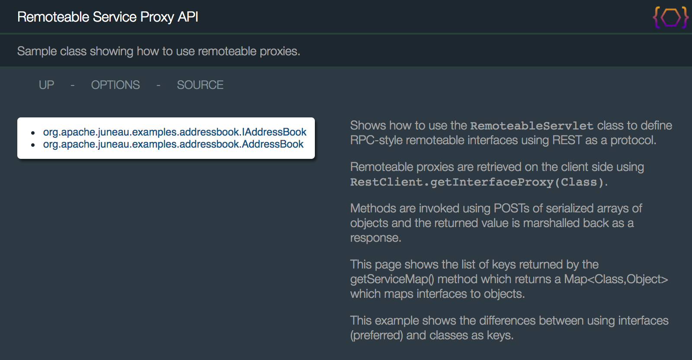
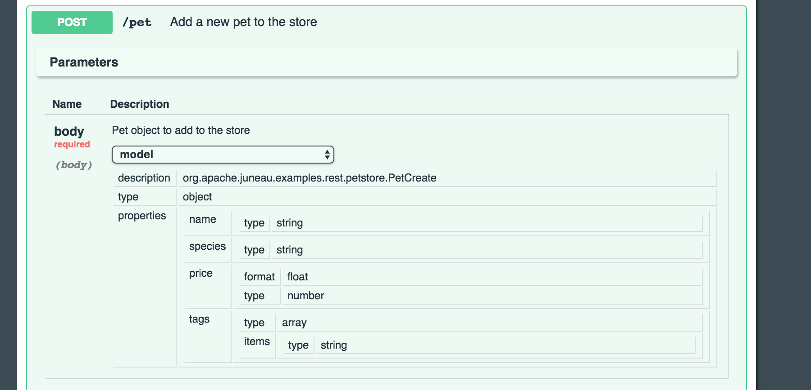
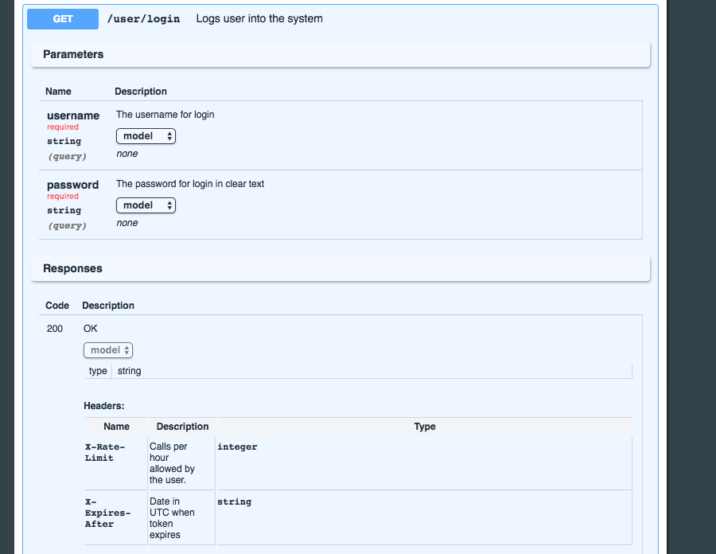
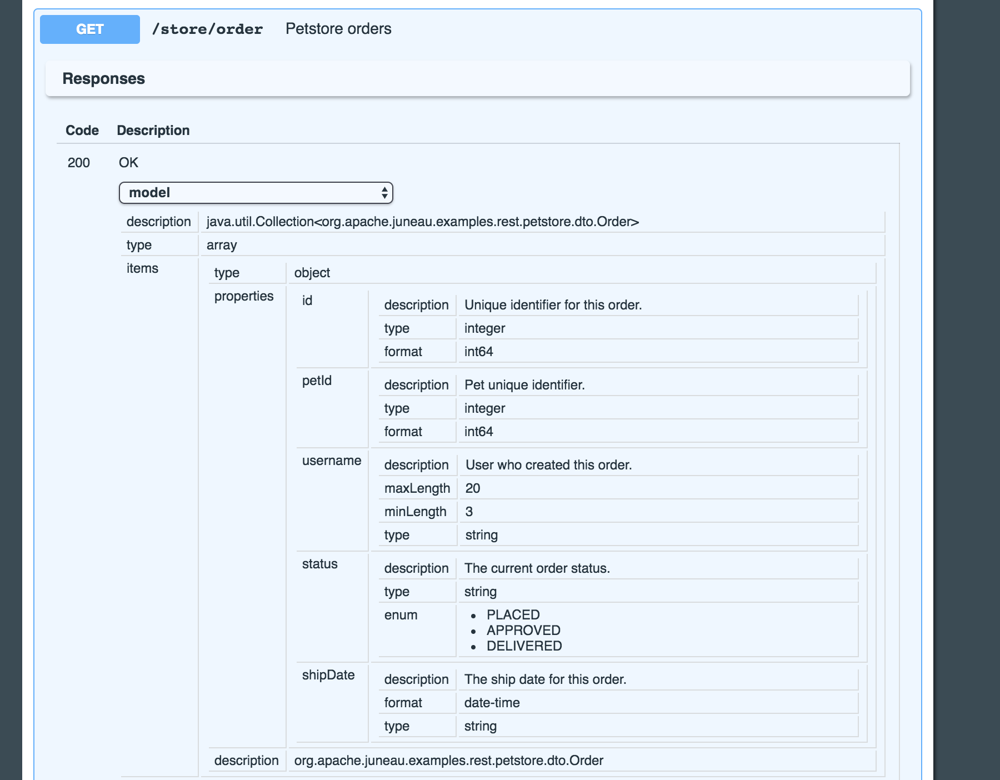
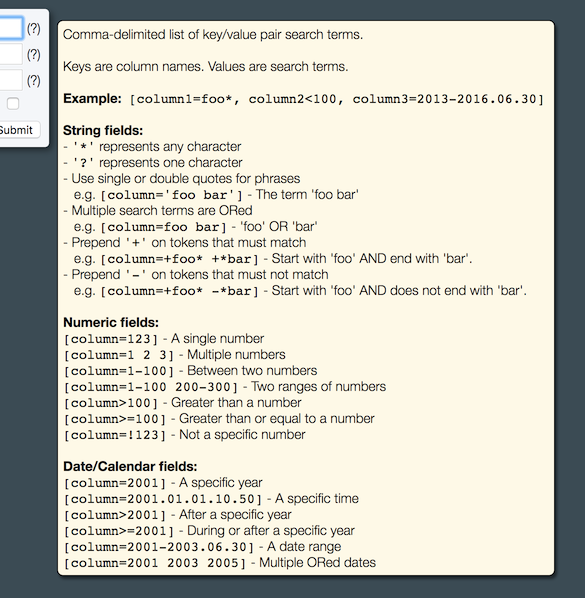

Apache Juneau™ is a single cohesive Java ecosystem consisting of the following parts:
<dependency>
<groupId>org.apache.juneau</groupId>
<artifactId>juneau-marshall</artifactId>
<version>{@property juneauVersion}</version>
</dependency>
juneau-marshall-{@property juneauVersion}.jar
org.apache.juneau.marshall_{@property juneauVersion}.jar
The juneau-marshall artifact contains the API for defining serializers and parsers, and
marshalling support for JSON, XML, HTML, URL-Encoding, UON and others.
It also defines many convenience utility classes used throughout the framework.
One of the goals of Juneau was to make serialization as simple as possible.
In a single line of code, you should be able to serialize and parse most POJOs.
Despite this simplicity, Juneau provides lots of extensibility and configuration properties for tailoring how
POJOs are serialized and parsed.
The built-in serializers in Juneau are fast, efficient, and highly configurable.
They work by serializing POJOs directly to streams instead of using intermediate Document Object Model
objects.
In most cases, you can serialize objects in one line of code by using one of the default serializers:
// A simple bean
public class Person {
public String name = "John Smith";
public int age = 21;
}
// Serialize to JSON, XML, or HTML
Person p = new Person();
// Produces:
// "{\"name\":\"John Smith\",\"age\":21}"
String json = JsonSerializer.DEFAULT.serialize(p);
// Produces:
// "{name:'John Smith',age:21}"
String json = SimpleJsonSerializer.DEFAULT.serialize(p);
// Produces:
// <object>
// <name>John Smith</name>
// <age>21</age>
// </object>
String xml = XmlSerializer.DEFAULT.serialize(p);
// Produces:
// <table>
// <tr><th>key</th><th>value</th></tr>
// <tr><td>name</td><td>John Smith</td></tr>
// <tr><td>age</td><td>21</td></tr>
// </table>
String html = HtmlSerializer.DEFAULT.serialize(p);
// Produces:
// "(name='John Smith',age=21)"
String uon = UonSerializer.DEFAULT.serialize(p);
// Produces:
// "name='John+Smith'&age=21"
String urlencoding = UrlEncodingSerializer.DEFAULT.serialize(p);
// Produces:
// 82 A4 6E 61 6D 65 AA 4A 6F 68 6E 20 53 6D 69 74 68 A3 61 67 65 15
byte[] b = MsgPackSerializer.DEFAULT.serialize(p);
In addition to the default serializers, customized serializers can be created using various built-in options:
// Use one of the default serializers to serialize a POJO
String json = JsonSerializer.DEFAULT.serialize(someObject);
// Create a custom serializer for lax syntax using single quote characters
JsonSerializer serializer = JsonSerializer.create().simple().sq().build();
// Clone an existing serializer and modify it to use single-quotes
JsonSerializer serializer = JsonSerializer.DEFAULT.copy().sq().build();
// Serialize a POJO to JSON
String json = serializer.serialize(someObject);
Default serialization support is provided for Java primitives, Maps, Collections,
beans, and arrays.
Extensible support for other data types such as Calendars, Dates,
Iterators is available through the use of POJO swaps (described later).
- {@doc GlossaryLanguageSupport link} - Glossary of all supported languages.
Parsers work by parsing input directly into POJOs instead of having to create intermediate Document Object
Models.
This allows them to parse input with minimal object creation.
Like the serializers, you can often parse objects in one line of code by using one of the default parsers:
// Use one of the predefined parsers.
Parser parser = JsonParser.DEFAULT;
// Parse a JSON object as a bean.
String json = "{name:'John Smith',age:21}";
Person p = parser.parse(json, Person.class);
// Or parse it into a generic Map.
Map m1 = parser.parse(json, Map.class);
// Parse a JSON string.
json = "'foobar'";
String s2 = parser.parse(json, String.class);
// Parse a JSON number as a Long or Float.
json = "123";
Long l3 = parser.parse(json, Long.class);
Float f3 = parser.parse(json, Float.class);
// Parse a JSON object as a HashMap<String,Person>.
json = "{a:{name:'John Smith',age:21},b:{name:'Joe Smith',age:42}}";
Map<String,Person> m4 = parser.parse(json, HashMap.class, String.class, Person.class)
// Parse a JSON object as a HashMap<String,LinkedList<Person>>.
json = "{a:[{name:'John Smith',age:21},{name:'Joe Smith',age:42}]}";
Map<String,List<Person>> m5 = parser.parse(json, HashMap.class, String.class,
LinkedList.class, Person.class)
// Parse a JSON array of integers as a Collection of Integers or int[] array.
json = "[1,2,3]";
List<Integer> l6 = parser.parse(json, LinkedList.class, Integer.class);
int[] i7 = parser.parse(json, int[].class);
The parsers can also be used to populating existing bean and collection objects:
// Use one of the predefined parsers.
Parser parser = JsonParser.DEFAULT;
// Populate the properties on an existing bean from a JSON object.
String json = "{name:'John Smith',age:21}";
Person p = new Person();
parser.parseIntoBean(json, p);
// Populate an existing list from a JSON array of numbers.
json = "[1,2,3]";
List<Integer> l2 = new LinkedList<Integer>();
parser.parseIntoCollection(json, l2, Integer.class);
// Populate an existing map from a JSON object containing beans.
json = "{a:{name:'John Smith',age:21},b:{name:'Joe Smith',age:42}}";
Map<String,Person> m3 = new TreeMap<String,Person>();
parser.parseIntoMap(json, m3, String.class, Person.class);
In the example above, we're parsing "lax" JSON (single quotes, unquoted attributes).
The JSON parser can handle any valid JSON syntax (such as quoted or unquoted attributes, single or double
quotes).
It can also handle JSON fragments and embedded Javascript comments.
Many of the JSON examples provided will use lax syntax which is easier to read since we don't have to deal
with escapes.
- {@doc GlossaryLanguageSupport link} - Glossary of all supported languages.
{@link org.apache.juneau.marshall.Marshall Marshalls} are simple pairings of a {@link org.apache.juneau.serializer.Serializer}
and {@link org.apache.juneau.parser.Parser} with convenience methods for serializing and parsing POJOs.
- {@link org.apache.juneau.marshall.Marshall}
- {@link org.apache.juneau.marshall.Marshall#read(Object,Class) read(Object,Class)}
- {@link org.apache.juneau.marshall.Marshall#read(Object,Type,Type...) read(Object,Type,Type...)}
- {@link org.apache.juneau.marshall.Marshall#write(Object) write(Object)}
- {@link org.apache.juneau.marshall.Marshall#write(Object,Object) write(Object,Object)}
- {@link org.apache.juneau.marshall.Marshall#toString(Object) toString(Object)}
- {@link org.apache.juneau.marshall.Marshall#println(Object) println(Object)}
Marshalls are often cleaner to use on-the-fly since they have simplified names.
The following shows the {@link org.apache.juneau.marshall.Json} marshall in action:
// Using instance.
Json json = new Json();
MyPojo myPojo = json.read(string, MyPojo.class);
String string = json.write(myPojo);
// Using DEFAULT instance.
MyPojo myPojo = Json.DEFAULT.read(string, MyPojo.class);
String string = Json.DEFAULT.write(myPojo);
- {@doc GlossaryLanguageSupport Language Support} - Glossary of all supported languages.
Out-of-the-box, Juneau supports marshalling of Java beans with standard public getters and setters, public
fields, and fluent setters (e.g. withX naming convention). There are also many settings and
annotations that can be used to customize how bean properties are detected. The following is an example of
some of the ways to define bean properties:
public class MyBean {
// Public field property.
public String property1;
// Standard public getters/setters.
public String getProperty2() {...}
public void setProperty2(String value) {...}
// With fluent-style setter.
public String getProperty3() {...}
public MyBean withProperty3(String value) {...}
// Read-only property (ignored by parsers).
public String getProperty4() {...}
// Write-only property (ignored by serializers).
public void setProperty5(String value) {...}
// Non-standard getters/setters identified by annotation.
@Beanp
public String property6() {...}
@Beanp
public void property6(String value) {...}
// Non-standard getters/setters identified by annotation with overridden names.
@Beanp("property7")
public String property7X() {...}
@Beanp("property7")
public void property7X(String value) {...}
// Non-public getters/setters identified by annotation.
@Beanp
private String getProperty8() {...}
@Beanp
private void setProperty8(String value) {...}
// Ignore a method that looks like a getter.
@BeanIgnore
public String getNotAProperty() {...}
}
Several settings exist to allow you to customize how bean properties are handled by serializers and parsers:
- {@link org.apache.juneau.BeanContextBuilder}
- {@link org.apache.juneau.BeanContextBuilder#beanClassVisibility(Visibility) beanClassVisibility(Visibility)} - Allows non-public POJOs to be treated as beans.
- {@link org.apache.juneau.BeanContextBuilder#beanConstructorVisibility beanConstructorVisibility(Visibility)} - Allows non-public constructors to be used on beans.
- {@link org.apache.juneau.BeanContextBuilder#beanFieldVisibility beanFieldVisibility(Visibility)} - Allows non-public fields to be used as bean properties.
- {@link org.apache.juneau.BeanContextBuilder#beanMethodVisibility beanMethodVisibility(Visibility)} - Allows non-public methods to be used as bean getters and setters.
- {@link org.apache.juneau.BeanContextBuilder#beansRequireDefaultConstructor() beansRequireDefaultConstructor()} - Don't treat a POJO as a bean if it doesn't have a default no-arg constructor.
- {@link org.apache.juneau.BeanContextBuilder#beansRequireSerializable() beansRequireSerializable()} - Don't treat a POJO as a bean if it doesn't implement Serializable.
- {@link org.apache.juneau.BeanContextBuilder#beansRequireSettersForGetters beansRequireSettersForGetters} - Ignore getter methods if they don't have setter methods.
- {@link org.apache.juneau.BeanContextBuilder#disableBeansRequireSomeProperties disableBeansRequireSomeProperties} - Don't treat a POJO as a bean if it doesn't have at least one property defined.
Settings and equivalent annotations are also available to control which properties are marshalled and how they are ordered.
- {@link org.apache.juneau.BeanContextBuilder}
- {@link org.apache.juneau.BeanContextBuilder#beanProperties(Class,String) beanProperties(Class,String)} - Specifies properties to include and property order during marshalling.
- {@link org.apache.juneau.BeanContextBuilder#beanPropertiesExcludes(Class,String) beanPropertiesExcludes(Class,String)} - Specifies properties to exclude during marshalling.
- {@link org.apache.juneau.BeanContextBuilder#beanPropertiesReadOnly(Class,String) beanPropertiesReadOnly(Class,String) } - Specifies read-only properties (ignored during parsing).
- {@link org.apache.juneau.BeanContextBuilder#beanPropertiesWriteOnly(Class,String) beanPropertiesWriteOnly(Class,String)} - Specifies write-only properties (ignored during reading).
It's common to use the {@link org.apache.juneau.annotation.Bean#properties @Bean(properties|p)} annotation to force the ordering
of properties during marshalling. IBM JVMs keep the ordering of fields and methods in the compiled bytecode, but
Oracle JVMs do not and return fields/methods in random order. The {@link org.apache.juneau.annotation.Bean#properties @Bean(properties|p)} annotation was added to
help with this limitation.
// Bean should be marshalled with properties in the specified order.
@Bean(bpi="foo,bar,baz")
public class MyBean {
...
}
Another option to force ordering of properties is to use {@link org.apache.juneau.BeanContext#BEAN_sortProperties} or
{@link org.apache.juneau.annotation.Bean#sort @Bean(sort)}.
@Bean(sort=true)
public class MyBean {
...
}
- {@doc PojoCategories POJO Categories} - Marshalling rules for POJOs.
- {@doc BeanDictionaries Bean Dictionaries} - Handling properties with subclassable types.
- {@doc BeanAnnotation @Bean Annotation} - Details on the @Bean annotation on bean classes.
- {@doc BeanpAnnotation @Beanp Annotation} - Details on the @Beanp annotation on bean methods.
- {@doc BeancAnnotation @Beanc Annotation} - Details on the @Beanc annotation on bean constructors.
- {@doc BeanIgnoreAnnotation @BeanIgnore Annotation} - Details on the @BeanIgnore annotation classes and methods.
- {@doc PojoBuilders POJO Builders} - Parsing into unmodifiable beans using builders.
- {@doc BeanFilters Bean filters} - Programmatic filters for controlling bean properties.
- {@doc InterfaceFilters Interface filters} - Limiting bean properties to those exposed through interfaces.
The {@link org.apache.juneau.annotation.Bean @Bean} annotation is used to tailor how beans are
interpreted by the framework.
Bean property inclusion and ordering on a bean class can be done using the
{@link org.apache.juneau.annotation.Bean#properties() @Bean(properties)} annotation.
// Address class with only street/city/state properties (in that order).
// All other properties are ignored.
@Bean(bpi="street,city,state")
public class Address { ... }
Bean properties can be excluded using the {@link org.apache.juneau.annotation.Bean#excludeProperties() @Bean(excludeProperties|xp)}
annotation.
// Address class with only street/city/state properties (in that order).
// All other properties are ignored.
@Bean(bpx="city,state"})
public class Address { ... }
Bean properties can be sorted alphabetically using {@link org.apache.juneau.annotation.Bean#sort() @Bean(sort)}
// Address class with only street/city/state properties (in that order).
// All other properties are ignored.
@Bean(sort=true)
public class MyBean { ... }
The {@link org.apache.juneau.annotation.Bean#propertyNamer() @Bean(propertyNamer)} annotation
is used to provide customized naming of properties.
Property namers are used to transform bean property names from standard form to some other form.
For example, the {@link org.apache.juneau.PropertyNamerDLC} will convert property names to
dashed-lowercase, and these will be used as attribute names in JSON and element names in XML.
// Define a class with dashed-lowercase property names.
@Bean(propertyNamer=PropertyNamerDashedLC.class)
public class MyBean { ... }
The {@link org.apache.juneau.annotation.Bean#interfaceClass @Bean(interfaceClass)} annotation is used
to limit properties on beans to specific interface classes.
When specified, only the list of properties defined on the interface class will be used during
serialization.
Additional properties on subclasses will be ignored.
// Parent class
@Bean(interfaceClass=A.class)
public abstract class A {
public String f0 = "f0";
}
// Child class
public class A1 extends A {
public String f1 = "f1";
}
JsonSerializer serializer = SimpleJsonSerializer.DEFAULT;
A1 a1 = new A1();
String result = serializer.serialize(a1);
assertEquals("{f0:'f0'}", result); // Note f1 is not serialized.
Note that this annotation can be used on the parent class so that it filters to all child classes.
Or can be set individually on the child classes.
The {@link org.apache.juneau.annotation.Bean#stopClass @Bean(stopClass)} annotation is another
way to limit which properties are serialized (except from the opposite direction).
It's identical in purpose to the stop class specified by {@link java.beans.Introspector#getBeanInfo(Class, Class)}.
Any properties in the stop class or in its base classes will be ignored during analysis.
For example, in the following class hierarchy, instances of C3 will include property
p3, but not p1 or p2.
public class C1 {
public int getP1();
}
public class C2 extends C1 {
public int getP2();
}
@Bean(stopClass=C2.class)
public class C3 extends C2 {
public int getP3();
}
The {@link org.apache.juneau.annotation.Bean#interceptor() @Bean(interceptor)} annotation
and {@link org.apache.juneau.transform.BeanInterceptor} class can be used to perform interception
and inline handling of bean getter and setter calls.
// Interceptor that strips out sensitive information on Address beans.
public class AddressInterceptor extends BeanInterceptor<Address> {
@Override
public Object readProperty(Address bean, String name, Object value) {
if ("taxInfo".equals(name))
return "redacted";
return value;
}
@Override
public Object writeProperty(Address bean, String name, Object value) {
if ("taxInfo".equals(name) && "redacted".equals(value))
return TaxInfoUtils.lookup(bean.getStreet(), bean.getCity(), bean.getState());
return value;
}
}
// Register interceptor on bean class.
@Bean(interceptor=AddressInterceptor.class)
public class Address {
public String getTaxInfo() {...}
public void setTaxInfo(String s) {...}
}
The {@link org.apache.juneau.annotation.Beanp @Beanp} annotation is used to tailor how
individual bean properties are interpreted by the framework.
The {@link org.apache.juneau.annotation.Beanp#name() @Beanp(name)} annotation
is used to override the name of the bean property.
public class MyBean {
@Beanp(name="Bar")
public String getFoo() {...}
}
The {@link org.apache.juneau.annotation.Name @Name} annotation is a shortcut for specifying a bean property name:
public class MyBean {
@Name("Bar")
public String getFoo() {...}
}
If the {@link org.apache.juneau.BeanContext#BEAN_beanFieldVisibility} setting on the bean context excludes this field
(e.g. the visibility is set to the default of PUBLIC, but the field is PROTECTED), this annotation
can be used to force the field to be identified as a property.
public class MyBean {
@Beanp
protected String getFoo() {...}
}
The bean property named "*" is the designated "dynamic property" which allows for "extra" bean
properties not otherwise defined.
This is similar in concept to the Jackson @JsonGetterAll and @JsonSetterAll
annotations, but generalized for all supported marshall languages.
The primary purpose is for backwards compatibility in parsing newer streams with addition
information into older beans.
The following shows various ways of using dynamic bean properties.
// Option #1 - A simple public Map field.
// The field name can be anything.
public class BeanWithDynaField {
@Beanp("*")
public Map<String,Object> extraStuff = new LinkedHashMap<String,Object>();
}
// Option #2 - Getters and setters.
// Method names can be anything.
// Getter must return a Map with String keys.
// Setter must take in two arguments, a String and Object.
public class BeanWithDynaMethods {
@Beanp("*")
public Map<String,Object> getMyExtraStuff() {
...
}
@Beanp("*")
public void setAnExtraField(String name, Object value) {
...
}
}
// Option #3 - Getter only.
// Properties will be added through the getter.
public class BeanWithDynaGetterOnly {
@Beanp("*")
public Map<String,Object> getMyExtraStuff() {
...
}
}
Similar rules apply for value types and swaps.
The property values optionally can be any serializable type or use swaps.
// A serializable type other than Object.
public class BeanWithDynaFieldWithListValues {
@Beanp("*")
public Map<String,List<String>> getMyExtraStuff() {
...
}
}
// A swapped value.
public class BeanWithDynaFieldWithSwappedValues {
@Beanp(name="*", swap=TemporalCalendarSwap.IsoOffsetDateTime.class)
public Map<String,Calendar> getMyExtraStuff() {
...
}
}
Note that if you're not interested in these additional properties, you can also use the
{@link org.apache.juneau.BeanContext#BEAN_ignoreUnknownBeanProperties} setting to ignore values
that don't fit into existing properties.
The {@link org.apache.juneau.annotation.Beanp#value() @Beanp(value)} annotation
is a synonym for {@link org.apache.juneau.annotation.Beanp#name() @Beanp(name)}.
Use it in cases where you're only specifying a name so that you can shorten your annotation.
The following annotations are equivalent:
@Beanp(name="foo")
@Beanp("foo")
The {@link org.apache.juneau.annotation.Beanp#type() @Beanp(type)} annotation
is used to identify a specialized class type for a generalized property.
Normally the type is inferred through reflection of the field type or getter return type.
However, you'll want to specify this value if you're parsing beans where the bean property class
is an interface or abstract class to identify the bean type to instantiate.
Otherwise, you may cause an {@link java.lang.InstantiationException} when trying to set these fields.
This property must denote a concrete class with a no-arg constructor.
public class MyBean {
// Identify concrete type as a HashMap.
@Beanp(type=HashMap.class)
public Map p1;
}
The {@link org.apache.juneau.annotation.Beanp#params() @Beanp(params)} annotation
is for bean properties of type map or collection.
It's used to identify the class types of the contents of the bean property object when
the general parameter types are interfaces or abstract classes.
public class MyBean {
// This is a HashMap<String,Integer>.
@Beanp(type=HashMap.class, params={String.class,Integer.class})
public Map p1;
}
The {@link org.apache.juneau.annotation.Beanp#properties() @Beanp(properties)}
annotation is used to limit which child properties are rendered by the serializers.
It can be used on any of the following bean property types:
- Beans - Only render the specified properties of the bean.
- Maps - Only render the specified entries in the map.
- Bean/Map arrays - Same, but applied to each element in the array.
- Bean/Map collections - Same, but applied to each element in the collection.
public class MyClass {
// Only render 'f1' when serializing this bean property.
@Beanp(bpi={"f1"})
public MyChildClass x1 = new MyChildClass();
}
public class MyChildClass {
public int f1 = 1;
public int f2 = 2;
}
// Renders "{x1:{f1:1}}"
String json = JsonSerializer.DEFAULT.serialize(new MyClass());
The {@link org.apache.juneau.annotation.Beanp#format() @Beanp(format)}
annotation specifies a String format for converting a bean property value to a formatted string.
// Serialize a float as a string with 2 decimal places.
@Beanp(format="$%.2f")
public float price;
The {@link org.apache.juneau.annotation.Beanc @Beanc} annotation is used to
map constructor arguments to property names on bean with read-only properties.
Since method parameter names are lost during compilation, this annotation essentially redefines
them so that they are available at runtime.
The definition of a read-only bean is a bean with properties with only getters, like shown below:
// Our read-only bean.
public class Person {
private final String name;
private final int age;
@Beanc(properties="name,age"})
public Person(String name, int age) {
this.name = name;
this.age = age;
}
// Read only properties.
// Getters, but no setters.
public String getName() {
return name;
}
public int getAge() {
return age;
}
}
// Parsing into a read-only bean.
String json = "{name:'John Smith',age:45}";
Person p = JsonParser.DEFAULT.parse(json);
String name = p.getName(); // "John Smith"
int age = p.getAge(); // 45
Beans can also be defined with a combination of read-only and read-write properties.
The {@link org.apache.juneau.annotation.Name @Name} annotation can also be used instead of @Beanc(properties):
@Beanc
public Person(@Name("name") String name, @Name("age") int age) {
this.name = name;
this.age = age;
}
If neither @Beanc(properties) or @Name is used to identify the bean property names,
we will try to use the parameter names if they are available in the bytecode.
The {@link org.apache.juneau.annotation.BeanIgnore @BeanIgnore} annotation is used to
ignore classes, fields, and methods from being interpreted as beans or bean components.
When applied to classes, objects will be converted to strings even though they look like beans.
// Not really a bean! Use toString() instead!
@BeanIgnore
public class MyBean {...}
When applied to fields and getters/setters, they will be ignored as bean properties.
public class MyBean {
// Not a bean property!
@BeanIgnore
public String foo;
// Not a bean property!
@BeanIgnore
public String getBar() {...}
}
The {@link org.apache.juneau.annotation.NameProperty @NameProperty} annotation is used to
identify a setter as a method for setting the name of a POJO as it's known by its parent object.
A commonly-used case is when you're parsing a JSON map containing beans where one of the bean
properties is the key used in the map.
// JSON
{
id1: {name: 'John Smith', sex: 'M'},
id2: {name: 'Jane Doe', sex: 'F'}
}
public class Person {
@NameProperty
public String id; // Value gets assigned from object key
public String name;
public char sex;
}
The {@link org.apache.juneau.annotation.ParentProperty @ParentProperty} annotation is used to
identify a setter as a method for adding a parent reference to a child object.
A commonly-used case is when you're parsing beans and a child bean has a reference to a parent bean.
public class AddressBook {
public List<Person> people;
}
public class Person {
@ParentProperty
public AddressBook addressBook; // A reference to the containing address book.
public String name;
public char sex;
}
Parsers will automatically set this field for you in the child beans.
Juneau parsers can use builders to instantiate POJOs.
This is useful in cases where you want to create beans with read-only properties.
Note that while it's possible to do this using the {@link org.apache.juneau.annotation.Beanc @Beanc}
annotation, using builders can often be cleaner.
A typical builder usage is shown below:
MyBean b = MyBean.create().foo("foo").bar(123).build();
The code for such a builder is shown below:
public class MyBean {
// Read-only properties.
public final String foo;
public final int bar;
// Private constructor.
private MyBean(MyBeanBuilder b) {
this.foo = b.foo;
this.bar = b.bar;
}
// Static method that creates a builder.
public static MyBeanBuilder create() {
return new MyBeanBuilder();
}
// Builder class.
public static class MyBeanBuilder {
private String foo;
private int bar;
// Method that creates the bean.
public MyBean build() {
return new MyBean(this);
}
// Bean property setters.
@Beanp
public MyBeanBuilder foo(String foo) {
this.foo = foo;
return this;
}
@Beanp
public MyBeanBuilder bar(int bar) {
this.bar = bar;
return this;
}
}
}
The POJO class can be any type including beans.
Builders MUST be beans with one or more writable properties.
The bean properties themselves do not need to be readable (i.e. getters are optional).
Builders require two parts:
- A way to detect and instantiate a builder using reflection.
- A way to instantiate a POJO from a builder.
The first can be accomplished through any of the following:
- A static create() method on the POJO class that returns a builder instance.
public static MyBuilder create() {...}
- A public constructor on the POJO class that takes in a single parameter that implements the {@link org.apache.juneau.transform.Builder} interface.
The builder class must have a public no-arg constructor.
public MyPojo(MyBuilder b) {...}
- A {@link org.apache.juneau.annotation.Builder @Builder} annotation on the POJO class.
The builder class must have a public no-arg constructor.
@Builder(MyBuilder.class)
public class MyPojo {...}
The second can be accomplished through any of the following:
- {@link org.apache.juneau.annotation.Builder}
- {@link org.apache.juneau.transform.Builder}
The {@del org.apache.juneau.transform.BeanFilter} class is the programmatic equivalent to the
{@link org.apache.juneau.annotation.Bean @Bean} annotation.
In practice, it's usually simpler to use the {@link org.apache.juneau.annotation.Bean @Bean} and
{@link org.apache.juneau.annotation.Beanp @Beanp} annotations on your bean classes.
However, bean filters make it possible to accomplish the same when you can't add annotations
to existing code.
Bean filters are defined through {@del org.apache.juneau.transform.BeanFilterBuilder BeanFilterBuilders}.
In the previous examples, we defined this bean annotation:
@Bean(bpi="street,city,state")
public class Address { ... }
The programmatic equivalent would be:
public class AddressFilter extends BeanFilterBuilder<Address> {
// Must provide a no-arg constructor!
public AddressFilter() {
bpi("street,city,state"); // The properties we want exposed.
}
}
Bean filters are added to serializers and parsers using the following:
- {@del BEAN_beanFilters}
- {@del BeanContextBuilder#beanFilters(Object...)}
For example:
// Create a new JSON serializer and associate a bean filter with it.
WriterSerializer serializer = JsonSerializer
.create()
.beanFilters(AddressFilter.class)
.build();
Note that if you use the annotation, you do NOT need to set anything on the serializers/parsers.
The annotations will be detected and bean filters will automatically be created for them.
The {@del BeanContextBuilder#beanFilters(Object...)} method also allows you to pass in interfaces.
Any class that's not a subclass of {@del org.apache.juneau.transform.BeanFilterBuilder} get interpreted
as bean interface classes.
These cause bean implementations of those interfaces to only expose the properties defined on the
interface.
// An interface with the 3 properties we want serialized.
public interface AddressInterface {
public String getStreet();
public String getCity();
public String getState();
}
// Our bean implementation.
public class Address implements AddressInterface {
public String getStreet() {...};
public String getCity() {...};
public String getState() {...};
public String getCountry() {...};
}
// Create a new JSON serializer that only exposes street,city,state on Address bean.
// The 'country' field will be ignored.
WriterSerializer serializer = JsonSerializer
.create()
.beanFilters(AddressInterface.class)
.build();
Occasionally, you may want to limit bean properties to only those defined on a parent class or interface.
This is accomplished through interface filters.
Interface filters are defined through the following:
- {@del BeanContext#BEAN_beanFilters}
- {@link org.apache.juneau.annotation.Bean#interfaceClass() Bean(interfaceClass)}
- {@del org.apache.juneau.transform.BeanFilterBuilder#interfaceClass(Class)}
For example, let's define the following interface and implementation:
// Interface
public class MyInterface {
public String getFoo();
}
// Implementation
public class MyInterfaceImpl implements MyInterface {
public String getFoo() {...}
public String getBar() {...}
}
Suppose we only want to render the properties defined on our interface, not the implementation.
To do so, we can define the following bean filter:
// Define transform that limits properties to only those defined on MyClass
public class MyInterfaceFilter extends BeanFilter<MyInterface> {
public MyInterfaceFilter() {
interfaceClass(MyInterface.class);
}
}
When serialized, the serialized bean will only include properties defined on the interface.
WriterSerializer serializer = JsonSerializer
.create()
.simple()
.beanFilters(MyInterfaceFilter.class)
.build();
MyInterface object = new MyInterfaceImpl();
// Prints "{foo:'foo'}"
// bar is ignored because it's not on the interface
String json = serializer.serialize(object);
The {@del BeanContextBuilder#beanFilters(Object...)} method will automatically interpret any
non-BeanFilter classes passed in as meaning interface classes.
So in the previous example, the BeanFilter class could have been avoided altogether by just
passing in MyInterface.class to the serializer, like so:
WriterSerializer serializer = JsonSerializer
.create()
.beanFilters(MyInterface.class) Shortcut!
.build();
The annotation equivalent is {@link org.apache.juneau.annotation.Bean#interfaceClass() Bean#interfaceClass()}.
@Bean(interfaceClass=MyInterface.class)
public class MyInterfaceImpl implements MyInterface {
public String getFoo() {...}
public String getBar() {...}
}
The annotation can be used in a couple of ways.
Using the annotation on an interface will be inherited by all children.
@Bean(interfaceClass=MyInterface.class)
public class MyInterface {
public String getFoo();
}
The annotation can be used on parent classes as well.
Child beans will only serialize properties defined on the parent class.
@Bean(interfaceClass=MyAbstractClass.class)
public abstract class MyAbstractClass {
public String getFoo() {...};
}
Whereas interface filters limit properties defined on child classes, stop filters
do the opposite and limit properties defined on parent classes.
Stop classes are defined through the following:
- {@link org.apache.juneau.annotation.Bean#stopClass() Bean(stopClass)}
- {@del org.apache.juneau.transform.BeanFilterBuilder#stopClass(Class)}
Stop classes are identical in purpose to the stop class specified by {@link java.beans.Introspector#getBeanInfo(Class, Class)}.
Any properties in the stop class or in its base classes will be ignored during serialization.
For example, in the following class hierarchy, instances of C3 will include property p3,
but not p1 or p2.
public class C1 {
public int getP1();
}
public class C2 extends C1 {
public int getP2();
}
@Bean(stopClass=C2.class)
public class C3 extends C2 {
public int getP3();
}
// Serializes property 'p3', but NOT 'p1' or 'p2'.
String json = JsonSerializer.DEFAULT.serialize(new C3());
Juneau serializers treat instances of Readers and InputStreams special by
simply serializing their contents directly to the output stream or writer.
This allows you to embed fully customized serializer output.
public class MyBean {
// A bean property that produces raw JSON.
public Reader f1 = new StringReader("{'foo':'bar'}");
}
// Produces "{f1:{'foo':'bar'}}"
String json = SimpleJsonSerializer.DEFAULT.toString(new MyBean());
Note that if you're serializing Readers and InputStreams, it's up to you to make sure you're producing
valid output (in this case JSON).
A more typical scenario where this is useful is by using swaps to convert POJOs to Readers whose
contents are determined via the {@link org.apache.juneau.BeanSession#getMediaType()} method.
In the following example, we're customizing the JSON output for a particular bean type, but leaving
all other renditions as-is:
@Swap(MyBeanSwapSometimes.class)
public class MyBean {...}
// A swap that produces specialized output for JSON, but default serialization for
// all other media types.
public class MyBeanSwapSometimes extends PojoSwap<MyBean,Object> {
public Object swap(BeanSession session, MyPojo object) throws Exception {
MediaType mt = session.getMediaType();
if (mt.hasSubType("json"))
return new StringReader("{myPojo:'foobar'}"); // Custom JSON output
return object; // Otherwise serialize it as a normal bean
}
}
Due to the nature of the RDF serializers, Readers and InputStreams are serialized as literals,
not as RDF text.
This is due to the fact that the RDF serializers use a DOM for serialization, so we don't have
access to the underlying stream.
There is a separate set of serializers for serializing HTTP parts (query, form-data, headers, path variables, and plain-text request bodies).
The distinction is that these are designed to serialize directly to strings based on Open-API schema information.
// Schema information about our part.
HttpPartSchema schema = HttpPartSchema
.create("array")
.collectionFormat("pipes")
.items(
HttpPartSchema
.create("array")
.collectionFormat("csv")
.items(
HttpPartSchema.create("integer","int64")
)
)
.build();
// Our value to serialize
Object value = new long[][]{{1,2,3},{4,5,6},{7,8,9}};
// Produces "1,2,3|4,5,6|7,8,9"
String output = OpenApiSerializer.DEFAULT.serialize(HttpPartType.HEADER, schema, value);
The {@link org.apache.juneau.httppart.HttpPartSchemaBuilder} class is provided for shortening the creation of schemas.
The equivalent to the schema above can be structured like so:
import static org.apache.juneau.httppart.HttpPartSchemaBuilder.*;
// Schema information about our part.
HttpPartSchema schema = tArrayPipes(tArrayCsv(tInt64())).build();
The class hierarchy for the part serializers are:
- {@link org.apache.juneau.httppart.HttpPartSerializer}
- {@link org.apache.juneau.httppart.SimplePartSerializer} - Serializes directly to strings.
- {@link org.apache.juneau.uon.UonSerializer} - Serializes to UON notation.
- {@link org.apache.juneau.oapi.OpenApiSerializer} - Serializes using Open-API schema rules.
There is a separate set of parsers for parsing HTTP parts (query, form-data, headers, path variables, and plain-text request bodies).
The distinction is that these are designed to parse directly from strings based on Open-API schema information.
import static org.apache.juneau.httppart.HttpPartSchemaBuilder.*;
// Schema information about our part.
HttpPartSchema schema = tArrayPipes(tArrayCsv(tInt64())).build();
// Our input to parse.
String input = "1,2,3|4,5,6|7,8,9";
// Produces "[[1,2,3],[4,5,6],[7,8,9]]
long[][] value = OpenApiParser.DEFAULT.parse(HttpPartType.HEADER, schema, input, long[][].class);
The class hierarchy for the part serializers are:
- {@link org.apache.juneau.httppart.HttpPartParser}
- {@link org.apache.juneau.httppart.SimplePartParser} - Parses directly from strings.
- {@link org.apache.juneau.uon.UonParser} - Parses from UON notation.
- {@link org.apache.juneau.oapi.OpenApiParser} - Parses using Open-API schema rules.
Serializers and parsers have a wide variety of configurable properties. They all extend from the
{@link org.apache.juneau.BeanContextBuilder} class that allows you to easily construct new instances from scratch or build upon existing instances.
For example, the following code shows how to configure a JSON serializer:
WriterSerializer serializer = JsonSerializer
.create() // Create a JsonSerializerBuilder
.simpleMode() // Simple mode
.ws() // Use whitespace
.sq() // Use single quotes
.build(); // Create a JsonSerializer
Configurable settings can also be set declaratively.
The following produces the same serializer.
WriterSerializer serializer = JsonSerializer
.create()
.set(JSON_simpleMode)
.set(WSERIALIZER_useWhitespace)
.set(WSERIALIZER_quoteChar, "'")
.build();
However, each of the serializers and parsers already contain reusable instances with common configurations.
For example, JSON has the following predefined reusable serializers and parsers:
- {@link org.apache.juneau.json.JsonSerializer}
- {@link org.apache.juneau.json.JsonSerializer#DEFAULT DEFAULT}
- {@link org.apache.juneau.json.JsonSerializer#DEFAULT_READABLE DEFAULT_READABLE}
- {@link org.apache.juneau.json.SimpleJsonSerializer}
- {@link org.apache.juneau.json.SimpleJsonSerializer#DEFAULT DEFAULT}
- {@link org.apache.juneau.json.SimpleJsonSerializer#DEFAULT_READABLE DEFAULT_READABLE}
- {@link org.apache.juneau.json.JsonParser}
- {@link org.apache.juneau.json.JsonParser#DEFAULT DEFAULT}
- {@link org.apache.juneau.json.JsonParser#DEFAULT_STRICT DEFAULT_STRICT}
These can be used directly, as follows:
// Serialize a POJO to LAX JSON.
String json = SimpleJsonSerializer.DEFAULT.serialize(myPojo);
For performance reasons, serializers and parsers are immutable.
However, they can be 'copied' and modified using the copy() method.
// Clone and customize an existing serializer.
WriterSerializer serializer = SimpleJsonSerializer.DEFAULT
.copy() // Create a new builder with copied settings.
.quoteChar('"') // Use a different quote character.
.build();
Configurable properties can be set globally using either system properties or environment variables.
For example, the WSERIALIZER_useWhitespace variable resolves to the string "WriterSerializer.useWhitespace.b".
This setting can be enabled by setting the system property "WriterSerializer.useWhitespace" or environment
variables "WriterSerializer_useWhitespace" or "WRITERSERIALIZER_USEWHITESPACE" to "true".
- {@doc GlossaryConfigurableProperties Configurable Properties Glossary}
All configurable properties described in the previous section have annotation equivalents that can be applied on
classes or methods.
In the section on the REST server API, we describe how to configure serializers and parsers using @Property
annotations such as shown below:
// Configuring serializers/parsers using @Property annotations.
@Rest(
path="/atom",
title="Sample ATOM feed resource",
properties={
@Property(name=WSERIALIZER_quoteChar, value="'"),
@Property(name=RDF_rdfxml_tab, value="5"),
@Property(name=RDF_addRootProperty, value="true"),
@Property(name=BEAN_examples, value="{'org.apache.juneau.dto.atom.Feed': $F{AtomFeedResource_example.json}}")
}
...
)
public class AtomFeedResource extends BasicRestServletJena {
...
}
However, an even easier way to configure serializers and parsers are to used provided specialized @XConfig
annotations like those shown below:
// Same as above but using specialized annotations.
@Rest(
path="/atom",
title="Sample ATOM feed resource"
...
)
@SerializerConfig(quoteChar="'")
@RdfConfig(rdfxml_tab="5", addRootProperty="true")
@BeanConfig(examples="Feed: $F{AtomFeedResource_example.json}")
public class AtomFeedResource extends BasicRestServletJena {
...
}
Config annotations are provided for all serializers and parsers:
- {@link org.apache.juneau.annotation.BeanConfig BeanConfig}
- {@link org.apache.juneau.csv.annotation.CsvConfig CsvConfig}
- {@link org.apache.juneau.html.annotation.HtmlConfig HtmlConfig}
- {@link org.apache.juneau.html.annotation.HtmlDocConfig HtmlDocConfig}
- {@link org.apache.juneau.jso.annotation.JsoConfig JsoConfig}
- {@link org.apache.juneau.json.annotation.JsonConfig JsonConfig}
- {@link org.apache.juneau.jsonschema.annotation.JsonSchemaConfig JsonSchemaConfig}
- {@link org.apache.juneau.msgpack.annotation.MsgPackConfig MsgPackConfig}
- {@link org.apache.juneau.oapi.annotation.OpenApiConfig OpenApiConfig}
- {@link org.apache.juneau.parser.annotation.ParserConfig ParserConfig}
- {@link org.apache.juneau.plaintext.annotation.PlainTextConfig PlainTextConfig}
- {@link org.apache.juneau.jena.annotation.RdfConfig RdfConfig}
- {@link org.apache.juneau.serializer.annotation.SerializerConfig SerializerConfig}
- {@link org.apache.juneau.soap.annotation.SoapXmlConfig SoapXmlConfig}
- {@link org.apache.juneau.uon.annotation.UonConfig UonConfig}
- {@link org.apache.juneau.urlencoding.annotation.UrlEncodingConfig UrlEncodingConfig}
- {@link org.apache.juneau.xml.annotation.XmlConfig XmlConfig}
Config annotations defined on classes and methods can be applied to serializers and parsers using the following methods:
- {@link org.apache.juneau.BeanContextBuilder}
- {@link org.apache.juneau.BeanContextBuilder#applyAnnotations(Class...) applyAnnotations(Class...)} - Apply annotations from class and all parent classes.
- {@link org.apache.juneau.BeanContextBuilder#applyAnnotations(Method...) applyAnnotations(Method...)} - Apply annotations from method and parent methods.
The following example shows how annotations defined on a dummy class can be applied to a serializer:
@SerializerConfig(quoteChar="'")
@BeanConfig(bpi="AddressBean: street,city,state")
public static class DummyClass {}
WriterSerializer serializer = JsonSerializer.create().applyAnnotations(DummyClass.class).build();
String json = serializer.toString(addressBean);
Annotations can also be applied directly to serializers and parsers using the following method:
- {@link org.apache.juneau.BeanContextBuilder}
- {@link org.apache.juneau.BeanContextBuilder#annotations(Annotation...) annotations(Annotation...)}
The following example shows a concrete implementation of an interface can be applied to a serializer:
public class AddressBean {...}
Bean ba = new BeanAnnotation("AddressBean").bpi("street,city,state");
WriterSerializer serializer = JsonSerializer.create().annotations(ba).build();
String json = serializer.toString(addressBean); // Will print street,city,state
The following concrete annotation implementation are provided:
- {@link org.apache.juneau.annotation.BeanAnnotation} implements {@link org.apache.juneau.annotation.Bean}
- {@link org.apache.juneau.annotation.BeancAnnotation} implements {@link org.apache.juneau.annotation.Beanc}
- {@link org.apache.juneau.annotation.BeanIgnoreAnnotation} implements {@link org.apache.juneau.annotation.BeanIgnore}
- {@link org.apache.juneau.annotation.BeanpAnnotation} implements {@link org.apache.juneau.annotation.Beanp}
- {@link org.apache.juneau.annotation.ExampleAnnotation} implements {@link org.apache.juneau.annotation.Example}
- {@link org.apache.juneau.annotation.NamePropertyAnnotation} implements {@link org.apache.juneau.annotation.NameProperty}
- {@link org.apache.juneau.annotation.ParentPropertyAnnotation} implements {@link org.apache.juneau.annotation.ParentProperty}
- {@link org.apache.juneau.annotation.SwapAnnotation} implements {@link org.apache.juneau.annotation.Swap}
- {@link org.apache.juneau.annotation.UriAnnotation} implements {@link org.apache.juneau.annotation.Uri}
- {@link org.apache.juneau.csv.annotation.CsvAnnotation} implements {@link org.apache.juneau.csv.annotation.Csv}
- {@link org.apache.juneau.html.annotation.HtmlAnnotation} implements {@link org.apache.juneau.html.annotation.Html}
- {@link org.apache.juneau.jso.annotation.JsoAnnotation} implements {@link org.apache.juneau.jso.annotation.Jso}
- {@link org.apache.juneau.json.annotation.JsonAnnotation} implements {@link org.apache.juneau.json.annotation.Json}
- {@link org.apache.juneau.jsonschema.annotation.SchemaAnnotation} implements {@link org.apache.juneau.jsonschema.annotation.Schema}
- {@link org.apache.juneau.msgpack.annotation.MsgPackAnnotation} implements {@link org.apache.juneau.msgpack.annotation.MsgPack}
- {@link org.apache.juneau.oapi.annotation.OpenApiAnnotation} implements {@link org.apache.juneau.oapi.annotation.OpenApi}
- {@link org.apache.juneau.plaintext.annotation.PlainTextAnnotation} implements {@link org.apache.juneau.plaintext.annotation.PlainText}
- {@link org.apache.juneau.soap.annotation.SoapXmlAnnotation} implements {@link org.apache.juneau.soap.annotation.SoapXml}
- {@link org.apache.juneau.uon.annotation.UonAnnotation} implements {@link org.apache.juneau.uon.annotation.Uon}
- {@link org.apache.juneau.urlencoding.annotation.UrlEncodingAnnotation} implements {@link org.apache.juneau.urlencoding.annotation.UrlEncoding}
- {@link org.apache.juneau.xml.annotation.XmlAnnotation} implements {@link org.apache.juneau.xml.annotation.Xml}
Any number of matching config or concrete annotations can be applied. They are applied in the order they are provided
to the context. Therefore any values can be overridden. Config and concrete annotations also override any class or method
level annotations
@Bean(bpi="street,city") // Will be overridden
public class AddressBean {...}
Bean ba = new BeanAnnotation("AddressBean").bpi("street,city,state");
WriterSerializer serializer = JsonSerializer.create().annotations(ba).build();
String json = serializer.toString(addressBean); // Will print street,city,state
- {@doc GlossaryAnnotations Annotations Glossary}
The {@link org.apache.juneau.collections.OMap} and {@link org.apache.juneau.collections.OList} classes are generic Java
representations of JSON objects and arrays.
These classes can be used to create "unstructured" models for serialization (as opposed to "structured"
models consisting of beans).
If you want to quickly generate JSON/XML/HTML from generic maps/collections, or parse JSON/XML/HTML into
generic maps/collections, these classes work well.
These classes extend directly from the following JCF classes:
-
{@link java.util.LinkedHashMap java.util.LinkedHashMap}
-
{@link org.apache.juneau.collections.OMap org.apache.juneau.collections.OMap}
-
{@link java.util.LinkedList java.util.LinkedList}
-
{@link org.apache.juneau.collections.OList org.apache.juneau.collections.OList}
The OMap and OList classes are very similar to the JSONObject and
JSONArray classes found in other libraries.
However, the names were chosen because the concepts of Maps and Lists are already familiar to
Java programmers, and these classes can be used with any of the serializers or parsers.
These object can be serialized in one of two ways:
-
Using the provided {@link org.apache.juneau.collections.OMap#writeTo(java.io.Writer)} or
{@link org.apache.juneau.collections.OList#writeTo(java.io.Writer)} methods.
-
Passing them to one of the {@link org.apache.juneau.serializer.Serializer} serialize methods.
-
Simply calling the {@link org.apache.juneau.collections.OMap#toString()} or {@link org.apache.juneau.collections.OList#toString()}
methods which will serialize it as Simplified JSON.
Any valid JSON can be parsed into an unstructured model consisting of generic
{@link org.apache.juneau.collections.OMap} and {@link org.apache.juneau.collections.OList} objects.
(In theory, any valid XML can also be parsed into an unstructured model, although this has not been
officially 'tested')
// Parse an arbitrary JSON document into an unstructered data model
// consisting of OMaps, OLists, and java primitive objects.
Parser parser = JsonParser.DEFAULT;
String json = "{a:{name:'John Smith',age:21},b:{name:'Joe Smith',age:42}}";
OMap omap = parser.parse(json, OMap.class);
// Use OMap API to extract data from the unstructured model.
int johnSmithAge = omap.getMap("a").getInt("age");
// Convert it back into JSON.
json = JsonSerializer.DEFAULT.serialize(omap);
// Or convert it to XML.
String xml = XmlSerializer.DEFAULT.serialize(omap);
// Or just use toString().
json = omap.toString();
The OMap and OList classes have many convenience features:
// Convert the map to a bean.
MyBean myBean = omap.cast(MyBean.class);
// Find entries by multiple keys.
MyBean myBean = omap.find(MyBean.class, "key1", "key2");
// Fluent-style appenders.
omap.append("key1", "val1").append("key2", "val2");
// REST-like functions for manipulating nodes in the data structure using URL-like notation.
omap.getAt("foo/bar/myBean", MyBean.class);
omap.putAt("foo/bar/myBean", MyBean.class);
omap.postAt("foo/bar/myListOfBeans", MyBean.class);
omap.deleteAt("foo/bar/myBean");
// Copy with inclusion or exclusion.
OMap omap2 = omap.include("key1", "key2", "key3");
OMap omap3 = omap.exclude("key1", "key2", "key3");
// Serialize using another serializer.
String xml = omap.serializeTo(XmlSerializer.DEFAULT);
// Nested maps.
omap.inner(omapInner);
As a general rule, if you do not specify a target type during parsing, or if the target type cannot be
determined through reflection, the parsers automatically generate OMaps and OLists.
Above the serializers and parsers are the {@link org.apache.juneau.serializer.SerializerGroup} and
{@link org.apache.juneau.parser.ParserGroup} classes.
These classes allow serializers and parsers to be retrieved by W3C-compliant HTTP Accept
and Content-Type values...
// Construct a new serializer group with configuration parameters that get applied to all serializers.
SerializerGroup group = SerializerGroup.create()
.append(JsonSerializer.class, UrlEncodingSerializer.class);
.ws() // or .useWhitespace(true)
.swaps(TemporalCalendarSwap.IsoLocalDateTime.class)
.build();
// Find the appropriate serializer by Accept type and serialize our POJO to the specified writer.
group.getSerializer("text/invalid, text/json;q=0.8, text/*;q:0.6, *\/*;q=0.0")
.serialize(myPerson, myWriter);
// Construct a new parser group with configuration parameters that get applied to all parsers.
ParserGroup group = ParserGroup.create()
.append(JsonSerializer.class, UrlEncodingSerializer.class);
.swaps(CalendarSwap.IsoLocalDateTime.class)
.build();
Person myPerson = group.getParser("text/json").parse(myReader, Person.class);
The REST servlet API builds upon the SerializerGroup and ParserGroup classes
to provide annotated REST servlets that automatically negotiate the HTTP media types and allow the developer
to work with requests and responses as POJOs.
updated: 9.0.0, review
All the serializers, parsers, and REST server/client classes use the following design pattern:
-
Context - A thread-safe read-only object.
- Heavy to construct and designed to be cached and reused.
- Created by ContextBuilder classes.
- Examples: BeanContext, JsonSerializer
-
Session - A non-thread-safe single-use object with configuration combined from context and
runtime args such as locale/timezone.
- Lightweight objects that take a minimum amount of time to instantiate and are not typically reused.
- Created by Context objects.
- Examples: BeanSession, JsonSerializerSession
-
ContextProperties - A thread-safe read-only set of configuration properties.
- Heavier to create than Sessions but lighter than Contexts.
- Each Context contains one ContextProperties that defines all the configuration about that object.
- Created by ContextPropertiesBuilder classes.
For example, the class hierarchy for JsonSerializer is:
- Object
- {@link org.apache.juneau.Context}
- {@link org.apache.juneau.BeanContext}
- {@link org.apache.juneau.serializer.Serializer}
- {@link org.apache.juneau.serializer.WriterSerializer}
- {@link org.apache.juneau.json.JsonSerializer}
Each context object in the hierarchy define properties that can be stored in a ContextProperties
such as WSERIALIZER_useWhitespace or JSON_simpleMode.
The class hierarchy for JsonSerializerBuilder is:
- Object
- {@link org.apache.juneau.ContextBuilder}
- {@link org.apache.juneau.BeanContextBuilder}
- {@link org.apache.juneau.serializer.SerializerBuilder}
- {@link org.apache.juneau.serializer.WriterSerializerBuilder}
- {@link org.apache.juneau.json.JsonSerializerBuilder}
The class hierarchy for JsonSerializerSession is:
- Object
- {@link org.apache.juneau.Session}
- {@link org.apache.juneau.BeanSession}
- {@link org.apache.juneau.serializer.SerializerSession}
- {@link org.apache.juneau.serializer.WriterSerializerSession}
- {@link org.apache.juneau.json.JsonSerializerSession}
The general idea behind a {@link org.apache.juneau.ContextProperties} is to serve as a reusable configuration of an artifact
(such as a serializer) such that the artifact can be cached and reused if the property stores are 'equal'.
For example, two serializers of the same type created with the same configuration will always end up being
the same serializer:
// Two serializers created with identical configurations will always be the same copy.
WriterSerializer s1 = JsonSerializer.create().swaps(MySwap.class).simpleMode().build();
WriterSerializer s2 = JsonSerializer.create().set(JSON_simpleMode).swaps(MySwap.class).build();
assert(s1 == s2);
This has the effect of significantly improving performance especially if you're creating many
serializers and parsers.
The {@link org.apache.juneau.ContextPropertiesBuilder} class is used to build up and instantiate immutable
ContextProperties objects.
In the example above, the property store being built looks like the following:
ContextProperties ps = ContextProperties
.create()
.set("BeanContext.swaps.lo", MySwap.class)
.set("JsonSerializer.simpleMode.b")
.build();
Property stores are immutable, comparable, and their hashcodes are calculated exactly one time.
That makes them particularly suited for use as hashmap keys, and thus for caching reusable serializers and parsers.
Refer to the {@link org.apache.juneau.ContextProperties} javadoc for a detailed explanation on how
property stores work.
By default, the Juneau framework can serialize and parse a wide variety of POJOs out-of-the-box.
However, two special classes are provided tailor how certain Java objects are handled by the framework.
These classes are:
- {@del org.apache.juneau.transform.BeanFilter} - Transforms that alter the way beans are handled.
- {@link org.apache.juneau.transform.PojoSwap} - Transforms that swap non-serializable POJOs with
serializable POJOs during serialization (and optionally vis-versa during parsing).
- {@link org.apache.juneau.transform.StringSwap} - Convenience subclass for swaps that convert
objects to strings.
- {@link org.apache.juneau.transform.MapSwap} - Convenience subclass for swaps that convert
objects to maps.
Transforms are added to serializers and parsers (and REST clients) using the following configuration properties:
- {@link org.apache.juneau.BeanContext}
- {@del BeanContext#BEAN_beanFilters BEAN_beanFilters}
- {@link org.apache.juneau.BeanContext#BEAN_swaps BEAN_swaps}
Annotations are also provided for specifying transforms directly on classes and methods (all described in later sections):
-
{@link org.apache.juneau.annotation.Swap}
- Used to tailor how non-bean POJOs get interpreted by the framework.
-
{@link org.apache.juneau.annotation.Bean}
- Used to tailor how beans get interpreted by the framework.
-
{@link org.apache.juneau.annotation.Beanc}
- Maps constructor arguments to property names on beans with read-only properties.
-
{@link org.apache.juneau.annotation.Beanp}
- Used to tailor how bean properties get interpreted by the framework.
-
{@link org.apache.juneau.annotation.BeanIgnore}
- Ignore classes, fields, and methods from being interpreted as bean or bean components.
-
{@link org.apache.juneau.annotation.NameProperty}
- Identifies a setter as a method for setting the name of a POJO as it's known by its parent object.
-
{@link org.apache.juneau.annotation.ParentProperty}
- Identifies a setter as a method for adding a parent reference to a child object.
-
{@link org.apache.juneau.annotation.Uri}
- Used to identify a class or bean property as a URI.
{@link org.apache.juneau.transform.PojoSwap Swaps} are a critical component of Juneau.
They allow the serializers and parsers to handle Java objects that wouldn't normally be serializable.
Swaps are, simply put, 'object swappers' that swap in serializable objects for
non-serializable ones during serialization, and vis-versa during parsing.
Some examples of non-serializable POJOs are File, Reader,
Iterable, etc...
These are classes that aren't beans and cannot be represented as simple maps, collections, or primitives.
In the following example, we introduce a PojoSwap that will swap in a bean of a particular type
with a map containing customized key-value pairs:
// Sample swap for converting a bean to a specialized map of key-value pairs.
public class MyBeanSwap extends PojoSwap<MyBean,OMap> {
// Converts a bean to a generic map.
@Override /* PojoSwap */
public OMap swap(BeanSession session, MyBean bean) {
return OMap.of("foo", bean.getBar());
}
// Converts the generic map back into a bean.
@Override /* PojoSwap */
public MyBean unswap(BeanSession session, OMap omap, ClassMeta<?> hint) throws Exception {
MyBean bean = new MyBean();
bean.setBar(omap.getString("foo"));
return bean;
}
}
The swap can then be associated with serializers and parsers like so:
// Create a new JSON serializer with our swap.
WriterSerializer serializer = JsonSerializer.create().simple().swaps(MyBeanSwap.class).build();
String json = serializer.serialize(new MyBean());
// Create a JSON parser with our swap.
ReaderParser parser = JsonParser.create().swaps(MyBeanSwap.class).build();
MyBean bean = parser.parse(json, MyBean.class);
Another example of a PojoSwap is one that converts byte[] arrays to
BASE64-encoded strings:
public class ByteArrayBase64Swap extends StringSwap<byte[]> {
@Override /* StringSwap */
public String swap(byte[] bytes) throws Exception {
ByteArrayOutputStream baos = new ByteArrayOutputStream();
OutputStream b64os = MimeUtility.encode(baos, "base64");
b64os.write(bytes);
b64os.close();
return new String(baos.toByteArray());
}
@Override /* StringSwap */
public byte[] unswap(String string, ClassMeta<?> hint) throws Exception {
byte[] bytes = string.getBytes();
ByteArrayInputStream bais = new ByteArrayInputStream(bytes);
InputStream b64is = MimeUtility.decode(bais, "base64");
byte[] tmp = new byte[bytes.length];
int n = b64is.read(tmp);
byte[] res = new byte[n];
System.arraycopy(tmp, 0, res, 0, n);
return res;
}
}
The following example shows the BASE64 swap in use:
// Create a JSON serializer and register the BASE64 encoding swap with it.
WriterSerializer serializer = JsonSerializer.create().simple().swaps(ByteArrayBase64Swap.class).build();
ReaderParser parser = JsonParser.create().swaps(ByteArrayBase64Swap.class).build();
byte[] bytes = {1,2,3};
String json = serializer.serialize(bytes); // Produces "'AQID'"
bytes = parser.parse(json, byte[].class); // Reproduces {1,2,3}
byte[][] bytes2d = {{1,2,3},{4,5,6},null};
json = serializer.serialize(bytes2d); // Produces "['AQID','BAUG',null]"
bytes2d = parser.parse(json, byte[][].class); // Reproduces {{1,2,3},{4,5,6},null}
By default, all serializers and parsers have built in PojoSwaps defined for the following common data types:
- {@link java.util.Enumeration}
- {@link java.util.Iterator}
- {@link java.util.Locale}
- {@link java.util.Class}
- {@link java.util.Calendar} - ISO offset date-time.
- {@link java.util.Date} - Local date-time
- {@link java.time.Instant} - ISO instant.
- {@link java.time.ZonedDateTime} - ISO offset date-time.
- {@link java.time.LocalDate} - ISO local date.
- {@link java.time.LocalDateTime} - ISO local date-time.
- {@link java.time.LocalTime} - ISO local time.
- {@link java.time.OffsetDateTime} - ISO offset date-time.
- {@link java.time.OffsetTime} - ISO offset time.
- {@link java.time.Year} - ISO year.
- {@link java.time.YearMonth} - ISO year-month.
- {@link java.time.Temporal} - ISO instant.
- {@link java.util.TimeZone}
- {@link javax.xml.datatype.XMLGregorianCalendar}
- {@link java.time.ZoneId}
Various other swaps are provided in the org.apache.juneau.transforms package:
- org.apache.juneau.transforms
- {@link org.apache.juneau.transforms.ByteArraySwap}
- {@link org.apache.juneau.transforms.ByteArraySwap.Base64}
- {@link org.apache.juneau.transforms.ByteArraySwap.Hex}
- {@link org.apache.juneau.transforms.ByteArraySwap.SpacedHex}
- {@link org.apache.juneau.transforms.InputStreamSwap}
- {@link org.apache.juneau.transforms.InputStreamSwap.Base64}
- {@link org.apache.juneau.transforms.InputStreamSwap.Hex}
- {@link org.apache.juneau.transforms.InputStreamSwap.SpacedHex}
- {@link org.apache.juneau.transforms.ReaderSwap}
- {@link org.apache.juneau.transforms.TemporalCalendarSwap}
- {@link org.apache.juneau.transforms.TemporalCalendarSwap.BasicIsoDate}
- {@link org.apache.juneau.transforms.TemporalCalendarSwap.IsoDate}
- {@link org.apache.juneau.transforms.TemporalCalendarSwap.IsoDateTime}
- {@link org.apache.juneau.transforms.TemporalCalendarSwap.IsoInstant}
- {@link org.apache.juneau.transforms.TemporalCalendarSwap.IsoLocalDate}
- {@link org.apache.juneau.transforms.TemporalCalendarSwap.IsoLocalDateTime}
- {@link org.apache.juneau.transforms.TemporalCalendarSwap.IsoLocalTime}
- {@link org.apache.juneau.transforms.TemporalCalendarSwap.IsoOffsetDate}
- {@link org.apache.juneau.transforms.TemporalCalendarSwap.IsoOffsetDateTime}
- {@link org.apache.juneau.transforms.TemporalCalendarSwap.IsoOffsetTime}
- {@link org.apache.juneau.transforms.TemporalCalendarSwap.IsoOrdinalDate}
- {@link org.apache.juneau.transforms.TemporalCalendarSwap.IsoTime}
- {@link org.apache.juneau.transforms.TemporalCalendarSwap.IsoWeekDate}
- {@link org.apache.juneau.transforms.TemporalCalendarSwap.IsoZonedDateTime}
- {@link org.apache.juneau.transforms.TemporalCalendarSwap.Rfc1123DateTime}
- {@link org.apache.juneau.transforms.TemporalDateSwap}
- {@link org.apache.juneau.transforms.TemporalDateSwap.BasicIsoDate}
- {@link org.apache.juneau.transforms.TemporalDateSwap.IsoDate}
- {@link org.apache.juneau.transforms.TemporalDateSwap.IsoDateTime}
- {@link org.apache.juneau.transforms.TemporalDateSwap.IsoInstant}
- {@link org.apache.juneau.transforms.TemporalDateSwap.IsoLocalDate}
- {@link org.apache.juneau.transforms.TemporalDateSwap.IsoLocalDateTime}
- {@link org.apache.juneau.transforms.TemporalDateSwap.IsoLocalTime}
- {@link org.apache.juneau.transforms.TemporalDateSwap.IsoOffsetDate}
- {@link org.apache.juneau.transforms.TemporalDateSwap.IsoOffsetDateTime}
- {@link org.apache.juneau.transforms.TemporalDateSwap.IsoOffsetTime}
- {@link org.apache.juneau.transforms.TemporalDateSwap.IsoOrdinalDate}
- {@link org.apache.juneau.transforms.TemporalDateSwap.IsoTime}
- {@link org.apache.juneau.transforms.TemporalDateSwap.IsoWeekDate}
- {@link org.apache.juneau.transforms.TemporalDateSwap.IsoZonedDateTime}
- {@link org.apache.juneau.transforms.TemporalDateSwap.Rfc1123DateTime}
- {@link org.apache.juneau.transforms.TemporalSwap}
- {@link org.apache.juneau.transforms.TemporalSwap.BasicIsoDate}
- {@link org.apache.juneau.transforms.TemporalSwap.IsoDate}
- {@link org.apache.juneau.transforms.TemporalSwap.IsoDateTime}
- {@link org.apache.juneau.transforms.TemporalSwap.IsoInstant}
- {@link org.apache.juneau.transforms.TemporalSwap.IsoLocalDate}
- {@link org.apache.juneau.transforms.TemporalSwap.IsoLocalDateTime}
- {@link org.apache.juneau.transforms.TemporalSwap.IsoLocalTime}
- {@link org.apache.juneau.transforms.TemporalSwap.IsoOffsetDate}
- {@link org.apache.juneau.transforms.TemporalSwap.IsoOffsetDateTime}
- {@link org.apache.juneau.transforms.TemporalSwap.IsoOffsetTime}
- {@link org.apache.juneau.transforms.TemporalSwap.IsoOrdinalDate}
- {@link org.apache.juneau.transforms.TemporalSwap.IsoTime}
- {@link org.apache.juneau.transforms.TemporalSwap.IsoWeekDate}
- {@link org.apache.juneau.transforms.TemporalSwap.IsoYear}
- {@link org.apache.juneau.transforms.TemporalSwap.IsoYearMonth}
- {@link org.apache.juneau.transforms.TemporalSwap.IsoZonedDateTime}
- {@link org.apache.juneau.transforms.TemporalSwap.Rfc1123DateTime}
Various methods can be defined on a class directly to affect how it gets serialized.
This can often be simpler than using PojoSwaps.
Objects serialized as Strings can be parsed back into their original objects by
implementing one of the following methods on the class:
-
public static T fromString(String) method.
Any of the following method names also work:
- valueOf(String)
- parse(String)
- parseString(String)
- forName(String)
- forString(String)
-
public T(String) constructor.
Note that these methods cover conversion from several built-in Java types, meaning the parsers can
automatically construct these objects from strings:
- fromString(String) - {@link java.util.UUID}
- valueOf(String) - {@link java.lang.Boolean}, {@link java.lang.Byte},
{@link java.lang.Double}, {@link java.lang.Float},
{@link java.lang.Integer}, {@link java.lang.Long}, {@link java.lang.Short}, {@link java.sql.Date},
{@link java.sql.Time}, {@link java.sql.Timestamp}
- parse(String) - {@link java.text.DateFormat}, {@link java.text.MessageFormat},
{@link java.text.NumberFormat}, {@link java.util.Date}, {@link java.util.logging.Level}
- parseString(String) - {@link javax.xml.bind.DatatypeConverter}
- forName(String) - {@link java.lang.Class}
If you want to force a bean-like class to be serialized as a string, you can use the
{@link org.apache.juneau.annotation.BeanIgnore @BeanIgnore} annotation on the class to force it to be
serialized to a string using the toString() method.
Serializing to other intermediate objects can be accomplished by defining a swap method directly on the
class:
- public X swap() method, where X is any serializable object.
- public X swap(BeanSession) method, where X is any serializable object.
- public static MyPojo unswap(X) method, where X is any serializable object.
- public static MyPojo swap(X,BeanSession) method, where X is any serializable object.
Serializing to and from Maps can be accomplished by defining any of the following methods:
- public Map toMap() method. Can be any type of map with string keys and object vals.
- public OMap toMap() method.
- public Map toMap(BeanSession) method. Can be any type of map with string keys and object vals.
- public OMap toMap(BeanSession) method.
- public static MyPojo fromMap(Map) method. Can be any type of map with string keys and object vals.
- public static MyPojo fromMap(OMap) method.
- public static MyPojo fromMap(Map,BeanSession) method. Can be any type of map with string keys and object vals.
- public static MyPojo fromMap(OMap,BeanSession) method.
The BeanSession parameter allows you access to various information about the current
serialization session.
For example, you could provide customized results based on the media type being produced
({@link org.apache.juneau.BeanSession#getMediaType()}).
The following example shows how an HTML5 form template object can be created that gets serialized as a
populated HTML5 {@link org.apache.juneau.dto.html5.Form} bean.
import static org.apache.juneau.dto.html5.HtmlBuilder.*;
/**
* A simple HTML form template whose serialized form is an HTML5 Form object.
*/
public class FormTemplate {
private String action;
private int value1;
private boolean value2;
// Some constructor that initializes our fields.
public FormTemplate(String action, int value1, boolean value2) {
this.action = action;
this.value1 = value1;
this.value2 = value2;
}
// Special swap method that converts this template to a serializable bean
public Form swap(BeanSession session) {
return form(action,
input("text").name("v1").value(value1),
input("text").name("v2").value(value2)
);
}
}
Swapped objects can be converted back into their original form by the parsers by specifying one of the
following methods:
- public static T unswap(BeanSession, X) method where X is the
swap class type.
- public T(X) constructor where X is the swap class type.
The following shows how our form template class can be modified to allow the parsers to reconstruct our
original object:
import static org.apache.juneau.dto.html5.HtmlBuilder.*;
/**
* A simple HTML form template whose serialized form is an HTML5 Form object.
* This time with parsing support.
*/
@Bean(dictionary=HtmlBeanDictionary.class)
public class FormTemplate {
private String action;
private int value1;
private boolean value2;
// Our 'unswap' constructor
public FormTemplate(Form form) {
this.action = form.getAttr("action");
this.value1 = form.getChild(Input.class, 0)
.getAttr(int.class, "value");
this.value2 = form.getChild(Input.class, 1)
.getAttr(boolean.class, "value");
}
public FormTemplate(String action, int value1, boolean value2) {
this.action = action;
this.value1 = value1;
this.value2 = value2;
}
public Form swap(BeanSession session) {
return form(action,
input("text").name("v1").value(value1),
input("text").name("v2").value(value2)
);
}
}
Swaps can also be defined per-media-type.
The {@link org.apache.juneau.transform.PojoSwap#forMediaTypes()} method can be overridden to
provide a set of media types that the swap is invoked on.
It's also possible to define multiple swaps against the same POJO as long as they're differentiated
by media type.
When multiple swaps are defined, the best-match media type is used.
In the following example, we define 3 swaps against the same POJO.
One for JSON, one for XML, and one for all other types.
public class PojoSwapTest {
public static class MyPojo {}
public static class MyJsonSwap extends StringSwap<MyPojo> {
@Override /* PojoSwap */
public MediaType[] forMediaTypes() {
return MediaType.forStrings("*/json");
}
@Override /* PojoSwap */
public String swap(BeanSession session, MyPojo pojo) throws Exception {
return "It's JSON!";
}
}
public static class MyXmlSwap extends StringSwap<MyPojo> {
@Override /* PojoSwap */
public MediaType[] forMediaTypes() {
return MediaType.forStrings("*/xml");
}
@Override /* PojoSwap */
public String swap(BeanSession session, MyPojo pojo) throws Exception {
return "It's XML!";
}
}
public static class MyOtherSwap extends StringSwap<MyPojo> {
@Override /* PojoSwap */
public MediaType[] forMediaTypes() {
return MediaType.forStrings("*/*");
}
@Override /* PojoSwap */
public String swap(BeanSession session, MyPojo pojo) throws Exception {
return "It's something else!";
}
}
@Test
public void doTest() throws Exception {
SerializerGroup group = SerializerGroup.create()
.append(JsonSerializer.class, XmlSerializer.class, HtmlSerializer.class)
.sq()
.swaps(MyJsonSwap.class, MyXmlSwap.class, MyOtherSwap.class)
.build();
MyPojo myPojo = new MyPojo();
String json = group.getWriterSerializer("text/json").serialize(myPojo);
assertEquals("'It\\'s JSON!'", json);
String xml = group.getWriterSerializer("text/xml").serialize(myPojo);
assertEquals("<string>It's XML!</string>", xml);
String html = group.getWriterSerializer("text/html").serialize(myPojo);
assertEquals("<string>It's something else!</string>", html);
}
}
When multiple swaps match the same media type, a best-match algorithm is applied to find the correct
swap to use.
In later sections we describe how annotations can be used to shorten this syntax:
@Swaps({MyJsonSwap.class,MyXmlSwap.class,MyOtherSwap.class})
public static class MyPojo {}
@Swap(mediaTypes="*/json")
public static class MyJsonSwap extends PojoSwap<MyPojo,String> {...}
@Swap(mediaTypes="*/xml")
public static class MyXmlSwap extends PojoSwap<MyPojo,String> {...}
@Swap(mediaTypes="*/*")
public static class MyOtherSwap extends PojoSwap<MyPojo,String> {...}
In the previous sections, we defined two-way swaps, meaning swaps where the original objects could be
reconstructing during parsing.
However, there are certain kinds of POJOs that we may want to support for serializing, but that are not
possible to reconstruct during parsing.
For these, we can use one-way object swaps.
A one-way swap is simply an object transform that only implements the {@code swap()} method.
The {@code unswap()} method is simply left unimplemented.
An example of a one-way swaps would be one that allows {@code Iterators} to be serialized as JSON arrays.
It can make sense to be able to render {@code Iterators} as arrays, but in general it's not possible to
reconstruct an {@code Iterator} during parsing.
public class IteratorSwap extends PojoSwap<Iterator,List> {
@Override /* PojoSwap */
public List swap(Iterator iterator) {
List list = new LinkedList();
while (iterator.hasNext())
list.add(iterator.next());
return list;
}
}
Here is an example of our one-way swap being used.
Note that trying to parse the original object will cause a {@link org.apache.juneau.parser.ParseException}
to be thrown.
// Create a JSON serializer that can serialize Iterators.
WriterSerializer serializer = JsonSerializer.create().simple().swaps(IteratorSwap.class).build();
// Construct an iterator we want to serialize.
Iterator iterator = OList.of(1,2,3).iterator();
// Serialize our Iterator
String json = serializer.serialize(iterator); // Produces "[1,2,3]"
// Try to parse it.
ReaderParser parser = JsonParser.create().swaps(IteratorSwap.class).build();
iterator = parser.parse(json, Iterator.class); // Throws ParseException!!!
{@link org.apache.juneau.annotation.Swap @Swap} can be used to associate a swap class using an
annotation.
This is often cleaner than using the builder swaps() method since you can keep
your swap class near your POJO class.
@Swap(MyPojoSwap.class)
public class MyPojo {
...
}
// Sample swap for converting MyPojo classes to a simple string.
public class MyPojoSwap extends PojoSwap<MyPojo,String> {
@Override /* PojoSwap */
public String swap(BeanSession session, MyPojo pojo) {
return pojo.toSomeSerializableForm();
}
}
Multiple swaps can be associated with a POJO by using the {@del org.apache.juneau.annotation.Swaps @Swaps} annotation:
@Swaps(
{
@Swap(MyJsonSwap.class),
@Swap(MyXmlSwap.class),
@Swap(MyOtherSwap.class)
}
)
public class MyPojo {}
Readers get serialized directly to the output of a serializer.
Therefore it's possible to implement a swap that provides fully-customized output.
public class MyJsonSwap extends PojoSwap<MyPojo,Reader> {
public MediaType[] forMediaTypes() {
return MediaType.forStrings("*/json");
}
public Reader swap(BeanSession session, MyPojo pojo) throws Exception {
return new StringReader("{message:'Custom JSON!'}");
}
}
The @Swap annotation can also be used on getters and setters as well to apply a swap
to individual property values:
public class MyBean {
private MyPojo myPojo;
// Swap applied to bean property.
@Beanp(swap=MyPojoSwap.class)
public MyPojo getMyPojo() {
return myPojo;
}
}
When applied to bean properties, the swap annotation need only be applied to either the getter, setter, or field.
The swap annotation can also be applied to the private field of a bean property, like so:
public class MyBean {
@Beanp(swap=MyPojoSwap.class)
private MyPojo myPojo;
public MyPojo getMyPojo() {
return myPojo;
}
public MyBean setMyPojo(MyPojo myPojo) {
this.myPojo = myPojo;
return this;
}
}
The {@link org.apache.juneau.annotation.Swap#template() @Swap(template)} annotation allows you to associate
arbitrary contextual strings with swaps.
The primary purpose is for providing template names, such as for Apache FreeMarker, therefore
the name 'template'.
However, the usage of the string is open-ended.
For example, you could pair a template string like so:
@Swap(impl=FreeMarkerSwap.class, template="MyPojo.div.ftl")
public class MyPojo {}
The implementation of the FreeMarker swap would look something like this:
// Our templated swap class.
public class FreeMarkerSwap extends PojoSwap<Object,Reader> {
public MediaType[] forMediaTypes() {
// Make sure this only applies to the HTML serializer.
return MediaType.forStrings("*/html");
}
public Reader swap(BeanSession session, Object object, String template) throws Exception {
// Call some method that uses FreeMarker to convert 'o' to raw HTML using
// the 'MyPojo.div.ftl' template.
return getFreeMarkerReader(template, object);
}
}
Surrogate classes are very similar in concept to PojoSwaps except they're simpler to define.
For example, let's say we want to be able to serialize the following class, but it's not serializable for
some reason (for example, there are no properties exposed):
// Not serializable because it's not a bean because it has no public properties.
public class MyNonSerializableClass {
protected String foo;
}
This could be solved with the following PojoSwap.
// A serializable bean with 1 property.
public class MySerializableSurrogate {
public String foo;
}
// A PojoSwap that swaps out our non-serializable object with our serializable object.
public class MySwap extends PojoSwap<MyNonSerializableClass,MySerializableSurrogate> {
@Override /* PojoSwap */
public MySerializableSurrogate swap(MyNonSerializableClass pojo) {
// Create some serializable class and manually copy the data into it.
MySerializableSurrogate surrogate = new MySerializableSurrogate();
surrogate.foo = pojo.foo;
return surrogate;
}
}
However, the same can be accomplished by using a surrogate class that simply contains a constructor with
the non-serializable class as an argument:
public class MySerializableSurrogate {
public String foo;
// Constructor takes in our non-serializable object!
public MySerializableSurrogate(MyNonSerializableClass pojo) {
this.foo = pojo.foo;
}
}
The surrogate class is registered in the same way as a PojoSwap:
// Create a JSON serializer that can serialize Iterators.
WriterSerializer serializer = JsonSerializer.create().pojoSwaps(MySerializableSurrogate.class).build();
When the serializer encounters the non-serializable class, it will serialize an instance of the surrogate
instead.
- {@link org.apache.juneau.transform.Surrogate}
In the section {@doc Transforms}, you were introduced to annotations that can be applied to bean
classes, methods, fields, and constructors such as {@link org.apache.juneau.annotation.Bean @Bean}:
// Address class with only street/city/state properties (in that order).
// All other properties are ignored.
@Bean(bpi="street,city,state")
public class Address { ... }
An alternate way of applying these annotations is using the @XConfig annotations introduced in section
{@doc ConfigurableAnnotations}.
// Unannotated class.
public class Address { ... }
@BeanConfig(
applyBean={
@Bean(on="Address", bpi="AddressBean: street,city,state")
}
}
public static class DummyClass {}
WriterSerializer serializer = JsonSerializer.create().applyAnnotations(DummyClass.class).build();
String json = serializer.toString(addressBean);
The advantage to this approach is it allows you to use Juneau annotations on classes/methods/fields/constructors
where you might not have access to the source code, or when you only want to selectively apply the annotation
under certain scenarios instead of globally.
For example, the following shows the @Bean annotation being selectively applied on a single REST method
(described later in {@doc juneau-rest-server}):
@RestGet
@BeanConfig(
applyBean={
@Bean(on="Address", bpi="AddressBean: street,city,state")
}
}
public List<Address> getAddresses() {}
Any Juneau annotation that has an on() method can be applied dynamically this way.
These include:
- {@link org.apache.juneau.annotation.Bean}
- {@link org.apache.juneau.annotation.Beanc}
- {@link org.apache.juneau.annotation.BeanIgnore}
- {@link org.apache.juneau.annotation.Beanp}
- {@link org.apache.juneau.annotation.Example}
- {@link org.apache.juneau.annotation.NameProperty}
- {@link org.apache.juneau.annotation.ParentProperty}
- {@link org.apache.juneau.annotation.Swap}
- {@link org.apache.juneau.annotation.Uri}
- {@link org.apache.juneau.csv.annotation.Csv}
- {@link org.apache.juneau.html.annotation.Html}
- {@link org.apache.juneau.jso.annotation.Jso}
- {@link org.apache.juneau.json.annotation.Json}
- {@link org.apache.juneau.jsonschema.annotation.Schema}
- {@link org.apache.juneau.msgpack.annotation.MsgPack}
- {@link org.apache.juneau.oapi.annotation.OpenApi}
- {@link org.apache.juneau.plaintext.annotation.PlainText}
- {@link org.apache.juneau.soap.annotation.SoapXml}
- {@link org.apache.juneau.uon.annotation.Uon}
- {@link org.apache.juneau.urlencoding.annotation.UrlEncoding}
- {@link org.apache.juneau.xml.annotation.Xml}
- {@link org.apache.juneau.jena.annotation.Rdf}
The valid pattern matches are:
- Classes:
- Fully qualified:
- Fully qualified inner class:
- "com.foo.MyClass$Inner1$Inner2"
- Simple:
- Simple inner:
- "MyClass$Inner1$Inner2"
- "Inner1$Inner2"
- "Inner2"
- Methods:
- Fully qualified with args:
- "com.foo.MyClass.myMethod(String,int)"
- "com.foo.MyClass.myMethod(java.lang.String,int)"
- "com.foo.MyClass.myMethod()"
- Fully qualified:
- "com.foo.MyClass.myMethod"
- Simple with args:
- "MyClass.myMethod(String,int)"
- "MyClass.myMethod(java.lang.String,int)"
- "MyClass.myMethod()"
- Simple:
- Simple inner class:
- "MyClass$Inner1$Inner2.myMethod"
- "Inner1$Inner2.myMethod"
- "Inner2.myMethod"
- Fields:
- Fully qualified:
- "com.foo.MyClass.myField"
- Simple:
- Simple inner class:
- "MyClass$Inner1$Inner2.myField"
- "Inner1$Inner2.myField"
- "Inner2.myField"
- Constructors:
- Fully qualified with args:
- "com.foo.MyClass(String,int)"
- "com.foo.MyClass(java.lang.String,int)"
- "com.foo.MyClass()"
- Simple with args:
- "MyClass(String,int)"
- "MyClass(java.lang.String,int)"
- "MyClass()"
- Simple inner class:
- "MyClass$Inner1$Inner2()"
- "Inner1$Inner2()"
- "Inner2()"
- A comma-delimited list of anything on this list.
While parsing into beans, Juneau attempts to determine the class types of bean properties through
reflection on the bean property getter or setter.
Often this is insufficient if the property type is an interface or abstract class that cannot be
instantiated.
This is where bean names and dictionaries come into play.
Bean names and dictionaries are used for identifying class types when they cannot be inferred through
reflection.
Bean classes are given names through the {@link org.apache.juneau.annotation.Bean#typeName() @Bean(typeName)}
annotation.
These names are then added to the serialized output as virtual "_type" properties (or element
names in XML).
On the parsing side, these type names are resolved to classes through the use of bean dictionaries.
For example, if a bean property is of type Object, then the serializer will add
"_type" attributes so that the class can be determined during parsing.
@Bean(typeName="foo")
public class Foo {
// A bean property where the object types cannot be inferred since it's an Object[].
@Beanp(dictionary={Bar.class,Baz.class})
public Object[] x = new Object[]{new Bar(), new Baz()};
}
@Bean(typeName="bar")
public class Bar {}
@Bean(typeName="baz")
public class Baz {}
When serialized as JSON, "_type" attributes would be added when needed to infer the type during
parsing:
{
x: [
{_type:'bar'},
{_type:'baz'}
]
}
Type names can be represented slightly differently in different languages.
For example, the dictionary name is used as element names when serialized to XML.
This allows the typeName annotation to be used as a shortcut for defining element names for
beans.
When serialized as XML, the bean is rendered as:
<foo>
<x>
<bar/>
<baz/>
</x>
</foo>
Bean dictionaries are registered through the following:
- {@link org.apache.juneau.annotation.Beanp#dictionary() Beanp(dictionary)}
- On individual bean properties through the annotation.
- {@link org.apache.juneau.annotation.Bean#dictionary() Bean(dictionary)}
- On all properties on a bean and all subclasses.
- {@link org.apache.juneau.BeanContext#BEAN_beanDictionary}
- Configuration property on serializers and parsers.
- {@link org.apache.juneau.BeanContextBuilder#dictionary(Object...)}
- Builder method on serializers and parsers.
The bean dictionary setting can consist of any of the following types:
- Any bean class that specifies a value for {@link org.apache.juneau.annotation.Bean#typeName() @Bean(typeName)}.
- Any subclass of {@link org.apache.juneau.BeanDictionaryList} containing a collection of bean classes with type name annotations.
- Any subclass of {@link org.apache.juneau.BeanDictionaryMap} containing a mapping of type names to classes without type name annotations.
- Any array or collection of the objects above.
// Create a parser and tell it which classes to try to resolve.
ReaderParser parser = JsonParser
.create()
.dictionary(Foo.class, Bar.class)
.build();
// Same, but use property.
ReaderParser parser = JsonParser
.create()
.addTo(BEAN_beanDictionary, Foo.class)
.addTo(BEAN_beanDictionary, Bar.class)
.build();
// Use the predefined HTML5 bean dictionary which is a BeanDictionaryList.
ReaderParser parser = HtmlParser
.create()
.dictionary(HtmlBeanDictionary.class)
.build();
The "_type" property name can be overridden through the following:
- {@link org.apache.juneau.annotation.Bean#typePropertyName() Bean(typePropertyName)}
- On individual beans through the annotation.
- {@link org.apache.juneau.BeanContext#BEAN_typePropertyName}
- Configuration property on serializers and parsers.
- {@link org.apache.juneau.BeanContextBuilder#typePropertyName(String)}
- Builder method on serializers and parsers.
When using the annotation, you'll typically want to define it on an interface class so that it can
be inherited by all subclasses.
@Bean(typePropertyName="mytype", dictionary={MyClass1.class,MyClass2.class})
public interface MyInterface {...}
@Bean(typeName="C1")
public class MyClass1 implements MyInterface {...}
@Bean(typeName="C2")
public class MyClass2 implements MyInterface {...}
MyInterface[] x = new MyInterface[]{ new MyClass1(), new MyClass2() };
// Produces "[{mytype:'C1',...},{mytype:'C2',...}]"
String json = SimpleJsonSerializer.DEFAULT.serialize(x);
Type names do not need to be universally unique.
However, they must be unique within a dictionary.
The following reserved words cannot be used as type names:
object, array, number, boolean, null.
Serialized type names are DISABLED by default.
They must be enabled on the serializer using the
{@link org.apache.juneau.serializer.Serializer#SERIALIZER_addBeanTypes}
configuration property.
In addition to the bean type name support described above, simplified support is provided
for bean subtypes.
Bean subtypes are similar in concept to bean type names, except for the following differences:
- You specify the list of possible subclasses through an annotation on a parent bean class.
- You do not need to register the subtype classes on the bean dictionary of the parser.
In the following example, the abstract class has two subclasses:
// Abstract superclass
@Bean(
dictionary={A1.class, A2.class}
)
public abstract class A {
public String f0 = "f0";
}
// Subclass 1
@Bean(typeName="A1")
public class A1 extends A {
public String f1;
}
// Subclass 2
@Bean(typeName="A2")
public class A2 extends A {
public String f2;
}
When serialized, the subtype is serialized as a virtual "_type" property:
JsonSerializer serializer = SimpleJsonSerializer.DEFAULT;
A1 a1 = new A1();
a1.f1 = "f1";
String json = serilalizer.serialize(a1);
assertEquals("{_type:'A1',f1:'f1',f0:'f0'}", json);
The following shows what happens when parsing back into the original object.
JsonParser parser = JsonParser.DEFAULT;
A a = parser.parse(json, A.class);
assertTrue(a instanceof A1);
The {@link org.apache.juneau.BeanContextBuilder#disableInterfaceProxies()} setting (enabled by default) allows
the Juneau parsers to parse content into virtual beans (bean interfaces without implementation classes).
For example, the following code creates an instance of the specified unimplemented interface:
// Our unimplemented interface
public interface Address {
String getStreet();
void setStreet(String value);
String getCity();
void setCity(String value);
StateEnum getState();
void setState(StateEnum value);
int getZip();
void setZip(int value);
}
// Our code
Address address = JsonParser.DEFAULT.parse(
"{street:'123 Main St', city:'Anywhere', state:'PR', zip:12345}",
Address.class
);
int zip = address.getZip();
address.setState(StateEnum.NY);
Getter and setter values can be any {@doc PojoCategories parsable} values, even other virtual beans.
Under-the-covers, a virtual bean is simply a proxy interface on top of an existing BeanMap
instance. From a programmatic point-of-view, they're indistinguishable from real beans, and can be
manipulated and serialized like any other bean.
Virtual beans can also be created programmatically using the BeanContext class:
Address address = BeanContext.DEFAULT.createSession().newBean(Address.class);
The Juneau Serializer API is designed to be used against POJO tree structures.
It expects that there not be loops in the POJO model (e.g. children with references to parents, etc...).
If you try to serialize models with loops, you will usually cause a StackOverflowError to
be thrown (if {@link org.apache.juneau.BeanTraverseContext#BEANTRAVERSE_maxDepth} is not reached
first).
If you still want to use the Juneau serializers on such models, Juneau provides the
{@link org.apache.juneau.BeanTraverseContext#BEANTRAVERSE_detectRecursions} setting.
It tells the serializer to look for instances of an object in the current branch of the tree and skip
serialization when a duplicate is encountered.
For example, let's make a POJO model out of the following classes:
public class A {
public B b;
}
public class B {
public C c;
}
public class C {
public A a;
}
Now we create a model with a loop and serialize the results.
// Clone an existing serializer and set property for detecting recursions.
JsonSerializer serializer = SimpleJsonSerializer.DEFAULT_READABLE.copy().detectRecursions(true).build();
// Create a recursive loop.
A a = new A();
a.b = new B();
a.b.c = new C();
a.b.c.a = a;
// Serialize to JSON.
String json = serializer.serialize(a);
What we end up with is the following, which does not serialize the contents of the c field:
{
b: {
c: {
}
}
}
Without recursion detection enabled, this would cause a stack-overflow error.
Recursion detection introduces a performance penalty of around 20%.
For this reason the setting is disabled by default.
The Juneau parsers are not limited to parsing back into the original bean classes.
If the bean classes are not available on the parsing side, the parser can also be used to
parse into a generic model consisting of Maps, Collections, and primitive
objects.
You can parse into any Map type (e.g. HashMap, TreeMap), but
using {@link org.apache.juneau.collections.OMap} is recommended since it has many convenience methods
for converting values to various types.
The same is true when parsing collections. You can use any Collection (e.g. HashSet,
LinkedList) or array (e.g. Object[], String[],
String[][]), but using {@link org.apache.juneau.collections.OList} is recommended.
When the map or list type is not specified, or is the abstract Map, Collection,
or List types, the parser will use OMap and OList by
default.
For example, given the following JSON:
{
id: 1,
name: 'John Smith',
uri: 'http://sample/addressBook/person/1',
addressBookUri: 'http://sample/addressBook',
birthDate: '1946-08-12T00:00:00Z',
addresses: [
{
uri: 'http://sample/addressBook/address/1',
personUri: 'http://sample/addressBook/person/1',
id: 1,
street: '100 Main Street',
city: 'Anywhereville',
state: 'NY',
zip: 12345,
isCurrent: true
}
]
}
We can parse this into a generic OMap:
// Parse JSON into a generic POJO model.
OMap omap = JsonParser.DEFAULT.parse(json, OMap.class);
// Convert it back to JSON.
String json = SimpleJsonSerializer.DEFAULT_READABLE.serialize(omap);
What we end up with is the exact same output.
Even the numbers and booleans are preserved because they are parsed into Number and
Boolean objects when parsing into generic models.
{
id: 1,
name: 'John Smith',
uri: 'http://sample/addressBook/person/1',
addressBookUri: 'http://sample/addressBook',
birthDate: '1946-08-12T00:00:00Z',
addresses: [
{
uri: 'http://sample/addressBook/address/1',
personUri: 'http://sample/addressBook/person/1',
id: 1,
street: '100 Main Street',
city: 'Anywhereville',
state: 'NY',
zip: 12345,
isCurrent: true
}
]
}
Once parsed into a generic model, various convenience methods are provided on the OMap
and OList classes to retrieve values:
// Parse JSON into a generic POJO model.
OMap omap = JsonParser.DEFAULT.parse(json, OMap.class);
// Get some simple values.
String name = omap.getString("name");
int id = omap.getInt("id");
// Get a value convertable from a String.
URI uri = omap.get(URI.class, "uri");
// Get a value using a swap.
TemporalCalendarSwap swap = new TemporalCalendarSwap.IsoInstant();
Calendar birthDate = omap.get(swap, "birthDate");
// Get the addresses.
OList addresses = omap.getList("addresses");
// Get the first address and convert it to a bean.
Address address = addresses.get(Address.class, 0);
As a general rule, parsing into beans is often more efficient than parsing into generic models.
And working with beans is often less error prone than working with generic models.
The following parsers can be configured to read continuous streams of objects from the same input stream:
- {@link org.apache.juneau.json.JsonParser}
- {@link org.apache.juneau.uon.UonParser}
- {@link org.apache.juneau.msgpack.MsgPackParser}
The {@link org.apache.juneau.json.JsonParser} and {@link org.apache.juneau.uon.UonParser}
classes can read continuous streams by using the {@link org.apache.juneau.parser.Parser#PARSER_unbuffered PARSER_unbuffered}
setting.
This prevents the parsers from using an internal buffer that would read past the end of the currently
parsed POJO.
// If you're calling parse on the same input multiple times, use a session instead of the parser directly.
ReaderParserSession session = JsonParser.create().unbuffered().build().createSession();
Object pojo;
Reader reader;
reader = new StringReader("{foo:'bar'}{baz:'qux'}");
pojo = session.parse(reader, OMap.class); // {foo:'bar'}
pojo = p.parse(reader, OMap.class); // {baz:'qux'}
reader = new StringReader("[123][456]");
pojo = session.parse(reader, int[].class); // [123]
pojo = session.parse(reader, int[].class); // [456]
Note that this isn't perfect in all cases since you can't combine two JSON numbers into a single
reader (e.g. "123" + "456" = "123456").
For obvious reasons, do not use the following properties when reading continuous streams:
- {@link org.apache.juneau.json.JsonParser#JSON_validateEnd}
- {@link org.apache.juneau.uon.UonParser#UON_validateEnd}
- {@link org.apache.juneau.parser.Parser#PARSER_autoCloseStreams}
The {@link org.apache.juneau.msgpack.MsgPackParser} class doesn't use any internal buffering to begin with, so it can be used with
continuous streams without any special properties.
Juneau serializers have sophisticated support for transforming relative URIs to absolute form.
The classes and settings that control the behavior are:
- {@link org.apache.juneau.UriResolver}
- {@link org.apache.juneau.UriContext}
- {@link org.apache.juneau.UriRelativity}
- {@link org.apache.juneau.UriResolution}
- {@link org.apache.juneau.serializer.Serializer}
- {@link org.apache.juneau.serializer.Serializer#SERIALIZER_uriContext}
- {@link org.apache.juneau.serializer.Serializer#SERIALIZER_uriRelativity}
- {@link org.apache.juneau.serializer.Serializer#SERIALIZER_uriResolution}
The following example shows a bean containing URIs of various forms and how they end up serialized.
// Our bean with properties containing various kinds of URIs.
public class TestURIs {
public URI
f1a = URI.create("http://www.apache.org/f1a"),
f1b = URI.create("/f1b"),
f1c = URI.create("/f1c/x/y"),
f1d = URI.create("f1d"),
f1e = URI.create("f1e/x/y"),
f1f = URI.create(""),
f2a = URI.create("context:/f2a/x"),
f2b = URI.create("context:/f2b"),
f2c = URI.create("context:/"),
f2d = URI.create("context:/.."),
f3a = URI.create("servlet:/f3a/x"),
f3b = URI.create("servlet:/f3b"),
f3c = URI.create("servlet:/"),
f3d = URI.create("servlet:/.."),
f4a = URI.create("request:/f4a/x"),
f4b = URI.create("request:/f4b"),
f4c = URI.create("request:/"),
f4d = URI.create("request:/..");;
}
// Create a serializer.
WriterSerializer serializer = JsonSerializer
create()
.simple()
.uriContext("{authority:'http://foo.com:123',contextRoot:'/myContext',servletPath:'/myServlet',pathInfo:'/myPath'}")
.uriResolution(ABSOLUTE)
.uriRelativity(RESOURCE)
.build();
// Produces:
// {
// f1a:'http://www.apache.org/f1a',
// f1b:'http://foo.com:123/f1b',
// f1c:'http://foo.com:123/f1c/x/y',
// f1d:'http://foo.com:123/myContext/myServlet/f1d',
// f1e:'http://foo.com:123/myContext/myServlet/f1e/x/y',
// f1f:'http://foo.com:123/myContext/myServlet',
// f2a:'http://foo.com:123/myContext/f2a/x',
// f2b:'http://foo.com:123/myContext/f2b',
// f2c:'http://foo.com:123/myContext',
// f2d:'http://foo.com:123'
// f3a:'http://foo.com:123/myContext/myServlet/f3a/x',
// f3b:'http://foo.com:123/myContext/myServlet/f3b',
// f3c:'http://foo.com:123/myContext/myServlet',
// f3d:'http://foo.com:123/myContext',
// f4a:'http://foo.com:123/myContext/myServlet/myPath/f4a/x',
// f4b:'http://foo.com:123/myContext/myServlet/myPath/f4b',
// f4c:'http://foo.com:123/myContext/myServlet/myPath',
// f4d:'http://foo.com:123/myContext/myServlet'
// }
String json = serializer.serialize(new TestURIs());
URI resolution is controlled by the following settings:
- {@link org.apache.juneau.serializer.Serializer#SERIALIZER_uriContext}
Setting that defines the URI contextual information used to resolve relative URIs.
- {@link org.apache.juneau.serializer.Serializer#SERIALIZER_uriRelativity}
Setting that defines how relative URIs should be interpreted.
Possible values:
- {@link org.apache.juneau.UriRelativity#RESOURCE}
Relative URIs should be considered relative to the servlet URI.
(e.g. "http://host:port/context-root/servlet-path").
- {@link org.apache.juneau.UriRelativity#PATH_INFO}
Relative URIs should be considered relative to the request URI.
(e.g. "http://host:port/context-root/servlet-path/path-info").
- {@link org.apache.juneau.serializer.Serializer#SERIALIZER_uriResolution}
Setting that defines the final format of serialized URIs.
Possible values:
- {@link org.apache.juneau.UriResolution#ABSOLUTE}
Resolve to an absolute URL.
(e.g. "http://host:port/context-root/servlet-path/path-info").
- {@link org.apache.juneau.UriResolution#ROOT_RELATIVE}
Resolve to a root-relative URL.
(e.g. "/context-root/servlet-path/path-info").
- {@link org.apache.juneau.UriResolution#NONE}
Don't do any URL resolution.
Juneau automatically interprets any {@link java.net.URL} and {@link java.net.URI} objects as URIs and will
resolve them accordingly.
The {@link org.apache.juneau.annotation.Uri @Uri} annotation can be used to extend that to other bean
properties and class types so that they also get interpreted as URIs.
For example:
// Applied to a class whose toString() method returns a URI.
@URI
public class MyURI {
@Override /* Object */
public String toString() {
return "http://localhost:9080/foo/bar";
}
}
// Applied to bean properties
public class MyBean {
@URI
public String beanUri;
@URI
public String getParentUri() {
...
}
}
Juneau was developed independently from Jackson, but shares many of the same features and capabilities.
Whereas Jackson was created to work primarily with JSON, Juneau was created to work for multiple languages.
Therefore, the terminology and annotations in Juneau are similar, but language-agnostic.
The following charts describe equivalent features between the two libraries:
Annotations
| Jackson | Juneau |
|---|
@JsonGetter
@JsonSetter
|
{@link org.apache.juneau.annotation.Beanp @Beanp}
|
@JsonAnyGetter
@JsonAnySetter
|
{@link org.apache.juneau.annotation.Beanp#name() @Beanp(name="*")}
|
@JsonIgnore
@JsonIgnoreType
|
{@link org.apache.juneau.annotation.BeanIgnore @BeanIgnore}
|
| @JsonIgnoreProperties({...}) |
{@link org.apache.juneau.annotation.Bean#excludeProperties @Bean(excludeProperties|xp)}
|
| @JsonAutoDetect(fieldVisibility=...) |
No equivalent annotation, but can be controlled via:
{@link org.apache.juneau.BeanContext#BEAN_beanFieldVisibility BEAN_beanFieldVisibility}
{@link org.apache.juneau.BeanContext#BEAN_beanMethodVisibility BEAN_beanMethodVisibility}
Future annotation support planned.
|
@JsonCreator
@JsonProperty
|
{@link org.apache.juneau.annotation.Beanc @Beanc}
|
| @JacksonInject |
No equivalent.
Future support planned.
|
@JsonSerialize
@JsonDeserialize
|
Juneau uses swaps to convert non-serializable object to serializable forms:
{@link org.apache.juneau.annotation.Swap @Swap}
|
| @JsonInclude |
No equivalent annotation, but can be controlled via various settings:
{@link org.apache.juneau.BeanContext}
{@link org.apache.juneau.serializer.Serializer}
Future annotation support planned.
|
| @JsonPropertyOrder |
{@link org.apache.juneau.annotation.Bean#properties @Bean(bpi="...")}
{@link org.apache.juneau.annotation.Bean#sort @Bean(sort=x)}
|
@JsonValue
@JsonRawValue
|
Can be replicated using swaps with Reader swapped values.
|
In general, Juneau allows for marshalling for a wide variety of POJO types including:
The following chart shows POJOs categorized into groups and whether they can be serialized or parsed:
| Group | Description | Examples | Can
serialize? | Can
parse? |
|---|
| 1 |
Java primitives and primitive objects |
- {@code String}
- {@code Integer}
- {@code Float}
- {@code Boolean}
|
yes |
yes |
| 2 |
Java Collections Framework objects, Java arrays, Java Optionals |
|
|
|
| 2a |
With standard keys/values
Map keys are group [1, 4a, 6a] objects.
Map, Collection, Optional, and array values are group [1, 2, 3ac, 4a, 6a] objects.
|
- HashSet<String,Integer>
- TreeMap<Integer,Bean>
- List<int[][]>
- Bean[]
- Optional<Bean>
|
yes |
yes |
| 2b |
With non-standard keys/values
Map keys are group [2, 3, 4b, 5, 6b, 7] objects.
Map, Collection, and array values are group [3b, 4b, 5, 6b, 7] objects.
|
- HashSet<Bean,Integer>
- TreeMap<Integer,Reader>
- Optional<Reader>
|
yes |
no |
| 3 |
Java Beans |
|
|
|
| 3a |
With standard properties
These are beans that have one or more properties defined by public getter
or public fields.
Properties can also be defined as final read-only fields and passed in as constructor args.
Property values are group [1, 2, 3ac, 4a, 6a] objects.
|
|
yes |
yes |
| 3b |
With non-standard properties or not true beans
These include true beans that have one or more properties defined by getter
and setter methods or properties, but property types include group [3b, 4b, 5, 6b, 7] objects.
This also includes classes that look like beans but aren't true beans.
For example, classes that have getters but not setters, or classes without no-arg constructors.
|
|
yes |
no |
| 3c |
Virtual beans
These are unimplemented bean interfaces with properties of type [1, 2, 3ac, 4a, 6a] objects.
Parsers will automatically create interface proxies on top of BeanMap instances.
|
|
yes |
yes |
| 3d |
Read-only beans without setters
The same as 3a, but without property setters or constructor args.
|
|
yes |
no |
| 4 |
Swapped objects
These are objects that are not directly serializable, but have
{@link org.apache.juneau.transform.PojoSwap PojoSwaps} associated with them.
The purpose of a POJO swap is to convert an object to another object that is easier to serialize
and parse.
For example, the {@link org.apache.juneau.transforms.TemporalDateSwap.IsoLocalDateTime} class can be used to
serialize {@link java.util.Date} objects to ISO8601 strings, and parse them back into
{@link java.util.Date} objects.
|
|
|
|
| 4a |
2-way swapped to group [1, 2a, 3ac] objects
For example, a swap that converts a {@code Date} to a {@code String}.
|
- java.util.Date
- java.util.GregorianCalendar
|
yes |
yes |
| 4b |
1-way swapped to group [1, 2, 3] objects
For example, a swap that converts an {@code Iterator} to a {@code List}.
This would be one way, since you cannot reconstruct an {@code Iterator}.
|
|
yes |
no |
| 5 |
Readers and InputStreams
Contents are serialized directly to the output stream or writer.
Typically used for low-level language-specific replacement of POJOs using per-Media-Type
POJO swaps.
|
- {@code FileInputStream}
- {@code StringReader}
|
yes |
no |
| 6 |
Non-serializable objects with standard methods for converting to a serializable form
|
|
|
|
| 6a |
Classes with a method that converts it to a serializable form:
- public X swap(BeanSession); where X is in groups
[1, 2a, 3ac].
- public String toString(); where the string is any meaningful data.
And a method that converts it back into the original object:
- public static T fromString(String);
- public static T valueOf(String);
- public static T parse(String);
- public static T parseString(String);
- public static T forName(String);
- public static T forString(String);
- public T(X); where X is in groups [1, 2a, 3ac].
- public static T unswap(BeanSession,X); where X is in
groups [1, 2a, 3ac].
|
- java.lang.Class
- java.sql.Time
- java.sql.Timestamp
- java.text.MessageFormat
- java.text.NumberFormat
- java.util.Date
- java.util.UUID
- java.util.logging.Level
- javax.xml.bind.DatatypeConverter
|
yes |
yes |
| 6b |
Classes that only have a method to convert to a serializable form:
- public X swap(BeanSession); where X is in groups
[1, 2, 3].
- public String toString(); where the string is any meaningful data.
|
|
yes |
no |
| 7 |
All other objects
Anything that doesn't fall into one of the groups above are simply converted to {@code Strings}
using the {@code toString()} method.
|
|
yes |
no |
Serializers are designed to work on tree-shaped POJO models.
These are models where there are no referential loops (e.g. leaves with references to nodes, or nodes
in one branch referencing nodes in another branch).
There is a serializer setting {@code detectRecursions} to look for and handle these kinds of loops
(by setting these references to null), but it is not enabled by default since it introduces
a moderate performance penalty.
POJOs convertible to/from Strings
A separate category exists for POJOs that can be converted to and from Strings.
These are used in places such as:
- Serializing of POJOs to Strings in the REST client API when no serializers are registered.
- Parsing of POJOs from Strings in the REST server API for "text/plain" requests where
"text/plain" is not already mapped to an existing serializer.
As a general rule, all POJOs are converted to Strings using the toString() method.
However, there is one exception:
- {@link java.util.TimeZone} - Uses {@link java.util.TimeZone#getID()}
POJOs are convertible from Strings using any of the following (matched in the specified order):
- Any any of the following public static non-deprecated methods:
- create(String)
- fromString(String)
- fromValue(String)
- valueOf(String)
- parse(String)
- parseString(String)
- forName(String)
- forString(String)
- Has a public constructor that takes in a String.
Exceptions exist for the following classes:
- {@link java.util.TimeZone} - Uses {@link java.util.TimeZone#getTimeZone(String)}
- {@link java.util.Locale} - Uses {@link java.util.Locale#forLanguageTag(String)} after replacing '_' with '-'.
- {@link java.lang.Boolean} - Blank and "null" are interpreted as null values.
- Primitives (except for void.class) - Uses the primitive wrapper classes for instantiating from Strings.
POJOs convertible to/from other types
POJOs are also converted to various other types in places such as the Open-API serializers and parsers.
In this section, the type being converted to will be referred to as X.
POJOs are considered convertible from X if it has any of the following (matched in the specified order):
- Any any of the following public static non-deprecated methods:
- Has a public constructor that takes in an X.
- The X class has a public non-static no-arg non-deprecated method called to*().
POJOs are considered convertible from X if any of the reverse of above are true.
The {@link org.apache.juneau.assertions} package in Juneau is a powerful API for performing fluent style assertions.
It is used throughout the REST client and server APIs for performing inline assertions on REST requests and responses.
// Create a basic REST client with JSON support and download a bean.
MyBean bean = RestClient.create()
.simpleJson()
.build()
.get(URI)
.run()
.assertStatus().code().is(200)
.assertHeader("Content-Type").matches("application/json*")
.getBody().assertValue().asString().contains("OK")
.getBody().as(MyBean.class);
Note: The REST API is described later in the documentation.
The assertions API is designed to be used in both code (as it's done in the REST APIs) or for standalone
use in unit tests.
The {@link org.apache.juneau.assertions.Assertions} class provides various static methods for invoking assertions on a variety
of object types for simplified unit testing.
- {@link org.apache.juneau.assertions.Assertions}
- {@link org.apache.juneau.assertions.Assertions#assertAny(Object) assertAny(T)}
- {@link org.apache.juneau.assertions.Assertions#assertArray(Object[]) assertArray(E[])}
- {@link org.apache.juneau.assertions.Assertions#assertBean(Object) assertBean(V)}
- {@link org.apache.juneau.assertions.Assertions#assertBeanList(List) assertBeanList(List)}
- {@link org.apache.juneau.assertions.Assertions#assertBoolean(Boolean) assertBoolean(Boolean)}
- {@link org.apache.juneau.assertions.Assertions#assertBooleanArray(boolean[]) assertBooleanArray(boolean[])}
- {@link org.apache.juneau.assertions.Assertions#assertByteArray(byte[]) assertByteArray(byte[])}
- {@link org.apache.juneau.assertions.Assertions#assertBytes(byte[]) assertBytes(byte[])}
- {@link org.apache.juneau.assertions.Assertions#assertCharArray(char[]) assertCharArray(char[])}
- {@link org.apache.juneau.assertions.Assertions#assertCollection(Collection) assertCollection(Collection)}
- {@link org.apache.juneau.assertions.Assertions#assertComparable(Comparable) assertComparable(T)}
- {@link org.apache.juneau.assertions.Assertions#assertDate(Date) assertDate(Date)}
- {@link org.apache.juneau.assertions.Assertions#assertDoubleArray(double[]) assertDoubleArray(double[])}
- {@link org.apache.juneau.assertions.Assertions#assertFloatArray(float[]) assertFloatArray(float[])}
- {@link org.apache.juneau.assertions.Assertions#assertIntArray(int[]) assertIntArray(int[])}
- {@link org.apache.juneau.assertions.Assertions#assertInteger(Integer) assertInteger(Integer)}
- {@link org.apache.juneau.assertions.Assertions#assertList(List) assertList(List)}
- {@link org.apache.juneau.assertions.Assertions#assertLong(Long) assertLong(Long)}
- {@link org.apache.juneau.assertions.Assertions#assertLongArray(long[]) assertLongArray(long[])}
- {@link org.apache.juneau.assertions.Assertions#assertMap(Map) assertMap(Map)}
- {@link org.apache.juneau.assertions.Assertions#assertObject(Object) assertObject(T)}
- {@link org.apache.juneau.assertions.Assertions#assertOptional(Optional) assertOptional(Optional)}
- {@link org.apache.juneau.assertions.Assertions#assertReader(Reader) assertReader(Reader)}
- {@link org.apache.juneau.assertions.Assertions#assertShortArray(short[]) assertShortArray(short[])}
- {@link org.apache.juneau.assertions.Assertions#assertStream(InputStream) assertStream(InputStream)}
- {@link org.apache.juneau.assertions.Assertions#assertString(Object) assertString(Object)}
- {@link org.apache.juneau.assertions.Assertions#assertStringList(List) assertStringList(List)}
- {@link org.apache.juneau.assertions.Assertions#assertThrowable(Throwable) assertThrowable(V)}
- {@link org.apache.juneau.assertions.Assertions#assertThrown(Snippet) assertThrown(Snippet)}
- {@link org.apache.juneau.assertions.Assertions#assertVersion(Version) assertVersion(Version)}
- {@link org.apache.juneau.assertions.Assertions#assertZonedDateTime(ZonedDateTime) assertZonedDateTime(ZonedDateTime)}
import static org.apache.juneau.assertions.Assertions.*;
import static org.apache.juneau.assertions.AssertionPredicates.*;
// Check the contents of a string.
assertString("foo, bar")
.split(",")
.trim()
.has("foo", "bar");
// Extract a subset of properties from a list of beans and compare using Simplified JSON.
List<MyBean> myListOfBeans = ...;
assertBeanList(myListOfBeans)
.extract("a,b")
.asJson().is("[{a:1,b:'foo'}]");
// Perform an arbitrary Predicate check against a bean.
MyBean myBeans = ...;
assertBean(myBeans)
.is(x -> isValidCheck(x))
// Check that a list of strings has less than 10 entries and the first
// 3 entries are [foo, bar*, null] using assertion predicates.
List<String> myListOfStrings = ...;
assertStringList(myListOfStrings)
.size().isLt(10)
.first(3)
.each(eq("foo"),match("bar*"),isNull())
// Check that an exception is thrown and is the specified type and has the specified message.
assertThrown(()->myBean.runBadMethod())
.exists()
.isExactType(RuntimeException.class)
.message().is("foo");
Assertions have 3 categories of methods:
- Testing methods.
- Transform methods.
- Configuration methods.
Testing methods perform an assertion on the specified value and throws a {@link java.lang.AssertionError} if
the test fails. Otherwise, the method returns the original assertion object to allow you to chain the command.
// Test a string.
assertString(myString)
.isNotNull() // Perform test and returns original FluentStringAssertion.
.isNotEmpty(); // Perform test and returns original FluentStringAssertion.
Transform methods allow you to convert assertions of one type to another type or to convert the tested value to
some other form wrapped in another assertion.
// Customize the behavior of an assertion.
assertString(myString)
.length() // Converts to a FluentIntegerAssertion.
.isLt(100) // Runs test and returns original FluentStringAssertion.
.uc() // Converts string to uppercase and returns a new FluentStringAssertion.
.contains("FOO"); // Runs test and returns original FluentStringAssertion.
Configuration methods allow you to tailor the behavior of assertions when they fail.
They always return the same assertion object.
Transformed assertions inherit the configurations of the created-by assertions.
// Customize the behavior of an assertion.
assertString(myString)
.msg("My string was null. Value was {VALUE}.") // Custom error message when error occurs.
.out(myPrintWriter) // Print error message to a separate writer.
.throwable(MyAssertionThrowable.class) // Throw a customized assertion exception.
.isNotNull();
The following shows the class hierarchy for the {@link org.apache.juneau.assertions.IntegerAssertion IntegerAssertion} class showing the general
design pattern for assertion classes:
- {@link org.apache.juneau.assertions.Assertion Assertion} - Base class for all assertion objects containing common configuration methods.
- {@link org.apache.juneau.assertions.FluentAssertion FluentAssertion<R>} - Parent class for all fluent assertions.
- {@link org.apache.juneau.assertions.FluentObjectAssertion FluentObjectAssertion<T,R>} - Tests and transforms for general POJOs.
- {@link org.apache.juneau.assertions.FluentComparableAssertion FluentComparableAssertion<T extends Comparable,R>} - Tests and transforms for Comparables.
- {@link org.apache.juneau.assertions.FluentIntegerAssertion FluentIntegerAssertion<R>} - Tests and transforms for Integers.
- {@link org.apache.juneau.assertions.IntegerAssertion IntegerAssertion} - Assertion that returns itself.
In the design, the "Fluent" classes (e.g. {@link org.apache.juneau.assertions.FluentIntegerAssertion}) allow you to specify the object
that gets returned when the test method is executed. When used in the RestClient class for example, the return
object is the {@link org.apache.juneau.rest.client.RestResponse} object so that you can perform multiple fluent operations against that object.
The "Normal" classes (e.g. {@link org.apache.juneau.assertions.IntegerAssertion}) are simply subclasses of the fluent equivalent
which return the assertion itself, meaning the test method returns the original {@link org.apache.juneau.assertions.IntegerAssertion}
so that multiple tests can be performed per assertion.
For more information about the capabilities of the Assertions API, refer to the methods on the {@link org.apache.juneau.assertions.Assertions} methods
above.
Juneau supports converting arbitrary POJOs to and from JSON using ultra-efficient serializers and parsers.
The JSON serializer converts POJOs directly to JSON without the need for intermediate DOM objects using a
highly-efficient state machine.
Likewise, the JSON parser creates POJOs directly from JSON without the need for intermediate DOM objects.
The following example shows JSON for a typical bean:
public class Person {
// Bean properties
public String name;
@Swap(TemporalCalendarSwap.IsoInstant.class) public Calendar birthDate;
public List<Address> addresses;
// Getters/setters omitted
}
public class Address {
// Bean properties
public String street, city;
public StateEnum state;
public int zip;
public boolean isCurrent;
// Getters/setters omitted
}
Person person = new Person()
.name("John Smith")
.birthDate("1946-08-12T00:00:00Z")
.addresses(
new Address()
.street("100 Main Street")
.city("Anywhereville")
.state(NY)
.zip(12345)
.isCurrent(true);
);
{
"name": "John Smith",
"birthDate": "1946-08-12T00:00:00Z",
"addresses": [
{
"street": "100 Main Street",
"city": "Anywhereville",
"state": "NY",
"zip": 12345,
"isCurrent": true
}
]
}
{
name: 'John Smith',
birthDate: '1946-08-12T00:00:00Z',
addresses: [
{
street: '100 Main Street',
city: 'Anywhereville',
state: 'NY',
zip: 12345,
isCurrent: true
}
]
}
The JSON data type produced depends on the Java object type being serialized.
-
Primitives and primitive objects are converted to JSON primitives.
-
Beans and Maps are converted to JSON objects.
-
Collections and arrays are converted to JSON arrays.
-
Anything else is converted to JSON strings.
| POJO type |
JSON type |
Example |
Serialized form |
| String |
String |
serialize("foobar"); |
'foobar'
|
| Number |
Number |
serialize(123); |
123
|
| Boolean |
Boolean |
serialize(true); |
true
|
| Null |
Null |
serialize(null); |
null
|
| Beans with properties of any type on this list |
Object |
serialize(new MyBean()); |
{p1:'val1',p2:true}
|
| Maps with values of any type on this list |
Object |
serialize(new TreeMap()); |
{key1:'val1',key2:true}
|
| Collections and arrays of any type on this list |
Array |
serialize(new Object[]{1,"foo",true}); |
[1,'foo',true]
|
In addition, swaps can be used to convert non-serializable POJOs into serializable forms, such as converting
Calendar object to ISO8601 strings, or byte[] arrays to Base-64
encoded strings.
The {@link org.apache.juneau.json.JsonSerializer} class is used to serialize POJOs into JSON.
The JSON serializer provides the following settings:
- {@doc GlossaryConfigurableProperties Configurable Properties}
- {@link org.apache.juneau.json.JsonSerializer}
- {@link org.apache.juneau.json.JsonSerializer#JSON_addBeanTypes JSON_addBeanTypes}
- {@link org.apache.juneau.json.JsonSerializer#JSON_escapeSolidus JSON_escapeSolidus}
- {@link org.apache.juneau.json.JsonSerializer#JSON_simpleMode JSON_simpleMode}
The following pre-configured serializers are provided for convenience:
- {@link org.apache.juneau.json.JsonSerializer}
- {@link org.apache.juneau.json.JsonSerializer#DEFAULT DEFAULT}
- {@link org.apache.juneau.json.JsonSerializer#DEFAULT_READABLE DEFAULT_READABLE}
- {@link org.apache.juneau.json.SimpleJsonSerializer}
- {@link org.apache.juneau.json.SimpleJsonSerializer#DEFAULT DEFAULT}
- {@link org.apache.juneau.json.SimpleJsonSerializer#DEFAULT_READABLE DEFAULT_READABLE}
The {@link org.apache.juneau.json.SimpleJsonSerializer} class can be used to serialized POJOs into Simplified JSON notation.
Simplified JSON is identical to JSON except for the following:
- JSON attributes are only quoted when necessary.
- Uses single-quotes for quoting.
// Some free-form JSON.
OMap omap = OMap.of(
"foo", "x1",
"_bar", "x2",
" baz ", "x3",
"123", "x4",
"return", "x5",
"", "x6"
);
// Serialized to standard JSON
{
"foo": "x1",
"_bar": "x2",
" baz ": "x3",
"123": "x4",
"return": "x5",
"": "x6"
}
// Serialized to simplified JSON
{
foo: 'x1',
_bar: 'x2',
' baz ': 'x3', // Quoted due to embedded spaces.
'123': 'x4', // Quoted to prevent confusion with number.
'return': 'x5', // Quoted because it's a keyword.
'': 'x6' // Quoted because it's an empty string.
}
The advantage to simplified JSON is you can represent it in a Java String in minimal form with minimal escaping.
This is particularly useful in cases such as unit testing where you can easily validate POJOs by simplifying them to Simplified JSON and do a simple string comparison.
WriterSerializer serializer = SimpleJsonSerializer.DEFAULT;
assertEquals("{foo:'bar',baz:123}", serializer.toString(myPojo));
- {@link org.apache.juneau.json.JsonSerializer#JSON_simpleMode}
The {@link org.apache.juneau.json.JsonParser} class is used to parse JSON into POJOs.
The JSON parser provides the following settings:
- {@doc GlossaryConfigurableProperties Configurable Properties}
- {@link org.apache.juneau.json.JsonParser}
- {@link org.apache.juneau.json.JsonParser#JSON_validateEnd JSON_validateEnd}
The following pre-configured parsers are provided for convenience:
- {@link org.apache.juneau.json.JsonParser}
- {@link org.apache.juneau.json.JsonParser#DEFAULT DEFAULT}
- {@link org.apache.juneau.json.JsonParser#DEFAULT_STRICT DEFAULT_STRICT}
The JSON parser supports ALL valid JSON, including:
-
Javascript comments.
-
Single or double quoted values.
-
Quoted (strict) or unquoted (non-strict) attributes.
-
JSON fragments (such as string, numeric, or boolean primitive values).
-
Concatenated strings.
The {@link org.apache.juneau.json.annotation.Json @Json} annotation
is used to override the behavior of {@link org.apache.juneau.json.JsonSerializer} on individual bean classes or properties.
The annotation can be applied to beans as well as other objects serialized to other types (e.g. strings).
- {@link org.apache.juneau.json.annotation.Json}
- {@link org.apache.juneau.json.annotation.Json#wrapperAttr() wrapperAttr}
The {@link org.apache.juneau.json.annotation.Json#wrapperAttr() @Json(wrapperAttr)} annotation
can be used to wrap beans inside a JSON object with a specified attribute name.
@Json(wrapperAttr="personBean")
public class Person {
public String name = "John Smith";
}
The following shows the JSON representation with and without the annotation present:
| Without annotation |
With annotation |
|
{
name: 'John Smith'
}
|
{
personBean: {
name: 'John Smith'
}
}
|
Juneau provides the {@link org.apache.juneau.json.JsonSchemaSerializer} class for generating JSON-Schema
documents that describe the output generated by the {@link org.apache.juneau.json.JsonSerializer} class.
This class shares the same properties as JsonSerializer.
For convenience the {@link org.apache.juneau.json.JsonSerializer#getSchemaSerializer()} method has been
added for creating instances of schema serializers from the regular serializer instance.
public class Person {
// Bean properties
public String name;
public Calendar birthDate;
public List<Address> addresses;
// Getters/setters omitted
}
public class Address {
// Bean properties
public String street, city;
public StateEnum state;
public int zip;
public boolean isCurrent;
// Getters/setters omitted
}
The code for creating our POJO model and generating JSON-Schema is shown below:
// Get the one of the default schema serializers.
JsonSchemaSerializer serializer = JsonSchemaSerializer.DEFAULT_SIMPLE_READABLE;
// Get the JSON Schema for the POJO.
String jsonSchema = serializer.serialize(new Person());
// This also works.
jsonSchema = serializer.serialize(Person.class);
{
type: 'object',
description: 'org.apache.juneau.sample.Person',
properties: {
name: {
type: 'string',
description: 'java.lang.String'
},
birthDate: {
type: 'string',
description: 'java.util.Calendar'
},
addresses: {
type: 'array',
description: 'java.util.LinkedList<org.apache.juneau.sample.Address>',
items: {
type: 'object',
description: 'org.apache.juneau.sample.Address',
properties: {
street: {
type: 'string',
description: 'java.lang.String'
},
city: {
type: 'string',
description: 'java.lang.String'
},
state: {
type: 'string',
description: 'java.lang.String'
},
zip: {
type: 'number',
description: 'int'
},
isCurrent: {
type: 'boolean',
description: 'boolean'
}
}
}
}
}
}
Juneau supports converting arbitrary POJOs to and from XML using ultra-efficient serializers and parsers.
The XML serializer converts POJOs directly to XML without the need for intermediate DOM objects.
Likewise, the XML parser uses a STaX parser and creates POJOs directly without intermediate DOM objects.
Unlike frameworks such as JAXB, Juneau does not require POJO classes to be annotated to produce and consume
XML.
However, several XML annotations are provided for handling namespaces and fine-tuning the format of the XML produced.
The following example shows XML for a typical bean:
@Bean(typeName="person")
public class Person {
// Bean properties
public String name;
@Swap(TemporalCalendarSwap.IsoInstant.class) public Calendar birthDate;
public List<Address> addresses;
// Getters/setters omitted
}
@Bean(typeName="address")
public class Address {
// Bean properties
public String street, city;
public StateEnum state;
public int zip;
public boolean isCurrent;
// Getters/setters omitted
}
Person person = new Person()
.name("John Smith")
.birthDate("1946-08-12T00:00:00Z")
.addresses(
new Address()
.street("100 Main Street")
.city("Anywhereville")
.state(NY)
.zip(12345)
.isCurrent(true);
);
<person>
<name>John Smith</name>
<birthDate>1946-08-12T04:00:00Z</birthDate>
<addresses>
<address>
<street>100 Main Street</street>
<city>Anywhereville</city>
<state>NY</state>
<zip>12345</zip>
<isCurrent>true</isCurrent>
</address>
</addresses>
</person>
Juneau produces JSON-equivalent XML, meaning any valid JSON document can be losslessly converted into an XML
equivalent.
In fact, all of the Juneau serializers and parsers are built upon this JSON-equivalence.
The following examples show how different data types are represented in XML.
They mirror how the data structures are represented in JSON.
Simple types
The representation of loose (not a direct bean property value) simple types are shown below:
| Data type |
JSON example |
XML |
| string |
'foo' |
<string>foo</string> |
| boolean |
true |
<boolean>true</boolean> |
| integer |
123 |
<number>123</number> |
| float |
1.23 |
<number>1.23</number> |
| null |
null |
<null/> |
Maps
Loose maps and beans use the element <object> for encapsulation.
_type attributes are added to bean properties or map entries if the type cannot be inferred
through reflection (e.g. an Object or superclass/interface value type).
| Data type |
JSON example |
XML |
|
Map<String,String>
|
{
k1: 'v1'
k2: null
}
|
<object>
<k1>v1</k1>
<k2 _type='null'/>
</object>
|
|
Map<String,Number>
|
{
k1: 123,
k2: 1.23,
k3: null
}
|
<object>
<k1>123</k1>
<k2>1.23</k2>
<k3 _type='null'/>
</object>
|
|
Map<String,Object>
|
{
k1: 'v1'
k2: 123,
k3: 1.23,
k4: true,
k5: null
}
|
<object>
<k1>v1</k1>
<k2 _type='number'>123</k2>
<k3 _type='number'>1.23</k3>
<k4 _type='boolean'>true</k4>
<k5 _type='null'/>
</object>
|
Arrays
Loose collections and arrays use the element <array> for encapsulation.
| Data type |
JSON example |
XML |
|
String[]
|
[
'foo'
null
]
|
<array>
<string>foo</string>
<null/>
</array>
|
|
Number[]
|
[
123,
1.23,
null
]
|
<array>
<number>123</number>
<number>1.23</number>
<null/>
</array>
|
|
Object[]
|
[
'foo',
123,
1.23,
true,
null
]
|
<array>
<string>foo</string>
<number>123</number>
<number>1.23</number>
<boolean>true</boolean>
<null/>
</array>
|
|
String[][]
|
[
['foo', null],
null,
]
|
<array>
<array>
<string>foo</string>
<null/>
</array>
<null/>
</array>
|
|
int[]
|
[
123
]
|
<array>
<number>123</number>
</array>
|
|
boolean[]
|
[
true
]
|
<array>
<boolean>true</boolean>
</array>
|
|
List<String>
|
[
'foo'
null
]
|
<array>
<string>foo</string>
<null/>
</array>
|
|
List<Number>
|
[
123,
1.23,
null
]
|
<array>
<number>123</number>
<number>1.23</number>
<null/>
</array>
|
|
List<Object>
|
[
'foo',
123,
1.23,
true,
null
]
|
<array>
<string>foo</string>
<number>123</number>
<number>1.23</number>
<boolean>true</boolean>
<null/>
</array>
|
Beans
| Data type |
JSON example |
XML |
|
class MyBean {
public String a;
public int b;
public Object c; // String value
public Object d; // Integer value
public MyBean2 e;
public String[] f;
public int[] g;
}
class MyBean2 {
String h;
}
|
{
a: 'foo',
b: 123,
c: 'bar',
d: 456,
e: {
h: 'baz'
}
f: ['qux']
g: [789]
}
|
<object>
<a>foo</a>
<b>123</b>
<c>bar</c>
<d _type='number'>456</d>
<e>
<h>baz</h>
</e>
<f>
<string>qux</string>
</f>
<g>
<number>789</number>
</g>
</object>
|
Beans with Map properties
| Data type |
JSON example |
XML |
|
class MyBean {
public Map<String,String> a;
public Map<String,Number> b;
public Map<String,Object> c;
}
|
{
a: {
k1: 'foo'
},
b: {
k2: 123
},
c: {
k3: 'bar',
k4: 456,
k5: true,
k6: null
}
}
|
<object>
<a>
<k1>foo</k1>
</a>
<b>
<k2>123</k2>
</b>
<c>
<k3>bar</k3>
<k4 _type='number'>456</k4>
<k5 _type='boolean'>true</k5>
<k6 _type='null'/>
</c>
</object>
|
The {@link org.apache.juneau.xml.XmlSerializer} class is used to serialize POJOs into XML.
The {@link org.apache.juneau.xml.XmlDocSerializer} class is the same, but serializes a <?xml?> header
at the top of the file.
The XML serializers provide the following settings:
- {@doc GlossaryConfigurableProperties Configurable Properties}
- {@link org.apache.juneau.xml.XmlSerializer}
- {@link org.apache.juneau.xml.XmlSerializer#XML_addBeanTypes XML_addBeanTypes}
- {@link org.apache.juneau.xml.XmlSerializer#XML_addNamespaceUrisToRoot XML_addNamespaceUrisToRoot}
- {@link org.apache.juneau.xml.XmlSerializer#XML_disableAutoDetectNamespaces XML_disableAutoDetectNamespaces}
- {@link org.apache.juneau.xml.XmlSerializer#XML_defaultNamespace XML_defaultNamespace}
- {@link org.apache.juneau.xml.XmlSerializer#XML_enableNamespaces XML_enableNamespaces}
- {@link org.apache.juneau.xml.XmlSerializer#XML_namespaces XML_namespaces}
The following pre-configured serializers are provided for convenience:
- {@link org.apache.juneau.xml.XmlSerializer}
- {@link org.apache.juneau.xml.XmlSerializer#DEFAULT DEFAULT}
- {@link org.apache.juneau.xml.XmlSerializer#DEFAULT_JUNEAU_NAMESPACE DEFAULT_JUNEAU_NAMESPACE}
- {@link org.apache.juneau.xml.XmlSerializer#DEFAULT_NS DEFAULT_NS}
- {@link org.apache.juneau.xml.XmlSerializer#DEFAULT_NS_SQ DEFAULT_NS_SQ}
- {@link org.apache.juneau.xml.XmlSerializer#DEFAULT_NS_SQ_READABLE DEFAULT_NS_SQ_READABLE}
- {@link org.apache.juneau.xml.XmlSerializer#DEFAULT_SQ DEFAULT_SQ}
- {@link org.apache.juneau.xml.XmlSerializer#DEFAULT_SQ_READABLE DEFAULT_SQ_READABLE}
- {@link org.apache.juneau.xml.XmlSerializer#DEFAULT_XS_NAMESPACE DEFAULT_XS_NAMESPACE}
The {@link org.apache.juneau.xml.XmlParser} class is used to parse XML into POJOs.
The XML parser provides the following settings:
- {@doc GlossaryConfigurableProperties Configurable Properties}
- {@link org.apache.juneau.xml.XmlParser}
- {@link org.apache.juneau.xml.XmlParser#XML_eventAllocator XML_eventAllocator}
- {@link org.apache.juneau.xml.XmlParser#XML_preserveRootElement XML_preserveRootElement}
- {@link org.apache.juneau.xml.XmlParser#XML_reporter XML_reporter}
- {@link org.apache.juneau.xml.XmlParser#XML_resolver XML_resolver}
- {@link org.apache.juneau.xml.XmlParser#XML_validating XML_validating}
The following pre-configured parsers are provided for convenience:
- {@link org.apache.juneau.xml.XmlParser}
- {@link org.apache.juneau.xml.XmlParser#DEFAULT DEFAULT}
The {@link org.apache.juneau.annotation.Bean#typeName() @Bean(typeName)} annotation can be used to
override the Juneau default name on bean elements.
Types names serve two distinct purposes:
- To override the element name.
- To serve as a class identifier so that the bean class can be inferred during parsing if it
cannot automatically be inferred through reflection.
| Data type |
JSON example |
Without annotation |
With annotation |
|
@Bean(typeName="X")
class MyBean {
public String a;
public int b;
}
|
{
a: 'foo',
b: 123
}
|
<object>
<a>foo</id>
<b>123</name>
</object>
|
<X>
<a>foo</id>
<b>123</name>
</X>
|
On bean properties, a _type attribute will be added if a type name is present and the bean
class cannot be inferred through reflection.
In the following example, a type attribute is used on property 'b' but not property 'a' since
'b' is of type Object and therefore the bean class cannot be inferred.
| Java |
Without annotation |
With annotation |
|
class MyBean {
public BeanX a = new BeanX();
public Object b = new BeanX();
}
@Bean(typeName="X")
class BeanX {
public String fx = "foo";
}
|
<object>
<a>
<fx>foo</fx>
</a>
<b>
<fx>foo</fx>
</b>
</object>
|
<object>
<a>
<fx>foo</fx>
</a>
<b _type='X'>
<fx>foo</fx>
</b>
</object>
|
string, number, boolean, object,
array, and null are reserved keywords that cannot be used as type names.
Beans with type names are often used in conjunction with the
{@link org.apache.juneau.annotation.Bean#dictionary() @Bean(dictionary)} and
{@link org.apache.juneau.annotation.Beanp#dictionary() @Beanp(dictionary)}
annotations so that the beans can be resolved at parse time.
These annotations are not necessary during serialization, but are needed during parsing in order to
resolve the bean types.
The following examples show how type names are used under various circumstances.
Pay special attention to when _type attributes are and are not used.
| Java |
XML |
|
@Bean(dictionary={BeanX.class})
class BeanWithArrayPropertiesWithTypeNames {
public BeanX[] b1 = new BeanX[]{
new BeanX()
};
public Object[] b2 = new BeanX[]{
new BeanX()
};
public Object[] b3 = new Object[]{
new BeanX()
};
}
|
<object>
<b1>
<X>
<fx>foo</fx>
</X>
</b1>
<b2>
<X>
<fx>foo</fx>
</X>
</b2>
<b3>
<X>
<fx>foo</fx>
</X>
</b3>
</object>
|
|
@Bean(dictionary={BeanX.class})
class BeanWith2dArrayPropertiesWithTypeNames {
public BeanX[][] b1 = new BeanX[][]{{
new BeanX()
}};
public Object[][] b2 = new BeanX[][]{{
new BeanX()
}};
public Object[][] b3 = new Object[][]{{
new BeanX()
}};
}
|
<object>
<b1>
<array>
<X>
<fx>foo</fx>
</X>
</array>
</b1>
<b2>
<array>
<X>
<fx>foo</fx>
</X>
</array>
</b2>
<b3>
<array>
<X>
<fx>foo</fx>
</X>
</array>
</b3>
</object>
|
|
@Bean(dictionary={BeanX.class})
class BeanWithMapPropertiesWithTypeNames {
public Map<String,BeanX> b1 = new HashMap<>() {{
put("k1", new BeanX());
}};
public Map<String,Object> b2 = new HashMap<>() {{
put("k2", new BeanX());
}}
}
|
<object>
<b1>
<k1>
<fx>foo</fx>
</k1>
</b1>
<b2>
<k2 _type='X'>
<fx>foo</fx>
</k2>
</b2>
</object>
|
Bean type names are also used for resolution when abstract fields are used.
The following examples show how they are used in a variety of circumstances.
| Java |
XML |
|
@Bean(dictionary={A.class})
class BeanWithAbstractFields {
public A a = new A();
public IA ia = new A();
public AA aa = new A();
public Object o = new A();
}
interface IA {}
abstract class AA implements IA {}
@Bean(typeName="A")
class A extends AA {
public String fa = "foo";
}
|
<object>
<a>
<fa>foo</fa>
</a>
<ia _type='A'>
<fa>foo</fa>
</ia>
<aa _type='A'>
<fa>foo</fa>
</aa>
<o _type='A'>
<fa>foo</fa>
</o>
</object>
|
|
@Bean(dictionary={A.class})
class BeanWithAbstractArrayFields {
public A[] a = new A[]{new A()};
public IA[] ia1 = new A[]{new A()};
public IA[] ia2 = new IA[]{new A()};
public AA[] aa1 = new A[]{new A()};
public AA[] aa2 = new AA[]{new A()};
public Object[] o1 = new A[]{new A()};
public Object[] o2 = new Object[]{new A()};
}
|
<object>
<a>
<A>
<fa>foo</fa>
</A>
</a>
<ia1>
<A>
<fa>foo</fa>
</A>
</ia1>
<ia2>
<A>
<fa>foo</fa>
</A>
</ia2>
<aa1>
<A>
<fa>foo</fa>
</A>
</aa1>
<aa2>
<A>
<fa>foo</fa>
</A>
</aa2>
<o1>
<A>
<fa>foo</fa>
</A>
</o1>
<o2>
<A>
<fa>foo</fa>
</A>
</o2>
</object>
|
|
@Bean(dictionary={A.class})
class BeanWithAbstractMapFields {
public Map<String,A> a = new HashMap<>() {{
put("k1", new A());
}};
public Map<String,AA> b = new HashMap<>() {{
put("k2", new A());
}};
public Map<String,Object> c = new HashMap<>() {{
put("k3", new A());
}};
}
|
<object>
<a>
<k1>
<fa>foo</fa>
</k1>
</a>
<b>
<k2 _type='A'>
<fa>foo</fa>
</k2>
</b>
<c>
<k3 _type='A'>
<fa>foo</fa>
</k3>
</c>
</object>
|
|
@Bean(dictionary={A.class})
class BeanWithAbstractMapArrayFields {
public Map<String,A[]> a = new LinkedHashMap<>() {{
put("a1", new A[]{new A()});
}};
public Map<String,IA[]> ia = new LinkedHashMap<>() {{
put("ia1", new A[]{new A()});
put("ia2", new IA[]{new A()});
}};
public Map<String,AA[]> aa = new LinkedHashMap<>() {{
put("aa1", new A[]{new A()});
put("aa2", new AA[]{new A()});
}};
public Map<String,Object[]> o = new LinkedHashMap<>() {{
put("o1", new A[]{new A()});
put("o2", new AA[]{new A()});
}};
}
|
<object>
<a>
<a1>
<A>
<fa>foo</fa>
</A>
</a1>
</a>
<ia>
<ia1>
<A>
<fa>foo</fa>
</A>
</ia1>
<ia2>
<A>
<fa>foo</fa>
</A>
</ia2>
</ia>
<aa>
<aa1>
<A>
<fa>foo</fa>
</A>
</aa1>
<aa2>
<A>
<fa>foo</fa>
</A>
</aa2>
</aa>
<o>
<o1>
<A>
<fa>foo</fa>
</A>
</o1>
<o2>
<A>
<fa>foo</fa>
</A>
</o2>
</o>
</object>
|
On a side note, characters that cannot be represented in XML 1.0 are encoded using a simple encoding.
Note in the examples below, some characters such as '\n', '\t', and '\r'
can be represented as XML entities when used in text but not in element names. Other characters such as
'\b' and '\f' cannot be encoded in XML 1.0 at all without inventing our own notation.
Whitespace characters in element names are encoded as well as whitespace end characters in text.
| Java |
XML |
|
class BeanWithSpecialCharacters {
public String a = " \b\f\n\t\r ";
}
|
<object>
<a>_x0020_ _x0008__x000C_
	
 _x0020_</a>
</object>
|
|
@Bean(typeName=" \b\f\n\t\r ")
class BeanWithNamesWithSpecialCharacters {
@Beanp(name=" \b\f\n\t\r ")
public String a = " \b\f\n\t\r ";
}
|
<_x0020__x0020__x0008__x000C__x000A__x0009__x000D__x0020__x0020_>
<_x0020__x0020__x0008__x000C__x000A__x0009__x000D__x0020__x0020_>
_x0020_ _x0008__x000C_
	
 _x0020_
</_x0020__x0020__x0008__x000C__x000A__x0009__x000D__x0020__x0020_>
</_x0020__x0020__x0008__x000C__x000A__x0009__x000D__x0020__x0020_>
|
While it's true that these characters CAN be represented in XML 1.1, it's impossible to parse XML 1.1
text in Java without the XML containing an XML declaration.
Unfortunately, this, and the uselessness of the
{@link javax.xml.stream.XMLInputFactory#IS_REPLACING_ENTITY_REFERENCES} setting in Java
forced us to make some hard design decisions that may not be the most elegant.
The {@link org.apache.juneau.xml.annotation.Xml#childName() @Xml(childName)} annotation can be used to
specify the name of XML child elements for bean properties of type collection or array.
| Data type |
JSON example |
Without annotation |
With annotation |
|
class MyBean {
@Xml(childName="X")
public String[] a;
@Xml(childName="Y")
public int[] b;
}
|
{
a: ['foo','bar'],
b: [123,456]
}
|
<object>
<a>
<string>foo</string>
<string>bar</string>
</a>
<b>
<number>123</number>
<number>456</number>
</b>
</object>
|
<object>
<a>
<X>foo</X>
<X>bar</X>
</a>
<b>
<Y>123</Y>
<Y>456</Y>
</b>
</object>
|
|
class MyBean {
@Xml(childName="child")
public int[] a;
}
|
{
a: [123,456]
}
|
<object>
<a>
<string>foo</string>
<string>bar</string>
</a>
</object>
|
<object>
<a>
<child>foo</child>
<child>bar</child>
</a>
</object>
|
The {@link org.apache.juneau.xml.annotation.Xml#format() @Xml(format)} annotation can be used to tweak
the XML format of a POJO.
The value is set to an enum value of type {@link org.apache.juneau.xml.annotation.XmlFormat}.
This annotation can be applied to both classes and bean properties.
The {@link org.apache.juneau.xml.annotation.XmlFormat#ATTR} format can be applied to bean properties to
serialize them as XML attributes instead of elements.
Note that this only supports properties of simple types (e.g. strings, numbers, booleans).
| Data type |
JSON example |
Without annotation |
With annotation |
|
class MyBean {
@Xml(format=XmlFormat.ATTR)
public String a;
}
|
{
a: 'foo'
}
|
<object>
<a>foo</a>
</object>
|
<object a='foo'/>
|
The {@link org.apache.juneau.xml.annotation.XmlFormat#ATTRS} format can be applied to bean classes to
force all bean properties to be serialized as XML attributes instead of child elements.
| Data type |
JSON example |
Without annotation |
With annotation |
|
@Xml(format=XmlFormat.ATTRS)
class MyBean {
public String a;
public int b;
}
|
{
a: 'foo',
b: 123
}
|
<object>
<a>foo</a>
<b>123</b>
</object>
|
<object a='foo' b='123'/>
|
The {@link org.apache.juneau.xml.annotation.XmlFormat#ELEMENT} format can be applied to bean properties
to override the {@link org.apache.juneau.xml.annotation.XmlFormat#ATTRS} format applied on the bean
class.
| Data type |
JSON example |
Without annotation |
With annotation |
|
@Xml(format=XmlFormat.ATTRS)
class MyBean {
public String a;
@Xml(format=XmlFormat.ELEMENT)
public int b;
}
|
{
a: 'foo',
b: 123
}
|
<object>
<a>foo</a>
<b>123</b>
</object>
|
<object a='foo'>
<b>123</b>
</object>
|
The {@link org.apache.juneau.xml.annotation.XmlFormat#ATTRS} format can be applied to a single bean
property of type Map<String,Object> to denote arbitrary XML attribute values on the
element.
These can be mixed with other {@link org.apache.juneau.xml.annotation.XmlFormat#ATTR} annotated
properties, but there must not be an overlap in bean property names and map keys.
| Data type |
JSON example |
Without annotation |
With annotation |
|
class MyBean {
@Xml(format=XmlFormat.ATTRS)
public Map<String,Object> a;
@Xml(format=XmlFormat.ATTR)
public int b;
}
|
{
a: {
k1: 'foo',
k2: 123,
},
b: 456
}
|
<object>
<a>
<k1>foo</k1>
<k2 _type='number'>123</k2>
</a>
<b>456</b>
</object>
|
<object k1='foo' k2='123' b='456'/>
|
The {@link org.apache.juneau.xml.annotation.XmlFormat#COLLAPSED} format can be applied to bean properties
of type array/Collection.
This causes the child objects to be serialized directly inside the bean element.
This format must be used in conjunction with {@link org.apache.juneau.xml.annotation.Xml#childName() @Xml(childName)}
to differentiate which collection the values came from if you plan on parsing the output back into beans.
Note that child names must not conflict with other property names.
| Data type |
JSON example |
Without annotation |
With annotation |
|
class MyBean {
@Xml(childName="A",format=XmlFormat.COLLAPSED)
public String[] a;
@Xml(childName="B",format=XmlFormat.COLLAPSED)
public int[] b;
}
|
{
a: ['foo','bar'],
b: [123,456]
}
|
<object>
<a>
<string>foo</string>
<string>bar</string>
</a>
<b>
<number>123</number>
<number>456</number>
</b>
</object>
|
<object>
<A>foo</A>
<A>bar</A>
<B>123</B>
<B>456</B>
</object>
|
The {@link org.apache.juneau.xml.annotation.XmlFormat#ELEMENTS} format can be applied to a single bean
property of either a simple type or array/Collection.
It allows free-form child elements to be formed.
All other properties on the bean MUST be serialized as attributes.
| Data type |
JSON example |
With annotation |
|
class MyBean {
@Xml(format=XmlFormat.ATTR)
public String a;
@Xml(format=XmlFormat.ELEMENTS)
public String b;
}
|
{
a: 'foo',
b: 'bar'
}
|
<object a='foo'>
<string>bar</string>
</object>
|
|
class MyBean {
@Xml(format=XmlFormat.ATTR)
public String a;
@Xml(format=XmlFormat.ELEMENTS)
public Object[] b;
}
|
{
a: 'foo',
b: [
'bar',
'baz',
123,
true,
null
]
}
|
<object a='foo'>
<string>bar</string>
<string>baz</string>
<number>123</number>
<boolean>true</boolean>
<null/>
</object>
|
The {@link org.apache.juneau.xml.annotation.XmlFormat#MIXED} format is similar to
{@link org.apache.juneau.xml.annotation.XmlFormat#ELEMENTS} except elements names on primitive types
(string/number/boolean/null) are stripped from the output.
This format particularly useful when combined with bean dictionaries to produce mixed content.
The bean dictionary isn't used during serialization, but it is needed during parsing to resolve bean
types.
The {@link org.apache.juneau.xml.annotation.XmlFormat#MIXED_PWS} format identical to
{@link org.apache.juneau.xml.annotation.XmlFormat#MIXED} except whitespace characters are preserved in
the output.
| Data type |
JSON example |
Without annotations |
With annotations |
|
class MyBean {
@Xml(format=XmlFormat.MIXED)
@Beanp(dictionary={MyBeanX.class, MyBeanY.class})
public Object[] a;
}
@Bean(typeName="X")
class MyBeanX {
@Xml(format=XmlFormat.ATTR)
public String b;
}
@Bean(typeName="Y")
class MyBeanY {
@Xml(format=XmlFormat.ATTR)
public String c;
}
|
{
a: [
'foo',
{ _type:'X', b:'bar' }
'baz',
{ _type:'Y', b:'qux' },
'quux'
]
}
|
<object>
<a>
<string>foo</string>
<object>
<b>bar</b>
</object>
<string>baz</string>
<object>
<b>qux</b>
</object>
<string>quux</string>
</a>
</object>
|
<object>foo<X b='bar'/>baz<Y c='qux'/>quux</object>
|
Whitespace (tabs and newlines) are not added to MIXED child nodes in readable-output mode.
This helps ensures strings in the serialized output can be losslessly parsed back into their original
forms when they contain whitespace characters.
If the {@link javax.xml.stream.XMLInputFactory#IS_REPLACING_ENTITY_REFERENCES} setting was not useless
in Java, we could support lossless readable XML for MIXED content.
But as of Java 8, it still does not work.
XML suffers from other deficiencies as well that affect MIXED content.
For example, <X></X> and <X/> are equivalent in XML and
indistinguishable by the Java XML parsers.
This makes it impossible to differentiate between an empty element and an element containing an empty
string.
This causes empty strings to get lost in translation.
To alleviate this, we use the constructs "_xE000_" to represent an empty string, and
"_x0020_" to represent leading and trailing spaces.
The examples below show how whitespace is handled under various circumstances:
| Data type |
XML |
|
@Bean(typeName="X")
class MyBean {
@Xml(format=XmlFormat.TEXT)
public String a = null;
}
|
<X/>
|
|
@Bean(typeName="X")
class MyBean {
@Xml(format=XmlFormat.TEXT)
public String a = "";
}
|
<X>_xE000_</X>
|
|
@Bean(typeName="X")
class MyBean {
@Xml(format=XmlFormat.TEXT)
public String a = " ";
}
|
<X>_x0020_</X>
|
|
@Bean(typeName="X")
class MyBean {
@Xml(format=XmlFormat.TEXT)
public String a = " ";
}
|
<X>_x0020__x0020_</X>
|
|
@Bean(typeName="X")
class MyBean {
@Xml(format=XmlFormat.TEXT)
public String a = " foobar ";
}
|
<X>_x0020_ foobar _x0020_</X>
|
|
@Bean(typeName="X")
class MyBean {
@Xml(format=XmlFormat.TEXT_PWS)
public String a = null;
}
|
<X/>
|
|
@Bean(typeName="X")
class MyBean {
@Xml(format=XmlFormat.TEXT_PWS)
public String a = "";
}
|
<X>_xE000_</X>
|
|
@Bean(typeName="X")
class MyBean {
@Xml(format=XmlFormat.TEXT_PWS)
public String a = " ";
}
|
<X> </X>
|
|
@Bean(typeName="X")
class MyBean {
@Xml(format=XmlFormat.TEXT_PWS)
public String a = " ";
}
|
<X> </X>
|
|
@Bean(typeName="X")
class MyBean {
@Xml(format=XmlFormat.TEXT_PWS)
public String a = " foobar ";
}
|
<X> foobar </X>
|
|
@Bean(typeName="X")
class MyBean {
@Xml(format=XmlFormat.MIXED)
public String[] a = null;
}
|
<X/>
|
|
@Bean(typeName="X")
class MyBean {
@Xml(format=XmlFormat.MIXED)
public String[] a = {""};
}
|
<X>_xE000_</X>
|
|
@Bean(typeName="X")
class MyBean {
@Xml(format=XmlFormat.MIXED)
public String[] a = {" "};
}
|
<X>_x0020_</X>
|
|
@Bean(typeName="X")
class MyBean {
@Xml(format=XmlFormat.MIXED)
public String[] a = {" "};
}
|
<X>_x0020__x0020_</X>
|
|
@Bean(typeName="X")
class MyBean {
@Xml(format=XmlFormat.MIXED)
public String[] a = {" foobar "};
}
|
<X>_x0020_ foobar _x0020_</X>
|
|
@Bean(typeName="X")
class MyBean {
@Xml(format=XmlFormat.MIXED_PWS)
public String[] a = null;
}
|
<X/>
|
|
@Bean(typeName="X")
class MyBean {
@Xml(format=XmlFormat.MIXED_PWS)
public String[] a = {""};
}
|
<X>_xE000_</X>
|
|
@Bean(typeName="X")
class MyBean {
@Xml(format=XmlFormat.MIXED_PWS)
public String[] a = {" "};
}
|
<X> </X>
|
|
@Bean(typeName="X")
class MyBean {
@Xml(format=XmlFormat.MIXED_PWS)
public String[] a = {" "};
}
|
<X> </X>
|
|
@Bean(typeName="X")
class MyBean {
@Xml(format=XmlFormat.MIXED_PWS)
public String[] a = {" foobar "};
}
|
<X> foobar </X>
|
It should be noted that when using MIXED, you are not guaranteed to parse back the exact
same content since side-by-side strings in the content will end up concatenated when parsed.
The {@link org.apache.juneau.xml.annotation.XmlFormat#TEXT} format is similar to
{@link org.apache.juneau.xml.annotation.XmlFormat#MIXED} except it's meant for solitary objects that
get serialized as simple child text nodes.
Any object that can be serialize to a String can be used.
The {@link org.apache.juneau.xml.annotation.XmlFormat#TEXT_PWS} is the same except whitespace is
preserved in the output.
| Data type |
JSON example |
Without annotations |
With annotations |
|
class MyBean {
@Xml(format=XmlFormat.TEXT)
public String a;
}
|
{
a: 'foo'
}
|
<object>
<a>foo</a>
</object>
|
<object>foo</object>
|
The {@link org.apache.juneau.xml.annotation.XmlFormat#XMLTEXT} format is similar to
{@link org.apache.juneau.xml.annotation.XmlFormat#TEXT} except it's meant for strings containing XML
that should be serialized as-is to the document.
Any object that can be serialize to a String can be used.
During parsing, the element content gets parsed with the rest of the document and then re-serialized to
XML before being set as the property value.
This process may not be perfect (e.g. double quotes may be replaced by single quotes, etc...).
| Data type |
JSON example |
With TEXT annotation |
With XMLTEXT annotation |
|
class MyBean {
@Xml(format=XmlFormat.XMLTEXT)
public String a;
}
|
{
a: 'Some <b>XML</b> text'
}
|
<object>Some <b>XML</b> text</object>
|
<object>Some <b>XML</b> text</object>
|
Let's go back to the example of our original Person bean class, but add some namespace annotations:
@Xml(prefix="per")
@Bean(typeName="person")
public class Person {
// Bean properties
public String name;
@Swap(TemporalCalendarSwap.IsoInstant.class) public Calendar birthDate;
public List<Address> addresses;
// Getters/setters omitted
}
@Xml(prefix="addr")
@Bean(typeName="address")
public class Address {
// Bean properties
@Xml(prefix="mail") public String street, city;
@Xml(prefix="mail") public StateEnum state;
@Xml(prefix="mail") public int zip;
public boolean isCurrent;
// Getters/setters omitted
}
The namespace URLs can either be defined as part of the {@link org.apache.juneau.xml.annotation.Xml @Xml}
annotation, or can be defined at the package level with the {@link org.apache.juneau.xml.annotation.XmlSchema @XmlSchema}
annotation.
Below shows it defined at the package level:
@XmlSchema(
prefix="ab", // Default namespace
xmlNs={
@XmlNs(prefix="ab", namespaceURI="http://www.apache.org/addressBook/"),
@XmlNs(prefix="per", namespaceURI="http://www.apache.org/person/"),
@XmlNs(prefix="addr", namespaceURI="http://www.apache.org/address/"),
@XmlNs(prefix="mail", namespaceURI="http://www.apache.org/mail/")
}
)
package org.apache.juneau.examples.addressbook;
Person person = new Person()
.name("John Smith")
.birthDate("1946-08-12T00:00:00Z")
.addresses(
new Address()
.street("100 Main Street")
.city("Anywhereville")
.state(NY)
.zip(12345)
.isCurrent(true);
);
// Create a new serializer with readable output, this time with namespaces enabled.
// Note that this is identical to XmlSerializer.DEFAULT_NS_SQ_READABLE.
XmlSerializer serializer = XmlSerializer.create().ns().ws().sq().build();
String xml = serializer.serialize(p);
Now when we run this code, we'll see namespaces added to our output:
<per:person>
<per:name>John Smith</per:name>
<per:birthDate>1946-08-12T04:00:00Z</per:birthDate>
<per:addresses>
<addr:address>
<mail:street>100 Main Street</mail:street>
<mail:city>Anywhereville</mail:city>
<mail:state>NY</mail:state>
<mail:zip>12345</mail:zip>
<addr:isCurrent>true</addr:isCurrent>
</addr:address>
</per:addresses>
</per:person>
Enabling the {@link org.apache.juneau.xml.XmlSerializer#XML_addNamespaceUrisToRoot} setting results
in the namespace URLs being added to the root node:
<per:person
xmlns='http://www.apache.org/2013/Juneau'
xmlns:per='http://www.apache.org/person/'
xmlns:addr='http://www.apache.org/address/'
xmlns:mail='http://www.apache.org/mail/'
>
<per:name>John Smith</per:name>
<per:birthDate>1946-08-12T04:00:00Z</per:birthDate>
<per:addresses>
<addr:address>
<mail:street>100 Main Street</mail:street>
<mail:city>Anywhereville</mail:city>
<mail:state>NY</mail:state>
<mail:zip>12345</mail:zip>
<addr:isCurrent>true</addr:isCurrent>
</addr:address>
</per:addresses>
</per:person>
We can simplify the output by setting the default namespace on the serializer so that all the elements do
not need to be prefixed:
// Create a new serializer with readable output, this time with namespaces enabled.
XmlSerializer serializer = XmlSerializer.create().ws().sq().ns()
.defaultNamespaceUri("http://www.apache.org/person/")
.build();
This produces the following equivalent where the elements don't need prefixes since they're already in the
default document namespace:
<person
xmlns:juneau='http://www.apache.org/2013/Juneau'
xmlns='http://www.apache.org/person/'
xmlns:addr='http://www.apache.org/address/'
xmlns:mail='http://www.apache.org/mail/'
>
<name>John Smith</name>
<birthDate>1946-08-12T04:00:00Z</birthDate>
<addresses>
<addr:address>
<mail:street>100 Main Street</mail:street>
<mail:city>Anywhereville</mail:city>
<mail:state>NY</mail:state>
<mail:zip>12345</mail:zip>
<addr:isCurrent>true</addr:isCurrent>
</addr:address>
</addresses>
</person>
By default, the XML serializer class will make a first-pass over the data structure to look for namespaces
defined on classes and bean properties.
In high-performance environments, you may want to consider disabling auto-detection and providing your
own explicit list of namespaces to the serializer to avoid this scanning step using
{@link org.apache.juneau.xml.XmlSerializerBuilder#disableAutoDetectNamespaces()}.
The following code will produce the same output as before, but will perform slightly better since it
avoids this pre-scan step.
// Create a new serializer with readable output, this time with namespaces enabled.
XmlSerializer serializer = XmlSerializer.create()
.ws()
.sq()
.autoDetectNamespaces(false)
.namespaces("{per:'http://www.apache.org/person/'}")
.build();
Juneau supports converting arbitrary POJOs to and from HTML.
Built on top of the existing XML parser, it also uses a STaX parser and creates POJOs directly without intermediate DOM objects.
The primary use case for HTML serialization is rendering POJOs in easy-to-read format in REST interfaces.
The following examples show how different data types are represented in HTML.
They mirror how the data structures are represented in JSON.
Simple types
The representation for simple types mirror those produced by the XML serializer.
Tags are added to help differentiate data types when they cannot be inferred through reflection.
These tags are ignored by browsers and treated as plain text.
| Data type |
JSON example |
HTML |
| string |
'foo' |
<string>foo</string> |
| boolean |
true |
<boolean>true</boolean> |
| integer |
123 |
<number>123</number> |
| float |
1.23 |
<number>1.23</number> |
| null |
null |
<null/> |
Maps
Maps and beans are represented as tables.
The _type attribute is added to differentiate between objects (maps/beans) and arrays
(arrays/collections).
| Data type |
JSON example |
HTML |
|
Map<String,String>
|
{
k1: 'v1'
k2: null
}
|
<table _type='object'>
<tr>
<td>k1</td>
<td>v1</td>
</tr>
<tr>
<td>k2</td>
<td><null/></td>
</tr>
</table>
|
|
Map<String,Number>
|
{
k1: 123,
k2: 1.23,
k3: null
}
|
<table _type='object'>
<tr>
<td>k1</td>
<td>123</td>
</tr>
<tr>
<td>k2</td>
<td>1.23</td>
</tr>
<tr>
<td>k3</td>
<td><null/></td>
</tr>
</table>
|
|
Map<String,Object>
|
{
k1: 'v1'
k2: 123,
k3: 1.23,
k4: true,
k5: null
}
|
<table _type='object'>
<tr>
<td>k1</td>
<td>v1</td>
</tr>
<tr>
<td>k2</td>
<td><number>123</number></td>
</tr>
<tr>
<td>k3</td>
<td><number>1.23</number></td>
</tr>
<tr>
<td>k4</td>
<td><boolean>true</boolean></td>
</tr>
<tr>
<td>k5</td>
<td><null/></td>
</tr>
</table>
|
Arrays
Collections and arrays are represented as ordered lists.
| Data type |
JSON example |
HTML |
|
String[]
|
[
'foo'
null
]
|
<ul>
<li>foo</li>
<li><null/></li>
</ul>
|
|
Number[]
|
[
123,
1.23,
null
]
|
<ul>
<li>123</li>
<li>1.23</li>
<li><null/></li>
</ul>
|
|
Object[]
|
[
'foo',
123,
1.23,
true,
null
]
|
<ul>
<li>foo</li>
<li><number>123</number></li>
<li><number>1.23</number></li>
<li><boolean>true</boolean></li>
<li><null/></li>
</ul>
|
|
String[][]
|
[
['foo', null],
null,
]
|
<ul>
<li>
<ul>
<li>foo</li>
<li><null/></li>
</ul>
</li>
<li><null/></li>
</ul>
|
|
int[]
|
[
123
]
|
<ul>
<li>123</li>
</ul>
|
|
boolean[]
|
[
true
]
|
<ul>
<li>true</li>
</ul>
|
Collections
| Data type |
JSON example |
HTML |
|
List<String>
|
[
'foo'
null
]
|
<ul>
<li>foo</li>
<li><null/></li>
</ul>
|
|
List<Number>
|
[
123,
1.23,
null
]
|
<ul>
<li>123</li>
<li>1.23</li>
<li><null/></li>
</ul>
|
|
List<Object>
|
[
'foo',
123,
1.23,
true,
null
]
|
<ul>
<li>foo</li>
<li><number>123</number></li>
<li><number>1.23</number></li>
<li><boolean>true</boolean></li>
<li><null/></li>
</ul>
|
Beans
| Data type |
JSON example |
HTML |
|
class MyBean {
public String a;
public int b;
public Object c; // String value
public Object d; // Integer value
public MyBean2 e;
public String[] f;
public int[] g;
}
class MyBean2 {
String h;
}
|
{
a: 'foo',
b: 123,
c: 'bar',
d: 456,
e: {
h: 'baz'
}
f: ['qux']
g: [789]
}
|
<table _type='object'>
<tr>
<td>a</td>
<td>foo</td>
</tr>
<tr>
<td>b</td>
<td>123</td>
</tr>
<tr>
<td>c</td>
<td>bar</td>
</tr>
<tr>
<td>d</td>
<td><number>456</number></td>
</tr>
<tr>
<td>e</td>
<td>
<table _type='object'>
<tr>
<td>h</td>
<td>qux</td>
</tr>
</table>
</td>
</tr>
<tr>
<td>f</td>
<td>
<ul>
<li>baz</li>
</ul>
</td>
</tr>
<tr>
<td>g</td>
<td>
<ul>
<li>789</li>
</ul>
</td>
</tr>
</table>
|
Beans with Map properties
| Data type |
JSON example |
HTML |
|
class MyBean {
public Map<String,String> a;
public Map<String,Number> b;
public Map<String,Object> c;
}
|
{
a: {
k1: 'foo'
},
b: {
k2: 123
},
c: {
k3: 'bar',
k4: 456,
k5: true,
k6: null
}
}
|
<table _type='object'>
<tr>
<td>a</td>
<td>
<table _type='object'>
<tr>
<td>k1</td>
<td>foo</td>
</tr>
</table>
</td>
</tr>
<tr>
<td>b</td>
<td>
<table _type='object'>
<tr>
<td>k2</td>
<td>123</td>
</tr>
</table>
</td>
</tr>
<tr>
<td>c</td>
<td>
<table _type='object'>
<tr>
<td>k3</td>
<td>bar</td>
</tr>
<tr>
<td>k4</td>
<td><number>456</number></td>
</tr>
<tr>
<td>k5</td>
<td><boolean>true</boolean></td>
</tr>
<tr>
<td>k6</td>
<td><null/></td>
</tr>
</table>
</td>
</tr>
</table>
|
The {@link org.apache.juneau.html.HtmlSerializer} class is used to serialize POJOs into HTML.
The {@link org.apache.juneau.html.HtmlDocSerializer} class is the same, but wraps the serialized POJO
inside a document template consisting of header, nav, aside, and footer sections.
The HTML serializers provides the following settings:
- {@doc GlossaryConfigurableProperties Configurable Properties}
- {@link org.apache.juneau.html.HtmlSerializerBuilder}
- {@link org.apache.juneau.html.HtmlSerializerBuilder#addBeanTypes() addBeanTypes()}
- {@link org.apache.juneau.html.HtmlSerializerBuilder#addKeyValueTableHeaders() addKeyValueTableHeaders()}
- {@link org.apache.juneau.html.HtmlSerializerBuilder#disableDetectLabelParameters() disableDetectLabelParameters()}
- {@link org.apache.juneau.html.HtmlSerializerBuilder#disableDetectLinksInStrings() disableDetectLinksInStrings()}
- {@link org.apache.juneau.html.HtmlSerializerBuilder#labelParameter(String) labelParameter(String)}
- {@link org.apache.juneau.html.HtmlSerializerBuilder#uriAnchorText(AnchorText) uriAnchorText(AnchorText)}
- {@link org.apache.juneau.html.HtmlDocSerializerBuilder}
- {@link org.apache.juneau.html.HtmlDocSerializerBuilder#aside(String[]) #aside(String[])}
- {@link org.apache.juneau.html.HtmlDocSerializerBuilder#asideFloat(Float) #asideFloat(Float)}
- {@link org.apache.juneau.html.HtmlDocSerializerBuilder#footer(String[]) footer(String[])}
- {@link org.apache.juneau.html.HtmlDocSerializerBuilder#head(String[]) head(String[])}
- {@link org.apache.juneau.html.HtmlDocSerializerBuilder#header(String[]) header(String[])}
- {@link org.apache.juneau.html.HtmlDocSerializerBuilder#nav(String[]) nav(String[])}
- {@link org.apache.juneau.html.HtmlDocSerializerBuilder#navlinks(String[]) navlinks(String[])}
- {@link org.apache.juneau.html.HtmlDocSerializerBuilder#noResultsMessage(String) noResultsMessage(String)}
- {@link org.apache.juneau.html.HtmlDocSerializerBuilder#nowrap() nowrap()}
- {@link org.apache.juneau.html.HtmlDocSerializerBuilder#script(String[]) script(String[])}
- {@link org.apache.juneau.html.HtmlDocSerializerBuilder#style(String[]) style(String[])}
- {@link org.apache.juneau.html.HtmlDocSerializerBuilder#stylesheet(String[]) stylesheet(String[])}
- {@link org.apache.juneau.html.HtmlDocSerializerBuilder#template(Class) template(Class)}
- {@link org.apache.juneau.html.HtmlDocSerializerBuilder#widgets(Class...) widgets(Class...)}
The following pre-configured serializers are provided for convenience:
- {@link org.apache.juneau.html.HtmlSerializer}
- {@link org.apache.juneau.html.HtmlSerializer#DEFAULT }
- {@link org.apache.juneau.html.HtmlSerializer#DEFAULT_SQ }
- {@link org.apache.juneau.html.HtmlSerializer#DEFAULT_SQ_READABLE }
- {@link org.apache.juneau.html.HtmlDocSerializer}
- {@link org.apache.juneau.html.HtmlDocSerializer#DEFAULT }
The {@link org.apache.juneau.html.HtmlParser} class is used to parse HTML into POJOs.
They can also parse the contents produced by {@link org.apache.juneau.html.HtmlDocSerializer}.
The HTML parser provides the following settings:
- {@doc GlossaryConfigurableProperties Configurable Properties}
The following pre-configured parsers are provided for convenience:
- {@link org.apache.juneau.html.HtmlParser}
- {@link org.apache.juneau.html.HtmlParser#DEFAULT DEFAULT}
The {@link org.apache.juneau.html.annotation.Html @Html} annotation can be used to customize how POJOs are serialized to HTML on a per-class/field/method basis.
- {@link org.apache.juneau.html.annotation.Html}
- {@link org.apache.juneau.html.annotation.Html#anchorText() anchorText}
- {@link org.apache.juneau.html.annotation.Html#format() format}
- {@link org.apache.juneau.html.annotation.Html#link() link}
- {@link org.apache.juneau.html.annotation.Html#noTableHeaders() noTableHeaders}
- {@link org.apache.juneau.html.annotation.Html#noTables() noTables}
- {@link org.apache.juneau.html.annotation.Html#render() render}
The {@link org.apache.juneau.html.annotation.Html#link @Html(link)} annotation adds a hyperlink to a bean property when rendered as HTML.
public class FileSpace {
// Add a hyperlink to this bean property.
@Html(link="servlet:/drive/{drive}")
public String getDrive() {...}
}
The {@link org.apache.juneau.html.annotation.Html#anchorText @Html(anchorText)} annotation is used to specify the anchor text of a hyperlink.
// Produces <a href='...'>CLICK ME!</a> when serialized to HTML.
public class FileSpace {
// Add a hyperlink to this bean property.
@Html(link="servlet:/drive/{drive}", anchorText="CLICK ME!")
public String getDrive() {...}
}
The {@link org.apache.juneau.html.annotation.Html#format @Html(format)} annotation is used to specify what format to use for HTML elements.
For example, the HTML beans defined in the {@link org.apache.juneau.dto.html5} package use format=XML so that
the beans get serialized as standard XML:
// Parent class of all HTML DTO beans.
@Html(format=XML)
public abstract class HtmlElement {...}
The {@link org.apache.juneau.html.annotation.Html#noTableHeaders @Html(noTableHeaders)} annotation is used to prevent beans from being serialized with table headers.
The {@link org.apache.juneau.html.annotation.Html#noTables @Html(noTables)} annotation is used to force beans to be serialized as trees instead of tables
The {@link org.apache.juneau.html.annotation.Html#render @Html(render)} annotation allows for custom rendering of bean property values when serialized as HTML.
Using this class, you can alter the CSS style and HTML content of the bean property.
The following example shows two render classes that customize the appearance of the pctFull and
status columns in the code below:
import static org.apache.juneau.dto.html5.HtmlBuilder.*;
// Our bean class
public class FileSpace {
private final String drive;
private final long total, available;
public FileSpace(String drive, long total, long available) {
this.drive = drive;
this.total = total;
this.available = available;
}
@Html(link="drive/{drive}")
public String getDrive() {
return drive;
}
public long getTotal() {
return total;
}
public long getAvailable() {
return available;
}
@Html(render=FileSpacePctRender.class)
public float getPctFull() {
return ((100 * available) / total);
}
@Html(render=FileSpaceStatusRender.class)
public FileSpaceStatus getStatus() {
float pf = getPctFull();
if (pf < 80)
return FileSpaceStatus.OK;
if (pf < 90)
return FileSpaceStatus.WARNING;
return FileSpaceStatus.SEVERE;
}
}
// Possible values for the getStatus() method
public enum FileSpaceStatus {
OK, WARNING, SEVERE;
}
// Custom render for getPctFull() method
public class FileSpacePctRender extends HtmlRender<Float> {
@Override
public String getStyle(SerializerSession session, Float value) {
if (value < 80)
return "background-color:lightgreen;text-align:center";
if (value < 90)
return "background-color:yellow;text-align:center";
return "background-color:red;text-align:center;border:;animation:color_change 0.5s infinite alternate";
}
@Override
public Object getContent(SerializerSession session, Float value) {
if (value >= 90)
return div(
String.format("%.0f%%", value),
style("@keyframes color_change { from { background-color: red; } to { background-color: yellow; }")
);
return String.format("%.0f%%", value);
}
}
// Custom render for getStatus() method
public class FileSpaceStatusRender extends HtmlRender<FileSpaceStatus> {
@Override
public String getStyle(SerializerSession session, FileSpaceStatus value) {
return "text-align:center";
}
@Override
public Object getContent(SerializerSession session, FileSpaceStatus value) {
switch (value) {
case OK: return img().src(URI.create("servlet:/htdocs/ok.png"));
case WARNING: return img().src(URI.create("servlet:/htdocs/warning.png"));
default: return img().src(URI.create("servlet:/htdocs/severe.png"));
}
}
}
{@link org.apache.juneau.html.HtmlDocSerializer} is an extension of {@link org.apache.juneau.html.HtmlSerializer}
that wraps serialized POJOs in a complete HTML document.
- {@link org.apache.juneau.html.HtmlDocSerializer}
- {@link org.apache.juneau.html.HtmlDocSerializer#HTMLDOC_aside HTMLDOC_aside}
- {@link org.apache.juneau.html.HtmlDocSerializer#HTMLDOC_footer HTMLDOC_footer}
- {@link org.apache.juneau.html.HtmlDocSerializer#HTMLDOC_head HTMLDOC_head}
- {@link org.apache.juneau.html.HtmlDocSerializer#HTMLDOC_header HTMLDOC_header}
- {@link org.apache.juneau.html.HtmlDocSerializer#HTMLDOC_nav HTMLDOC_nav}
- {@link org.apache.juneau.html.HtmlDocSerializer#HTMLDOC_navlinks HTMLDOC_navlinks}
- {@link org.apache.juneau.html.HtmlDocSerializer#HTMLDOC_noResultsMessage HTMLDOC_noResultsMessage}
- {@link org.apache.juneau.html.HtmlDocSerializer#HTMLDOC_nowrap HTMLDOC_nowrap}
- {@link org.apache.juneau.html.HtmlDocSerializer#HTMLDOC_script HTMLDOC_script}
- {@link org.apache.juneau.html.HtmlDocSerializer#HTMLDOC_style HTMLDOC_style}
- {@link org.apache.juneau.html.HtmlDocSerializer#HTMLDOC_stylesheet HTMLDOC_stylesheet}
- {@link org.apache.juneau.html.HtmlDocSerializer#HTMLDOC_template HTMLDOC_template}
This class is used extensively in the creation of POJO-based user interfaces in the REST API.
/**
* Sample REST resource that prints out a simple "Hello world!" message.
*/
@Rest(path="/helloWorld")
@HtmlDocConfig(
navlinks={
"up: request:/..",
"options: servlet:/?method=OPTIONS"
},
aside={
"<div style='max-width:400px' class='text'>",
" <p>This page shows a resource that simply response with a 'Hello world!' message</p>",
" <p>The POJO serialized is a simple String.</p>",
"</div>"
}
)
public class HelloWorldResource extends BasicRestServlet {...}
The {@link org.apache.juneau.html.HtmlDocSerializer#HTMLDOC_template HTMLDOC_template} setting defines
a template for the HTML page being generated.
The default template is described next.
The {@link org.apache.juneau.html.BasicHtmlDocTemplate} class defines a default template for HTML documents
created by {@link org.apache.juneau.html.HtmlDocSerializer}.
The HTML document created by this template consists of the following structure:
<html>
<head>
<style type='text/css'>
CSS styles and links to stylesheets
</style>
</head>
<body>
<header>
Page header
</header>
<nav>
Navigation links
</nav>
<aside>
Side-bar text
</aside>
<article>
Contents of serialized object
</article>
<footer>
Footer message
</footer>
</body>
</html>
Custom page templates can be created by implementing the {@link org.apache.juneau.html.HtmlDocTemplate}
interface and associating it with your {@link org.apache.juneau.html.HtmlDocSerializer} using the {@link org.apache.juneau.html.HtmlDocSerializer#HTMLDOC_template HTMLDOC_template}
setting.
- {@link org.apache.juneau.html.HtmlDocTemplate}
- {@link org.apache.juneau.html.HtmlDocTemplate#writeTo(HtmlDocSerializerSession,HtmlWriter,Object) writeTo(HtmlDocSerializerSession,HtmlWriter,Object)}
The interface implementation is open-ended allowing you to define the contents of the page any way you wish.
The {@link org.apache.juneau.html.HtmlSchemaSerializer} class is the HTML-equivalent to the
{@link org.apache.juneau.json.JsonSchemaSerializer} class.
It's used to generate HTML versions of JSON-Schema documents that describe the output generated by the
{@link org.apache.juneau.json.JsonSerializer} class.
public class Person {
// Bean properties
public String name;
public Calendar birthDate;
public List<Address> addresses;
// Getters/setters omitted
}
public class Address {
// Bean properties
public String street, city;
public StateEnum state;
public int zip;
public boolean isCurrent;
// Getters/setters omitted
}
The code for creating our POJO model and generating HTML-Schema is shown below:
// Get the one of the default schema serializers.
HtmlSchemaSerializer serializer = HtmlSchemaSerializer.DEFAULT_SIMPLE_READABLE;
// Get the HTML Schema for the POJO.
String htmlSchema = serializer.serialize(new Person());
// This also works.
htmlSchema = serializer.serialize(Person.class);
The result is the HTML table shown below:
| type |
object |
| properties |
| name |
|
| birthDate |
|
| addresses |
| type |
array |
| items |
| type |
object |
| properties |
| street |
|
| city |
|
| state |
|
| zip |
| type |
integer |
| format |
int32 |
|
| isCurrent |
|
|
|
|
|
Juneau supports converting arbitrary POJOs to and from UON strings using ultra-efficient serializers
and parsers.
The serializer converts POJOs directly to UON strings without the need for intermediate DOM objects
using a highly-efficient state machine.
Likewise, the parser creates POJOs directly from UON strings without the need for intermediate DOM
objects.
Juneau uses UON (URL-Encoded Object Notation) for representing POJOs.
The UON specification can be found here.
The following example shows JSON for a typical bean:
public class Person {
// Bean properties
public String name;
@Swap(TemporalCalendarSwap.IsoInstant.class) public Calendar birthDate;
public List<Address> addresses;
// Getters/setters omitted
}
public class Address {
// Bean properties
public String street, city;
public StateEnum state;
public int zip;
public boolean isCurrent;
// Getters/setters omitted
}
Person person = new Person()
.name("John Smith")
.birthDate("1946-08-12T00:00:00Z")
.addresses(
new Address()
.street("100 Main Street")
.city("Anywhereville")
.state(NY)
.zip(12345)
.isCurrent(true);
);
(
name='John+Smith',
birthDate='1946-08-12T00:00:00Z',
addresses=@(
(
street='100 Main Street',
city=Anywhereville,
state=NY,
zip=12345,
isCurrent=true
)
)
)
| Java type | JSON equivalent | UON |
|---|
| Maps/beans |
OBJECT |
a1=(b1=x1,b2=x2)
a1=(b1=(c1=x1,c2=x2))
|
| Collections/arrays |
ARRAY |
a1=@(x1,x2)
a1=@(@(x1,x2),@(x3,x4))
a1=@((b1=x1,b2=x2),(c1=x1,c2=x2))
|
| Booleans |
BOOLEAN |
a1=true&a2=false
|
| int/float/double/... |
NUMBER |
a1=123&a2=1.23e1
|
| null |
NULL |
a1=null
|
| String |
STRING |
a1=foobar
a1='true'
a1='null'
a1='123'
a1=' string with whitespace '
a1='string with ~'escaped~' quotes'
|
Refer to the UON specification for a complete set of syntax rules.
The {@link org.apache.juneau.uon.UonSerializer} class is used to serialize POJOs into UON.
The UON serializers provides the following settings:
- {@doc GlossaryConfigurableProperties Configurable Properties}
- {@link org.apache.juneau.uon.UonSerializer}
- {@link org.apache.juneau.uon.UonSerializer#UON_addBeanTypes UON_addBeanTypes}
- {@link org.apache.juneau.uon.UonSerializer#UON_encoding UON_encoding}
- {@link org.apache.juneau.uon.UonSerializer#UON_paramFormat UON_paramFormat}
The following pre-configured serializers are provided for convenience:
- {@link org.apache.juneau.uon.UonSerializer}
- {@link org.apache.juneau.uon.UonSerializer#DEFAULT DEFAULT}
- {@link org.apache.juneau.uon.UonSerializer#DEFAULT_ENCODING DEFAULT_ENCODING}
- {@link org.apache.juneau.uon.UonSerializer#DEFAULT_READABLE DEFAULT_READABLE}
The {@link org.apache.juneau.uon.UonParser} class is used to parse UON into POJOs.
The UON parser provides the following settings:
- {@doc GlossaryConfigurableProperties Configurable Properties}
- {@link org.apache.juneau.uon.UonParser}
- {@link org.apache.juneau.uon.UonParser#UON_decoding UON_decoding}
- {@link org.apache.juneau.uon.UonParser#UON_validateEnd UON_validateEnd}
The following pre-configured parsers are provided for convenience:
- {@link org.apache.juneau.uon.UonParser}
- {@link org.apache.juneau.uon.UonParser#DEFAULT DEFAULT}
- {@link org.apache.juneau.uon.UonParser#DEFAULT_DECODING DEFAULT_DECODING}
Juneau supports converting arbitrary POJOs to and from URL-encoded strings using ultra-efficient serializers
and parsers.
The serializer converts POJOs directly to URL-encoded strings without the need for intermediate DOM objects
using a highly-efficient state machine.
Likewise, the parser creates POJOs directly from URL-encoded strings without the need for intermediate DOM
objects.
Juneau uses UON (URL-Encoded Object Notation) for representing POJOs as URL-Encoded values in key-value pairs.
The UON specification can be found here.
The following example shows JSON for a typical bean:
public class Person {
// Bean properties
public String name;
@Swap(TemporalCalendarSwap.IsoInstant.class) public Calendar birthDate;
public List<Address> addresses;
// Getters/setters omitted
}
public class Address {
// Bean properties
public String street, city;
public StateEnum state;
public int zip;
public boolean isCurrent;
// Getters/setters omitted
}
Person person = new Person()
.name("John Smith")
.birthDate("1946-08-12T00:00:00Z")
.addresses(
new Address()
.street("100 Main Street")
.city("Anywhereville")
.state(NY)
.zip(12345)
.isCurrent(true);
);
name='John+Smith'
&birthDate='1946-08-12T00:00:00Z'
&addresses=@(
(
street='100 Main Street',
city=Anywhereville,
state=NY,
zip=12345,
isCurrent=true
)
)
| Java type | JSON equivalent | UON |
|---|
| Maps/beans |
OBJECT |
a1=(b1=x1,b2=x2)
a1=(b1=(c1=x1,c2=x2))
|
| Collections/arrays |
ARRAY |
a1=@(x1,x2)
a1=@(@(x1,x2),@(x3,x4))
a1=@((b1=x1,b2=x2),(c1=x1,c2=x2))
|
| Booleans |
BOOLEAN |
a1=true&a2=false
|
| int/float/double/... |
NUMBER |
a1=123&a2=1.23e1
|
| null |
NULL |
a1=null
|
| String |
STRING |
a1=foobar
a1='true'
a1='null'
a1='123'
a1=' string with whitespace '
a1='string with ~'escaped~' quotes'
|
Refer to the UON specification for a complete set of syntax rules.
The {@link org.apache.juneau.urlencoding.UrlEncodingSerializer} class is used to serialize POJOs into URL-Encoding.
The URL-Encoding serializers provides the following settings:
- {@doc GlossaryConfigurableProperties Configurable Properties}
- {@link org.apache.juneau.urlencoding.UrlEncodingSerializer}
- {@link org.apache.juneau.urlencoding.UrlEncodingSerializer#URLENC_expandedParams URLENC_expandedParams}
The following pre-configured serializers are provided for convenience:
- {@link org.apache.juneau.urlencoding.UrlEncodingSerializer}
- {@link org.apache.juneau.urlencoding.UrlEncodingSerializer#DEFAULT DEFAULT}
- {@link org.apache.juneau.urlencoding.UrlEncodingSerializer#DEFAULT_EXPANDED DEFAULT_EXPANDED}
- {@link org.apache.juneau.urlencoding.UrlEncodingSerializer#DEFAULT_PLAINTEXT DEFAULT_PLAINTEXT}
- {@link org.apache.juneau.urlencoding.UrlEncodingSerializer#DEFAULT_READABLE DEFAULT_READABLE}
The {@link org.apache.juneau.urlencoding.UrlEncodingParser} class is used to parse URL-Encoding into POJOs.
The URL-Encoding parser provides the following settings:
- {@doc GlossaryConfigurableProperties Configurable Properties}
- {@link org.apache.juneau.urlencoding.UrlEncodingParser}
- {@link org.apache.juneau.urlencoding.UrlEncodingParser#URLENC_expandedParams URLENC_expandedParams}
The following pre-configured parsers are provided for convenience:
- {@link org.apache.juneau.urlencoding.UrlEncodingParser}
- {@link org.apache.juneau.urlencoding.UrlEncodingParser#DEFAULT DEFAULT}
The {@link org.apache.juneau.urlencoding.annotation.UrlEncoding @UrlEncoding} annotation
is used to override the behavior of {@link org.apache.juneau.urlencoding.UrlEncodingSerializer} on individual bean classes or properties.
- {@link org.apache.juneau.urlencoding.annotation.UrlEncoding}
- {@link org.apache.juneau.urlencoding.annotation.UrlEncoding#expandedParams() expandedParams}
The {@link org.apache.juneau.urlencoding.annotation.UrlEncoding#expandedParams() expandedParams} setting is
used to force bean properties of type array or Collection to be expanded into multiple key/value pairings.
It's identical in behavior to using the {@link org.apache.juneau.urlencoding.UrlEncodingSerializer#URLENC_expandedParams}
and {@link org.apache.juneau.urlencoding.UrlEncodingParser#URLENC_expandedParams} properties, but applies to only individual bean properties.
Juneau supports converting arbitrary POJOs to and from MessagePack using ultra-efficient serializers
and parsers.
MessagePack is a compact binary form of JSON.
The serialization support for MessagePack mirrors that of JSON.
The {@link org.apache.juneau.msgpack.MsgPackSerializer} class is used to serialize POJOs into MessagePack.
The MessagePack serializer provides the following settings:
- {@doc GlossaryConfigurableProperties Configurable Properties}
- {@link org.apache.juneau.msgpack.MsgPackSerializer}
- {@link org.apache.juneau.msgpack.MsgPackSerializer#MSGPACK_addBeanTypes MSGPACK_addBeanTypes}
The following pre-configured serializers are provided for convenience:
- {@link org.apache.juneau.msgpack.MsgPackSerializer}
- {@link org.apache.juneau.msgpack.MsgPackSerializer#DEFAULT DEFAULT}
The {@link org.apache.juneau.msgpack.MsgPackParser} class is used to parse MessagePack into POJOs.
The MessagePack parser provides the following settings:
- {@doc GlossaryConfigurableProperties Configurable Properties}
The following pre-configured parsers are provided for convenience:
- {@link org.apache.juneau.msgpack.MsgPackParser}
- {@link org.apache.juneau.msgpack.MsgPackParser#DEFAULT DEFAULT}
Juneau supports converting arbitrary POJOs to and from strings using OpenAPI-based schema rules.
The relevant classes for using OpenAPI-based serialization are:
- {@link org.apache.juneau.oapi.OpenApiSerializer} - Converts POJOs to strings.
- {@link org.apache.juneau.oapi.OpenApiParser} - Converts strings to POJOs.
- {@link org.apache.juneau.httppart.HttpPartSchema} - Defines the schema for your POJO.
The {@link org.apache.juneau.httppart.HttpPartSchema} class is used to define the formatting and
validations for a POJO.
It's used in conjunction with the serializer and parser to produce and consume HTTP parts based on
OpenAPI rules.
Later in the rest-server and rest-client sections, we also describe how the following annotations
can be applied to method parameters and class types to define the schema for various HTTP parts:
- {@link org.apache.juneau.http.annotation.Body}
- {@link org.apache.juneau.http.annotation.Header}
- {@link org.apache.juneau.http.annotation.Query}
- {@link org.apache.juneau.http.annotation.FormData}
- {@link org.apache.juneau.http.annotation.Path}
- {@link org.apache.juneau.http.annotation.Response}
- {@link org.apache.juneau.http.annotation.ResponseHeader}
Unlike the other Juneau serializers and parsers that convert input and output directly to-and-from POJOs,
the OpenAPI serializers and parsers use intermediate objects based on the type and format
of the schema.
The following table shows the "natural" intermediate type of the object based on the type/format:
| Type | Format | Intermediate Java Type |
|---|
| string or empty |
byte
binary
binary-spaced |
byte[] |
date
date-time |
{@link java.util.Calendar} |
| uon |
No intermediate type.
(serialized directly to/from POJO) |
| empty |
{@link java.lang.String} |
| boolean |
empty |
{@link java.lang.Boolean} |
| integer |
int32 |
{@link java.lang.Integer} |
| int64 |
{@link java.lang.Long} |
| number |
float |
{@link java.lang.Float} |
| double |
{@link java.lang.Double} |
| array |
empty |
Arrays of intermediate types on this list. |
| uon |
No intermediate type.
(serialized directly to/from POJO) |
| object |
empty |
Map<String,Object> |
| uon |
No intermediate type.
(serialized directly to/from POJO) |
The valid POJO types for serializing/parsing are based on the intermediate types above.
As a general rule, any POJOs that are the intermediate type or transformable to or from
the intermediate type are valid POJO types.
For example, the following POJO type can be transformed to and from a byte array.
// Sample POJO class convertable to and from a byte[].
public class MyPojo {
// Constructor used by parser.
public MyPojo(byte[] fromBytes) {...}
// toX method used by serializer.
public byte[] toBytes() {...}
}
This example shows how that POJO can be converted to a BASE64-encoded string.
// Construct a POJO.
MyPojo myPojo = ...;
// Define a schema.
HttpPartSchema schema = HttpPartSchema.tByte().build();
// Convert POJO to BASE64-encoded string.
HttpPartSerializer serializer = OpenApiSerializer.DEFAULT;
String httpPart = serializer.serialize(schema, myPojo);
// Convert BASE64-encoded string back into a POJO.
HttpPartParser parser = OpenApiParser.DEFAULT;
myPojo = parser.parse(schema, httpPart, MyPojo.class);
In addition to defining format, the schema also allows for validations of the serialized form.
// Construct a POJO.
MyPojo myPojo = ...;
// Define a schema.
// Serialized string must be no smaller than 100 characters.
HttpPartSchema schema = HttpPartSchema.tByte().minLength(100).build();
// Convert POJO to BASE64-encoded string.
HttpPartSerializer serializer = OpenApiSerializer.DEFAULT;
String httpPart;
try {
httpPart = serializer.serialize(schema, myPojo);
} catch (SchemaValidationException e) {
// Oops, output too small.
}
// Convert BASE64-encoded string back into a POJO.
HttpPartParser parser = OpenApiParser.DEFAULT;
try {
myPojo = parser.parse(schema, httpPart, MyPojo.class);
} catch (SchemaValidationException e) {
// Oops, input too small.
}
It looks simple, but the implementation is highly sophisticated being able to serialize and parse and validate using complex schemas.
The next sections go more into depth on serializing and parsing various POJO types.
The {@link org.apache.juneau.oapi.OpenApiSerializer} class is used to convert POJOs to HTTP parts.
Later we'll describe how to use HTTP-Part annotations to define OpenAPI schemas for serialization and parsing
of HTTP parts.
The following example is a preview showing an HTTP body defined as pipe-delimited list of comma-delimited numbers (e.g. "1,2,3|4,5,6|7,8,9"):
@RestPost("/2dLongArray")
public void post2dLongArray(
@Body(
schema=@Schema(
type="array",
collectionFormat="pipes",
items=@Items(
type="array",
collectionFormat="csv",
items=@SubItems(
type="integer",
format="int64",
minimum="0",
maximum="100"
minLength=1,
maxLength=10
)
)
minLength=1,
maxLength=10
)
)
Long[][] body
) {...}
// Alternate shortened format.
@RestPost("/2dLongArray")
public void post2dLongArray(
@Body(
schema=@Schema(
t="array",
cf="pipes",
i=@Items(
t="array",
cf="csv",
i=@SubItems(
t="integer",
f="int64",
min="0",
max="100"
minl=1,
maxl=10
)
)
minl=1,
maxl=10
)
)
Long[][] body
) {...}
Under-the-covers, this gets converted to the following schema object:
HttpPartSchema schema = HttpPartSchema.create()
.items(
HttpPartSchema.create()
.type("array")
.collectionFormat("pipes")
.items(
HttpPartSchema.create()
.type("array")
.collectionFormat("csv")
.items(
HttpPartSchema.create()
.type("integer")
.format("int64")
.minimum(0)
.maximum(100)
.minLength(1)
.maxLength(10)
)
)
)
.build();
Various convenience methods exist for shortening this code.
HttpPartSchema schema = HttpPartSchema.tArrayPipes(
tArrayCsv(
tInt64().minimum(0).maximum(100).minLength(1).maxLength(10)
)
).build();
The following code shows how the schema above can be used to create our pipe+csv list of numbers:
// Our POJO being serialized.
Long[][] input = ....
// The serializer to use.
HttpPartSerializer serializer = OpenApiSerializer.DEFAULT;
// Convert POJO to a string.
try {
String httpPart = serializer.serialize(schema, input);
} catch (SchemaValidationException e) {
// Oops, one of the restrictions were not met.
}
As a general rule, any POJO convertible to the intermediate type for the type/format of the schema can
be serialized using the OpenAPI serializer.
Here are the rules of POJO types allowed for various type/format combinations:
| Type | Format | Valid parameter types |
|---|
| string or empty |
byte
binary
binary-spaced |
- byte[] (default)
- {@link java.io.InputStream}
- {@link java.io.Reader} - Read into String and then converted using {@link java.lang.String#getBytes()}.
- {@link java.lang.Object} - Converted to String and then converted using {@link java.lang.String#getBytes()}.
- Any POJO transformable to a byte[] via the following methods:
- public byte[] toBytes() {...}
- public byte[] toFoo() {...} (any method name starting with "to")
- Any POJO transformable to a byte[] via a {@link org.apache.juneau.transform.PojoSwap}.
|
date
date-time |
- {@link java.util.Calendar} (default)
- {@link java.util.Date}
- Any POJO transformable to a {@link java.util.Calendar} via the following methods:
- public Calendar toCalendar() {...}
- public Calendar toFoo() {...} (any method name starting with "to")
- Any POJO transformable to a {@link java.util.Calendar} via a {@link org.apache.juneau.transform.PojoSwap}.
|
| uon |
- Any {@doc PojoCategories Serializable POJO} type.
|
| empty |
- {@link java.lang.String} (default)
- Any POJO transformable to a {@link java.lang.String} via the following methods:
- public String toString() {...}
- Any POJO transformable to a {@link java.lang.String} via a {@link org.apache.juneau.transform.PojoSwap}.
|
| boolean |
empty |
- {@link java.lang.Boolean} (default)
- boolean
- {@link java.lang.String} - Converted to a {@link java.lang.Boolean}.
- Any POJO transformable to a {@link java.lang.Boolean} via the following methods:
- public Boolean toBoolean() {...}
- public Boolean toFoo() {...} (any method name starting with "to")
- Any POJO transformable to a {@link java.lang.Boolean} via a {@link org.apache.juneau.transform.PojoSwap}.
|
| integer |
int32 |
- {@link java.lang.Integer} (default)
- int
- {@link java.lang.String} - Converted to an {@link java.lang.String}.
- Any POJO transformable to an {@link java.lang.Integer} via the following methods:
- public Integer toInteger() {...}
- public Integer toFoo() {...} (any method name starting with "to")
- Any POJO transformable to an {@link java.lang.Integer} via a {@link org.apache.juneau.transform.PojoSwap}.
|
| int64 |
- {@link java.lang.Long} (default)
- long
- {@link java.lang.String} - Converted to a {@link java.lang.Long}.
- Any POJO transformable to a {@link java.lang.Long} via the following methods:
- public Long toLong() {...}
- public Long toFoo() {...} (any method name starting with "to")
- Any POJO transformable to a {@link java.lang.Long} via a {@link org.apache.juneau.transform.PojoSwap}.
|
| number |
float |
- {@link java.lang.Float} (default)
- float
- {@link java.lang.String} - Converted to a {@link java.lang.Float}.
- Any POJO transformable to a {@link java.lang.Float} via the following methods:
- public Float toFloat() {...}
- public Float toFoo() {...} (any method name starting with "to")
- Any POJO transformable to a {@link java.lang.Float} via a {@link org.apache.juneau.transform.PojoSwap}.
|
| double |
- {@link java.lang.Double} (default)
- double
- {@link java.lang.String} - Converted to a {@link java.lang.Double}.
- Any POJO transformable to a {@link java.lang.Double} via the following methods:
- public Double toDouble() {...}
- public Double toFoo() {...} (any method name starting with "to")
- Any POJO transformable to a {@link java.lang.Double} via a {@link org.apache.juneau.transform.PojoSwap}.
|
| array |
empty |
- Arrays or Collections of any defaults on this list.
- Any POJO transformable to arrays of the default types (e.g. Integer[], Boolean[][], etc...).
For example:
- public Boolean[][] toFoo() {...} (any method name starting with "to")
- Any POJO transformable to arrays of the default types via a {@link org.apache.juneau.transform.PojoSwap}
|
| uon |
- Any {@doc PojoCategories Serializable POJO} type.
|
| object |
empty |
- Map<String,Object> (default)
- Beans with properties of anything on this list.
- Any POJO transformable to a map via a {@link org.apache.juneau.transform.PojoSwap}
|
| uon |
- Any {@doc PojoCategories Serializable POJO} type.
|
For arrays, an example of "Any POJO transformable to arrays of the default types" is:
// Sample POJO class convertable to a Long[][].
public class MyPojo {
// toX method used by serializer.
public Long[][] to2dLongs() {...}
}
In the example above, our POJO class can be used to create our pipe-delimited list of comma-delimited numbers:
// Our POJO being serialized.
MyPojo input = ....
// The serializer to use.
HttpPartSerializer serializer = OpenApiSerializer.DEFAULT;
// Convert POJO to a string.
try {
String httpPart = serializer.serialize(schema, input);
} catch (SchemaValidationException e) {
// Oops, one of the restrictions were not met.
}
The object type is not officially part of the OpenAPI standard.
However, Juneau supports serializing Maps and beans to HTTP parts using UON notation.
The following shows an example of a bean with several properties of various types.
public class MyBean {
private static byte[] FOOB = "foo".getBytes();
public String f1 = "foo";
public byte[] f2 = FOOB;
public byte[] f3 = FOOB;
public byte[] f4 = FOOB;
public Calendar f5 = parseIsoCalendar("2012-12-21T12:34:56Z");
public String f6 = "foo";
public int f7 = 1;
public Long f8 = 2l;
public float f9 = 1.0;
public Double f10 = 1.0;
public Boolean f11 = true;
public Object fExtra = "1";
}
We define the following schema:
import static org.apache.juneau.httppart.HttpPartSchema.*;
HttpPartSchema schema = tObject()
.prop("f1", tString())
.prop("f2", tByte())
.prop("f3", tBinary())
.prop("f4", tBinarySpaced())
.prop("f5", tDateTime(>))
.prop("f6", tUon())
.prop("f7", tInteger())
.prop("f8", tInt64())
.prop("f9", tNumber())
.prop("f10", tDouble())
.prop("f11", tBoolean())
.ap(tInteger())
.build();
Then we serialize our bean:
HttpPartSerializer serializer = OpenApiSerializer.DEFAULT;
String httpPart = serializer.serialize(schema, new MyBean());
The results of this serialization is shown below:
(
f1=foo,
f2=Zm9v,
f3=666F6F,
f4='66 6F 6F',
f5=2012-12-21T12:34:56Z,
f6=foo,
f7=1,
f8=2,
f9=1.0,
f10=1.0,
f11=true,
fExtra=1
)
The following is an example of a bean with various array property types:
public class MyBean {
private static byte[] FOOB = "foo".getBytes();
public String[] f1 = {"a,b",null},
public byte[][] f2 = new byte[][]{FOOB,null},
public byte[][] f3 = new byte[][]{FOOB,null},
public byte[][] f4 = new byte[][]{FOOB,null},
public Calendar[] f5 = new Calendar[]{parseIsoCalendar("2012-12-21T12:34:56Z"),null},
public String[] f6 = {"a","b",null},
public int[] f7 = new int[]{1,2,null},
public Integer[] f8 = new Integer[]{3,4,null},
public float[] f9 = new float[]{1f,2f,null},
public Float[] f10 = new Float[]{3f,4f,null},
public Boolean[] f11 = new Boolean[]{true,false,null},
public Object[] fExtra = new Object[]{1,"2",null};
}
For this bean, we define the following schema:
import static org.apache.juneau.httppart.HttpPartSchema.*;
HttpPartSchema schema = tObject()
.prop("f1", tArray(tString()))
.prop("f2", tArray(tByte()))
.prop("f3", tArray(tBinary()))
.prop("f4", tArray(tBinarySpaced()))
.prop("f5", tArray(tDateTime()))
.prop("f6", tArray(tUon()))
.prop("f7", tArray(tInteger()))
.prop("f8", tArray(tInt64()))
.prop("f9", tArray(tNumber()))
.prop("f10", tArray(tDouble()))
.prop("f11", tArray(tBoolean()))
.ap(tArray(tInteger()))
.build();
Serializing this bean produces the following output:
(
f1=@('a,b',null),
f2=@(Zm9v,null),
f4=@(2012-12-21T12:34:56Z,null),
f5=@(666F6F,null),
f6=@('66 6F 6F',null),
f7=@(a,b,null),
f8=@(1,2,null),
f9=@(3,4,null),
f10=@(1.0,2.0,null),
f11=@(3.0,4.0,null),
f12=@(true,false,null),
fExtra=@(1,2,null)
)
-
Array properties can also use CSV/SSV/PIPES for array notation.
Various notations can be mixed throughout.
-
Schemas and POJOs can be defined arbitrarily deep.
-
Schemas are optional.
They can be skipped or partially defined.
-
We make our best attempt to convert the input to the matching type.
However, you will get SerializeExceptions if you attempt an impossible conversion.
(e.g. trying to serialize the string "foo" as a boolean).
The {@link org.apache.juneau.oapi.OpenApiParser} class is used to convert HTTP parts back into POJOs.
The following is the previous example of a schema that defines the format of a pipe-delimited list of comma-delimited numbers (e.g. "1,2,3|4,5,6|7,8,9"):
import static org.apache.juneau.httppart.HttpPartSchema.*;
HttpPartSchema schema = tArrayPipes(
tArrayCsv(
tInt64().min(0).max(100).minl(1).maxl(10)
)
).build();
The following code shows how the schema above can be used to parse our input into a POJO:
// Our input being parsed.
String input = "1,2,3|4,5,6|7,8,9"
// The parser to use.
HttpPartParser parser = OpenApiParser.DEFAULT;
// Convert string to a POJO.
try {
Long[][] pojo = parser.parse(schema, input, Long[][].class);
} catch (SchemaValidationException e) {
// Oops, one of the restrictions were not met.
}
As a general rule, any POJO convertible from the intermediate type for the type/format of the schema can
be parsed using the OpenAPI parser.
Here are the rules of POJO types allowed for various type/format combinations:
| Type | Format | Valid parameter types |
|---|
| string or empty |
byte
binary
binary-spaced |
- byte[] (default)
- {@link java.io.InputStream} - Returns a {@link java.io.ByteArrayInputStream}.
- {@link java.io.Reader} - Returns a {@link java.io.InputStreamReader} wrapped around a {@link java.io.ByteArrayInputStream}.
- {@link java.lang.String} - Constructed using {@link java.lang.String#String(byte[])}.
- {@link java.lang.Object} - Returns the default byte[].
- Any POJO transformable from a byte[] (via constructors or static create methods).
|
date
date-time |
- {@link java.util.Calendar} (default)
- {@link java.util.Date}
- {@link java.util.GregorianCalendar}
- {@link java.lang.String} - Converted using {@link java.util.Calendar#toString()}.
- {@link java.lang.Object} - Returns the default {@link java.util.Calendar}.
- Any POJO transformable from a {@link java.util.Calendar} (via constructors or static create methods).
|
| uon |
- Any {@doc PojoCategories Parsable POJO} type.
|
| empty |
- {@link java.lang.String} (default)
- {@link java.lang.Object} - Returns the default {@link java.lang.String}.
- Any POJO transformable from a {@link java.lang.String} (via constructors, static create methods, or swaps).
|
| boolean |
empty |
- {@link java.lang.Boolean} (default)
- boolean
- {@link java.lang.String}
- {@link java.lang.Object} - Returns the default {@link java.lang.Boolean}.
- Any POJO transformable from a {@link java.lang.Boolean} (via constructors, static create methods, or swaps).
|
| integer |
int32 |
- {@link java.lang.Integer} (default)
- Any subclass of {@link java.lang.Number}
- Any primitive number: (e.g int, float...)
- {@link java.lang.String}
- {@link java.lang.Object} - Returns the default {@link java.lang.Integer}.
- Any POJO transformable from an {@link java.lang.Integer} (via constructors, static create methods, or swaps).
|
| int64 |
- {@link java.lang.Long} (default)
- Any subclass of {@link java.lang.Number}
- Any primitive number: (e.g int, float...)
- {@link java.lang.String}
- {@link java.lang.Object} - Returns the default {@link java.lang.Long}.
- Any POJO transformable from an {@link java.lang.Long} (via constructors, static create methods, or swaps).
|
| number |
float |
- {@link java.lang.Float} (default)
- Any subclass of {@link java.lang.Number}
- Any primitive number: (e.g int, float...)
- {@link java.lang.String}
- {@link java.lang.Object} - Returns the default {@link java.lang.Float}.
- Any POJO transformable from an {@link java.lang.Float} (via constructors, static create methods, or swaps).
|
| double |
- {@link java.lang.Double} (default)
- Any subclass of {@link java.lang.Number}
- Any primitive number: (e.g int, float...)
- {@link java.lang.String}
- {@link java.lang.Object} - Returns the default {@link java.lang.Double}.
- Any POJO transformable from an {@link java.lang.Double} (via constructors, static create methods, or swaps).
|
| array |
empty |
- Arrays or Collections of anything on this list.
- Any POJO transformable from arrays of the default types (e.g. Integer[], Boolean[][], etc...).
|
| uon |
- Any {@doc PojoCategories Parsable POJO} type.
|
| object |
empty |
- Map<String,Object> (default)
- Beans with properties of anything on this list.
- Maps with string keys.
|
| uon |
- Any {@doc PojoCategories Parsable POJO} type.
|
Additionally, any of the type above can also be wrapped as {@link java.util.Optional Optionals}.
For arrays, an example of "Any POJO transformable from arrays of the default types" is:
// Sample POJO class convertable from a Long[][].
public class MyPojo {
// Constructor used by parser.
public MyPojo(Long[][] from2dLongs) {...}
}
In the example above, our POJO class can be constructed from our pipe-delimited list of comma-delimited numbers:
// Our input being parsed.
String input = "1,2,3|4,5,6|7,8,9"
// The parser to use.
HttpPartParser parser = OpenApiParser.DEFAULT;
// Convert string to a POJO.
try {
MyPojo pojo = parser.parse(schema, input, MyPojo.class);
} catch (SchemaValidationException e) {
// Oops, one of the restrictions were not met.
}
Just like serialization, the object type is not officially part of the OpenAPI standard, but
Juneau supports parsing HTTP parts in UON notation to Maps and beans.
The following shows an example of a bean with several properties of various types.
public class MyBean {
public String f1;
public byte[] f2;
public byte[] f3;
public byte[] f4;
public Calendar f5;
public String f6;
public int f7;
public Long f8;
public float f9;
public Double f10;
public Boolean f11;
public Object fExtra;
}
We define the following schema again:
import static org.apache.juneau.httppart.HttpPartSchema.*;
HttpPartSchema schema = tObject()
.prop("f1", tString())
.prop("f2", tByte())
.prop("f3", tBinary())
.prop("f4", tBinarySpaced())
.prop("f5", tDateTime())
.prop("f6", tUon())
.prop("f7", tInteger())
.prop("f8", tInt64())
.prop("f9", tNumber())
.prop("f10", tDouble())
.prop("f11", tBoolean())
.ap(tInteger())
.build();
Then we parse our input into our POJO:
String input =
"(f1=foo,f2=Zm9v,f3=666F6F,f4='66 6F 6F',f5=2012-12-21T12:34:56Z,f6=foo,"
+ "f7=1,f8=2,f9=1.0,f10=1.0,f11=true,fExtra=1)";
HttpPartParser parser = OpenApiParser.DEFAULT;
MyBean bean = parser.parse(schema, input, MyBean.class);
Note that serializing into generic Object properties would have produced similar results:
public class MyBean {
public Object f1;
public Object f2;
public Object f3;
public Object f4;
public Object f5;
public Object f6;
public Object f7;
public Object f8;
public Object f9;
public Object f10;
public Object f11;
public Object fExtra;
}
We can also parse into Maps as well:
String input =
"(f1=foo,f2=Zm9v,f3=666F6F,f4='66 6F 6F',f5=2012-12-21T12:34:56Z,f6=foo,"
+ "f7=1,f8=2,f9=1.0,f10=1.0,f11=true,fExtra=1)";
HttpPartParser parser = OpenApiParser.DEFAULT;
OMap omap = parser.parse(schema, input, OMap.class);
-
Array properties can also use CSV/SSV/PIPES for array notation.
Various notations can be mixed throughout.
-
Schemas and POJOs can be defined arbitrarily deep.
-
Schemas are optional.
They can be skipped or partially defined.
-
We make our best attempt to convert the output to the matching type.
However, you will get ParseExceptions if you attempt an impossible conversion.
(e.g. trying to parse the string "foo" into a boolean).
The org.apache.juneau.svl packages defines an API for a language called Simple Variable Language.
In a nutshell, Simple Variable Language (or SVL) is text that contains variables of the form "$varName{varKey}".
It is used extensively in the Config, REST and Microservice APIs.
Most variables can be recursively nested within the varKey (e.g. "$FOO{$BAR{xxx},$BAZ{xxx}}")
and can return values that themselves contain more variables.
The {@link org.apache.juneau.svl.VarResolver} class is used to resolve variables.
The {@link org.apache.juneau.svl.VarResolver#DEFAULT} resolver is a reusable instance of this class
configured with the following basic variables:
- {@link org.apache.juneau.svl.vars.SystemPropertiesVar} - $S{key[,default]}
- {@link org.apache.juneau.svl.vars.EnvVariablesVar} - $E{key[,default]}
The following logic variables are also provided:
- {@link org.apache.juneau.svl.vars.IfVar} - $IF{arg,then[,else]}
- {@link org.apache.juneau.svl.vars.SwitchVar} - $SW{arg,pattern1:then1[,pattern2:then2...]}
- {@link org.apache.juneau.svl.vars.CoalesceVar} - $CO{arg1[,arg2...]}
- {@link org.apache.juneau.svl.vars.PatternMatchVar} - $PM{arg,pattern}
- {@link org.apache.juneau.svl.vars.PatternReplaceVar} - $PR{arg,pattern,replace}
- {@link org.apache.juneau.svl.vars.PatternExtractVar} - $PE{arg,pattern,groupIndex}
- {@link org.apache.juneau.svl.vars.NotEmptyVar} - $NE{arg}
- {@link org.apache.juneau.svl.vars.UpperCaseVar} - $UC{arg}
- {@link org.apache.juneau.svl.vars.LowerCaseVar} - $LC{arg}
- {@link org.apache.juneau.svl.vars.LenVar} - $LN{arg[,delimiter]}
- {@link org.apache.juneau.svl.vars.SubstringVar} - $ST{arg,start[,end]}
// Use the default variable resolver to resolve a string that contains $S (system property) variables
String myProperty = VarResolver.DEFAULT.resolve("The Java home directory is $S{java.home}");
The following shows how variables can be arbitrarily nested...
// Look up a property in the following order:
// 1) MYPROPERTY environment variable.
// 2) 'my.property' system property if environment variable not found.
// 3) 'not found' string if system property not found.
String myproperty = VarResolver.DEFAULT.resolve("$E{MYPROPERTY,$S{my.property,not found}}");
Variables are defined through the {@link org.apache.juneau.svl.Var} API.
The API comes with several predefined variables and is easily extensible.
The following is an example of a variable that performs URL-Encoding on strings.
// First create our var.
public class UrlEncodeVar extends SimpleVar {
// Must have a no-arg constructor!
public UrlEncodeVar() {
super("UE");
}
// The method we must implement
@Override
public String resolve(VarResolverSession session, String key) {
return URLEncoder.encode(key, "UTF-8");
}
}
// Next create a var resolver that extends the existing DEFAULT resolver
// that supports resolving system properties.
VarResolver varResolver = VarResolver.DEFAULT
.copy()
.vars(UrlEncodeVar.class)
.build();
// Retrieve a system property and URL-encode it if necessary.
String myProperty = varResolver.resolve("$UE{$S{my.property}}");
The following shows the class hierarchy of the {@link org.apache.juneau.svl.Var} class:
- {@link org.apache.juneau.svl.Var} - Superclass of all vars.
- {@link org.apache.juneau.svl.SimpleVar} - Superclass of all vars that return strings.
- {@link org.apache.juneau.svl.DefaultingVar} - Variables that define a default value if the resolve method returns null.
- {@link org.apache.juneau.svl.MapVar} - Variables that pull values from maps.
- {@link org.apache.juneau.svl.MultipartVar} - Variables that consist of 2 or more comma-delimited arguments.
- {@link org.apache.juneau.svl.StreamedVar} - Superclass of all vars that stream their value to writers.
The following is the list of default variables defined in all modules:
| Module | Class | Pattern |
| juneau-svl |
{@link org.apache.juneau.svl.vars.EnvVariablesVar} |
$E{key[,default]} |
| {@link org.apache.juneau.svl.vars.SystemPropertiesVar} |
$S{key[,default]} |
| {@link org.apache.juneau.svl.vars.ArgsVar} |
$A{key[,default]} |
| {@link org.apache.juneau.svl.vars.ManifestFileVar} |
$MF{key[,default]} |
| {@link org.apache.juneau.svl.vars.IfVar} |
$IF{arg,then[,else]} |
| {@link org.apache.juneau.svl.vars.SwitchVar} |
$SW{arg,pattern1:then1[,pattern2:then2...]} |
| {@link org.apache.juneau.svl.vars.CoalesceVar} |
$CO{arg1[,arg2...]} |
| {@link org.apache.juneau.svl.vars.PatternMatchVar} |
$PM{arg,pattern} |
| {@link org.apache.juneau.svl.vars.PatternReplaceVar} |
$PR{arg,pattern,replace} |
| {@link org.apache.juneau.svl.vars.PatternExtractVar} |
$PE{arg,pattern,groupdIndex} |
| {@link org.apache.juneau.svl.vars.NotEmptyVar} |
$NE{arg} |
| {@link org.apache.juneau.svl.vars.UpperCaseVar} |
$UC{arg} |
| {@link org.apache.juneau.svl.vars.LowerCaseVar} |
$LC{arg} |
| {@link org.apache.juneau.svl.vars.LenVar} |
$LN{arg[,delimiter]} |
| {@link org.apache.juneau.svl.vars.SubstringVar} |
$ST{arg,start[,end]} |
| {@link org.apache.juneau.html.HtmlWidgetVar} |
$W{name} |
| juneau-config |
{@link org.apache.juneau.config.vars.ConfigVar} |
$C{key[,default]} |
| juneau-rest-server |
{@link org.apache.juneau.rest.vars.FileVar} |
$F{path[,default]}} |
| {@link org.apache.juneau.rest.vars.ServletInitParamVar} |
$I{name[,default]} |
| {@link org.apache.juneau.rest.vars.LocalizationVar} |
$L{key[,args...]} |
| {@link org.apache.juneau.rest.vars.RequestAttributeVar} |
$RA{key1[,key2...]} |
| {@link org.apache.juneau.rest.vars.RequestFormDataVar} |
$RF{key1[,key2...]} |
| {@link org.apache.juneau.rest.vars.RequestHeaderVar} |
$RH{key1[,key2...]} |
| {@link org.apache.juneau.rest.vars.RequestPathVar} |
$RP{key1[,key2...]} |
| {@link org.apache.juneau.rest.vars.RequestQueryVar} |
$RQ{key1[,key2...]} |
| {@link org.apache.juneau.rest.vars.RequestSwaggerVar} |
$RS{key} |
| {@link org.apache.juneau.rest.vars.RequestVar} |
$R{key1[,key2...]} |
| {@link org.apache.juneau.rest.vars.SerializedRequestAttrVar} |
$SA{contentType,key[,default]} |
| {@link org.apache.juneau.rest.vars.SwaggerVar} |
$SS{key1[,key2...]} |
| {@link org.apache.juneau.rest.vars.UrlVar} |
$U{uri}> |
| {@link org.apache.juneau.rest.vars.UrlEncodeVar} |
$UE{uriPart} |
The main class for performing variable resolution is {@link org.apache.juneau.svl.VarResolver}.
Two methods are provided for resolving variables:
- {@link org.apache.juneau.svl.VarResolver}
- {@link org.apache.juneau.svl.VarResolver#resolve(String) resolve(String)}
- Resolves variables and returns the results as a simple string.
- {@link org.apache.juneau.svl.VarResolver#resolveTo(String,Writer) resolveTo(String,Writer)}
- Resolves variables and sends results to a writer.
Var resolvers can rely on the existence of other objects.
For example, {@link org.apache.juneau.config.vars.ConfigVar} relies on the existence of a {@link org.apache.juneau.config.Config}.
This is accomplished through the following:
- Context-objects - Objects set on the resolver.
- Session-objects - Objects set on the resolver session.
The following two classes are identical in behavior except for which objects they can access:
- {@link org.apache.juneau.svl.VarResolver} - Has access to context objects only.
- {@link org.apache.juneau.svl.VarResolverSession} - Has access to context and session objects.
Context and session objects are set through the following methods:
- {@del VarResolverBuilder#contextObject(String,Object)} - Context objects.
- {@del VarResolverSession#sessionObject(String,Object)} - Session objects.
- {@del VarResolver#createSession(Map)} - Session objects.
Both kinds of objects are accessible through the following method:
- {@del VarResolverSession#getSessionObject(Class, String, boolean)}
Var resolvers can be cloned and extended by using the {@link org.apache.juneau.svl.VarResolver#copy()} method.
Cloning a resolver will copy it's {@link org.apache.juneau.svl.Var} class names and context objects.
// Create a resolver that copies the default resolver and adds $C and $A vars.
VarResolver myVarResolver = VarResolver.DEFAULT
.copy()
.vars(ConfigVar.class, ArgsVar.class)
.build();
{@link org.apache.juneau.svl.VarResolver#DEFAULT} is a reusable variable resolver with default support for the following variables:
- $S{key[,default]} - {@link org.apache.juneau.svl.vars.SystemPropertiesVar}
- $E{key[,default]} - {@link org.apache.juneau.svl.vars.EnvVariablesVar}
- $A{key[,default]} - {@link org.apache.juneau.svl.vars.ArgsVar}
- $MF{key[,default]} - {@link org.apache.juneau.svl.vars.ManifestFileVar}
- $SW{stringArg,pattern:thenValue[,pattern:thenValue...]} - {@link org.apache.juneau.svl.vars.SwitchVar}
- $IF{arg,then[,else]} - {@link org.apache.juneau.svl.vars.IfVar}
- $CO{arg[,arg2...]} - {@link org.apache.juneau.svl.vars.CoalesceVar}
- $PM{arg,pattern} - {@link org.apache.juneau.svl.vars.PatternMatchVar}
- $PR{stringArg,pattern,replace}- {@link org.apache.juneau.svl.vars.PatternReplaceVar}
- $PE{arg,pattern,groupIndex} - {@link org.apache.juneau.svl.vars.PatternExtractVar}
- $UC{arg} - {@link org.apache.juneau.svl.vars.UpperCaseVar}
- $LC{arg} - {@link org.apache.juneau.svl.vars.LowerCaseVar}
- $NE{arg} - {@link org.apache.juneau.svl.vars.NotEmptyVar}
- $LN{arg[,delimiter]} - {@link org.apache.juneau.svl.vars.LenVar}
- $ST{arg,start[,end]} - {@link org.apache.juneau.svl.vars.SubstringVar}
-
The escape character '\' can be used when necessary to escape the following characters:
$ , { }
-
WARNING: It is possible to cause {@link java.lang.StackOverflowError StackOverflowErrors} if
your nested variables result in a recursive loop (e.g. the environment variable
'MYPROPERTY' has the value '$E{MYPROPERTY}').
So don't do that!
-
As a general rule, this class tries to be as efficient as possible by not creating new strings when not
needed.
For example, calling the resolve method on a string that doesn't contain variables (e.g.
resolver.resolve("foobar")) will simply be a no-op and return the same string.
-
Reuse instances of serializers and parsers whenever possible.
They are designed to be thread safe and maintain internal caches of bean metadata to increase performance.
-
The {@link org.apache.juneau.BeanTraverseContext#BEANTRAVERSE_detectRecursions BEANTRAVERSE_detectRecursions}
option on the {@link org.apache.juneau.serializer.Serializer} class can cause a performance penalty of
around 20%.
Therefore, it's recommended that this option be used only when necessary.
-
In general, JSON serialization and parsing is about 20% faster than XML.
JSON is also more compact than XML.
MessagePack is fastest and most compact of all.
-
The RDF parsers are SLOW.
RDF simply isn't efficient with node traversal, so creating tree structures out of RDF models
is highly inefficient.
-
The {@link org.apache.juneau.parser.Parser} methods that take in {@link org.apache.juneau.ClassMeta}
parameters are slightly faster than methods that
take in {@link java.lang.Class} or {@link java.lang.Object} parameters, since the latter methods involve
hash lookups to resolve to {@link org.apache.juneau.ClassMeta} parameters.
<dependency>
<groupId>org.apache.juneau</groupId>
<artifactId>juneau-config</artifactId>
<version>{@property juneauVersion}</version>
</dependency>
juneau-config-{@property juneauVersion}.jar
org.apache.juneau.config_{@property juneauVersion}.jar
The juneau-config library contains a powerful API for creating and using INI-style config files.
# A set of entries
[Section1]
# An integer
key1 = 1
# A boolean
key2 = true
# An array
key3 = 1,2,3
# A POJO
key4 = http://bar
Config files are accessed through the {@link org.apache.juneau.config.Config} class which
are created through the {@link org.apache.juneau.config.ConfigBuilder} class.
Builder creator methods are provided on the Config class:
// Create a Config object
Config config = Config.create().name("MyConfig.cfg").build();
// Shortcut
Config config = Config.create("MyConfig.cfg").build();
Once instantiated, reading values from the config are simple:
// Read values from section #1
int key1 = config.getInt("Section1/key1");
boolean key2 = config.getBoolean("Section1/key2");
int[] key3 = config.getObject("Section1/key3", int[].class);
URL key4 = config.getObject("Section1/key4", URL.class);
The config language may look simple, but it is a very powerful feature with many capabilities including:
-
Support for storing and retrieving any of the following data types:
- Primitives
- POJOs
- Beans
- Arrays, Maps, and Collections of anything
- Binary data
-
Transactional modifications with commit/rollback capabilities.
-
A listener API.
-
Filesystem watcher integration allowing changes on the file system to be reflected in real-time.
-
Modifications through the Config class (e.g. add/remove/modify sections and keys, add/remove comments and whitespace, etc...)
DO NOT cause loss of formatting in the file.
All existing whitespace and comments are preserved for you!
-
Value encoding for added security.
-
Support for SVL variables.
-
Directly populate beans from config sections.
-
Accessing config sections through Java interface proxies.
-
An extensible storage API allows you to write your own config storage (e.g. storage in databases or the cloud).
Configuration files can contain entries for anything from primitive types up to complex hierarchies of POJOs consisting of maps, collections, and/or beans.
The most common case for configuration values are primitives.
# A string
key1 = foo
# A boolean
key2 = true
# An integer
key3 = 123
# A long
key4 = 10000000000
# Doubles
key5 = 6.67e−11
key6 = Infinity
The following methods are provided for accessing primitive values:
- {@link org.apache.juneau.config.Config}
- {@link org.apache.juneau.config.Config#getString(String) getString(String)}
- {@link org.apache.juneau.config.Config#getString(String,String) getString(String,String)}
- {@link org.apache.juneau.config.Config#getBoolean(String) getBoolean(String)}
- {@link org.apache.juneau.config.Config#getBoolean(String,boolean) getBoolean(String,boolean)}
- {@link org.apache.juneau.config.Config#getInt(String) getInt(String)}
- {@link org.apache.juneau.config.Config#getInt(String,int) getInt(String,int)}
- {@link org.apache.juneau.config.Config#getLong(String) getLong(String)}
- {@link org.apache.juneau.config.Config#getLong(String,long) getLong(String,long)}
- {@link org.apache.juneau.config.Config#getFloat(String) getFloat(String)}
- {@link org.apache.juneau.config.Config#getFloat(String,float) getFloat(String,long)}
- {@link org.apache.juneau.config.Config#getDouble(String) getDouble(String)}
- {@link org.apache.juneau.config.Config#getDouble(String,double) getDouble(String,long)}
On integers and longs, "K", "M", and "G" can be used to identify kilo, mega, and giga.
key1 = 100K # Same as 1024000
key2 = 100M # Same as 104857600
Numbers can also use hexadecimal and octal notation:
hex1 = 0x12FE
hex2 = 0X12FE
octal1 = 01234
Strings with newlines are treated as multi-line values that get broken into separate lines:
key1 = This is a particularly long sentence that we want to split
onto separate lines.
Typically, multi-line values are started on the next line for clarity like so:
key1 =
This is a particularly long sentence that we want to split
onto separate lines.
The following methods are provided for accessing POJO values:
- {@link org.apache.juneau.config.Config}
- {@link org.apache.juneau.config.Config#getObject(String,Class) getObject(String,Class)}
- {@link org.apache.juneau.config.Config#getObjectWithDefault(String,Object,Class) getObjectWithDefault(String,T,Class)}
In theory, any {@doc PojoCategories parsable} POJO type can be represented
as a config value.
However in practice, we're typically talking about the following:
- Objects convertible from Strings.
- Beans.
An example of an object convertible from a String was already shown in an example above.
In that case, it was a URL which has a public constructor that takes in a String:
# A POJO
key4 = http://bar
// Read values from section #1
URL key4 = config.getObject("Section1/key4", URL.class);
Beans are represented as {@doc SimplifiedJson Simplified JSON} by default:
// Contact information
[ContactInfo]
address =
{
street: '123 Main Street',
city: 'Anywhere',
state: 'NY',
zip: 12345
}
// Example bean
public class Address {
public String street, city;
public StateEnum state;
public int zip;
}
// Example usage
Config config = Config.create("MyConfig.cfg").build();
Address myAddress = config.getObject("ContactInfo/address", Address.class);
The format for beans depends on the serializer and parser registered on the Config which
is defined in the builder via the following methods:
- {@link org.apache.juneau.config.ConfigBuilder}
- {@link org.apache.juneau.config.ConfigBuilder#serializer(Class) serializer(Class)}
- {@link org.apache.juneau.config.ConfigBuilder#serializer(WriterSerializer) serializer(WriterSerializer)}
- {@link org.apache.juneau.config.ConfigBuilder#parser(Class) parser(Class)}
- {@link org.apache.juneau.config.ConfigBuilder#parser(ReaderParser) parser(ReaderParser)}
The default parser can also be overridden on the following getters:
- {@link org.apache.juneau.config.Config}
- {@link org.apache.juneau.config.Config#getObject(String,Parser,Class) getObject(String,Parser,Class)}
- {@link org.apache.juneau.config.Config#getObjectWithDefault(String,Parser,Object,Class) getObjectWithDefault(String,T,Parser,Class)}
The following methods are provided for accessing arrays:
- {@link org.apache.juneau.config.Config}
- {@link org.apache.juneau.config.Config#getStringArray(String) getStringArray(String)}
- {@link org.apache.juneau.config.Config#getStringArray(String,String[]) getStringArray(String,String)}
- {@link org.apache.juneau.config.Config#getObject(String,Class) getObject(String,Class)}
- {@link org.apache.juneau.config.Config#getObject(String,Parser,Class) getObject(String,Parser,Class)}
The getStringArray() methods allow you to retrieve comma-delimited lists of values:
key1 = foo, bar, baz
String[] key1 = config.getStringArray("key1");
String arrays can also be represented in JSON when using the getObject() methods:
key1 = ['foo','bar','baz']
String[] key1 = config.getObject("key1", String[].class);
Primitive arrays can also be retrieved using the getObject() methods:
key1 = [1,2,3]
int[] key1 = config.getObject("key1", int[].class);
Arrays of POJOs can also be retrieved using the getObject() methods:
addresses =
[
{
street: '123 Main Street',
city: 'Anywhere',
state: 'NY',
zip: 12345
},
{
street: '456 Main Street',
city: 'Anywhere',
state: 'NY',
zip: 12345
}
]
Address[] addresses = config.getObject("addresses", Address[].class);
The following methods are provided for accessing maps and collections:
- {@link org.apache.juneau.config.Config}
- {@link org.apache.juneau.config.Config#getObject(String,Type,Type...) getObject(String,Type,Type...)}
- {@link org.apache.juneau.config.Config#getObject(String,Parser,Type,Type...) getObject(String,Parser,Type,Type...)}
- {@link org.apache.juneau.config.Config#getObjectWithDefault(String,Object,Type,Type...) getObjectWithDefault(String,T,Type,Type...)}
- {@link org.apache.juneau.config.Config#getObjectWithDefault(String,Parser,Object,Type,Type...) getObjectWithDefault(String,T,Parser,Type,Type...)}
The Type,Type... arguments allow you to specify the component types for maps and collections.
List class arguments can be followed by zero or one arguments representing the entry types.
Map class arguments can be followed by zero or two arguments representing the key and value types.
The arguments can be chained to produce any data structure consisting of maps, collections, or POJOs.
Examples are shown below:
- getObject("...", List.class)
Produces: List<?>
- getObject("...", LinkedList.class)
Produces: LinkedList<?>
- getObject("...", HashSet.class, Integer.class)
Produces: HashSet<Integer>
- getObject("...", Map.class)
Produces: Map<?,?>
- getObject("...", HashMap.class)
Produces: HashMap<?,?>
- getObject("...", LinkedHashMap.class, String.class, MyBean.class)
Produces: LinkedHashMap<String,MyBean>
- getObject("...", HashMap.class, Integer.class, ArrayList.class, MyBean[].class)
Produces: LinkedHashMap<Integer,ArrayList<MyBean[]>>
addresses =
[
{
street: '123 Main Street',
city: 'Anywhere',
state: 'NY',
zip: 12345
},
{
street: '456 Main Street',
city: 'Anywhere',
state: 'NY',
zip: 12345
}
]
List<Address> addresses = config.getObject("addresses", ArrayList.class, Address.class);
Oftentimes, it might be useful to parse into the {@link org.apache.juneau.collections.OList} and {@link org.apache.juneau.collections.OMap}
classes that provide the various convenience methods for working with JSON-like data structures:
OMap omap = config.getObject("key1", OMap.class);
OList olist = config.getObject("key2", OList.class);
The following methods are provided for accessing binary data:
- {@link org.apache.juneau.config.Config}
- {@link org.apache.juneau.config.Config#getBytes(String) getBytes(String)}
- {@link org.apache.juneau.config.Config#getBytes(String,byte[]) getBytes(String,byte[])}
Binary data can be represented in 3 formats:
- BASE-64 (default)
Example: "Zm9vYmFycw=="
- Hexadecimal
Example: "666F6F62617273"
- Spaced hexadecimal
Example: "66 6F 6F 62 61 72 73"
The binary data format is controlled via the following setting:
- {@link org.apache.juneau.config.Config#CONFIG_binaryFormat}
For example:
key = Zm9vYmFycw==
byte[] bytes = config.getBytes("key");
Binary lines can be split up into separate lines for readability:
key =
Zm9vYm
Fycw==
Binary data line wrapping can be controlled via the following setting:
- {@link org.apache.juneau.config.Config#CONFIG_binaryLineLength}
Config files can contain variables that get resolved dynamically using the previously-described {@link org.apache.juneau.svl.VarResolver} API.
#--------------------------
# My section
#--------------------------
[MySection]
# A system property
locale = $S{java.locale, en_US}
# An environment variable
path = $E{PATH, unknown}
# Another value in this config file
anotherLocale = $C{MySection/locale}
# Look for system property, or env var if that doesn't exist, or a default value if that doesn't exist.
nested = $S{mySystemProperty,$E{MY_ENV_VAR,$C{MySection/anotherLocale}}}
# A POJO with embedded variables
aBean = {foo:'$S{foo}',baz:$C{MySection/anInt}}
Config config = Config.create().build();
Locale locale = config.getObject("MySection/locale", Locale.class);
String path = config.getString("MySection/path");
int sameAsAnInt = config.getInt("MySection/sameAsAnInt");
ABean bean = config.getObject("MySection/aBean", ABean.class);
By default, Configs use the {@link org.apache.juneau.svl.VarResolver#DEFAULT} variable resolver
which provides support for the following variables and constructs:
- {@link org.apache.juneau.svl.vars.SystemPropertiesVar} - $S{key[,default]}
- {@link org.apache.juneau.svl.vars.EnvVariablesVar} - $E{key[,default]}
- {@link org.apache.juneau.config.vars.ConfigVar} - $C{key[,default]}
The variable resolver is controlled via the following setting:
- {@link org.apache.juneau.config.Config#CONFIG_varResolver}
Additionally, the following method can be used to retrieve a Config with a different variable resolver:
- {@link org.apache.juneau.config.Config#resolving(VarResolverSession)}
The default variable resolver also provides the following logic variables for performing simple logical operations:
- {@link org.apache.juneau.svl.vars.IfVar} - $IF{arg,then[,else]}
- {@link org.apache.juneau.svl.vars.SwitchVar} - $SW{arg,pattern1:then1[,pattern2:then2...]}
- {@link org.apache.juneau.svl.vars.CoalesceVar} - $CO{arg1[,arg2...]}
- {@link org.apache.juneau.svl.vars.PatternMatchVar} - $PM{arg,pattern}
- {@link org.apache.juneau.svl.vars.NotEmptyVar} - $NE{arg}
- {@link org.apache.juneau.svl.vars.UpperCaseVar} - $UC{arg}
- {@link org.apache.juneau.svl.vars.LowerCaseVar} - $LC{arg}
The $IF variable can be used for simple if/else logic:
# Value set to 'foo' if myBooleanProperty is true
key1 =
$IF{
$S{myBooleanProperty},
foo
}
# Value set to 'foo' if myBooleanProperty is true, 'bar' if false.
key2 =
$IF{
$S{myBooleanProperty},
foo,
bar
}
# Value set to key1 value if myBooleanProperty is true, key2 value if false.
key3 =
$IF{
$S{myBooleanProperty},
$C{key1},
$C{key2}
}
The $SW variable can be used for switch blocks based on pattern matching:
# Shell command depends on the OS
shellCommand =
$SW{
$LC{$S{os.name}},
*win*: bat,
linux: bash,
*: sh
}
The $CO variable can be used for coalescing of values (finding the first non-null/empty match):
# Debug flag can be enabled by system property or environment variable.
debug =
$CO{
$S{debug},
$E{DEBUG},
false
}
The $PM variable can be used for calculating boolean values:
# Debug flag can be enabled by system property or environment variable.
isWindows =
$PM{
$LC{$S{os.name}},
*win*
}
Encoded entries allow for sensitive information such as passwords to be obfuscated.
Encoded entries are denoted with a '*' character at the end of the key name.
For example, the following password is marked for encoding:
[MyHost]
url = http://localhost:9080/foo
user = me
password* = {AwwJVhwUQFZEMg==}
The default encoder is {@link org.apache.juneau.config.encode.ConfigXorEncoder} which is a simple XOR+Base64 encoder.
Custom encoders can be used to provide your own encoding support by implementing the {@link org.apache.juneau.config.encode.ConfigEncoder} interface.
- {@link org.apache.juneau.config.encode.ConfigEncoder}
- {@link org.apache.juneau.config.encode.ConfigEncoder#encode(String,String) encode(String,String)}
- {@link org.apache.juneau.config.encode.ConfigEncoder#decode(String,String) decode(String,String)}
- {@link org.apache.juneau.config.encode.ConfigEncoder#isEncoded(String) isEncoded(String)}
Encoders are controlled via the following setting:
- {@link org.apache.juneau.config.Config#CONFIG_encoder}
Encoded values can be set to plain-text values.
The curly brackets around the value identify whether the value has been encoded or not.
Unencoded values are encoded when the file is saved using the {@link org.apache.juneau.config.Config#commit()} method.
They can also be encoded immediately by calling {@link org.apache.juneau.config.Config#encodeEntries()}.
Config sections can be retrieved in-bulk using
{@link org.apache.juneau.config.Config#getSectionAsMap(String)}.
// Example config file
[MyAddress]
street = 123 Main Street
city = Anywhere
state = NY
zip = 12345
// Example usage
Config config = Config.create("MyConfig.cfg").build();
OMap omap = config.getSectionAsMap("MyAddress");
String street = omap.getString("street");
String city = omap.getString("city");
String state = omap.getString("state");
int zip = omap.getInt("zip");
Maps created this way are snapshot copies of the section at the time of the method call.
Config files can also be used to directly populate beans using
{@link org.apache.juneau.config.Config#getSectionAsBean(String,Class,boolean)}.
// Example config file
[MyAddress]
street = 123 Main Street
city = Anywhere
state = NY
zip = 12345
// Example bean
public class Address {
public String street, city;
public StateEnum state;
public int zip;
}
// Example usage
Config config = Config.create("MyConfig.cfg").build();
Address myAddress = config.getSectionAsBean("MyAddress", Address.class);
Like maps, beans created this way are snapshot copies of the section at the time of the method call.
Config sections can also be accessed via interface proxies using
{@link org.apache.juneau.config.Config#getSectionAsInterface(String,Class)}.
While section maps and beans retrieve copies of the configuration data at the time of the method
call, section interfaces can also be use to set values in the underlying configuration.
// Example config file
[MySection]
string = foo
int = 123
enum = ONE
bean = {foo:'bar',baz:123}
int3dArray = [[[123,null],null],null]
bean1d3dListMap = {key:[[[[{foo:'bar',baz:123}]]]]}
// Example interface.
// Setters are optional.
public interface MyConfigInterface {
String getString();
void setString(String value);
int getInt();
void setInt(int value);
MyEnum getEnum();
void setEnum(MyEnum value);
MyBean getBean();
void setBean(MyBean value);
int[][][] getInt3dArray();
void setInt3dArray(int[][][] value);
Map<String,List<MyBean[][][]>> getBean1d3dListMap();
void setBean1d3dListMap(Map<String,List<MyBean[][][]>> value);
}
// Example usage.
Config config = Config.create("MyConfig.cfg").build();
MyConfigInterface intf = config.getSectionAsInterface("MySection", MyConfigInterface.class);
// Read a value.
int myInt = intf.getInt();
// Write a value.
intf.setBean(new MyBean());
// Commit your changes to the store.
config.commit();
The following methods allow you to add, remove, and modify entries and sections in a config file:
- {@link org.apache.juneau.config.Config}
- {@link org.apache.juneau.config.Config#set(String,Object) set(String,Object)}
- {@link org.apache.juneau.config.Config#set(String,Object,Serializer) set(String,Object,Serializer)}
- {@link org.apache.juneau.config.Config#set(String,Object,Serializer,ConfigMod,String,List) set(String,Object,Serializer,ConfigMod,String,List)}
- {@link org.apache.juneau.config.Config#set(String,Object,Serializer,ConfigMod[],String,List) set(String,Object,Serializer,ConfigMod[],String,List)}
- {@link org.apache.juneau.config.Config#set(String,String) set(String,String)}
- {@link org.apache.juneau.config.Config#remove(String) remove(String)}
- {@link org.apache.juneau.config.Config#setSection(String,List) setSection(String,List)}
- {@link org.apache.juneau.config.Config#setSection(String,List,Map) setSection(String,List,Map)}
- {@link org.apache.juneau.config.Config#removeSection(String) removeSection(String)}
// Construct the sample config file programmatically
Config config = Config.create("MyConfig.cfg").build()
.set("key1", 1)
.set("key2", true)
.set("key3", new int[]{1,2,3})
.set("key4", new URI("http://foo"))
.set("Section1/key1", 2)
.set("Section1/key2", false)
.set("Section1/key3", new int[]{4,5,6})
.set("Section1/key4", new URI("http://bar"))
.commit();
The method {@link org.apache.juneau.config.Config#set(String,Object,Serializer,ConfigMod[],String,List)} can be used
for adding comments and pre-lines to entries, and specifying encoded values.
// Set an encoded value with some comments.
config.set("key1", 1, null, ConfigMod.ENCODED, "Same-line comment",
Arrays.asList(
"# Comment 1", "", "# Comment 2"
)
);
# Comment 1
# Comment 2
key1 = 1 # Same-line comment
The last 4 arguments in {@link org.apache.juneau.config.Config#set(String,Object,Serializer,ConfigMod[],String,List)}
are optional in that if you pass null, the current value will not be overwritten.
To unset the same-line comment, you should pass in a blank string.
To remove pre-lines, you should pass in an empty list.
Sections can be added with optional pre-lines using the setSection methods:
// Set an encoded value with some comments.
config.setSection("NewSection",
Arrays.asList(
"# Section comment 1", "", "# Section comment 2"
)
);
# Section comment 1
# Section comment 2
[NewSection]
Changes made to the configuration are transactional in nature.
They are kept in memory until you call the {@link org.apache.juneau.config.Config#commit()} method.
Until then, you still see the modified values when you call any of the getters, but the modified values
exist only in memory.
Changes can be rolled back using the {@link org.apache.juneau.config.Config#rollback()} method.
In general, external file modifications will be detected immediately in the Config
object when a watcher thread is enabled (explained later).
Otherwise, they are detected when a commit is performed.
The Config object maintains an in-memory record of all changes that have been applied to it
through getters and setters.
When the underlying file changes, the new contents are loaded and the in-memory changes are then
applied to the new configuration.
This provides the benefits of real-time updates of configurations while not losing any changes made in the JVM.
If the commit() method is called on the Config objects after the file system
contents have been modified, we will then reload the configuration from the file system, apply the
changes, and then try to save to the file system again (up to 10 times).
If the same entry is both internally and externally modified, the external modification will be
overwritten (although both change events will be seen by listeners).
Setter methods that take in a Serializer can be used to provide custom serialization of entries
instead of using the predefined serializer.
// Set an XML value instead of JSON.
config.set("key1", myAddress, XmlSerializer.DEFAULT_SQ_READABLE);
key1 =
<address>
<street>123 Main Street</street>
<city>Anywhere</city>
<state>NY</state>
<zip>12345</zip>
</address>
The value can then be retrieved using the equivalent parser:
Address myAddress = config.getObject("key1", XmlParser.DEFAULT, Address.class);
The following methods can be used to bulk-load configuration values:
- {@link org.apache.juneau.config.Config}
- {@link org.apache.juneau.config.Config#setSection(String,List,Map) setSection(String,List,Map)}
- {@link org.apache.juneau.config.Config#load(Map) load(Map)}
- {@link org.apache.juneau.config.Config#load(Reader,boolean) load(Reader,boolean)}
- {@link org.apache.juneau.config.Config#load(String,boolean) load(String,boolean)}
Changes can then be committed using the {@link org.apache.juneau.config.Config#commit()} method.
Configuration change events can be listened for using the following methods:
- {@link org.apache.juneau.config.Config}
- {@link org.apache.juneau.config.Config#addListener(ConfigEventListener) addListener(ConfigEventListener)}
- {@link org.apache.juneau.config.Config#removeListener(ConfigEventListener) removeListener(ConfigEventListener)}
The {@link org.apache.juneau.config.event.ConfigEventListener} interface consists of the following method:
- {@link org.apache.juneau.config.event.ConfigEventListener}
- {@link org.apache.juneau.config.event.ConfigEventListener#onConfigChange(ConfigEvents) onConfigChange(ConfigEvents)}
The {@link org.apache.juneau.config.event.ConfigEvent} class provides access to all the information about the updated entry:
- {@link org.apache.juneau.config.event.ConfigEvent}
- {@link org.apache.juneau.config.event.ConfigEvent#getType() getType()}
- {@link org.apache.juneau.config.event.ConfigEvent#getSection() getSection()}
- {@link org.apache.juneau.config.event.ConfigEvent#getKey() getKey()}
- {@link org.apache.juneau.config.event.ConfigEvent#getValue() getValue()}
- {@link org.apache.juneau.config.event.ConfigEvent#getModifiers() getModifiers()}
- {@link org.apache.juneau.config.event.ConfigEvent#getComment() getComment()}
- {@link org.apache.juneau.config.event.ConfigEvent#getPreLines() getPreLines}
The listener method is triggered:
- After {@link org.apache.juneau.config.Config#commit()} is called.
- When the file changes on the file system.
In both cases, the listener is triggered after the changes have been committed.
final Config config = Config.create("MyConfig.cfg").build();
// Add a listener for changes to MySection/key1
config.addListener(
new ConfigEventListener() {
@Override
public void onConfigChange(ConfigEvents events) {
for (ConfigEvent event : events) {
if (event.getType() == SET_ENTRY) {
String section = event.getSection();
String key = event.getKey();
if (section.equals("MySection") && key.equals("key1")) {
// Get the new value from the event.
String newVal = event.getValue();
// Or get the new value from the config (since the change has already been committed).
newVal = config.getString("MySection/key1");
}
}
}
}
}
)
The following methods are used for serializing Config objects back into INI files:
- {@link org.apache.juneau.config.Config}
- {@link org.apache.juneau.config.Config#writeTo(Writer) writeTo(Writer)}
- {@link org.apache.juneau.config.Config#toString() toString()}
Both methods are thread safe.
The Config class implements the {@link org.apache.juneau.Writable} which means it can be
returned as-is by REST methods to be serialized as INI text.
Configurations can import values from other configurations using the following syntax:
# Import values from configuration 'ParentConfig'
<ParentConfig>
# Our normal section
[Section1]
...
A configuration can contain zero or more imports anywhere in the file.
However, for clarity, imports should normally be placed in the default section of the configuration file.
The resolved configuration is retrieved from the configuration store used for the child configuration.
Configuration imports can be nested arbitrarily deep.
# MyConfig contents
<ParentConfig1>
# ParentConfig1 contents
<ParentConfig2>
# ParentConfig2 contents
[Foo]
bar = baz
// Java code
Config config = ConfigBuilder.create("MyConfig").build();
String foo = config.getString("Foo/bar"); // == "baz"
Values can be overridden by child configurations.
# MyConfig contents
<ParentConfig1>
[Foo]
bar = baz
# ParentConfig1 contents
<ParentConfig2>
[Foo]
bar = qux
# ParentConfig2 contents
[Foo]
bar = quux
Config config = ConfigBuilder.create("MyConfig").build();
String foo = config.getString("Foo/bar"); // == "baz"
Changes made to imported configurations are automatically reflected in the child configuration and
partake in the listener API as if the entries were part of the child configuration.
Only non-overridden values trigger listener events. For example, if an imported configuration
defines a value for "Foo/bar" and the child configuration does not, modifications to
"Foo/bar" value in the parent configuration will trigger a listener event in the child config.
However, if the child configuration does also specify a value for "Foo/bar", a change to the parent
"Foo/bar" will NOT trigger a listener event because the value ends up not being changed from
the perspective of the child configuration.
Values can be overwritten in child configurations, but the values will only be set in that configuration
and not the imported configuration.
Dynamically adding an import will cause change events to be generated for imported values.
# MyConfig contents starting empty
# ParentConfig contents
[Foo]
bar = baz
// Create our configuration.
Config config = ConfigBuilder.create("MyConfig").build();
// Create a listener that sets a flag if "Foo/bar" is set.
final boolean[] triggered = new boolean[1];
ConfigEventListener listener = new ConfigEventListener() {
public void onConfigChange(ConfigEvents events) {
triggered[0] = events.isKeyModified("Foo", "bar"));
}
};
config.addListener(listener);
// Dynamically add an import to ParentConfig in the default section.
config.setImport("", "ParentConfig");
config.commit();
// The new import statement should have triggered a config changes for imported values.
assertTrue(triggered[0]);
Dynamically removing an import has the same effect as removing keys and generates REMOVE_ENTRY events.
Note that when dynamically adding or removing imports, overridden keys in the child config will be filtered
from the change events.
Configuration files are stored in entities called Stores.
The methods that need to be implemented on a store are:
- {@link org.apache.juneau.config.store.ConfigStore}
- {@link org.apache.juneau.config.store.ConfigStore#read(String) read(String)} - Read a config file.
- {@link org.apache.juneau.config.store.ConfigStore#write(String,String,String) write(String,String,String)} - Write a config file.
- {@link org.apache.juneau.config.store.ConfigStore#update(String,String) update(String,String)} - Update the contents of a config file.
Read is self-explanatory:
public String read(String name) {
// Return the contents of the specified configuration.
}
Write is slightly trickier:
public String write(String name, String oldContents, String newContents) {
// If the old contents match the current stored contents, the new contents will get stored,
// and the method returns null indicating success.
// If the old contents DO NOT match the current stored contents (i.e. it was modified in some way),
// the new contents are NOT stored, and the method returns the current stored contents.
// If the old contents are null, then just always write the new contents.
}
The update method is called whenever the stored file gets modified externally:
public String update(String name, String newContents) {
// Do something with the updated contents.
}
Two configuration stores are provided by default:
- {@link org.apache.juneau.config.store.ConfigFileStore} - File-system storage.
- {@link org.apache.juneau.config.store.ConfigMemoryStore} - In-memory storage.
The store is defined on the Config object via the following setting:
- {@link org.apache.juneau.config.Config#CONFIG_store}
// Create a config with in-memory storage.
Config config = Config.create("MyConfig.cfg").store(ConfigMemoryStore.DEFAULT).build();
The default store used is {@link org.apache.juneau.config.store.ConfigFileStore#DEFAULT} which defines
the execution directory as the file system directory to store and retrieve files.
The {@link org.apache.juneau.config.store.ConfigMemoryStore} class is simply an in-memory storage
location for configuration files.
There is no hard persistence and is used primarily for testing purposes.
However, the implementation provides a good idea on how stores work (especially the write method):
public class ConfigMemoryStore extends ConfigStore {
// Some methods ommitted.
private final ConcurrentHashMap<String,String> cache = new ConcurrentHashMap<>();
@Override /* ConfigStore */
public synchronized String read(String name) {
return emptyIfNull(cache.get(name));
}
@Override /* ConfigStore */
public synchronized String write(String name, String expectedContents, String newContents) {
// This is a no-op.
if (isEquals(expectedContents, newContents))
return null;
String currentContents = read(name);
if (expectedContents != null && ! isEquals(currentContents, expectedContents))
return currentContents;
update(name, newContents);
// Success!
return null;
}
@Override /* ConfigStore */
public synchronized ConfigMemoryStore update(String name, String newContents) {
cache.put(name, newContents);
super.update(name, newContents); // Trigger any listeners.
return this;
}
}
The {@link org.apache.juneau.config.store.ConfigFileStore} is the typical store used for configuration files.
It provides the following configurable settings:
- {@link org.apache.juneau.config.store.ConfigFileStoreBuilder}
- {@link org.apache.juneau.config.store.ConfigFileStoreBuilder#charset(Charset) charset(Charset)}
- {@link org.apache.juneau.config.store.ConfigFileStoreBuilder#directory(File) directory(File)}
- {@link org.apache.juneau.config.store.ConfigFileStoreBuilder#enableUpdateOnWrite() enableUpdateOnWrite()}
- {@link org.apache.juneau.config.store.ConfigFileStoreBuilder#enableWatcher() enableWatcher()}
- {@link org.apache.juneau.config.store.ConfigFileStoreBuilder#watcherSensitivity(WatcherSensitivity) watcherSensitivity(WatcherSensitivity)}
// Create a config store with a watcher thread and high sensitivity.
ConfigFileStore fileStore = ConfigFileStore.create().directory("configs").useWatcher().watcherSensitivity(HIGH).build();
// Create a config using the store defined above.
Config config = Config.create("MyConfig.cfg").store(fileStore).build();
The ConfigStore API has been written to allow easy development of custom configuration storage classes.
The example below shows a starting point for an implementation based on polling a relational database.
Completing it is left as an exercise:
public class ConfigSqlStore extends ConfigStore {
// Configurable properties
static final String
CONFIGSQLSTORE_jdbcUrl = "ConfigSqlStore.jdbcUrl.s",
CONFIGSQLSTORE_tableName = "ConfigSqlStore.tableName.s",
CONFIGSQLSTORE_nameColumn = "ConfigSqlStore.nameColumn.s",
CONFIGSQLSTORE_valueColumn = "ConfigSqlStore.valueColumn.s",
CONFIGSQLSTORE_pollInterval = "ConfigSqlStore.pollInterval.i";
// Instance fields
private final String jdbcUrl;
private final String tableName, nameColumn, valueColumn;
private final Timer watcher;
private final ConcurrentHashMap<String,String> cache = new ConcurrentHashMap<>();
// Constructor called from builder.
protected ConfigSqlStore(ContextProperties ps) {
super(ps);
this.jdbcUrl = getStringProperty(CONFIGSQLSTORE_jdbcUrl, "jdbc:derby:mydb");
this.tableName = getStringProperty(CONFIGSQLSTORE_tableName);
this.nameColumn = getStringProperty(CONFIGSQLSTORE_nameColumn);
this.valueColumn = getStringProperty(CONFIGSQLSTORE_valueColumn);
int pollInterval = getStringProperty(CONFIGSQLSTORE_pollInterval, 600); // Time in seconds.
TimerTask timerTask = new TimerTask() {
@Override
public void run() {
ConfigSqlStore.this.poll();
}
};
this.watcher = new Timer("MyTimer");
watcher.scheduleAtFixedRate(timerTask, 0, pollInterval * 1000);
}
private synchronized void poll() {
// Loop through all our entries and find the latest values.
for (Map.Entry<String,String> e : cache.entrySet()) {
String name = e.getKey();
String cacheContents = e.getValue();
String newContents = getDatabaseValue(name);
// Change detected!
if (! cacheContents.equals(newContents))
update(name, newContents);
}
}
// Reads the value from the database.
protected String getDatabaseValue(String name) {
// Implement me!
}
@Override /* ConfigStore */
public synchronized String read(String name) {
String contents = cache.get(name);
if (contents == null) {
contents = getDatabaseValue(name);
update(name, contents);
}
return contents;
}
@Override /* ConfigStore */
public synchronized String write(String name, String expectedContents, String newContents) {
// This is a no-op.
if (isEquals(expectedContents, newContents))
return null;
String currentContents = read(name);
if (expectedContents != null && ! isEquals(currentContents, expectedContents))
return currentContents;
update(name, newContents);
// Success!
return null;
}
@Override /* ConfigStore */
public synchronized ConfigSqlStore update(String name, String newContents) {
cache.put(name, newContents);
super.update(name, newContents); // Trigger any listeners.
return this;
}
@Override /* Closeable */
public synchronized void close() {
if (watcher != null)
watcher.cancel();
}
}
The purpose of the builder class is to simply set values in the {@link org.apache.juneau.ContextProperties}
that's passed to the ConfigStore:
public class ConfigSqlStoreBuilder extends ConfigStoreBuilder {
public ConfigSqlStoreBuilder() {
super();
}
public ConfigSqlStoreBuilder(ContextProperties ps) {
super(ps);
}
public ConfigSqlStoreBuilder jdbcUrl(String value) {
super.set(CONFIGSQLSTORE_jdbcUrl, value);
return this;
}
public ConfigSqlStoreBuilder tableName(String value) {
super.set(CONFIGSQLSTORE_tableName, value);
return this;
}
public ConfigSqlStoreBuilder nameColumn(String value) {
super.set(CONFIGSQLSTORE_nameColumn, value);
return this;
}
public ConfigSqlStoreBuilder valueColumn(String value) {
super.set(CONFIGSQLSTORE_valueColumn, value);
return this;
}
public ConfigSqlStoreBuilder pollInterval(int value) {
super.set(CONFIGSQLSTORE_pollInterval, value);
return this;
}
@Override /* ContextBuilder */
public ConfigFileStore build() {
return new ConfigFileStore(getContextProperties());
}
}
The ConfigStore class has the following listener methods:
- {@link org.apache.juneau.config.store.ConfigStore}
- {@link org.apache.juneau.config.store.ConfigStore#register(String,ConfigStoreListener) register(String,ConfigStoreListener)} - Register a listener on the specified config name.
- {@link org.apache.juneau.config.store.ConfigStore#unregister(String,ConfigStoreListener) unregister(String,ConfigStoreListener)} - Unregister a listener on the specified config name.
Note that this is a different listener than {@link org.apache.juneau.config.event.ConfigEventListener}.
In this case, we're just listening for changed files:
- {@link org.apache.juneau.config.store.ConfigStoreListener}
- {@link org.apache.juneau.config.store.ConfigStoreListener#onChange(String)} - Called when file changes. New contents are passed in.
This listener is used by the Config class to listen for changes on the file system so that it can be
updated in real-time.
The following settings can be used to create read-only Config objects:
- {@link org.apache.juneau.config.Config#CONFIG_readOnly}
// Create a read-only config
Config config = Config.create("MyConfig.cfg").readOnly().build();
This causes all methods that make modifications to throw {@link java.lang.UnsupportedOperationException}.
In general, it's good practice to close Config if you're only creating them temporarily so that
their listeners get unregistered from the underlying storage APIs.
// Create a transient config.
Config config = Config.create("MyConfig.cfg").build();
// Do stuff with it.
// Then close the config to unregister the listeners.
config.close();
Each JVM has a system default config. This is a configuration file that serves as the default
configuration for the system. It's accessed using the following static methods:
- {@link org.apache.juneau.config.Config}
- {@link org.apache.juneau.config.Config#getSystemDefault() getSystemDefault()}
- {@link org.apache.juneau.config.Config#setSystemDefault(Config) setSystemDefault(Config)}
If you do not specify a system default config, one will be automatically searched for.
The search is done in the following order:
-
If the system property "juneau.configFile" is set, we search for this file in first the home
directory and then the classpath.
-
In the home directory:
- <jar-name>.cfg
- Any file that end with .cfg. First one matched alphabetically is used.
-
In the context classpath root package (i.e. inside the jar itself):
- <jar-name>.cfg
- juneau.cfg
- default.cfg
- application.cfg
- app.cfg
- settings.cfg
- application.properties
Later in the section on REST resources, we describe how to associate configurations with REST resources
using the {@link org.apache.juneau.rest.annotation.Rest#config() @Rest(config)} annotation.
The system default configuration can be referenced with the keyword SYSTEM_DEFAULT like so:
// Always use system default.
@Rest(config="SYSTEM_DEFAULT")
// Use system property if set or the system default if not.
@Rest(config="$S{juneau.configFile,SYSTEM_DEFAULT}")
By default, all properties in the system default configuration are automatically set as system properties.
This can be disabled by setting the system property "juneau.disableAutoSystemProps" to "true".
<dependency>
<groupId>org.apache.juneau</groupId>
<artifactId>juneau-rest-server</artifactId>
<version>{@property juneauVersion}</version>
</dependency>
juneau-rest-server-{@property juneauVersion}.jar
org.apache.juneau.rest.server_{@property juneauVersion}.jar
The juneau-rest-server library allows you to quickly wrap POJOs and expose them as full-fledged REST
resources served up in a servlet container using a bare-minimum amount of code.
The primary goal for Juneau was to make it as easy as possible to implement easy-to-read and self-documenting
REST resources using very little code.
One of the biggest advantages of the Juneau REST framework over similar architectures is that it hides the
serialization layer from the developer.
The developer can work entirely with POJOs and let the Juneau framework handle all the serialization and
parsing work.
The developer need never know what the Accept or Content-Type or Accept-Encoding (etc...)
header values are because those details are all handled by the framework.
The API builds upon the existing JEE Servlet API.
The root class, {@link org.apache.juneau.rest.RestServlet} is nothing but a specialized
{@link javax.servlet.http.HttpServlet}, and the {@link org.apache.juneau.rest.RestRequest} and
{@link org.apache.juneau.rest.RestResponse} classes are nothing more than specialized
{@link javax.servlet.http.HttpServletRequest} and {@link javax.servlet.http.HttpServletResponse} objects.
This allows maximum flexibility for the developer since you can let Juneau handle operations such as
serialization, or you can revert to the existing servlet APIs to do low-level processing of requests yourself.
It also means you need nothing more than a Servlet container such as Jetty to use the REST framework.
Features
-
Serializes POJOs to JSON, XML, HTML, URL-Encoding, UON, RDF/XML, N-Triple, Turtle, N3, SOAP, or
Java-serialized-object based on value of Accept header.
No user code is required to handle these types.
- Extensible design that provides ability to override existing content type handlers, or add the
ability to handle other kinds of content types.
-
Parses content of POST/PUT request bodies to POJOs.
-
Automatic built-in ability to serialize POJO metadata to JSON+SCHEMA, XML+SCHEMA, or HTML+SCHEMA based on
Accept header.
-
Automatic negotiation of output Writer based on HTTP headers.
- Automatic handling of Accept-Charset header for all character sets supported by the JVM.
- Automatic handling of Accept-Encoding header with registered encoders.
-
Automatic error handling.
- Automatic 401 errors (Unauthorized) on failed guards.
- Automatic 404 errors (Not Found) on unmatched path patterns.
- Automatic 405 errors (Method Not Implemented) on unimplemented methods.
- Automatic 406 errors (Not Acceptable) when no matching serializer was found to handle the
Accept header.
- Automatic 412 errors (Precondition Failed) when all matchers failed to match.
- Automatic 415 errors (Unsupported Media Type) when no matching parser was found was found to handle
the Content-Type header.
- Automatic 500 errors on uncaught exceptions.
-
Support for parsing all HTTP parts (headers, query, formData, path variables) using Swagger formatting rules and validations.
Not limited to simple POJOs, but rather you can represent arbitrarily-complex POJOs in any HTTP part using UON notation.
-
Auto-created Swagger JSON and Swagger UI available through OPTIONS requests of resources.
-
Various useful debugging features that make debugging using a browser extremely simple...
- Ability to pass HTTP header values as URL GET parameters (e.g. &Accept=text/xml).
- Ability to pass HTTP content on PUT/POST requests as a URL GET parameter
(e.g. &content=(foo=bar)).
- Ability to simulate non-GET requests using a &method GET parameter
(e.g. &method=POST).
- Ability to force "text/plain" on response using GET parameter &plainText=true.
-
Ability to implement overloaded HTTP methods through the use of the &method attribute
(e.g. &method=FOO).
-
Ability to match URL patterns (e.g. /foo/{fooId}/bar/{barId}) against URLs
(e.g. /foo/123/bar/456/bing).
-
Ability to associate guards at the resource or method levels through annotations.
Typically useful for security, but can be used for a variety of purposes.
-
Ability to associate converters at the resource or method levels through annotations.
Typically useful for performing conversions on input and output, such as for supporting older input and
output formats.
Many of the examples in this document are pulled directly from juneau-examples-rest.
A REST resource is simply a Java class annotated with {@link org.apache.juneau.rest.annotation.Rest}.
The most common case is a class that extends {@link org.apache.juneau.rest.RestServlet}, which itself is simply an
extension of {@link javax.servlet.http.HttpServlet} which allows it to be deployed as a servlet.
In this example, we define a resource called HelloWorldResource.
This example is located in the juneau-examples-rest project.
It's assumed the reader is familiar with defining servlets in web applications.
Like any servlet, we could define our resource in the web.xml file of the web application like so...
<?xml version="1.0" encoding="UTF-8"?>
<web-app version="2.3">
<servlet>
<servlet-name>HelloWorldResource</servlet-name>
<servlet-class>com.foo.sample.HelloWorldResource</servlet-class>
</servlet>
<servlet-mapping>
<servlet-name>HelloWorldResource</servlet-name>
<url-pattern>/*</url-pattern>
</servlet-mapping>
</web-app>
Our servlet code is shown below:
// Sample REST resource that prints out a simple "Hello world!" message.
@Rest(
path="/helloWorld",
title="Hello World",
description="An example of the simplest-possible resource"
)
@HtmlDoc(
navlinks={
"up: request:/..",
"options: servlet:/?method=OPTIONS"
},
aside={
"<div style='max-width:400px' class='text'>",
" <p>This page shows a resource that simply response with a 'Hello world!' message</p>",
" <p>The POJO serialized is a simple String.</p>",
"</div>"
}
)
public class HelloWorldResource extends BasicUniversalRest {
@RestGet(path="/*", summary="Responds with \"Hello world!\"")
public String sayHello() {
return "Hello world!";
}
}
This is what it looks like in a browser:
http://localhost:10000/helloWorld

It doesn't much simpler than that.
In this case, we're simply returning a string that will be converted to any of the supported languages (e.g.
JSON, XML, HTML, ...).
However, we could have returned any POJO consisting of beans, maps, collections, etc...
The {@link org.apache.juneau.rest.BasicRestServlet} class that we're using here is a subclass of
{@link org.apache.juneau.rest.RestServlet} that provides default support for a variety of content types.
Implementers can choose to use this class, or create their own subclass of
{@link org.apache.juneau.rest.RestServlet} with their own specialized serializers and parsers.
The class hierarchy for the REST servlet class is shown below:
-
{@link javax.servlet.http.HttpServlet javax.servlet.http.HttpServlet}
-
{@link org.apache.juneau.rest.RestServlet org.apache.juneau.rest.RestServlet}
Contains all the main logic.
- {@link org.apache.juneau.rest.BasicRestServlet org.apache.juneau.rest.BasicRestServlet}
Provides a default set of serializers, parsers, options page, stylesheet, and other common settings.
- {@link org.apache.juneau.rest.BasicRestServletGroup org.apache.juneau.rest.BasicRestServletGroup}
A default implementation for "router" pages.
For top-level resources, you'll typically extend from one of the classes above.
For child resources, you can either extend from one of the classes above, or extend from one of the following
that provides identical support but does not extent from HttpServlet:
-
{@del BasicRestConfig}
- {@del org.apache.juneau.rest.BasicRest org.apache.juneau.rest.BasicRest}
Provides a default set of serializers, parsers, options page, stylesheet, and other common settings.
- {@del org.apache.juneau.rest.BasicRestGroup org.apache.juneau.rest.BasicRestGroup}
A default implementation for "router" pages.
One reason to use the latter classes as your base classes is when you're implementing REST resources as
@Bean-annotated Spring Beans and you don't want them to be automatically registered as top-level servlets.
The servlets with RDF support require Jena on the classpath.
All other serializers and parsers do not have any external library dependencies.
For this reason, we have separate servlets for supporting RDF so that you don't need Jena if you don't need to
support RDF.
Everything is configured through the following classes which you will see a lot:
- {@link org.apache.juneau.rest.RestContext} - Each resource class instance has one copy that holds all of its configuration.
- {@link org.apache.juneau.rest.RestContextBuilder} - Builder for the class above.
REST resources are deployed in one of two ways:
- Deployed in a J2EE container as a servlet.
- Deployed as a child of another REST resource.
When deployed in a J2EE container, you MUST extend from one of the servlet classes.
When deployed as a child of another resource, you MAY extend from one of the servlet classes but it's
not necessary.
The only requirement is that the class be annotated with @Rest and have one of the following constructors:
- public T()
- public T(RestContextBuilder)
And even that requirement is relaxed if you implement your own REST resource resolver (described later).
For example:
// Top level resource is deployed like any other servlet and must subclass from RestServlet.
@Rest(
path="/top",
children={
ChildResource.class // Accessed via URI "/top/child"
}
)
public class TopLevelResource extends BasicRestServlet {...}
// Child resources can inherit from RestServlet but it's not a requirement.
@Rest(
path="/child"
)
public class ChildResource extends WhateverYouWant {...}
That's all there is to it!
There's no code scanning, module configuration/initialization classes, or anything complex like that.
It's just a servlet.
The {@link org.apache.juneau.rest.RestServlet} class is the entry point for your REST resources.
It extends directly from HttpServlet and is deployed like any other servlet.
When the servlet init() method is called, it triggers the code to find and process the @Rest
annotations on that class and all child classes.
These get constructed into a {@link org.apache.juneau.rest.RestContext} object that holds all the configuration
information about your resource in a read-only object.
Most developers are not going to be using the RestServlet class itself, and instead will
extend from one of the preconfigured default servlets such as {@link org.apache.juneau.rest.BasicRestServlet}.
The RestServlet class by itself is not configured with any serializers and parsers, and therefore
not very useful on it's own.
However, the class does provide a couple of convenience methods to be aware of:
- {@link org.apache.juneau.rest.RestServlet} extends HttpServlet
- {@link org.apache.juneau.rest.RestServlet#init(ServletConfig) init(ServletConfig)} - Can override to provide custom initialization.
- {@link org.apache.juneau.rest.RestServlet#service(HttpServletRequest,HttpServletResponse) service(HttpServletRequest,HttpServletResponse)} - Can override to provide custom request handling.
- {@link org.apache.juneau.rest.RestServlet#destroy() destroy()} - Can override to provide custom cleanup.
- {@link org.apache.juneau.rest.RestServlet#getContext() getContext()} - Returns all aspects of the configuration of your resource pulled from all annotations on the class/parent-classes and methods.
- {@link org.apache.juneau.rest.RestServlet#log(Level,String,Object...) log(Level,String,Object...)} - Convenience logging method.
- {@link org.apache.juneau.rest.RestServlet#log(Level,Throwable,String,Object...) log(Level,Throwable,String,Object...)} - Convenience logging method.
The {@link org.apache.juneau.rest.BasicRestServlet} class is a subclass of {@link org.apache.juneau.rest.RestServlet}
preconfigured with the following:
- A default set of serializers and parsers (pretty much all of them except for the RDF ones).
- Some basic HTML boilerplate for the HTML representation of your POJOs.
- Support for auto-generated Swagger documentation through OPTIONS page requests.
- Configuration of default CSS stylesheets.
- Default contents for HTML views.
The contents of the class is shown below.
You should notice that very little code is being used and everything is configurable through
annotations:
@Rest(
// Allow OPTIONS requests to be simulated using ?method=OPTIONS query parameter.
allowedMethodParams="OPTIONS",
// HTML-page specific settings.
htmldoc=@HtmlDoc(
// Basic page navigation links.
navlinks={
"up: request:/..",
"options: servlet:/?method=OPTIONS"
}
)
)
public abstract class BasicRestServlet extends RestServlet implements BasicRestConfig {
/**
* [OPTIONS /*] - Show resource options.
*
* @param req The HTTP request.
* @return A bean containing the contents for the OPTIONS page.
*/
@RestOp(method=OPTIONS, path="/*",
summary="Swagger documentation",
description="Swagger documentation for this resource.",
htmldoc=@HtmlDoc(
// Override the nav links for the swagger page.
navlinks={
"back: servlet:/",
"json: servlet:/?method=OPTIONS&Accept=text/json&plainText=true"
},
// Never show aside contents of page inherited from class.
aside="NONE"
)
)
@JsonSchemaConfig(
// Add descriptions to the following types when not specified:
addDescriptionsTo="bean,collection,array,map,enum",
// Add x-example to the following types:
addExamplesTo="bean,collection,array,map",
// Don't generate schema information on the Swagger bean itself or HTML beans.
ignoreTypes="Swagger,org.apache.juneau.dto.html5.*",
// Use $ref references for bean definitions to reduce duplication in Swagger.
useBeanDefs="true"
)
@BeanConfig(
// When parsing generated beans, ignore unknown properties that may only exist as getters and not setters.
ignoreUnknownBeanProperties="true",
// POJO swaps to apply to all serializers/parsers on this method.
swaps={
// Use the SwaggerUI swap when rendering Swagger beans.
// This is a per-media-type swap that only applies to text/html requests.
SwaggerUI.class
}
)
public Swagger getOptions(RestRequest req) {
// Localized Swagger for this resource is available through the RestRequest object.
return req.getSwagger();
}
}
Additional annotations are pulled in from the {@del org.apache.juneau.rest.BasicRestConfig} interface which simply
exists to define a common set of annotations.
Notice that it has no code at all.
@Rest(
// Default serializers for all Java methods in the class.
serializers={
HtmlDocSerializer.class,
HtmlStrippedDocSerializer.class,
HtmlSchemaDocSerializer.class,
JsonSerializer.class,
JsonSerializer.Simple.class,
JsonSchemaSerializer.class,
XmlDocSerializer.class,
XmlSchemaDocSerializer.class,
UonSerializer.class,
UrlEncodingSerializer.class,
MsgPackSerializer.class,
SoapXmlSerializer.class,
PlainTextSerializer.class
},
// Default parsers for all Java methods in the class.
parsers={
JsonParser.class,
JsonParser.Simple.class,
XmlParser.class,
HtmlParser.class,
UonParser.class,
UrlEncodingParser.class,
MsgPackParser.class,
PlainTextParser.class
},
// HTML-page specific settings
htmldoc=@HtmlDoc(
// Default page header contents.
header={
"<h1>$RS{title}</h1>", // Use @Rest(title)
"<h2>$RS{operationSummary,description}</h2>", // Use either @RestOp(summary) or @Rest(description)
"$C{REST/header}" // Extra header HTML defined in external config file.
},
// Basic page navigation links.
navlinks={
"up: request:/.."
},
// Default stylesheet to use for the page.
// Can be overridden from external config file.
// Default is DevOps look-and-feel (aka Depression look-and-feel).
stylesheet="$C{REST/theme,servlet:/htdocs/themes/devops.css}",
// Default contents to add to the <head> section of the HTML page.
// Use it to add a favicon link to the page.
head={
"<link rel='icon' href='$U{$C{REST/favicon}}'/>"
},
// No default page footer contents.
// Can be overridden from external config file.
footer="$C{REST/footer}",
// By default, table cell contents should not wrap.
nowrap="true"
),
// Optional external configuration file.
config="$S{juneau.configFile}",
// These are static files that are served up by the servlet under the specified sub-paths.
// For example, "/servletPath/htdocs/javadoc.css" resolves to the file "[servlet-package]/htdocs/javadoc.css"
// By default, we define static files through the external configuration file.
staticFiles={"$C{REST/staticFiles}"}
)
@SerializerConfig(
// Enable automatic resolution of URI objects to root-relative values.
uriResolution="ROOT_RELATIVE"
)
public interface BasicRestConfig {}
Your top-level resource will simply extend from this class, as shown in the Hello World example
from a couple sections back.
It's important to notice that the @Rest annotation is inheritable and overridable from parent
class and interfaces.
They'll all get merged into a single set of annotation values for the resource class.
Not shown but equally important is that all of the annotations shown have programmatic equivalents via the {@link org.apache.juneau.rest.RestContextBuilder} class
which can be manipulated during servlet initialization.
(As a general rule, all annotations throughout Juneau have programmatic equivalents.)
There's a lot going on in this class.
But not to worry, the details will be described later.
The {@del org.apache.juneau.rest.BasicRest} class is identical to the {@link org.apache.juneau.rest.BasicRestServlet} class except that
it does not extend from HttpServlet.
It defines the exact same set of serializers, parsers, etc., but it cannot be deployed as a top-level
servlet. It can however be used for child resources registered via the {@link org.apache.juneau.rest.annotation.Rest#children() @Rest(children)}
annotation.
The code for this class is virtually identical to {@link org.apache.juneau.rest.BasicRestServlet} but lacks a parent class:
@Rest(
// Allow OPTIONS requests to be simulated using ?method=OPTIONS query parameter.
allowedMethodParams="OPTIONS",
// HTML-page specific settings.
htmldoc=@HtmlDoc(
// Basic page navigation links.
navlinks={
"up: request:/..",
"options: servlet:/?method=OPTIONS"
}
)
)
public abstract class BasicRest implements BasicRestConfig {
/**
* [OPTIONS /*] - Show resource options.
*
* @param req The HTTP request.
* @return A bean containing the contents for the OPTIONS page.
*/
@RestOp(method=OPTIONS, path="/*",
summary="Swagger documentation",
description="Swagger documentation for this resource.",
htmldoc=@HtmlDoc(
// Override the nav links for the swagger page.
navlinks={
"back: servlet:/",
"json: servlet:/?method=OPTIONS&Accept=text/json&plainText=true"
},
// Never show aside contents of page inherited from class.
aside="NONE"
)
)
@JsonSchemaConfig(
// Add descriptions to the following types when not specified:
addDescriptionsTo="bean,collection,array,map,enum",
// Add x-example to the following types:
addExamplesTo="bean,collection,array,map",
// Don't generate schema information on the Swagger bean itself or HTML beans.
ignoreTypes="Swagger,org.apache.juneau.dto.html5.*",
// Use $ref references for bean definitions to reduce duplication in Swagger.
useBeanDefs="true"
)
@BeanConfig(
// When parsing generated beans, ignore unknown properties that may only exist as getters and not setters.
ignoreUnknownBeanProperties="true",
// POJO swaps to apply to all serializers/parsers on this method.
swaps={
// Use the SwaggerUI swap when rendering Swagger beans.
// This is a per-media-type swap that only applies to text/html requests.
SwaggerUI.class
}
)
public Swagger getOptions(RestRequest req) {
// Localized Swagger for this resource is available through the RestRequest object.
return req.getSwagger();
}
}
Child Resources are REST servlets or objects that are linked to parent resources through the
{@link org.apache.juneau.rest.annotation.Rest#children() @Rest(children)} annotation.
/** Parent Resource */
@Rest(
path="/parent",
children={FooResource.class}
)
public MyResource extends BasicRestServlet {...}
/** Child Resource */
@Rest(
path="/foo" // Path relative to parent resource.
)
public FooResource {...} // Note that we don't need to extend from RestServlet.
The path of the child resource gets appended to the path of the parent resource.
So in the example above, the child resource is accessed through the URL /parent/foo.
A HUGE advantage of using child resources is that they do not need to be declared in the JEE web.xml
file.
Initialization of and access to the child resources occurs through the parent resource.
Children can be nested arbitrary deep to create complex REST interfaces with a single top-level REST servlet.
- {@link org.apache.juneau.rest.RestContext#REST_children}
The {@link org.apache.juneau.rest.BasicRestServletGroup} class provides a default "router" page for
child resources when a parent resource is nothing more than a grouping of child resources.
The RootResources class in the Samples project is an example of a router page:
/**
* Sample REST resource showing how to implement a "router" resource page.
*/
@Rest(
path="/",
title="Root resources",
description="Example of a router resource page.",
children={
HelloWorldResource.class,
PetStoreResource.class,
DtoExamples.class,
ConfigResource.class,
LogsResource.class,
ShutdownResource.class
}
)
public class RootResources extends BasicRestServletGroup {
// NO CODE!!!
}
When you bring up this resource in a browser, you see the following that provides a list
of navigable links to your child resources:
http://localhost:10000

The {@link org.apache.juneau.rest.BasicRestServletGroup} class is nothing more than a subclass of
{@link org.apache.juneau.rest.BasicRestServlet} with a getChildren() method mapped to the servlet
root path.
The method returns a POJO with is just a linked-list of beans with name/description properties.
// The entire contents of the BasicRestServletGroup class.
public class BasicRestServletGroup extends BasicRestServlet {
@RestGet(path="/", description="Child resources")
public ChildResourceDescriptions getChildren(RestRequest req) {
return new ChildResourceDescriptions(this, req);
}
}
The {@del org.apache.juneau.rest.BasicRestGroup} class is identical to the {@link org.apache.juneau.rest.BasicRestServletGroup} class except that
it does not extend from HttpServlet.
It defines the exact same set of serializers, parsers, etc., but it cannot be deployed as a top-level
servlet. It can however be used for child resources registered via the {@link org.apache.juneau.rest.annotation.Rest#children() @Rest(children)}
annotation.
// The entire contents of the BasicRestGroup class.
public class BasicRestGroup extends BasicRest {
@RestGet(path="/", description="Child resources")
public ChildResourceDescriptions getChildren(RestRequest req) {
return new ChildResourceDescriptions(this, req);
}
}
By default, you can add the {@link org.apache.juneau.rest.annotation.Rest @Rest}
to any class as long as it has one of the following constructors:
- public T()
- public T(RestContextBuilder)
The latter constructor can be used to get access to the {@link org.apache.juneau.rest.RestContextBuilder} object to make
any configurations to the resource before it's initialized.
Resource object resolution is controlled through the following API:
- {@del org.apache.juneau.rest.RestResourceResolver}
- {@del org.apache.juneau.rest.BasicRestResourceResolver}
This API can be extended to provide your own custom resource resolution.
Later topics discuss how to use this API to instantiate resources using Spring.
- {@del RestContext#REST_resourceResolver}
Lifecycle hooks allow you to hook into lifecycle events of the servlet/resource creation and REST calls.
For example, if you want to add an initialization method to your resource:
@Rest(...)
public class MyResource {
// Our database.
private Map<Integer,Object> myDatabase;
@RestHook(INIT)
public void initMyDatabase(RestContextBuilder builder) throws Exception {
myDatabase = new LinkedHashMap<>();
}
}
Or if you want to intercept REST calls:
@Rest(...)
public class MyResource {
// Add a request attribute to all incoming requests.
@RestHook(PRE_CALL)
public void onPreCall(RestRequest req) {
req.setAttribute("foo", "bar");
}
}
The hook events can be broken down into two categories:
- Resource lifecycle events:
- {@link org.apache.juneau.rest.annotation.HookEvent#INIT INIT} - Right before initialization.
- {@link org.apache.juneau.rest.annotation.HookEvent#POST_INIT POST_INIT} - Right after initialization.
- {@link org.apache.juneau.rest.annotation.HookEvent#POST_INIT_CHILD_FIRST POST_INIT_CHILD_FIRST} - Right after initialization, but run child methods first.
- {@link org.apache.juneau.rest.annotation.HookEvent#DESTROY DESTROY} - Right before servlet destroy.
- REST call lifecycle events:
- {@link org.apache.juneau.rest.annotation.HookEvent#START_CALL START_CALL} - At the beginning of a REST call.
- {@link org.apache.juneau.rest.annotation.HookEvent#PRE_CALL PRE_CALL} - Right before the @RestOp method is invoked.
- {@link org.apache.juneau.rest.annotation.HookEvent#POST_CALL POST_CALL} - Right after the @RestOp method is invoked.
- {@link org.apache.juneau.rest.annotation.HookEvent#END_CALL END_CALL} - At the end of the REST call after the response has been flushed.
- {@link org.apache.juneau.rest.annotation.RestHook}
The {@link org.apache.juneau.rest.annotation.Rest @Rest} annotation is the primary way of defining
and configuring REST resource classes.
The functionality of the class itself is covered in detail in the topics below.
The {@link org.apache.juneau.rest.annotation.Rest @Rest} annotation can also be used on parents and interfaces of resource classes.
When multiple annotations are defined at different levels, the annotation values are combined.
This is a particularly useful feature because it allows you to define your own configured parent
resource classes that can be extended by all your child resources so that they all share common
settings.
| Annotation |
Inheritence Rules |
| {@link org.apache.juneau.rest.annotation.Rest#guards() guards()} |
Guards on child are combined with those on parent class.
Guards are executed child-to-parent in the order they appear in the annotation.
Guards on methods are executed before those on classes.
|
| {@link org.apache.juneau.rest.annotation.Rest#converters() converters()} |
Converters on child are combined with those on parent class.
Converters are executed child-to-parent in the order they appear in the annotation.
Converters on methods are executed before those on classes.
|
| {@del Rest#properties()} |
Properties on child are combined with those on parent class.
Properties are applied parent-to-child in the order they appear in the annotation.
Properties on methods take precedence over those on classes.
|
| {@link org.apache.juneau.rest.annotation.Rest#serializers() serializers()} |
Serializers on child override those on parent class.
{@link org.apache.juneau.rest.Inherit} class can be used to inherit and augment values from parent.
{@link org.apache.juneau.rest.None} class can be used to suppress inheriting from parent.
Serializers on methods take precedence over those on classes.
|
| {@link org.apache.juneau.rest.annotation.Rest#parsers() parsers()} |
Parsers on child override those on parent class.
{@link org.apache.juneau.rest.Inherit} class can be used to inherit and augment values from parent.
{@link org.apache.juneau.rest.None} class can be used to suppress inheriting from parent.
Parsers on methods take precedence over those on classes.
|
| {@del Rest#responseHandlers()} |
Response handlers on child are combined with those on parent class.
|
| {@link org.apache.juneau.rest.annotation.Rest#encoders() encoders()} |
Encoders on child are combined with those on parent class.
|
| {@del Rest#reqHeaders()} |
Headers on child are combined with those on parent class.
Headers are applied parent-to-child in the order they appear in the annotation.
Headers on methods take precedence over those on classes.
|
| {@del Rest#resHeaders()} |
Headers on child are combined with those on parent class.
Headers are applied parent-to-child in the order they appear in the annotation.
|
| {@link org.apache.juneau.rest.annotation.Rest#children() children()} |
Children on child are combined with those on parent class.
Children are list parent-to-child in the order they appear in the annotation.
|
| {@link org.apache.juneau.rest.annotation.Rest#path() path()} |
Path is searched for in child-to-parent order.
|
| {@link org.apache.juneau.rest.annotation.Rest#title() title()} |
Label is searched for in child-to-parent order.
|
| {@link org.apache.juneau.rest.annotation.Rest#description() description()} |
Description is searched for in child-to-parent order.
|
| {@link org.apache.juneau.rest.annotation.Rest#config() config()} |
Config file is searched for in child-to-parent order.
|
| {@link org.apache.juneau.rest.annotation.Rest#staticFiles() staticFiles()} |
Static files on child are combined with those on parent class.
Static files are are executed child-to-parent in the order they appear in the annotation.
|
The {@del org.apache.juneau.rest.annotation.RestResource#path() @RestResource(path)} annotation is used in the following situations:
-
On child resources (resource classes attached to parents via the {@del org.apache.juneau.rest.annotation.RestResource#children() @RestResource(children)} annotation) to identify
the subpath used to access the child resource relative to the parent.
-
On top-level {@link org.apache.juneau.rest.RestServlet} classes deployed as Spring beans when {@del org.apache.juneau.rest.springboot.JuneauRestInitializer} is being used.
On child resources
The typical usage is to define a path to a child resource relative to the parent resource.
@RestResource(
children={
ChildResource.class
}
)
public class TopLevelResource extends BasicRestServlet {...}
@RestResource(
path="/child",
children={
GrandchildResource.class
}
)
public class ChildResource {...}
@RestResource(
path="/grandchild"
)
public class GrandchildResource {
@RestGet("/")
public String sayHello() {
return "Hello!";
}
}
In the example above, assuming the TopLevelResource servlet is deployed to path /myContext/myServlet,
then the sayHello method is accessible through the URI /myContext/myServlet/child/grandchild.
Note that in this scenario, the path attribute is not defined on the top-level resource.
Specifying the path on the top-level resource has no effect, but can be used for readability purposes.
On top-level resources deployed as Spring beans
The path can also be used on top-level resources deployed as Spring beans when used with the {@del org.apache.juneau.rest.springboot.JuneauRestInitializer}
Spring Boot initializer class:
@SpringBootApplication
@Controller
public class App {
// Our entry-point method.
public static void main(String[] args) {
new SpringApplicationBuilder(App.class)
.initializers(new JuneauRestInitializer(App.class))
.run(args);
}
// Our top-level servlet.
@Bean
@JuneauRestRoot
public MyResource getMyResource() {
return new MyResource();
}
}
@RestResource(
path="/myResource"
)
public class MyResource extends BasicRestServlet {...}
In this case, the servlet will get registered using the path defined on the resource class.
Path variables
The path can contain variables that get resolved to {@link org.apache.juneau.http.annotation.Path @Path} parameters
or access through the {@link org.apache.juneau.rest.RestRequest#getPathParams()} method.
@RestResource(
path="/myResource/{foo}/{bar}"
)
public class MyResource extends BasicRestServlet {
@RestPost("/{baz}")
public void String doX(@Path String foo, @Path int bar, @Path MyPojo baz) {
...
}
}
Variables can be used on either top-level or child resources and can be defined on multiple levels.
All variables in the path must be specified or else the target will not resolve and a 404 will result.
When variables are used on a path of a top-level resource deployed as a Spring bean in a Spring Boot application,
the first part of the URL must be a literal which will be used as the servlet path of the registered servlet.
The {@link org.apache.juneau.rest.RestContext} object is the workhorse class for all of the configuration
of a single REST resource class.
It's by-far the most important class in the REST API.
Every class annotated with @Rest ends up with an instance of this object.
The object itself is read-only and unchangeable.
It is populated through the following:
- {@link org.apache.juneau.rest.annotation.Rest} - Settings copied from the annotation during servlet initialization.
- {@link org.apache.juneau.rest.RestContextBuilder} - Builder used during servlet initialization.
The annotation should be self-explanatory at this point.
The builder allows you to perform all of the same configuration as the annotation programmatically.
The {@link org.apache.juneau.rest.RestContextBuilder} class extends {@link org.apache.juneau.BeanContextBuilder}
allowing you to programmatically set any properties defined on that builder class.
It also implements {@link javax.servlet.ServletConfig}
To access this object, simply pass it in as a constructor argument or in an INIT hook:
// Option #1 - Pass in through constructor.
public MyResource(RestContextBuilder builder) {
builder
.swaps(TemporalCalendarSwap.Rfc1123DateTime.class)
.set(PARSER_debug);
}
// Option #2 - Use an INIT hook.
@RestHook(INIT)
public void init(RestContextBuilder builder) throws Exception {
builder
.swaps(TemporalCalendarSwap.Rfc1123DateTime.class)
.set(PARSER_debug);
}
Warning: The builder class is huge.
Through it, you can configure bean/serializer/parser settings, define config files, children,
resource finders, info providers, etc...
REST Java methods are identified on REST servlets using the
{@link org.apache.juneau.rest.annotation.RestOp @RestOp} annotation.
The annotation allows the framework to identify the available REST methods through reflection.
@RestOp(method=GET, path="/")
public String sayHello() {
return "Hello world!";
}
When the name and/or path values are not specified, their values are inferred
from the Java method name.
The HTTP method can be inferred from the Java method by starting the method name with any of the following:
- get
- put
- post
- delete
- options
- head
- trace
- patch
If path is not defined, it's inferred from the Java method name (minus the prefix above).
// Method="GET", path="/foo"
@RestOp
public String getFoo() {...}
// Method="DELETE", path="/foo"
@RestOp
public String deleteFoo() {...}
// Method="GET", path="/foo"
// "GET" is default
@RestOp
public String foo() {...}
// Method="GET", path="/"
@RestOp(path="/")
public String foo() {...}
// Method="GET", path="/"
@RestOp
public String get() {...}
// Method="POST", path="/"
@RestOp
public String post() {...}
If name and path are both specified, the Java method name can be anything.
Java methods can contain any of the following parameters in any order:
-
Parameters based on class types:
- Request/response objects:
- {@link org.apache.juneau.rest.RestRequest} - The request object.
- {@link javax.servlet.http.HttpServletRequest} - The superclass of RestRequest.
- {@link org.apache.juneau.rest.RestResponse} - The response object.
- {@link javax.servlet.http.HttpServletResponse} - The superclass of RestResponse.
- Parsed request header values:
- {@link org.apache.juneau.http.header.Accept}
- {@link org.apache.juneau.http.header.AcceptCharset}
- {@link org.apache.juneau.http.header.AcceptEncoding}
- {@link org.apache.juneau.http.header.AcceptLanguage}
- {@link org.apache.juneau.http.header.Authorization}
- {@link org.apache.juneau.http.header.CacheControl}
- {@link org.apache.juneau.http.header.Connection}
- {@link org.apache.juneau.http.header.ContentLength}
- {@link org.apache.juneau.http.header.ContentType}
- {@link org.apache.juneau.http.header.Date}
- {@link org.apache.juneau.http.header.Expect}
- {@link org.apache.juneau.http.header.From}
- {@link org.apache.juneau.http.header.Host}
- {@link org.apache.juneau.http.header.IfMatch}
- {@link org.apache.juneau.http.header.IfModifiedSince}
- {@link org.apache.juneau.http.header.IfNoneMatch}
- {@link org.apache.juneau.http.header.IfRange}
- {@link org.apache.juneau.http.header.IfUnmodifiedSince}
- {@link org.apache.juneau.http.header.MaxForwards}
- {@link org.apache.juneau.http.header.Pragma}
- {@link org.apache.juneau.http.header.ProxyAuthorization}
- {@link org.apache.juneau.http.header.Range}
- {@link org.apache.juneau.http.header.Referer}
- {@link org.apache.juneau.http.header.TE}
- {@link org.apache.juneau.http.header.UserAgent}
- {@link org.apache.juneau.http.header.Upgrade}
- {@link org.apache.juneau.http.header.Via}
- {@link org.apache.juneau.http.header.Warning}
- {@link java.util.TimeZone}
- Direct streams on request/response:
- {@link java.io.InputStream}
- {@link javax.servlet.ServletInputStream}
- {@link java.io.Reader}
- {@link java.io.OutputStream}
- {@link javax.servlet.ServletOutputStream}
- {@link java.io.Writer}
- Localization:
- {@link java.util.ResourceBundle} - Client-localized resource bundle.
- {@del org.apache.juneau.utils.MessageBundle} - A resource bundle with additional features.
- {@link java.util.Locale} - Client locale.
- Request APIs:
- {@link org.apache.juneau.rest.RequestHeaders} - API for accessing request headers.
- {@link org.apache.juneau.rest.RequestQuery} - API for accessing request query parameters.
- {@link org.apache.juneau.rest.RequestFormData} - API for accessing request form data.
- {@link org.apache.juneau.rest.RequestPath} - API for accessing path variables.
- {@link org.apache.juneau.rest.RequestBody} - API for accessing request body.
- Other:
- {@link org.apache.juneau.http.HttpMethod} - The method name matched (when using @RestOp(method="*"))
- {@del org.apache.juneau.rest.RestLogger} - Logger with additional features.
- {@link org.apache.juneau.rest.RestContext} - The resource read-only context.
- {@link org.apache.juneau.parser.Parser} - The parser matching the request content type.
- {@link org.apache.juneau.parser.ReaderParser} - The reader parser matching the request content type.
- {@link org.apache.juneau.parser.InputStreamParser} - The input stream parser matching the request content type.
- {@link org.apache.juneau.dto.swagger.Swagger} - The auto-generated Swagger doc.
- {@link org.apache.juneau.config.Config} - The external config for the resource.
- {@del org.apache.juneau.rest.RequestProperties} - API for modifying request-time configuration properties.
- Annotated parameters:
- {@link org.apache.juneau.http.annotation.Path} - Variables in matched URL path patterns.
- {@link org.apache.juneau.http.annotation.FormData} - Multipart form post parameter values.
- {@link org.apache.juneau.http.annotation.HasFormData} - Denotes whether the form data parameter exists.
- {@link org.apache.juneau.http.annotation.Query} - Query parameters. Using this prevents the HTTP body from being processed as a URL-Encoded form post.
- {@link org.apache.juneau.http.annotation.HasQuery} - Denotes whether the query parameter exists.
- {@link org.apache.juneau.http.annotation.Header} - A header value.
- {@link org.apache.juneau.http.annotation.Body} - The HTTP content parsed as a POJO.
- {@link org.apache.juneau.rest.annotation.Method} - The HTTP method name.
- {@link org.apache.juneau.http.annotation.Request} - HTTP request parts available through a proxy bean interface.
- {@link org.apache.juneau.http.annotation.Response} - HTTP response parts available through a POJO.
- {@link org.apache.juneau.http.annotation.ResponseHeader} - HTTP response header.
- {@link org.apache.juneau.http.annotation.ResponseStatus} - HTTP response status code.
@RestGet("/example1/{a1}/{a2}/{a3}/*")
public String doGetExample1(
RestRequest req,
RestResponse res,
@Method String method,
@Path("a1") String a1,
@Path("a2") int a2,
@Path("a3") UUID a3,
@Query("p1") int p1,
@Query("p2") String p2,
@Query("p3") UUID p3,
@HasQuery("p3") boolean hasP3,
@Path("/*") String remainder,
@Header("Accept-Language") String lang,
@Header("Accept") String accept,
@Header("DNT") int doNotTrack,
RequestAttributes attributes,
ResourceBundle nls
) {
// Do something with all of those
}
- All annotations have programmatic equivalents on the {@link org.apache.juneau.rest.RestRequest} class.
- {@del RestContext#REST_paramResolvers} - For configuring custom parameter types.
The {@link org.apache.juneau.rest.RestRequest} object is an extension of the HttpServletRequest class
with various built-in convenience methods for use in building REST interfaces.
It can be accessed by passing it as a parameter on your REST Java method:
@RestPost(...)
public Object myMethod(RestRequest req) {...}
There are many useful methods on this object, but the main ones are shown below:
- {@link org.apache.juneau.rest.RestRequest} extends HttpServletRequest
- {@link org.apache.juneau.rest.RestRequest#getHeaders() getHeaders()} - HTTP request headers.
- {@link org.apache.juneau.rest.RestRequest#getQueryParams() getQueryParams()} - Query parameters.
- {@link org.apache.juneau.rest.RestRequest#getFormParams() getFormParams()} - Form-data parameters.
- {@link org.apache.juneau.rest.RestRequest#getPathParams() getPathParams()} - Path match variables.
- {@link org.apache.juneau.rest.RestRequest#getBody() getBody()} - HTTP request body.
- {@link org.apache.juneau.rest.RestRequest#getSwagger() getSwagger()} - Generated Swagger information.
- {@link org.apache.juneau.rest.RestRequest#getConfig() getConfig()} - External configuration API.
- {@link org.apache.juneau.rest.RestRequest#getVarResolverSession() getVarResolverSession()} - String variable resolver.
- {@link org.apache.juneau.rest.RestRequest#getMessages() getMessages()} - Localized messages.
The {@link org.apache.juneau.rest.RestResponse} object is an extension of the HttpServletResponse class
with various built-in convenience methods for use in building REST interfaces.
It can be accessed by passing it as a parameter on your REST Java method:
@RestPost(...)
public Object myMethod(RestResponse req) {...}
Some important methods on this class are:
- {@link org.apache.juneau.rest.RestResponse} extends HttpServletResponse
- {@link org.apache.juneau.rest.RestResponse#setOutput(Object) setOutput(Object)} - Set response output programmatically.
- {@del RestResponse#getHtmlDocBuilder()} - Set HTTP page contents programmatically.
- {@link org.apache.juneau.rest.RestResponse#getDirectWriter(String) getDirectWriter(String)} - Direct access to underlying response writer.
The {@link org.apache.juneau.rest.RequestBody} object is the API for accessing the body of an HTTP request.
It can be accessed by passing it as a parameter on your REST Java method:
@RestPost(...)
public Object myMethod(RequestBody body) {...}
@RestPost(...)
public void doPost(RequestBody body) {
// Convert body to a linked list of Person objects.
List<Person> list = body.asType(LinkedList.class, Person.class);
...
}
Some important methods on this class are:
- {@link org.apache.juneau.rest.RequestBody}
- {@link org.apache.juneau.rest.RequestBody#getReader() getReader()} - Get body as a Reader.
- {@link org.apache.juneau.rest.RequestBody#getInputStream() getInputStream()} - Get body as an InputStream.
- {@link org.apache.juneau.rest.RequestBody#asType(Class) asType(Class)} - Get body converted to a POJO.
- {@link org.apache.juneau.rest.RequestBody#asType(Type,Type...) asType(Type,Type...)} - Get body converted to a map or collection of POJOs.
- {@link org.apache.juneau.rest.RequestBody#asString() asString()} - Get body as a simple string.
- {@link org.apache.juneau.rest.RequestBody#asHex() asHex()} - Get body as a hex-encoded string.
- {@link org.apache.juneau.rest.RequestBody#asSpacedHex() asSpacedHex()} - Get body as spaced-hex-encoded string.
- {@link org.apache.juneau.http.annotation.Body}
todo
The {@link org.apache.juneau.rest.RequestHeaders} object is the API for accessing the headers of an HTTP request.
It can be accessed by passing it as a parameter on your REST Java method:
@RestPost(...)
public Object myMethod(RequestHeaders headers) {...}
@RestPost(...)
public Object myMethod(RequestHeaders headers) {
// Add a default value.
headers.addDefault("ETag", DEFAULT_UUID);
// Get a header value as a POJO.
UUID etag = headers.get("ETag", UUID.class);
// Get a standard header.
CacheControl cacheControl = headers.getCacheControl().orElse(null);
}
Some important methods on this class are:
- {@link org.apache.juneau.rest.RequestHeaders} extends TreeMap<String,String[]>
- {@del RequestHeaders#get(String,Class)} - Get header value converted to a POJO.
- {@del RequestHeaders#get(String,Type,Type...)} - Get header value converted to a map or collection of POJOs.
- {@del RequestHeaders#getString(String,String)} - Get header value as a simple string.
- {@del RequestHeaders#getInt(String,int)} - Get header value as an integer.
- {@del RequestHeaders#getBoolean(String,boolean)} - Get header value as a boolean.
- {@del RequestHeaders#addDefault(String,Object)} - Programmatically set a default value for a header.
- {@link org.apache.juneau.http.annotation.Header}
The {@link org.apache.juneau.rest.RequestAttributes} object is the API for accessing the standard servlet attributes on an HTTP request
(i.e. {@link javax.servlet.ServletRequest#getAttribute(String)}.
It wraps the request attributes in a {@link java.util.Map} interface and provides several convenience methods.
The RequestAttributes object extends from {@link org.apache.juneau.collections.OMap} so all the convenience methods defined on
that API are also available when working with request attributes:
@RestPost(...)
public Object myMethod(RequestAttributes attributes) {...}
@RestPost(...)
public Object myMethod(RequestAttributes attributes) {
// Add a default value.
attributes.putIfNotExists("Foo", 123);
// Get an attribute value as a POJO.
UUID etag = attributes.get("ETag", UUID.class);
}
Modifications made to request attributes through the RequestAttributes bean are automatically reflected in
the underlying servlet request attributes making it possible to mix the usage of both APIs.
The {@link org.apache.juneau.rest.RequestQuery} object is the API for accessing the GET query parameters of an HTTP request.
It can be accessed by passing it as a parameter on your REST Java method:
@RestPost(...)
public Object myMethod(RequestQuery query) {...}
@RestPost(...)
public Object myMethod(RequestQuery query) {
// Get query parameters converted to various types.
int p1 = query.get("p1", 0, int.class);
String p2 = query.get("p2", String.class);
UUID p3 = query.get("p3", UUID.class);
}
An important distinction between the behavior of this object and HttpServletRequest.getParameter(String) is
that the former will NOT load the body of the request on FORM POSTS and will only look at parameters
found in the query string.
This can be useful in cases where you're mixing GET parameters and FORM POSTS and you don't want to
inadvertently read the body of the request to get a query parameter.
Some important methods on this class are:
- {@link org.apache.juneau.rest.RequestQuery} extends LinkedHashMap<String,String[]>
- {@del RequestQuery#get(String,Class)} - Get query parameter value converted to a POJO.
- {@del RequestQuery#get(String,Type,Type...)} - Get query parameter value converted to a map or collection of POJOs.
- {@del RequestQuery#getString(String,String)} - Get query parameter value as a simple string.
- {@del RequestQuery#getInt(String,int)} - Get query parameter value as an integer.
- {@del RequestQuery#getBoolean(String,boolean)} - Get query parameter value as a boolean.
- {@del RequestQuery#addDefault(String,Object)} - Programmatically set a default value for a query parameter.
- {@del RequestQuery#getSearchArgs()} - Returns query parameter search arguments.
- {@link org.apache.juneau.http.annotation.Query}
- {@link org.apache.juneau.http.annotation.HasQuery}
The {@link org.apache.juneau.rest.RequestFormData} object is the API for accessing the HTTP request body as form data.
It can be accessed by passing it as a parameter on your REST Java method:
@RestPost(...)
public Object myMethod(RequestFormData formData) {...}
@RestPost(...)
public Object myMethod(RequestFormData formData) {
// Get query parameters converted to various types.
int p1 = formData.get("p1", 0, int.class);
String p2 = formData.get("p2", String.class);
UUID p3 = formData.get("p3", UUID.class);
}
Note that this object does NOT take GET parameters into account and only returns values found in the body of the request.
Some important methods on this class are:
- {@link org.apache.juneau.rest.RequestFormData} extends LinkedHashMap<String,String[]>
- {@del RequestFormData#get(String,Class)} - Get form-data parameter values converted to a POJO.
- {@del RequestFormData#get(String,Type,Type...)} - Get form-data parameter value converted to a map or collection of POJOs.
- {@del RequestFormData#getString(String,String)} - Get form-data parameter value as a simple string.
- {@del RequestFormData#getInt(String,int)} - Get form-data parameter value as an integer.
- {@del RequestFormData#getBoolean(String,boolean)} - Get form-data parameter value as a boolean.
- {@del RequestFormData#addDefault(String,Object)} - Programmatically set a default value for a form-data parameter.
- {@link org.apache.juneau.http.annotation.FormData}
- {@link org.apache.juneau.http.annotation.HasFormData}
The {@link org.apache.juneau.rest.annotation.RestOp#path() @RestOp(path)} annotation allows
you to define URL path patterns to match against.
These patterns can contain variables of the form "{xxx}" that can be passed in directly to the
Java methods as extra parameters.
In the following example, 3 separate GET request handlers are defined with different path patterns.
Note how the variables are passed in as additional arguments on the method, and how those arguments are
automatically converted to the specified class type...
// Default method
@RestGet(path="/*")
public void doGetDefault() {
...
}
// Method with path pattern
@RestGet(path="/xxx")
public void doGetNoArgs(...) {
...
}
// Method with path pattern with arguments
@RestGet(path="/xxx/{foo}/{bar}/{baz}/{bing}")
public void doGetWithArgs(@Path("foo") String foo, @Path("bar") int bar, @Path("baz") MyEnum baz, @Path("bing") UUID qux) {
...
}
By default, path patterns are matched using a best-match heuristic.
When overlaps occur, URLs are matched from most-specific to most-general order:
// Try first
@RestGet("/foo/bar")
public void method1() {
...
}
// Try second
@RestGet("/foo/{bar}")
public void method2(...) {
...
}
// Try third
@RestGet("/foo/*")
public void method3(...) {
...
}
// Try last
@RestGet("/*")
public void method4(...) {
...
}
Paths that end with "/*" will do a prefix match on the incoming URL.
Any remainder after the match can be accessed through
{@del RequestPath#getRemainder()} or parameters with the
@Path("/*") annotation.
On the other hand, paths that don't end with "/*" (e.g. "/" or "/foo") will
require an exact URL match, and if any remainder exists, a 404 (not found) error will be thrown.
The following example shows the distinction.
@RestGet("/*")
public void doGet(@Path("/*") String remainder) {
// URL path pattern can have remainder accessible through req.getRemainder().
}
@RestPut("/")
public void doPut() {
// URL path pattern must match exactly and will cause a 404 error if a remainder exists.
}
Annotations are provided for easy access to URL parameters with automatic conversion to any {@doc PojoCategories parsable} type.
For example, the following example can process the URL "/urlWithParams?foo=foo&bar=[1,2,3]&baz=067e6162-3b6f-4ae2-a171-2470b63dff00"...
// Example GET request with access to query parameters
@RestGet("/urlWithParams")
public String doGetWithParams(@Query("foo") String foo, @Query("bar") int bar, @Query("baz") UUID baz) throws Exception {
return "GET /urlWithParams?foo="+foo+"&bar="+bar+"&baz="+baz;
}
- {@link org.apache.juneau.rest.RestContext#REST_path}
- {@link org.apache.juneau.http.annotation.Path}
- {@link org.apache.juneau.rest.RequestPath}
The {@link org.apache.juneau.rest.RequestPath} object is the API for accessing the matched variables
and remainder on the URL path.
@RestPost(...)
public Object myMethod(RequestPathMatch path) {...}
@RestPost(..., path="/{foo}/{bar}/{baz}/*")
public void doGet(RequestPathMatch pathMatch) {
// Example URL: /123/qux/true/quux
int foo = pathMatch.getInt("foo"); // =123
String bar = pathMatch.getString("bar"); // =qux
boolean baz = pathMatch.getBoolean("baz"); // =true
String remainder = pathMatch.getRemainder(); // =quux
}
Some important methods on this class are:
- {@link org.apache.juneau.rest.RequestPath} extends TreeMap<String,String>
- {@del RequestPath#get(String,Class)} - Get path match variable converted to a POJO.
- {@del RequestPath.get(String,Type,Type...)} - Get path match variable converted to a map or collection of POJOs.
- {@del RequestPath#getString(String)} - Get patch match variable as a simple string.
- {@del RequestPath#getInt(String)} - Get path match variable as an integer.
- {@del RequestPath#getBoolean(String)} - Get path match variable as a boolean.
- {@del RequestPath#getRemainder()} - Get the path match remainder.
- {@link org.apache.juneau.http.annotation.Path}
The return type can be any serializable POJO as defined in {@doc PojoCategories}.
It can also be void if the method is not sending any output (e.g. a request redirect) or is
setting the output using the {@link org.apache.juneau.rest.RestResponse#setOutput(Object)} method.
@RestGet
public String doGet() {
return "Hello World!";
}
Out-of-the-box, besides POJOs, the following return types are handled as special cases:
- {@link java.io.InputStream}
The contents are simply piped to the output stream returned by
{@link org.apache.juneau.rest.RestResponse#getNegotiatedOutputStream()}.
Note that you should call {@link org.apache.juneau.rest.RestResponse#setContentType(String)} to set
the Content-Type header if you use this object type.
- {@link java.io.Reader}
The contents are simply piped to the output stream returned by
{@link org.apache.juneau.rest.RestResponse#getNegotiatedWriter()}.
Note that you should call {@link org.apache.juneau.rest.RestResponse#setContentType(String)} to set
the Content-Type header if you use this object type.
- {@link org.apache.juneau.Streamable}
Interface that identifies that an object can be serialized directly to an output stream.
- {@link org.apache.juneau.Writable}
Interface that identifies that an object can be serialized directly to a writer.
- {@del org.apache.juneau.utils.ZipFileList}
Special interface for sending zip files as responses.
This is controlled through the following extensible API:
- {@del org.apache.juneau.rest.ResponseHandler}
- {@del org.apache.juneau.rest.reshandlers.DefaultHandler}
- {@del org.apache.juneau.rest.reshandlers.InputStreamHandler}
- {@del org.apache.juneau.rest.reshandlers.ReaderHandler}
REST Java methods can generate output in any of the following ways:
-
By returning a serializable POJO, or any of the following:
{@link java.io.Reader}, {@link java.io.InputStream}, {@link org.apache.juneau.Streamable},
{@link org.apache.juneau.Writable}
-
By calling {@link org.apache.juneau.rest.RestResponse#setOutput(Object)} with any of the types above.
-
By accessing the {@link java.io.Writer} directly by calling
{@link org.apache.juneau.rest.RestResponse#getNegotiatedWriter()} and writing the output yourself.
// Equivalent method 1
@RestGet("/example1/{personId}")
public Person doGet1(@Path("personId") UUID personId) {
Person person = getPersonById(personId);
return person;
}
// Equivalent method 2
@RestGet("/example2/{personId}")
public void doGet2(RestResponse res, @Path("personId") UUID personId) {
Person person = getPersonById(personId);
res.setOutput(person);
}
// (Sorta) Equivalent method 3
// (Ignores any converters or method-level properties)
@RestGet("/example3/{personId}")
public void doGet3(RestRequest req, RestResponse res, @Path("personId") UUID personId) {
Person person = getPersonById(personId);
String accept = req.getStringHeader("Accept").orElse("text/json");
WriterSerializer serializer = res.getSerializerGroup().getWriterSerializer(accept);
res.setContentType(serializer.getResponseContentType());
serializer.serialize(person, res.getNegotiatedWriter());
}
- {@del RestContext#REST_responseHandlers} - For configuring custom response handlers.
The {@del ReaderResource} class is a convenience object for defining thread-safe
reusable character-based responses.
In essence, it's a container for character data with optional response headers and support for
resolving SVL variables.
The class is annotated with {@link org.apache.juneau.http.annotation.Response @Response}
which allows it to be returned as responses by REST methods.
@RestGet
public Object sayHello(RestRequest req) {
// Return a reader resource loaded from a file with support for request-time SVL variables.
return ReaderResource.create()
.contents(new File("helloWorld.txt"))
.varResolver(req.getVarResolver())
.header("Cache-Control", "no-cache")
.mediaType(TEXT_PLAIN)
.build();
}
The {@del org.apache.juneau.http.StreamResource} class is the binary equivalent to the {@del ReaderResource} object.
In essence, it's a container for binary data with optional response headers.
The class is annotated with {@link org.apache.juneau.http.annotation.Response @Response}
which allows it to be returned as responses by REST methods.
@RestGet(...)
public Object showPicture(RestRequest req) {
// Return a stream resource loaded from a file.
return StreamResource.create()
.contents(new File("mypicture.png"))
.header("Cache-Control", "no-cache")
.mediaType(IMAGE_PNG)
.build();
}
{@link org.apache.juneau.rest.RestMatcher RestMatchers} are used to allow multiple Java methods to be
tied to the same HTTP method and path, but differentiated by some request attribute such as a specific
header value.
// GET method that gets invoked for administrators
@RestGet(path="/*", matchers=IsAdminMatcher.class)
public Object doGetForAdmin() {
...
}
// GET method that gets invoked for everyone else
@RestGet("/*")
public Object doGetForEveryoneElse() {
...
}
The interface for matchers is simple:
public class IsAdminMatcher extends RestMatcher {
@Override /* RestMatcher */
public boolean matches(RestRequest req) {
return req.isUserInRole("ADMINS_GROUP");
}
}
-
If no methods are found with a matching matcher, a 412 Precondition Failed status is returned.
-
If multiple matchers are specified on the same method, ONLY ONE matcher needs to match for the
method to be invoked.
-
Note that you CANNOT define identical paths on different methods UNLESS you use matchers.
That includes paths that are only different in variable names (e.g. "/foo/{bar}" and
"/foo/{baz}").
If you try to do so, a ServletException will be thrown on startup.
-
Methods with matchers take precedence over methods without.
Otherwise, methods are attempted in the order they appear in the class.
- {@link org.apache.juneau.rest.annotation.RestOp#matchers RestOp(matchers)}
- {@link org.apache.juneau.rest.matchers.MultipartFormDataMatcher}
- {@link org.apache.juneau.rest.matchers.UrlEncodedFormMatcher}
Predefined response beans are provided for all standard HTTP responses.
These can be used as-is or extended to provide customized HTTP responses.
@RestPost("/pets")
public Ok addPet(@Body Pet pet) {
addPet(pet);
// Predefined "200 OK" response bean.
return new Ok(); // Could also use Ok.OK instance
}
@RestPost("/pets")
public SeeOther addPet(@Body Pet pet) {
addPet(pet);
// Predefined "302 See Other" response bean with redirect to /pets.
return new SeeOther("servlet:/pets");
}
- {@link org.apache.juneau.http.response}
- {@link org.apache.juneau.http.response.Accepted}
- {@link org.apache.juneau.http.response.AlreadyReported}
- {@link org.apache.juneau.http.response.Continue}
- {@link org.apache.juneau.http.response.Created}
- {@link org.apache.juneau.http.response.EarlyHints}
- {@link org.apache.juneau.http.response.Found}
- {@link org.apache.juneau.http.response.IMUsed}
- {@link org.apache.juneau.http.response.MovedPermanently}
- {@link org.apache.juneau.http.response.MultipleChoices}
- {@link org.apache.juneau.http.response.MultiStatus}
- {@link org.apache.juneau.http.response.NoContent}
- {@link org.apache.juneau.http.response.NonAuthoritiveInformation}
- {@link org.apache.juneau.http.response.NotModified}
- {@link org.apache.juneau.http.response.Ok}
- {@link org.apache.juneau.http.response.PartialContent}
- {@link org.apache.juneau.http.response.PermanentRedirect}
- {@link org.apache.juneau.http.response.Processing}
- {@link org.apache.juneau.http.response.ResetContent}
- {@link org.apache.juneau.http.response.SeeOther}
- {@link org.apache.juneau.http.response.SwitchingProtocols}
- {@link org.apache.juneau.http.response.TemporaryRedirect}
- {@link org.apache.juneau.http.response.UseProxy}
These predefined response beans are an example of {@link org.apache.juneau.http.annotation.Response @Response}-annotated
objects that are describe in detail later.
Without going into details, this is how the {@link org.apache.juneau.http.response.SeeOther} is defined:
@Response(
code=303 // Set automatically on response,
description="See Other" // Used in generated Swagger
)
public class SeeOther {
private final String message;
private final URI location;
// Constructors omitted.
// Used to populate Location response header.
@ResponseHeader(name="Location")
public URI getLocation() {
return location;
}
// Used during serialization.
@ResponseBody
public String toString() {
return message;
}
}
The {@link org.apache.juneau.rest.helper.SeeOtherRoot} class shows how these predefined beans can be extended.
@Response(
description="Redirect to servlet root" // Override description in generated Swagger.
)
public class SeeOtherServletRoot extends SeeOther {
public SeeOtherServletRoot() {
super(URI.create("servlet:/"));
}
}
Note that the runtime behavior of the following code is identical to the example above.
However, the important distinction is that in the previous example, the 302 response would show in
the generated Swagger (since we can see the response through reflection), whereas it will NOT show up
in the following example (since all we see is an Object response).
@RestPost("/pets")
public Object addPet(@Body Pet pet) {
addPet(pet);
// Note the Object return type.
return new SeeOther("servlet:/pets");
}
Exceptions are defined for all standardized HTTP responses.
These can be used to trigger HTTP errors simply by throwing an exception.
These are identical in behavior to the Predefined Responses in the previous section, except these are meant
to be thrown instead of returned.
@RestGet("/user/login")
public Ok login(
@FormData("username") String username,
@FormData("password") String password
) throws Unauthorized
{
if (! isOK(username, password))
throw new Unauthorized("You're not welcome!");
return Ok.OK;
}
- {@del org.apache.juneau.http.exception}
- {@del org.apache.juneau.http.exception.BadRequest}
- {@del org.apache.juneau.http.exception.Conflict}
- {@del org.apache.juneau.http.exception.ExpectationFailed}
- {@del org.apache.juneau.http.exception.FailedDependency}
- {@del org.apache.juneau.http.exception.Forbidden}
- {@del org.apache.juneau.http.exception.Gone}
- {@del org.apache.juneau.http.exception.HttpVersionNotSupported}
- {@del org.apache.juneau.http.exception.InsufficientStorage}
- {@del org.apache.juneau.http.exception.InternalServerError}
- {@del org.apache.juneau.http.exception.LengthRequired}
- {@del org.apache.juneau.http.exception.Locked}
- {@del org.apache.juneau.http.exception.LoopDetected}
- {@del org.apache.juneau.http.exception.MethodNotAllowed}
- {@del org.apache.juneau.http.exception.MisdirectedRequest}
- {@del org.apache.juneau.http.exception.NetworkAuthenticationRequired}
- {@del org.apache.juneau.http.exception.NotAcceptable}
- {@del org.apache.juneau.http.exception.NotExtended}
- {@del org.apache.juneau.http.exception.NotFound}
- {@del org.apache.juneau.http.exception.NotImplemented}
- {@del org.apache.juneau.http.exception.PayloadTooLarge}
- {@del org.apache.juneau.http.exception.PreconditionFailed}
- {@del org.apache.juneau.http.exception.PreconditionRequired}
- {@del org.apache.juneau.http.exception.RangeNotSatisfiable}
- {@del org.apache.juneau.http.exception.RequestHeaderFieldsTooLarge}
- {@del org.apache.juneau.http.exception.ServiceUnavailable}
- {@del org.apache.juneau.http.exception.TooManyRequests}
- {@del org.apache.juneau.http.exception.Unauthorized}
- {@del org.apache.juneau.http.exception.UnavailableForLegalReasons}
- {@del org.apache.juneau.http.exception.UnprocessableEntity}
- {@del org.apache.juneau.http.exception.UnsupportedMediaType}
- {@del org.apache.juneau.http.exception.UpgradeRequired}
- {@del org.apache.juneau.http.exception.UriTooLong}
- {@del org.apache.juneau.http.exception.VariantAlsoNegotiates}
These exception extend from {@link java.lang.RuntimeException}, so they can optionally be specified in the thrown
declaration of the method.
The important distinction is that when part of the thrown declaration, they show up in the generated Swagger
documentation, whereas they don't if not. This behavior can be used to define what error conditions show in your Swagger doc.
The {@link org.apache.juneau.rest.helper} package contains several predefined beans to help when constructing
REST interfaces.
- {@link org.apache.juneau.rest.helper}
- {@link org.apache.juneau.rest.helper.BeanDescription}
- {@link org.apache.juneau.rest.helper.ChildResourceDescriptions}
- {@link org.apache.juneau.rest.helper.ResourceDescription}
- {@link org.apache.juneau.rest.helper.ResourceDescriptions}
- {@link org.apache.juneau.rest.helper.SeeOtherRoot}
ResourceDescription, ResourceDescrptions
The {@link org.apache.juneau.rest.helper.ResourceDescription} class is a bean with name/description
properties for labeling and linking to child resources.
The following examples is pulled from the REST examples:
@Resource
public class PredefinedLabelsResource {
@RestGet("/")
public ResourceDescription[] getChildMethods() {
return new ResourceDescription[] {
new ResourceDescription("beanDescription", "BeanDescription"),
new ResourceDescription("htmlLinks", "HtmlLink")
};
}
}
It get rendered as a table of name/description columns with links to child methods:

The internals of the class show it simply has two bean properties with a link annotation
defined on the name property:
public class ResourceDescription {
// Renders as hyperlink when serialized as HTML.
@Html(link="servlet:/{name}")
public String getName() {...}
public String getDescription() {...}
}
{@link org.apache.juneau.rest.helper.ResourceDescriptions} is a convenience class for doing the same.
The example above can also be written as follows (which you'll notice is more concise):
@Resource
public class PredefinedLabelsResource {
@RestGet("/")
public ResourceDescriptions getChildMethods() {
return new ResourceDescriptions()
.append("beanDescription", "BeanDescription")
.append("htmlLinks", "HtmlLink");
}
}
@HtmlLink, LinkString
The {@link org.apache.juneau.html.annotation.HtmlLink @HtmlLink} annotation can also be useful
for rendering custom hyperlinks:
@RestGet
public MyLink[] htmlLinks() {
return new MyLink[] {
new MyLink("apache", "http://apache.org"),
new MyLink("juneau", "http://juneau.apache.org")
};
}
@HtmlLink(nameProperty="name", hrefProperty="href")
public class MyLink {
// Simple bean properties.
public String name, href;
public MyLink(String name, String href) {
this.name = name;
this.href = href;
}
}
The {@link org.apache.juneau.dto.LinkString LinkString} bean is a predefined @HtmlLink bean provided
to simplify specifying actions.
The following is equivalent to above.
@RestGet
public LinkString[] htmlLinks() {
return new LinkString[] {
new LinkString("apache", "http://apache.org"),
new LinkString("juneau", "http://juneau.apache.org")
};
}
Both examples render the following consisting of a list of hyperlinks:

In all other languages, it gets serialized as a simple bean with two properties.
BeanDescription
The {@link org.apache.juneau.rest.helper.BeanDescription} class provides a simple view
of a bean and it's properties.
@RestGet("/beanDescription")
public BeanDescription getBeanDescription() {
return new BeanDescription(Person.class);
}
This example renders the following:

ChildResourceDescriptions
The {@link org.apache.juneau.rest.helper.ChildResourceDescriptions} is a convenience bean for generating
a table of child resources.
The {@link org.apache.juneau.rest.BasicRestServletGroup} class uses this to generate router pages:
@Rest
public abstract class BasicRestServletGroup extends BasicRestServlet {
@RestGet(path="/", summary="Navigation page")
public ChildResourceDescriptions getChildren(RestRequest req) throws Exception {
return new ChildResourceDescriptions(req);
}
}
Note that all it requires is a {@link org.apache.juneau.rest.RestRequest} object and it will generate a router
page using reflection against the resource class.
For example, the RootResources page in the REST examples renders the child resources attached to the root resource:

The RootResources page consists of the following and extends from the {@link org.apache.juneau.rest.BasicRestServletGroup} class:
@Rest(
...
children={
HelloWorldResource.class,
PetStoreResource.class,
DtoExamples.class,
PhotosResource.class,
SqlQueryResource.class,
ConfigResource.class,
LogsResource.class,
DebugResource.class,
ShutdownResource.class
}
)
public class RootResources extends BasicRestServletJenaGroup {}
SeeOtherRoot
The {@link org.apache.juneau.rest.helper.SeeOtherRoot} class can be used to redirect to the root URI
of a resource class.
@RestPost("/pets")
public SeeOtherRoot addPet(@Body Pet pet) {
addPet(pet);
// Redirects to the servlet root URL.
return SeeOtherRoot.INSTANCE;
}
The runtime behavior is the same as the following:
@RestPost("/pets")
public SeeOther addPet(@Body Pet pet) {
addPet(pet);
// Redirects to the servlet root URL.
return new SeeOther(URI.create("servlet:/"));
}
One distinction is that the former defines the description "Redirect to servlet root" in the generated Swagger documentation.
The REST/RPC (RPC over REST) API allows the creation of client-side remote proxy interfaces for calling methods on server-side POJOs using entirely REST.
Remote Interfaces
The following example shows a remote interface:
@RemoteInterface // Annotation is optional
public interface IAddressBook {
void init() throws Exception;
List<Person> getPeople();
List<Address> getAddresses();
int createPerson(CreatePerson cp) throws Exception;
Person findPerson(int id);
Address findAddress(int id);
Person findPersonWithAddress(int id);
Person removePerson(int id);
}
The requirements for a remote interface method are:
-
Must be public.
-
Can be called anything.
-
Can have any number of {@doc PojoCategories serializable and parsable} parameters.
-
Can return a {@doc PojoCategories serializable and parsable} value.
-
Can throw any Throwables.
Throwables with public no-arg or single-arg-string constructors are automatically recreated on the client side
when thrown on the server side.
Client side
Remote Interface proxies are instantiated on the client side using one of the following methods:
- {@del org.apache.juneau.rest.client2.RestClient}
- {@del org.apache.juneau.rest.client2.RestClient#getRrpcInterface(Class) getRrpcInterface(Class)}
- {@del org.apache.juneau.rest.client2.RestClient#getRrpcInterface(Class,Object) getRrpcInterface(Class,Object)}
- {@del org.apache.juneau.rest.client2.RestClient#getRrpcInterface(Class,Object,Serializer,Parser) getRrpcInterface(Class,Object,Serializer,Parser)}
Since we build upon the existing RestClient API, we inherit all of it's features.
For example, convenience methods for setting POJO filters and properties to customize the behavior of the
serializers and parsers, and the ability to provide your own customized Apache HttpClient for
handling various scenarios involving authentication and Internet proxies.
Here's an example of the above interface being used:
// Create a RestClient using JSON for serialization, and point to the server-side remote interface servlet.
RestClient client = RestClient.create()
.json()
.rootUrl("http://localhost:10000/remote")
.build();
// Create a proxy interface.
IAddressBook ab = client.getRrpcInterface(IAddressBook.class);
// Invoke a method on the server side and get the returned result.
Person p = ab.createPerson(
new Person(
"John Smith",
"Aug 1, 1999",
new Address("My street", "My city", "My state", 12345, true)
)
);
Under the covers, this method call gets converted to a REST POST.
HTTP POST http://localhost:10000/remote/org.apache.juneau.examples.addressbook.IAddressBook/createPerson(org.apache.juneau.examples.addressbook.Person)
Accept: application/json
Content-Type: application/json
[
{
"name":"John Smith",
"birthDate":"Aug 1, 1999",
"addresses":[
{
"street":"My street",
"city":"My city",
"state":"My state",
"zip":12345,
"isCurrent":true
}
]
}
]
Note that the body of the request is an array.
This array contains the serialized arguments of the method.
The object returned by the method is then serialized as the body of the response.
Server side
There are two ways to expose remote interfaces on the server side:
-
Extending from {@link org.apache.juneau.rest.remote.RrpcServlet}.
-
Using a @RestOp(method=RRPC) annotation on a Java method.
In either case, the proxy communications layer is pure REST.
Therefore, in cases where the interface classes are not available on the client side, the same method calls can
be made through pure REST calls.
This can also aid significantly in debugging, since calls to the remote interface service can be made directly from
a browser with no coding involved.
RrpcServlet
The {@link org.apache.juneau.rest.remote.RrpcServlet} class is a simple specialized servlet with an abstract
getServiceMap() method to define the server-side POJOs:
@Rest(
path="/remote"
)
public class SampleRrpcServlet extends RrpcServlet {
// Our server-side POJO.
private AddressBook addressBook = new AddressBook();
@Override /* RrpcServlet */
protected Map<Class<?>,Object> getServiceMap() throws Exception {
Map<Class<?>,Object> map = new LinkedHashMap<Class<?>,Object>();
// In this simplified example, we expose the same POJO service under two different interfaces.
// One is IAddressBook which only exposes methods defined on that interface, and
// the other is AddressBook itself which exposes all methods defined on the class itself (dangerous!).
map.put(IAddressBook.class, addressBook);
map.put(AddressBook.class, addressBook);
return map;
}
}
@RestOp(method=RRPC)
The @RestOp(method=RRPC) approach is easier if you only have a single
interface you want to expose.
You simply define a Java method whose return type is an interface, and return the implementation of that
interface:
// Our exposed interface.
@RestOp(method=RRPC, path="/addressbookproxy/*")
public IAddressBook getProxy() {
return addressBook;
}
RrpcServlet in a browser
If you point your browser to the servlet above, you get a list of available interfaces:
http://localhost:10000/remote

Clicking the hyperlinks on each shows you the list of methods that can be invoked on that service.
Note that the IAddressBook link shows that you can only invoke methods defined on that
interface, whereas the AddressBook link shows ALL public methods defined on that class.
http://localhost:10000/remote/org.apache.juneau.examples.addressbook.IAddressBook

Since AddressBook extends from LinkedList, you may notice familiar collections
framework methods listed.
http://localhost:10000/remote/org.apache.juneau.examples.addressbook.AddressBook

Let's see how we can interact with this interface through nothing more than REST calls to get a better idea on
how this works.
We'll use the same method call as in the introduction.
First, we need to create the serialized form of the arguments:
Object[] args = new Object[] {
new CreatePerson("Test Person",
AddressBook.toCalendar("Aug 1, 1999"),
new CreateAddress("Test street", "Test city", "Test state", 12345, true))
};
String asJson = SimpleJsonSerializer.DEFAULT_READABLE.toString(args);
System.err.println(asJson);
That produces the following JSON output:
[
{
name: 'Test Person',
birthDate: 'Aug 1, 1999',
addresses: [
{
street: 'Test street',
city: 'Test city',
state: 'Test state',
zip: 12345,
isCurrent: true
}
]
}
]
Note that in this example we're using JSON.
However, various other content types can also be used such as XML, URL-Encoding, UON, or HTML.
In practice however, JSON will preferred since it is often the most efficient.
Next, we can use a tool such as Poster to make the REST call.
Methods are invoked by POSTing the serialized object array to the URI of the interface method.
In this case, we want to POST our JSON to the following URL:
http://localhost:10000/remote/org.apache.juneau.examples.addressbook.IAddressBook/createPerson(org.apache.juneau.examples.addressbook.CreatePerson)
Make sure that we specify the Content-Type of the body as text/json.
We also want the results to be returned as JSON, so we set the Accept header to
text/json as well.

When we execute the POST, we should see the following successful response whose body contains the returned
Person bean serialized to JSON:

From there, we could use the following code snippet to reconstruct the response object from JSON:
String response = "output from above";
Person p = JsonParser.DEFAULT.parse(response, Person.class);
If we alter our servlet to allow overloaded GET requests, we can invoke methods using nothing more than a
browser...
@Rest(
path="/remote",
// Allow us to use method=POST from a browser.
allowedMethodParams="*"
)
public class SampleRrpcServlet extends RrpcServlet {
For example, to invoke the getPeople() method on our bean:
http://localhost:10000/remote/org.apache.juneau.examples.addressbook.IAddressBook/getPeople?method=POST

Here we call the findPerson(int) method to retrieve a person and get the
returned POJO (in this case as HTML since that's what's in the Accept header when calling from a
browser):
http://localhost:10000/remote/org.apache.juneau.examples.addressbook.IAddressBook/findPerson(int)?method=POST&body=@(3)

When specifying the POST body as a &body parameter, the method arguments should be in UON
notation.
See {@link org.apache.juneau.uon.UonSerializer} for more information about this encoding.
Usually you can also pass in JSON if you specify &Content-Type=text/json in the URL parameters
but passing in unencoded JSON in a URL may not work in all browsers.
Therefore, UON is preferred.
The hyperlinks on the method names above lead you to a simple form-entry page where you can test
passing parameters in UON notation as URL-encoded form posts.


Parameters annotated with any of the following are parsed using the registered {@link org.apache.juneau.oapi.OpenApiParser} and
therefore support OpenAPI syntax and validation:
- {@link org.apache.juneau.http.annotation.Header}
- {@link org.apache.juneau.http.annotation.Query}
- {@link org.apache.juneau.http.annotation.FormData}
- {@link org.apache.juneau.http.annotation.Path}
- {@link org.apache.juneau.http.annotation.Body} (Content-Type must match "text/openapi")
For example, the following shows how a pipe-delimited list of comma-delimited numbers (e.g. "1,2,3|4,5,6|7,8,9") in a query parameter can be converted to a 2-dimensional array of Longs:
@RestGet("/testQuery")
public void testQuery(
@Query(
name="queryParamName",
collectionFormat="pipes",
items=@SubItems(
collectionFormat="csv",
type="integer",
format="int64",
minimum="0",
maximum="100"
minLength=1,
maxLength=10
),
minLength=1,
maxLength=10
)
Long[][] queryParameter
) {...}
Input will be converted based on the types and formats defined in the schema definition.
Input validations such as minLength/maxLength that don't match the input will result in automatic 400 Bad Request responses.
The following shows the same for a request body:
@RestPost("/testBody")
public void testBody(
@Body(
parsers=OpenApiParser.class,
defaultContentType="text/openapi",
schema=@Schema(
items=@Items(
collectionFormat="pipes",
items=@SubItems(
collectionFormat="csv",
type="integer",
format="int64",
minimum="0",
maximum="100"
minLength=1,
maxLength=10
)
),
minLength=1,
maxLength=10
)
)
Long[][] body
) {...}
The list of valid POJO types for parameters depends on type and format of the value or items/entries of the value.
For example, instead of Longs in the example above, we could also define a 2-dimensional array of POJOs convertible from Longs:
@RestPost("/2dLongArray")
public void testBody(@Body(...) MyPojo[][] body) {...}
// POJO convertible from a Long.
public class MyPojo {
public MyPojo(Long input) {...}
}
Or even POJOs that take in arrays of Longs[]:
@RestPost("/2dLongArray")
public void testBody(@Body(...) MyPojo[] body) {...}
// POJO convertible from a Long[].
public class MyPojo {
public MyPojo(Long[] input) {...}
}
Or even POJOs that take in the whole 2-dimensional array:
@RestPost("/2dLongArray")
public void testBody(@Body(...) MyPojo body) {...}
// POJO convertible from a Long[][].
public class MyPojo {
public MyPojo(Long[][] input) {...}
}
As you can see, the complexity of possible input types expands significantly.
For more information about valid parameter types, see {@doc OpenApiParsers OpenAPI Parsers}
Parameters annotated with any of the following are serialized using the registered {@link org.apache.juneau.oapi.OpenApiSerializer} and
therefore support OpenAPI syntax and validation:
- {@link org.apache.juneau.http.annotation.ResponseHeader}
- {@link org.apache.juneau.http.annotation.Response} (Accept must match "text/openapi")
For example, the following shows how a pipe-delimited list of comma-delimited numbers (e.g. "1,2,3|4,5,6|7,8,9") in a response header can be converted to a 2-dimensional array of Longs:
@RestGet("/testResponseHeader")
public void testResponseHeader(
@ResponseHeader(
name="My-Header",
collectionFormat="pipes",
items=@SubItems(
collectionFormat="csv",
type="integer",
format="int64",
minimum="0",
maximum="100"
minLength=1,
maxLength=10
),
minLength=1,
maxLength=10
)
Value<Long[][]> header
) {
header.set(new Long[][]{...});
}
The following shows the same for a response body:
@RestGet("/testResponseBody")
public void testResponseBody(
@Response(
serializers=OpenApiSerialier.class,
defaultAccept="text/openapi",
schema=@Schema(
items=@Items(
collectionFormat="pipes",
items=@SubItems(
collectionFormat="csv",
type="integer",
format="int64",
minimum="0",
maximum="100"
minLength=1,
maxLength=10
)
),
minLength=1,
maxLength=10
)
)
Value<Long[][]> responseBody
) {...}
For more information about the valid parameter types, see {@doc OpenApiSerializers OpenAPI Serializers}
The annotations used for defining the schema for request HTTP parts are:
- {@link org.apache.juneau.http.annotation.Body}
- {@link org.apache.juneau.http.annotation.Header}
- {@link org.apache.juneau.http.annotation.FormData}
- {@link org.apache.juneau.http.annotation.Query}
- {@link org.apache.juneau.http.annotation.Path}
- {@link org.apache.juneau.http.annotation.HasFormData}
- {@link org.apache.juneau.http.annotation.HasQuery}
- {@link org.apache.juneau.http.annotation.Request}
The annotations used for defining the schema for response HTTP parts are:
- {@link org.apache.juneau.http.annotation.ResponseBody}
- {@link org.apache.juneau.http.annotation.ResponseHeader}
- {@link org.apache.juneau.http.annotation.ResponseStatus}
- {@link org.apache.juneau.http.annotation.Response}
The sub-annotations used in the annotation above are:
- {@link org.apache.juneau.jsonschema.annotation.Schema}
- {@link org.apache.juneau.jsonschema.annotation.Items}
-
Annotation parameter values will be aggregated when used on POJO parent and child classes.
Values on child classes override values on parent classes.
-
Annotation parameter values will be aggregated when used on both POJOs and REST methods.
Values on methods override values on POJO classes.
The {@link org.apache.juneau.http.annotation.Body @Body} annotation is used to identify POJOs to be used as the body of an HTTP request.
- {@link org.apache.juneau.http.annotation.Body}
- {@link org.apache.juneau.http.annotation.Body#api() api} - Free-form Swagger JSON.
- {@link org.apache.juneau.http.annotation.Body#description() description} - Description.
- {@link org.apache.juneau.http.annotation.Body#example() example} - Serialized example.
- {@link org.apache.juneau.http.annotation.Body#examples() examples} - Serialized examples per media type.
- {@link org.apache.juneau.http.annotation.Body#required() required} - Input validation. Body must be present.
- {@link org.apache.juneau.http.annotation.Body#schema() schema} - Swagger schema.
- {@link org.apache.juneau.http.annotation.Body#value() value} - Free-form Swagger JSON.
// Defined on parameter
@RestPost
public void addPet(@Body Pet pet) {...}
// Defined on POJO class
@RestPost
public void addPet(Pet pet) {...}
@Body
public class Pet {...}
This is functionally equivalent to the following code:
@RestPost
public void addPet(RestRequest req) {
Pet pet = req.getBody().asType(Pet.class);
...
}
Any of the following types can be used for the parameter or POJO class (matched in the specified order):
-
{@link java.io.Reader}
@Body annotation is optional.
Content-Type is ignored.
-
{@link java.io.InputStream}
@Body annotation is optional.
Content-Type is ignored.
-
Any {@doc PojoCategories Parsable POJO} type.
Content-Type is required to identify correct parser.
-
Objects convertible from {@link java.io.Reader} by having one of the following non-deprecated methods:
- public T(Reader in) {...}
- public static T create(Reader in) {...}
- public static T fromReader(Reader in) {...}
Content-Type must not be present or match an existing parser so that it's not parsed as a POJO.
-
Objects convertible from {@link java.io.InputStream} by having one of the following non-deprecated methods:
- public T(InputStream in) {...}
- public static T create(InputStream in) {...}
- public static T fromInputStream(InputStream in) {...}
Content-Type must not be present or match an existing parser so that it's not parsed as a POJO.
-
Objects convertible from {@link java.lang.String} by having one of the following non-deprecated methods:
- public T(String in) {...}
- public static T create(String in) {...}
- public static T fromString(String in) {...}
- public static T parse(String in) {...}
- public static T parseString(String in) {...}
- public static T forName(String in) {...}
- public static T forString(String in) {...}
Note that this also includes all enums.
-
Any {@link java.util.Optional} of anything on this list.
The {@link org.apache.juneau.oapi.OpenApiSerializer} class can be used to serialize HTTP bodies to OpenAPI-based output.
For example, the following shows how a pipe-delimited list of comma-delimited numbers (e.g. "1,2,3|4,5,6|7,8,9") can be converted to a 2-dimensional array of Longs:
// Body is a pipe-delimited list of comma-delimited lists of longs.
@RestPost(
path="/testBody",
serializers=OpenApiSerializers.class,
defaultAccept="text/openapi"
)
public void testBody(
@Body(
schema=@Schema(
items=@Items(
collectionFormat="pipes",
items=@SubItems(
collectionFormat="csv",
type="integer",
format="int64",
minimum="0",
maximum="100"
minLength=1,
maxLength=10
)
),
minLength=1,
maxLength=10
)
)
Long[][] body
) {...}
Input will be converted based on the types and formats defined in the schema definition.
Input validations such as minLength/maxLength that don't match the input will result in automatic 400 Bad Request responses.
For more information about valid parameter types when using OpenAPI parsing, see {@doc OpenApiParsers OpenAPI Parsers}
The @Body annotation is also used for supplying swagger information about the body of the request.
This information is used to populate the auto-generated Swagger documentation and UI.
// Normal
@Body(
description="Pet object to add to the store",
required=true,
example="{name:'Doggie',price:9.99,species:'Dog',tags:['friendly','cute']}"
)
// Free-form
// Note the extra field
@Body({
"description: 'Pet object to add to the store',",
"required: true,",
"example: {name:'Doggie',price:9.99,species:'Dog',tags:['friendly','cute']},"
"x-extra: 'extra field'"
})
{@doc RestSvlVariables} (e.g. "$L{my.localized.variable}")
are supported on annotation fields.
// Localized
@Body(
description="$L{PetObjectDescription}"
)
-
Annotation parameter values will be aggregated when used on POJO parent and child classes.
Values on child classes override values on parent classes.
-
Annotation parameter values will be aggregated when used on both POJOs and REST methods.
Values on methods override values on POJO classes.
If using this annotation on a Spring bean, note that you are likely to encounter issues when using on parameterized
types such as List<MyBean>. This is due to the fact that Spring uses CGLIB to recompile classes
at runtime, and CGLIB was written before generics were introduced into Java and is a virtually-unsupported library.
Therefore, parameterized types will often be stripped from class definitions and replaced with unparameterized types
(e.g. List). Under these circumstances, you are likely to get ClassCastExceptions
when trying to access generalized OMaps as beans. The best solution to this issue is to either
specify the parameter as a bean array (e.g. MyBean[]) or declare the method as final so that CGLIB
will not try to recompile it.
- {@link org.apache.juneau.rest.RequestBody}
- {@doc RestOpenApiSchemaPartParsing}
The {@link org.apache.juneau.http.annotation.FormData @FormData} annotation is used to retrieve request form post entries.
- {@link org.apache.juneau.http.annotation.FormData}
- {@link org.apache.juneau.http.annotation.FormData#_default() _default} - Default value if not present.
- {@link org.apache.juneau.http.annotation.FormData#_enum() _enum} - Input validation. Must match one of the values.
- {@link org.apache.juneau.http.annotation.FormData#allowEmptyValue() allowEmptyValue} - Input validation. Allow empty value.
- {@link org.apache.juneau.http.annotation.FormData#api() api()} - Free-form Swagger JSON.
- {@link org.apache.juneau.http.annotation.FormData#collectionFormat() collectionFormat} - How collections of items are formatted.
- {@link org.apache.juneau.http.annotation.FormData#description() description} - Description.
- {@link org.apache.juneau.http.annotation.FormData#example() example()} - Serialized example.
- {@link org.apache.juneau.http.annotation.FormData#exclusiveMaximum() exclusiveMaximum} - Input validation. Whether maximum is exclusive.
- {@link org.apache.juneau.http.annotation.FormData#exclusiveMinimum() exclusiveMinimum} - Input validation. Whether minimum is exclusive.
- {@link org.apache.juneau.http.annotation.FormData#format() format} - The schema type format.
- {@link org.apache.juneau.http.annotation.FormData#items() items} - The schema of items in a collection.
- {@link org.apache.juneau.http.annotation.FormData#maximum() maximum} - Input validation. Maximum numeric value.
- {@link org.apache.juneau.http.annotation.FormData#maxItems() maxItems} - Input validation. Maximum number of items in a collection.
- {@link org.apache.juneau.http.annotation.FormData#maxLength() maxLength} - Input validation. Maximum length of a string.
- {@link org.apache.juneau.http.annotation.FormData#minimum() minimum} - Input validation. Minimum numeric value.
- {@link org.apache.juneau.http.annotation.FormData#minItems() minItems} - Input validation. Minimum number of items in a collection.
- {@link org.apache.juneau.http.annotation.FormData#minLength() minLength} - Input validation. Minimum length of a string.
- {@link org.apache.juneau.http.annotation.FormData#multipleOf() multipleOf} - Input validation. Number must be a multiple of.
- {@link org.apache.juneau.http.annotation.FormData#name() name} - Form data entry name.
- {@link org.apache.juneau.http.annotation.FormData#parser() parser} - Override the part parser.
- {@link org.apache.juneau.http.annotation.FormData#pattern() pattern} - Input validation. Must match regular expression.
- {@link org.apache.juneau.http.annotation.FormData#required() required} - Input validation. Form data entry must be present.
- {@link org.apache.juneau.http.annotation.FormData#type() type} - The schema type.
- {@link org.apache.juneau.http.annotation.FormData#uniqueItems() uniqueItems} - Input validation. Collections must contain unique items only.
- {@link org.apache.juneau.http.annotation.FormData#value() value} - Free-form Swagger JSON.
The most typical scenario is to simply use the value field to define form data parameter names:
@RestPost
public void doPost(
@FormData("p1") int p1,
@FormData("p2") String p2,
@FormData("p3") UUID p3) {...}
This is functionally equivalent to the following code:
@RestPost
public void doPost(RestRequest req) {
RequestFormData formData = req.getFormData();
int p1 = formData.get("p1", 0, int.class);
String p2 = formData.get("p2", String.class);
UUID p3 = formData.get("p3", UUID.class);
}
The special name "*" (or blank) can be used to represent all values.
When used, the data type must be a Map or bean.
// Multiple values passed as a map.
@RestPost
public void doPost(@FormData("*") Map<String,Object> map) {...}
// Same, but name "*" is inferred.
@RestPost
public void doPost(@FormData Map<String,Object> map) {...}
// Multiple values passed as a bean.
@RestPost
public void doPost(@FormData MyFormBean bean) {...}
The registered {@link org.apache.juneau.rest.RestContext#REST_partParser REST_partParser} is used to convert strings
to POJOs and controls what POJO types are supported.
By default, this is the {@link org.apache.juneau.oapi.OpenApiParser} which supports the standard Swagger-based rules for parsing.
For example, the following shows how a pipe-delimited list of comma-delimited numbers (e.g. "1,2,3|4,5,6|7,8,9") can be converted to a 2-dimensional array of Longs:
@RestPost("/testFormData")
public void testFormData(
@FormData(
name="formDataParamName",
collectionFormat="pipes",
items=@SubItems(
collectionFormat="csv",
type="integer",
format="int64",
minimum="0",
maximum="100"
minLength=1,
maxLength=10
),
minLength=1,
maxLength=10
)
Long[][] formDataParameter
) {...}
Input will be converted based on the types and formats defined in the schema definition.
Input validations such as minLength/maxLength that don't match the input will result in automatic 400 Bad Request responses.
For more information about valid parameter types, see {@doc OpenApiParsers OpenAPI Parsers}
The @FormData annotation is also used for supplying swagger information about the HTTP part.
This information is used to populate the auto-generated Swagger documentation and UI.
// Normal
@FormData(
name="name",
description="Pet name",
required=true,
example="Doggie"
)
// Free-form
// Note the extra field
@FormData(
name="name",
api={
"description: 'Pet name',",
"required: true,",
"example: 'Doggie',"
"x-extra: 'extra field'"
}
)
{@doc RestSvlVariables} (e.g. "$L{my.localized.variable}")
are supported on annotation fields.
@FormData(
description="$L{PetNameDescription}"
)
This annotation should not be combined with the {@link org.apache.juneau.http.annotation.Body @Body} annotation or {@link org.apache.juneau.rest.RestRequest#getBody()} method
for application/x-www-form-urlencoded POST posts, since it will trigger the underlying servlet
API to parse the body content as key-value pairs resulting in empty content.
The {@link org.apache.juneau.http.annotation.Query @Query} annotation can be used to retrieve a URL parameter in the URL string without triggering the
servlet to drain the body content.
If using this annotation on a Spring bean, note that you are likely to encounter issues when using on parameterized
types such as List<MyBean>. This is due to the fact that Spring uses CGLIB to recompile classes
at runtime, and CGLIB was written before generics were introduced into Java and is a virtually-unsupported library.
Therefore, parameterized types will often be stripped from class definitions and replaced with unparameterized types
(e.g. List). Under these circumstances, you are likely to get ClassCastExceptions
when trying to access generalized OMaps as beans. The best solution to this issue is to either
specify the parameter as a bean array (e.g. MyBean[]) or declare the method as final so that CGLIB
will not try to recompile it.
- {@link org.apache.juneau.rest.RequestFormData}
- {@doc RestOpenApiSchemaPartParsing}
This annotation can be used to detect the existence of a parameter when it's not set to a particular value.
- {@link org.apache.juneau.http.annotation.HasFormData}
@RestPost
public void doPost(@HasFormData("p1") boolean p1) {...}
This is functionally equivalent to the following code:
@RestPost
public void doPost(RestRequest req) {
boolean p1 = req.hasFormData("p1");
...
}
The parameter type must be either boolean or {@link java.lang.Boolean}.
The following table shows the behavioral differences between @HasFormData and @FormData:
| Body content |
@HasFormData("a") |
@FormData("a") |
| a=foo |
true |
"foo" |
| a= |
true |
"" |
| a |
true |
null |
| b=foo |
false |
null |
Important note concerning FORM posts
This annotation should not be combined with the {@link org.apache.juneau.http.annotation.Body @Body} annotation or {@link org.apache.juneau.rest.RestRequest#getBody()} method
for application/x-www-form-urlencoded POST posts, since it will trigger the underlying servlet API to
parse the body content as key-value pairs, resulting in empty content.
The {@link org.apache.juneau.http.annotation.HasQuery @HasQuery} annotation can be used to check for the existing of a URL parameter in the URL string
without triggering the servlet to drain the body content.
The {@link org.apache.juneau.http.annotation.Query @Query} annotation is used to retrieve request URL query parameters.
It's identical to {@link org.apache.juneau.http.annotation.FormData @FormData}, but only retrieves the parameter from the URL string, not URL-encoded form posts.
- {@link org.apache.juneau.http.annotation.Query}
- {@link org.apache.juneau.http.annotation.Query#_default() _default} - Default value if not present.
- {@link org.apache.juneau.http.annotation.Query#_enum() _enum} - Input validation. Must match one of the values.
- {@link org.apache.juneau.http.annotation.Query#allowEmptyValue() allowEmptyValue} - Input validation. Allow empty value.
- {@link org.apache.juneau.http.annotation.Query#api() api} - Free-form Swagger JSON.
- {@link org.apache.juneau.http.annotation.Query#collectionFormat() collectionFormat} - How collections of items are formatted.
- {@link org.apache.juneau.http.annotation.Query#description() description} - Description.
- {@link org.apache.juneau.http.annotation.Query#example() example} - Serialized example.
- {@link org.apache.juneau.http.annotation.Query#exclusiveMaximum() exclusiveMaximum} - Input validation. Whether maximum is exclusive.
- {@link org.apache.juneau.http.annotation.Query#exclusiveMinimum() exclusiveMinimum} - Input validation. Whether minimum is exclusive.
- {@link org.apache.juneau.http.annotation.Query#format() format} - The schema type format.
- {@link org.apache.juneau.http.annotation.Query#items() items} - The schema of items in a collection.
- {@link org.apache.juneau.http.annotation.Query#maximum() maximum} - Input validation. Maximum numeric value.
- {@link org.apache.juneau.http.annotation.Query#maxItems() maxItems} - Input validation. Maximum number of items in a collection.
- {@link org.apache.juneau.http.annotation.Query#maxLength() maxLength} - Input validation. Maximum length of a string.
- {@link org.apache.juneau.http.annotation.Query#minimum() minimum} - Input validation. Minimum numeric value.
- {@link org.apache.juneau.http.annotation.Query#minItems() minItems} - Input validation. Minimum number of items in a collection.
- {@link org.apache.juneau.http.annotation.Query#minLength() minLength} - Input validation. Minimum length of a string.
- {@link org.apache.juneau.http.annotation.Query#multipleOf() multipleOf} - Input validation. Number must be a multiple of.
- {@link org.apache.juneau.http.annotation.Query#name() name} - Query parameter name.
- {@link org.apache.juneau.http.annotation.Query#parser() parser} - Override the part parser.
- {@link org.apache.juneau.http.annotation.Query#pattern() pattern} - Input validation. Must match regular expression.
- {@link org.apache.juneau.http.annotation.Query#required() required} - Input validation. Query parameter must be present.
- {@link org.apache.juneau.http.annotation.Query#type() type} - The schema type.
- {@link org.apache.juneau.http.annotation.Query#uniqueItems() uniqueItems} - Input validation. Collections must contain unique items only.
- {@link org.apache.juneau.http.annotation.Query#value() value} - Free-form Swagger JSON.
Unlike {@link org.apache.juneau.http.annotation.FormData @FormData}, using this annotation does not result in the servlet reading the contents of
URL-encoded form posts.
Therefore, this annotation can be used in conjunction with the {@link org.apache.juneau.http.annotation.Body @Body} annotation or
{@link org.apache.juneau.rest.RestRequest#getBody()} method for application/x-www-form-urlencoded POST calls.
The most typical scenario is to simply use the value field to define query parameter names:
@RestGet
public void doGet(
@Query("p1") int p1,
@Query("p2") String p2,
@Query("p3") UUID p3) {...}
This is functionally equivalent to the following code:
@RestGet
public void doGet(RestRequest req) {
RequestQuery query = req.getQuery();
int p1 = query.get("p1", 0, int.class);
String p2 = query.get("p2", String.class);
UUID p3 = query.get("p3", UUID.class);
}
The special name "*" (or blank) can be used to represent all values.
When used, the data type must be a Map or bean.
// Multiple values passed as a map.
@RestGet
public void doGet(@Query("*") Map<String,Object> map) {...}
// Same, but name "*" is inferred.
@RestGet
public void doGet(@Query Map<String,Object> map) {...}
// Multiple values passed as a bean.
@RestGet
public void doGet(@Query MyQueryBean bean) {...}
The registered {@link org.apache.juneau.rest.RestContext#REST_partParser REST_partParser} is used to convert strings
to POJOs and controls what POJO types are supported.
By default, this is the {@link org.apache.juneau.oapi.OpenApiParser} which supports the standard Swagger-based rules for parsing.
For example, the following shows how a pipe-delimited list of comma-delimited numbers (e.g. "1,2,3|4,5,6|7,8,9") can be converted to a 2-dimensional array of Longs:
@RestGet("/testQuery")
public void testQuery(
@Query(
name="queryParamName",
collectionFormat="pipes",
items=@SubItems(
collectionFormat="csv",
type="integer",
format="int64",
minimum="0",
maximum="100"
minLength=1,
maxLength=10
),
minLength=1,
maxLength=10
)
Long[][] queryParameter
) {...}
Input will be converted based on the types and formats defined in the schema definition.
Input validations such as minLength/maxLength that don't match the input will result in automatic 400 Bad Request responses.
For more information about valid parameter types, see {@doc OpenApiParsers OpenAPI Parsers}
The @Query annotation is also used for supplying swagger information about the HTTP part.
This information is used to populate the auto-generated Swagger documentation and UI.
// Normal
@Query(
name="name",
description="Pet name",
required=true,
example="Doggie"
)
// Free-form
// Note the extra field
@Query(
name="name",
api={
"description: 'Pet name',",
"required: true,",
"example: 'Doggie',"
"x-extra: 'extra field'"
}
)
{@doc RestSvlVariables} (e.g. "$L{my.localized.variable}")
are supported on annotation fields.
@Query(
description="$L{PetNameDescription}"
)
- {@link org.apache.juneau.rest.RequestQuery}
- {@doc RestOpenApiSchemaPartParsing}
Identical to {@link org.apache.juneau.http.annotation.HasFormData @HasFormData}, but only checks the existing of the parameter in the URL string, not
URL-encoded form posts.
- {@link org.apache.juneau.http.annotation.HasQuery}
Unlike {@link org.apache.juneau.http.annotation.HasFormData @HasFormData}, using this annotation does not result in the servlet reading the contents
of URL-encoded form posts.
Therefore, this annotation can be used in conjunction with the {@link org.apache.juneau.http.annotation.Body @Body} annotation or
{@link org.apache.juneau.rest.RestRequest#getBody()} method for application/x-www-form-urlencoded POST calls.
@RestGet
public void doGet(@HasQuery("p1") boolean p1) {...}
This is functionally equivalent to the following code:
@RestGet
public void doGet(RestRequest req) {
boolean p1 = req.hasQuery("p1");
...
}
The parameter type must be either boolean or {@link java.lang.Boolean}.
The following table shows the behavioral differences between @HasQuery and @Query:
| Query content |
@HasQuery("a") |
@Query("a") |
| ?a=foo |
true |
"foo" |
| ?a= |
true |
"" |
| ?a |
true |
null |
| ?b=foo |
false |
null |
todo
The {@link org.apache.juneau.http.annotation.Header @Header} annotation is used to retrieve request headers.
- {@link org.apache.juneau.http.annotation.Header}
- {@link org.apache.juneau.http.annotation.Header#_default() _default} - Default value if not present.
- {@link org.apache.juneau.http.annotation.Header#_enum() _enum} - Input validation. Must match one of the values.
- {@link org.apache.juneau.http.annotation.Header#allowEmptyValue() allowEmptyValue} - Input validation. Allow empty value.
- {@link org.apache.juneau.http.annotation.Header#api() api} - Free-form Swagger JSON.
- {@link org.apache.juneau.http.annotation.Header#collectionFormat() collectionFormat} - How collections of items are formatted.
- {@link org.apache.juneau.http.annotation.Header#description() description} - Description.
- {@link org.apache.juneau.http.annotation.Header#example() example} - Serialized example.
- {@link org.apache.juneau.http.annotation.Header#exclusiveMaximum() exclusiveMaximum} - Input validation. Whether maximum is exclusive.
- {@link org.apache.juneau.http.annotation.Header#exclusiveMinimum() exclusiveMinimum} - Input validation. Whether minimum is exclusive.
- {@link org.apache.juneau.http.annotation.Header#format() format} - The schema type format.
- {@link org.apache.juneau.http.annotation.Header#items() items} - The schema of items in a collection.
- {@link org.apache.juneau.http.annotation.Header#maximum() maximum} - Input validation. Maximum numeric value.
- {@link org.apache.juneau.http.annotation.Header#maxItems() maxItems} - Input validation. Maximum number of items in a collection.
- {@link org.apache.juneau.http.annotation.Header#maxLength() maxLength} - Input validation. Maximum length of a string.
- {@link org.apache.juneau.http.annotation.Header#minimum() minimum} - Input validation. Minimum numeric value.
- {@link org.apache.juneau.http.annotation.Header#minItems() minItems} - Input validation. Minimum number of items in a collection.
- {@link org.apache.juneau.http.annotation.Header#minLength() minLength} - Input validation. Minimum length of a string.
- {@link org.apache.juneau.http.annotation.Header#multipleOf() multipleOf} - Input validation. Number must be a multiple of.
- {@link org.apache.juneau.http.annotation.Header#name() name} - Header name.
- {@link org.apache.juneau.http.annotation.Header#parser() parser} - Override the part parser.
- {@link org.apache.juneau.http.annotation.Header#pattern() pattern} - Input validation. Must match regular expression.
- {@link org.apache.juneau.http.annotation.Header#required() required} - Input validation. Header must be present.
- {@link org.apache.juneau.http.annotation.Header#type() type} - The schema type.
- {@link org.apache.juneau.http.annotation.Header#uniqueItems() uniqueItems} - Input validation. Collections must contain unique items only.
- {@link org.apache.juneau.http.annotation.Header#value() value} - Free-form Swagger JSON.
The most typical scenario is to simply use the value field to define header parameter names:
@RestGet
public void doGet(@Header("ETag") UUID etag) {...}
This is functionally equivalent to the following code:
@RestGet
public void doGet(RestRequest req) {
RequestHeaders headers = req.getHeaders();
UUID etag = headers.get("ETag", UUID.class);
}
The special name "*" (or blank) can be used to represent all values.
When used, the data type must be a Map or bean.
// Multiple values passed as a map.
@RestGet
public void doGet(@Header("*") Map<String,Object> map) {...}
// Same, but name "*" is inferred.
@RestGet
public void doGet(@Header Map<String,Object> map) {...}
// Multiple values passed as a bean.
@RestGet
public void doGet(@Header MyBean bean) {...}
The registered {@link org.apache.juneau.rest.RestContext#REST_partParser REST_partParser} is used to convert strings
to POJOs and controls what POJO types are supported.
By default, this is the {@link org.apache.juneau.oapi.OpenApiParser} which supports the standard Swagger-based rules for parsing.
For example, the following shows how a pipe-delimited list of comma-delimited numbers (e.g. "1,2,3|4,5,6|7,8,9") can be converted to a 2-dimensional array of Longs:
@RestGet("/testHeader")
public void testHeader(
@Header(
name="My-Header",
collectionFormat="pipes",
items=@SubItems(
collectionFormat="csv",
type="integer",
format="int64",
minimum="0",
maximum="100"
minLength=1,
maxLength=10
),
minLength=1,
maxLength=10
)
Long[][] myHeader
) {...}
Input will be converted based on the types and formats defined in the schema definition.
Input validations such as minLength/maxLength that don't match the input will result in automatic 400 Bad Request responses.
For more information about valid parameter types, see {@doc OpenApiParsers OpenAPI Parsers}
The @Header annotation is also used for supplying swagger information about the HTTP part.
This information is used to populate the auto-generated Swagger documentation and UI.
// Normal
@Header(
name="Pet-Name",
description="Pet name",
required=true,
example="Doggie"
)
// Free-form
// Note the extra field
@Header(
name="Pet-Name",
api={
"description: 'Pet name',",
"required: true,",
"example: 'Doggie',"
"x-extra: 'extra field'"
}
)
{@doc RestSvlVariables} (e.g. "$L{my.localized.variable}")
are supported on annotation fields.
@Header(
description="$L{PetNameDescription}"
)
- {@link org.apache.juneau.rest.RequestHeaders}
- {@doc RestOpenApiSchemaPartParsing}
The {@link org.apache.juneau.http.annotation.Path @Path} annotation is used to retrieve request path parameters.
- {@link org.apache.juneau.http.annotation.Path}
- {@link org.apache.juneau.http.annotation.Path#_enum() _enum} - Input validation. Must match one of the values.
- {@link org.apache.juneau.http.annotation.Path#allowEmptyValue() allowEmptyValue} - Input validation. Allow empty value.
- {@link org.apache.juneau.http.annotation.Path#api() api} - Free-form Swagger JSON.
- {@link org.apache.juneau.http.annotation.Path#collectionFormat() collectionFormat} - How collections of items are formatted.
- {@link org.apache.juneau.http.annotation.Path#description() description} - Description.
- {@link org.apache.juneau.http.annotation.Path#example() example} - Serialized example.
- {@link org.apache.juneau.http.annotation.Path#exclusiveMaximum() exclusiveMaximum} - Input validation. Whether maximum is exclusive.
- {@link org.apache.juneau.http.annotation.Path#exclusiveMinimum() exclusiveMinimum} - Input validation. Whether minimum is exclusive.
- {@link org.apache.juneau.http.annotation.Path#format() format} - The schema type format.
- {@link org.apache.juneau.http.annotation.Path#items() items} - The schema of items in a collection.
- {@link org.apache.juneau.http.annotation.Path#maximum() maximum} - Input validation. Maximum numeric value.
- {@link org.apache.juneau.http.annotation.Path#maxLength() maxLength} - Input validation. Maximum length of a string.
- {@link org.apache.juneau.http.annotation.Path#minimum() minimum} - Input validation. Minimum numeric value.
- {@link org.apache.juneau.http.annotation.Path#minLength() minLength} - Input validation. Minimum length of a string.
- {@link org.apache.juneau.http.annotation.Path#multipleOf() multipleOf} - Input validation. Number must be a multiple of.
- {@link org.apache.juneau.http.annotation.Path#name() name} - Path variable name.
- {@link org.apache.juneau.http.annotation.Path#parser() parser} - Override the part parser.
- {@link org.apache.juneau.http.annotation.Path#pattern() pattern} - Input validation. Must match regular expression.
- {@link org.apache.juneau.http.annotation.Path#type() type} - The schema type.
- {@link org.apache.juneau.http.annotation.Path#value() value} - Free-form Swagger JSON.
The most typical scenario is to simply use the value field to define path parameter names:
@RestGet("/myurl/{foo}/{bar}/{baz}/*")
public void doGet(
@Path("foo") String foo,
@Path("bar") int bar,
@Path("baz") UUID baz,
@Path("/*") String remainder
) {...}
This is functionally equivalent to the following code:
@RestGet("/myurl/{foo}/{bar}/{baz}/*")
public void doGet(RestRequest req) {
RequestPath path = req.getPathMatch();
String foo = path.getString("foo");
int bar = path.get("bar", int.class);
UUID baz = path.get("baz", UUID.class);
String remainder = path.getRemainder();
}
Note that the path variable name "/*" can be used to represent the remainder of the path match.
The special name "*" (or blank) can be used to represent all values.
When used, the data type must be a Map or bean.
// Multiple values passed as a map.
@RestGet("/{a}/{b}/{c}/*")
public void doGet(@Path("*") Map<String,Object> map) {...}
// Same, but name "*" is inferred.
@RestGet("/{a}/{b}/{c}/*")
public void doGet(@Path Map<String,Object> map) {...}
// Multiple values passed as a bean.
@RestGet("/{a}/{b}/{c}/*")
public void doGet(@Path MyBean bean) {...}
The registered {@link org.apache.juneau.rest.RestContext#REST_partParser REST_partParser} is used to convert strings
to POJOs and controls what POJO types are supported.
By default, this is the {@link org.apache.juneau.oapi.OpenApiParser} which supports the standard Swagger-based rules for parsing.
For example, the following shows how a pipe-delimited list of comma-delimited numbers (e.g. "1,2,3|4,5,6|7,8,9") can be converted to a 2-dimensional array of Longs:
@RestOp(method="POST", path="/testPath/{pathParam}")
public void testPath(
@Path(
name="pathParam",
collectionFormat="pipes",
items=@SubItems(
collectionFormat="csv",
type="integer",
format="int64",
minimum="0",
maximum="100"
minLength=1,
maxLength=10
),
minLength=1,
maxLength=10
)
Long[][] pathParameter
) {...}
Input will be converted based on the types and formats defined in the schema definition.
Input validations such as minLength/maxLength that don't match the input will result in automatic 400 Bad Request responses.
For more information about valid parameter types, see {@doc OpenApiParsers OpenAPI Parsers}
The @Path annotation is also used for supplying swagger information about the HTTP part.
This information is used to populate the auto-generated Swagger documentation and UI.
// Normal
@Path(
name="name",
description="Pet name",
example="Doggie"
)
// Free-form
// Note the extra field
@Path(
name="name",
api={
"description: 'Pet name',",
"example: 'Doggie',"
"x-extra: 'extra field'"
}
)
{@doc RestSvlVariables} (e.g. "$L{my.localized.variable}")
are supported on annotation fields.
@Path(
description="$L{PetNameDescription}"
)
- {@link org.apache.juneau.rest.RequestPath}
- {@doc RestOpenApiSchemaPartParsing}
The {@link org.apache.juneau.http.annotation.Request @Request} annotation can be applied to a parameter interface type of a @RestOp-annotated method
to identify it as an interface for retrieving HTTP parts through a bean-like interface.
- {@link org.apache.juneau.http.annotation.Request}
- {@link org.apache.juneau.http.annotation.Request#parser() parser} - Override the part parser.
@RestPut("/pets/{petId}")
public void putPet(UpdatePet updatePet) {...}
@Request
public interface UpdatePet {
@Path
int getPetId();
@Query(name="verbose")
boolean isDebug();
@Header("*")
Map<String,Object> getAllHeaders();
@Body
Pet getPet();
}
The example above is identical in behavior to specifying individual annotated parameters on the @RestOp-annotated method:
@RestPut("/pets/{petId}")
public void putPet(
@Path("petId") int petId,
@Query("verbose") boolean debug,
@Header("*") Map<String,Object> allHeaders,
@Body Pet pet
)
{...}
The return types of the getters must be the supported parameter types for the HTTP-part annotation used.
Schema-based serialization and parsing is used just as if used as individual parameter types.
Annotations used are the exact same used on REST parameters and have all the
same feature support including automatic Swagger validation and documentation.
@Request
public interface Request {
// Schema-based query parameter: Pipe-delimited lists of comma-delimited lists of integers.
@Query(
collectionFormat="pipes"
items=@Items(
items=@SubItems(
collectionFormat="csv"
type="integer",
minimum=1,
maximum=100
),
maximumLength=10
)
)
int[][] getPipedCdlInts();
}
For clarity, the @Request annotation can be defined on the parameter, class, or both.
@RestPut("/pets/{petId}")
public void putPet(@Request UpdatePet updatePet) {...}
@Request
public interface UpdatePet {...}
The {@link org.apache.juneau.http.annotation.Response @Response} annotation is used to identify schema information about an HTTP response.
- {@link org.apache.juneau.http.annotation.Response}
- {@link org.apache.juneau.http.annotation.Response#api() api} - Free-form Swagger JSON.
- {@link org.apache.juneau.http.annotation.Response#code() code} - HTTP status code.
- {@link org.apache.juneau.http.annotation.Response#description() description} - Description.
- {@link org.apache.juneau.http.annotation.Response#example() example} - Serialized example.
- {@link org.apache.juneau.http.annotation.Response#examples() examples} - Serialized examples per media type.
- {@link org.apache.juneau.http.annotation.Response#headers() headers} - Swagger about headers added to response.
- {@link org.apache.juneau.http.annotation.Response#serializer() serializer} - Override the part serializer.
- {@link org.apache.juneau.http.annotation.Response#schema() schema} - Swagger schema.
- {@link org.apache.juneau.http.annotation.Response#value() value} - Free-form Swagger JSON.
It can be used in the following locations:
- Exception classes thrown from @RestOp-annotated methods.
- Return type classes of @RestOp-annotated methods.
- @RestOp-annotated methods themselves.
- Arguments and argument-types of @RestOp-annotated methods.
When the @Response annotation is applied to classes, the following annotations can be used on
public non-static methods of the class to identify parts of a response:
- {@link org.apache.juneau.http.annotation.ResponseStatus}
- {@link org.apache.juneau.http.annotation.ResponseHeader}
- {@link org.apache.juneau.http.annotation.ResponseBody}
@Resource on exception classes
When applied to an exception class, this annotation defines Swagger schema and information on non-200 return types.
The following example shows the @Response annotation used to define an exception for an invalid login attempt:
// Our annotated exception.
@Response(
code=401,
description="Invalid username or password provided" // Description show in Swagger
)
public class InvalidLogin extends Exception {
public InvalidLogin() {
super("Invalid username or password."); // Message sent in response
}
}
// Our REST method that throws an annotated exception.
@RestGet("/user/login")
public Ok login(
@FormData("username") String username,
@FormData("password") String password
) throws InvalidLogin
{
checkCredentials(username, password);
return new Ok();
}
Custom exceptions can also extend from one of the predefined HTTP exceptions such as the {@del org.apache.juneau.http.exception.Unauthorized} exception:
// Our annotated exception.
@Response(
description="Invalid username or password provided" // Overridden from parent class
)
public class InvalidLogin extends Unauthorized {
public InvalidLogin() {
super("Invalid username or password.");
}
}
// Parent predefined exception class.
@Response(
code=401,
description="Unauthorized"
)
public class Unauthorized extends RestException {...}
@Resource on return type classes
When applied type classes returned by a Java method, this annotation defines schema and Swagger information on the body of responses.
In the example above, we're using the Ok class which is defined like so:
@Response(
code=200,
description="OK"
)
public class Ok {
@ResponseBody
public String toString() {
return "OK";
}
}
Another example showing how a redirect can be defined:
@Response(
code=307,
description="Temporary Redirect"
)
public class Redirect {
private final URI location;
public Redirect(URI location) {
this.location = location;
}
@ResponseHeader(
name="Location",
format="uri"
)
public URI getLocation() {
return location;
}
@ResponseBody
public String toString() {
return "Temporary Redirect";
}
}
// Usage
@RestPost
public Redirect postPet(Pet pet) {
// Redirect to servlet root
return new Redirect(URI.create("servlet:/"));
}
@Resource on @RestOp-annotated methods
The @Response annotation can also be applied to the Java method itself which is effectively
the same as applying it to the return type (albeit for this method only).
@RestGet("/user/login")
@Response(code=200, description="OK")
public Ok login(
@FormData("username") String username,
@FormData("password") String password
) throws InvalidLogin
{
checkCredentials(username, password);
return new Ok();
}
The @Response annotation can be simultaneously on both the Java method and return type.
When used in both locations, the annotation values are combined, but values defined on the
method return annotation take precedence over the values defined on the type.
@Resource on @RestOp-annotated method parameters
The @Response annotation can also be applied to the Java method parameters when the parameter type
is {@link org.apache.juneau.Value} (a placeholder for objects).
@RestGet("/user/login")
public void login(
@FormData("username") String username,
@FormData("password") String password,/,
@Response(code=200, description="Login succeeded") Value<String> body
) throws InvalidLogin
{
checkCredentials(username, password);
body.set("OK");
}
@Response-annotated types can also be used as value parameters:
@RestGet(...)
public void login(
...
@Response Value<Ok> res
) throws InvalidLogin
{
...
res.set(new Ok());
}
In the above example, the @Response annotation is optional since it is inferred from the class
that it's a @Response bean.
@RestGet("/user/login")
public void login(
...
Value<Ok> res // @Response annotation not needed.
) throws InvalidLogin
{
...
res.set(new Ok());
}
@ResponseStatus on methods of @Response-annotated types
The {@link org.apache.juneau.http.annotation.ResponseStatus @ResponseStatus} annotation can be used on
the method of a @Response-annotated class to identify HTTP response
statuses other than 200 (the default).
@Response
public class AddPetSuccess {
@ResponseStatus
public int getStatus() {
return 201;
}
@Override
public String toString() {
return "Pet was successfully added";
}
}
@ResponseHeader on methods of @Response-annotated types
The {@link org.apache.juneau.http.annotation.ResponseHeader @ResponseHeader} annotation can be used on
the method of a @Response-annotated class to identify a header
to add to the response.
@Response
public class AddPetSuccess {
@ResponseHeader(
name="X-PetId",
type="integer",
format="int32",
description="ID of added pet.",
example="123"
)
public int getPetId() {...}
}
@ResponseBody on methods of @Response-annotated types
The {@link org.apache.juneau.http.annotation.ResponseBody @ResponseBody} annotation can be used on
the method of a @Response-annotated class to identify a POJO
as the body of the HTTP response.
@Response
public class AddPetSuccess {
@ResponseBody
public Pet getPet() {...}
}
If a @Response class does not have a @ResponseBody-annotated method, then the response
object itself is serialized in the response (typically using toString()).
Notes about OpenAPI part serialization
By default, POJOs representing the body of the request are serialized using the Juneau serializer
matching the requesting Accept header.
The {@link org.apache.juneau.oapi.OpenApiSerializer} class can be used to serialize response bodies using OpenAPI rules.
The following examples show part-schema-based serialization of response bodies:
@Rest
public class ExampleResource {
// Example 1 - String[] should be serialized using part serializer.
@Response(
serializers=OpenApiSerializer.class,
defaultAccept="text/openapi"
)
@RestGet
public String[] example1() {
return new String[]{"foo","bar"};
}
// Example 2 - Same as above. Annotation on parameter.
@RestGet
public void example2(
@Response(
serializers=OpenApiSerializer.class,
defaultAccept="text/openapi"
)
Value<String[]> body
)
{
body.set(new String[]{"foo","bar"});
}
}
The @Response(schema) annotation can be used to define the format of the output using OpenAPI-based rules.
@Rest
public class ExampleResource {
@Response(
serializers=OpenApiSerializer.class,
defaultAccept="text/openapi",
schema=@Schema(collectionFormat="pipes")
)
@RestGet
public String[] example1() {
return new String[]{"foo","bar"};
}
}
Swagger documentation
The attributes on this annotation are also used to populate the generated Swagger for the method.
For example, in the case of the InvalidLogin example above, the following Swagger is generated:
'/user/login': {
get: {
responses: {
401: {
description: 'Invalid username or password provided'
}
}
}
}
Automatic HTTP status
When the {@link org.apache.juneau.http.annotation.Response#code() @Response(code)} value is specified,
the HTTP status is automatically set to that value on the response regardless of how it's used.
The following two examples are equivalent:
@RestGet("/ok")
public void sendContinue(
@Response(code=100) Value<String> body
)
{
body.set("OK");
}
@RestGet("/ok")
public void sendContinue(RestResponse res) {
res.setStatus(100);
res.setOutput("OK");
}
- {@doc RestOpenApiSchemaPartSerializing}
todo
The {@link org.apache.juneau.http.annotation.ResponseHeader @ResponseHeader} annotation can be applied to @RestOp-annotated parameters to denote them as an HTTP response headers.
- {@link org.apache.juneau.http.annotation.ResponseHeader}
- {@link org.apache.juneau.http.annotation.ResponseHeader#_default() _default} - Default value if not present.
- {@link org.apache.juneau.http.annotation.ResponseHeader#_enum() _enum} - Output validation. Must match one of the values.
- {@link org.apache.juneau.http.annotation.ResponseHeader#$ref() $ref} - Schema reference.
- {@link org.apache.juneau.http.annotation.ResponseHeader#api() api} - Free-form Swagger JSON.
- {@link org.apache.juneau.http.annotation.ResponseHeader#code() code} - HTTP status codes that this header applies to.
- {@link org.apache.juneau.http.annotation.ResponseHeader#collectionFormat() collectionFormat} - How collections of items are formatted.
- {@link org.apache.juneau.http.annotation.ResponseHeader#description() description} - Description.
- {@link org.apache.juneau.http.annotation.ResponseHeader#example() example} - Serialized example.
- {@link org.apache.juneau.http.annotation.ResponseHeader#exclusiveMaximum() exclusiveMaximum} - Output validation. Whether maximum is exclusive.
- {@link org.apache.juneau.http.annotation.ResponseHeader#exclusiveMinimum() exclusiveMinimum} - Output validation. Whether minimum is exclusive.
- {@link org.apache.juneau.http.annotation.ResponseHeader#format() format} - The schema type format.
- {@link org.apache.juneau.http.annotation.ResponseHeader#items() items} - The schema of items in a collection.
- {@link org.apache.juneau.http.annotation.ResponseHeader#maximum() maximum} - Output validation. Maximum numeric value.
- {@link org.apache.juneau.http.annotation.ResponseHeader#maxItems() maxItems} - Output validation. Maximum number of items in a collection.
- {@link org.apache.juneau.http.annotation.ResponseHeader#maxLength() maxLength} - Output validation. Maximum length of a string.
- {@link org.apache.juneau.http.annotation.ResponseHeader#minimum() minimum} - Output validation. Minimum numeric value.
- {@link org.apache.juneau.http.annotation.ResponseHeader#minItems() minItems} - Output validation. Minimum number of items in a collection.
- {@link org.apache.juneau.http.annotation.ResponseHeader#minLength() minLength} - Output validation. Minimum length of a string.
- {@link org.apache.juneau.http.annotation.ResponseHeader#multipleOf() multipleOf} - Output validation. Number must be a multiple of.
- {@link org.apache.juneau.http.annotation.ResponseHeader#name() name} - Header name.
- {@link org.apache.juneau.http.annotation.ResponseHeader#pattern() pattern} - Output validation. Must match regular expression.
- {@link org.apache.juneau.http.annotation.ResponseHeader#serializer() serializer} - Override the part serializer.
- {@link org.apache.juneau.http.annotation.ResponseHeader#type() type} - The schema type.
- {@link org.apache.juneau.http.annotation.ResponseHeader#uniqueItems() uniqueItems} - Output validation. Collections must contain unique items only.
- {@link org.apache.juneau.http.annotation.ResponseHeader#value() value} - Free-form Swagger JSON.
This annotation can only be applied to parameters of type {@link org.apache.juneau.Value}.
The following examples show 3 different ways of accomplishing the same task of setting an HTTP header
on a response:
// Example #1 - Setting header directly on RestResponse object.
@RestGet(...)
public void login(RestResponse res) {
res.setHeader("X-Rate-Limit", 1000);
...
}
// Example #2 - Use on parameter.
@RestGet(...)
public void login(
@ResponseHeader(
name="X-Rate-Limit",
type="integer",
format="int32",
description="Calls per hour allowed by the user.",
example="123"
)
Value<Integer> rateLimit
)
{
rateLimit.set(1000);
...
}
// Example #3 - Use on type.
@RestGet(...)
public void login(Value<RateLimit> rateLimit) {
rateLimit.set(new RateLimit());
...
}
@ResponseHeader(
name="X-Rate-Limit",
type="integer",
format="int32",
description="Calls per hour allowed by the user.",
example="123"
)
public class RateLimit {
// OpenApiSerializer knows to look for this method based on format/type.
public Integer toInteger() {
return 1000;
}
}
Swagger documentation
The attributes on this annotation are also used to populate the generated Swagger for the method.
For example, in the case of the X-Rate-Limit example above, the following Swagger is generated:
'/user/login': {
get: {
responses: {
200: {
headers: {
'X-Rate-Limit': {
type: 'integer',
format: 'int32',
description: 'Calls per hour allowed by the user.',
example: '123'
}
}
}
}
}
}
The {@link org.apache.juneau.http.annotation.ResponseStatus @ResponseStatus} annotation annotation can be applied to @RestOp-annotated parameters to denote them as an HTTP response status codes.
- {@link org.apache.juneau.http.annotation.ResponseStatus}
This can only be applied to parameters of the {@link org.apache.juneau.Value} class with an {@link java.lang.Integer} type.
// Defined on parameter.
@RestGet("/user/login")
public void login(
@FormData("username") String username,
@FormData("password") String password,
@ResponseStatus Value<Integer> status
)
{
if (! isValid(username, password))
status.set(401);
}
The best way to handle a form post is usually by using an input bean.
The following is a class that takes in URL-Encoded form post of the
form "aString=foo&aNumber=123&aDate=2001-07-04T15:30:45Z".
@Rest(
path="/urlEncodedForm"
)
public class UrlEncodedFormResource extends BasicRestServlet {
/** POST request handler */
@RestPost("/")
public Object doPost(@Body FormInputBean input) throws Exception {
// Just mirror back the request
return input;
}
public static class FormInputBean {
public String aString;
public int aNumber;
@Swap(TemporalCalendarSwap.IsoLocalDateTime.class)
public Calendar aDate;
}
}
Another possibility is to access the form parameters individually:
/** POST request handler */
@RestPost("/")
public Object doPost(@FormData("aString") String aString, @FormData("aNumber") int aNumber, @FormData("aDate") Calendar aDate) throws Exception {
...
}
The advantage to the form input bean is that it can handle any of the parsable types (e.g. JSON, XML...)
in addition to URL-Encoding.
The latter approach only supports URL-Encoding.
If you're using form input beans, DO NOT use the @FormData attribute or
{@del RestRequest#getParameter(String)} method since this will cause the
underlying JEE servlet to parse the HTTP body as a form post.
Your input bean will end up being null since there won't be any content left after the servlet
has parsed the body of the request.
This applies to WHENEVER you use @Body or {@link org.apache.juneau.rest.RestRequest#getBody()}
The Juneau framework does not natively support multipart form posts.
However, it can be done in conjunction with the Apache Commons File Upload library or through the Servlet 3.0 API directly.
The following is an example that uses the File Upload library to allow files to be uploaded as multipart form posts.
@Rest(
path="/tempDir"
)
public class TempDirResource extends DirectoryResource {
/**
* [POST /upload] - Upload a file as a multipart form post.
* Shows how to use the Apache Commons ServletFileUpload class for handling multi-part form posts.
*/
@RestPost(path="/upload", matchers=TempDirResource.MultipartFormDataMatcher.class)
public Redirect uploadFile(RestRequest req) throws Exception {
ServletFileUpload upload = new ServletFileUpload();
FileItemIterator iter = upload.getItemIterator(req);
while (iter.hasNext()) {
FileItemStream item = iter.next();
if (item.getFieldName().equals("contents")) {
File f = new File(getRootDir(), item.getName());
IOPipe.create(item.openStream(), new FileOutputStream(f)).closeOut().run();
}
}
return new Redirect(); // Redirect to the servlet root.
}
/** Causes a 404 if POST isn't multipart/form-data */
public static class MultipartFormDataMatcher extends RestMatcher {
@Override /* RestMatcher */
public boolean matches(RestRequest req) {
String contentType = req.getContentType();
return contentType != null && contentType.startsWith("multipart/form-data");
}
}
The following shows using the HttpServletRequest.getParts() method to retrieve multi-part form posts when using Jetty.
This example is pulled from the PetStore application.
@RestPost
public SeeOtherRoot uploadFile(RestRequest req) throws Exception {
// Required for Jetty.
MultipartConfigElement mce = new MultipartConfigElement((String)null);
req.setAttribute("org.eclipse.jetty.multipartConfig", mce);
String id = UUID.randomUUID().toString();
BufferedImage img = null;
for (Part part : req.getParts()) {
switch (part.getName()) {
case "id":
id = IOUtils.read(part.getInputStream());
break;
case "file":
img = ImageIO.read(part.getInputStream());
}
}
addPhoto(id, img);
return new SeeOtherRoot(); // Redirect to the servlet root.
}
REST resources use the {@link org.apache.juneau.serializer.Serializer} API for defining serializers for
serializing response POJOs.
The servlet will pick which serializer to use by matching the request Accept header with the
media types defined through the {@link org.apache.juneau.serializer.Serializer#getMediaTypeRanges()} method.
Serializers can be associated with REST servlets in the following ways:
-
{@link org.apache.juneau.rest.annotation.Rest#serializers() Rest(serializers)}
- Annotation on resource Java class.
-
{@link org.apache.juneau.rest.annotation.RestOp#serializers() RestOp(serializers)}
- Annotation on resource Java method.
-
{@link org.apache.juneau.rest.RestContext#REST_serializers}
- Programmatic.
The following are all equivalent ways of defining serializers used by a resource:
// Option #1 - Defined via annotation.
@Rest(serializers={JsonSerializer.class, XmlSerializer.class})
public class MyResource {
// Option #2 - Defined via builder passed in through resource constructor.
public MyResource(RestContextBuilder builder) throws Exception {
// Using method on builder.
builder.serializers(JsonSerializer.class, XmlSerializer.class);
// Same, but use pre-instantiated parsers.
builder.serializers(JsonSerializer.DEFAULT, XmlSerializer.DEFAULT);
// Same, but using property.
builder.set(REST_serializers, JsonSerializer.class, XmlSerializer.class);
}
// Option #3 - Defined via builder passed in through init method.
@RestHook(INIT)
public void init(RestContextBuilder builder) throws Exception {
builder.serializers(JsonSerializer.class, XmlSerializer.class);
}
// Override at the method level.
@RestGet(serializers={HtmlSerializer.class})
public MyPojo myMethod() {
// Return a POJO to be serialized.
return new MyPojo();
}
}
- {@link org.apache.juneau.rest.RestContext#REST_serializers}
REST resources use the {@link org.apache.juneau.parser.Parser} API for defining parsers for parsing request
body content and converting them into POJOs.
The servlet will pick which parser to use by matching the request Content-Type header with the
media types defined through the {@link org.apache.juneau.parser.Parser#getMediaTypes()} method.
Parsers can be associated with REST servlets in the following ways:
-
{@link org.apache.juneau.rest.annotation.Rest#parsers() Rest(parsers)}
- Annotation on resource Java class.
-
{@link org.apache.juneau.rest.annotation.RestOp#parsers() RestOp(parsers)}
- Annotation on resource Java method.
-
{@link org.apache.juneau.rest.RestContextBuilder#parsers(Class[])}
- Programmatic.
The following are all equivalent ways of defining parsers used by a resource:
// Option #1 - Defined via annotation.
@Rest(parsers={JsonParser.class, XmlParser.class})
public class MyResource {
// Option #2 - Defined via builder passed in through resource constructor.
public MyResource(RestContextBuilder builder) throws Exception {
// Using method on builder.
builder.parsers(JsonParser.class, XmlParser.class);
// Same, but use pre-instantiated parsers.
builder.parsers(JsonParser.DEFAULT, XmlParser.DEFAULT);
// Same, but using property.
builder.set(REST_parsers, JsonParser.class, XmlParser.class);
}
// Option #3 - Defined via builder passed in through init method.
@RestHook(INIT)
public void init(RestContextBuilder builder) throws Exception {
builder.parsers(JsonParser.class, XmlParser.class);
}
// Override at the method level.
@RestPost(parsers={HtmlParser.class})
public Object myMethod(@Body MyPojo myPojo) {
// Do something with your parsed POJO.
}
}
- {@link org.apache.juneau.rest.RestContext#REST_parsers}
As shown in previous sections, Juneau serializers and parsers are highly-configurable through properties.
(See {@doc GlossaryConfigurableProperties})
These properties can be defined for serializers and parsers registered on a REST resource via the following:
- {@del Rest#properties()}
- {@link org.apache.juneau.rest.RestContextBuilder} - Various methods on the context builder.
import static org.apache.juneau.BeanContext.*;
import static org.apache.juneau.serializer.Serializer.*;
import static org.apache.juneau.json.JsonSerializer.*;
// Servlet with properties applied
@Rest(
properties={
// Bean properties should be sorted alphabetically.
@Property(name=BEAN_sortProperties, value="true"),
// Nulls should not be serialized
@Property(name=SERIALIZER_trimNulls, value="true"),
// Solidus characters should be escaped in JSON
@Property(name=JSON_escapeSolidus, value="true")
}
)
public MyRestServlet extends BasicRestServlet {...}
The programmatic equivalent to this is:
// Servlet with properties applied
@Rest(...)
public MyRestServlet extends BasicRestServlet {
public MyRestServlet(RestContextBuilder builder) {
builder
.sortProperties(); // Note: RestContextBuilder extends from BeanContextBuilder
.set(SERIALIZER_trimNulls);
.set(JSON_escapeSolidus);
}
}
Properties can also be overridden at the Java method level:
- {@del RestOp#properties()}
- {@del org.apache.juneau.rest.RequestProperties}
// GET method with method-level properties
@RestGet(
path="/*",
properties={
// Bean properties should be sorted alphabetically.
@Property(name=BEAN_sortProperties, value="true"),
// Nulls should not be serialized
@Property(name=SERIALIZER_trimNulls, value="true"),
// Solidus characters should be escaped in JSON
@Property(name=JSON_escapeSolidus, value="true")
}
public Object doGet() {
...
}
- {@del Rest#flags()} - Shorthand for boolean properties.
- {@del RestOp#flags()} - Shorthand for boolean properties.
- {@del org.apache.juneau.rest.RestContextProperties}
Config annotations allow you to define serializer and parser properties using specialized annotations.
All configuration properties have annotation-equivalents.
The following shows the difference between the two approaches:
// Servlet with properties applied
@Rest(
properties={
@Property(name=BEAN_sortProperties, value="true"),
@Property(name=SERIALIZER_trimNulls, value="true"),
@Property(name=JSON_escapeSolidus, value="true")
}
)
public MyRestServlet extends BasicRestServlet {...}
// Servlet with config annotations applied
@Rest(
...
)
@BeanConfig(sortProperties="true")
@SerializerConfig(trimNulls="true")
@JsonConfig(escapeSolidus="true")
public MyRestServlet extends BasicRestServlet {...}
Using config annotations is often cleaner and supports the same SVL variable support as those in the REST annotations.
Config annotations are defined for all serializers and parsers:
- {@link org.apache.juneau.annotation.BeanConfig BeanConfig}
- {@link org.apache.juneau.csv.annotation.CsvConfig CsvConfig}
- {@link org.apache.juneau.html.annotation.HtmlConfig HtmlConfig}
- {@link org.apache.juneau.html.annotation.HtmlDocConfig HtmlDocConfig}
- {@link org.apache.juneau.jso.annotation.JsoConfig JsoConfig}
- {@link org.apache.juneau.json.annotation.JsonConfig JsonConfig}
- {@link org.apache.juneau.jsonschema.annotation.JsonSchemaConfig JsonSchemaConfig}
- {@link org.apache.juneau.msgpack.annotation.MsgPackConfig MsgPackConfig}
- {@link org.apache.juneau.oapi.annotation.OpenApiConfig OpenApiConfig}
- {@link org.apache.juneau.parser.annotation.ParserConfig ParserConfig}
- {@link org.apache.juneau.plaintext.annotation.PlainTextConfig PlainTextConfig}
- {@link org.apache.juneau.jena.annotation.RdfConfig RdfConfig}
- {@link org.apache.juneau.serializer.annotation.SerializerConfig SerializerConfig}
- {@link org.apache.juneau.soap.annotation.SoapXmlConfig SoapXmlConfig}
- {@link org.apache.juneau.uon.annotation.UonConfig UonConfig}
- {@link org.apache.juneau.urlencoding.annotation.UrlEncodingConfig UrlEncodingConfig}
- {@link org.apache.juneau.xml.annotation.XmlConfig XmlConfig}
Config annotations can be defined at both the class and method level just like properties.
The Juneau serializers and parsers can be configured on how to handle POJOs through the use of Transforms.
(See {@doc Transforms Transforms})
Transforms are associated serializers and parsers registered on a REST resource via the following:
- {@del BeanConfig#beanFilters() BeanConfig(beanFilters)} - On class or methods.
- {@link org.apache.juneau.annotation.BeanConfig#swaps() BeanConfig(swaps)} - On class or methods.
- {@del RestContextBuilder#beanFilters(Object...)}
- {@link org.apache.juneau.rest.RestContextBuilder#swaps(Object...)}
// Servlet with transforms applied
@Rest(
...
)
@BeanConfig(
swaps={
// Calendars should be serialized/parsed as ISO8601 date-time strings
TemporalCalendarSwap.IsoInstant.class,
// Byte arrays should be serialized/parsed as BASE64-encoded strings
ByteArraySwap.Base64.class
},
beanFilters={
// Subclasses of MyInterface will be treated as MyInterface objects.
// Bean properties not defined on that interface will be ignored.
MyInterface.class
}
)
public MyRestServlet extends BasicRestServlet {...}
The programmatic equivalent to this is:
// Servlet with properties applied
@Rest(...)
public MyRestServlet extends BasicRestServlet {
public MyRestServlet(RestContextBuilder builder) {
builder
.swaps(
TemporalCalendarSwap.IsoInstant.class,
ByteArraySwap.Base64.class
)
.beanFilters(MyInterface.class);
}
}
As mention earlier {@doc MarshallingUris here}, Juneau serializers have sophisticated support for transforming relative URIs to absolute form.
The following example shows a REST method that returns a list of URIs of various forms:
@Rest(
uriAuthority="http://foo.com:123",
uriContext="/myContext"
)
public class MyResource {
@RestGet
public URI[] getURIs() {
return new URI[] {
URI.create("http://www.apache.org/f1a"),
URI.create("/f1b"),
URI.create("/f1c/x/y"),
URI.create("f1d"),
URI.create("f1e/x/y"),
URI.create(""),
URI.create("context:/f2a/x"),
URI.create("context:/f2b"),
URI.create("context:/"),
URI.create("context:/.."),
URI.create("servlet:/f3a/x"),
URI.create("servlet:/f3b"),
URI.create("servlet:/"),
URI.create("servlet:/.."),
URI.create("request:/f4a/x"),
URI.create("request:/f4b"),
URI.create("request:/"),
URI.create("request:/..")
};
}
}
When requested as JSON, it produces the following result:
{
f1a:'http://www.apache.org/f1a',
f1b:'http://foo.com:123/f1b',
f1c:'http://foo.com:123/f1c/x/y',
f1d:'http://foo.com:123/myContext/myServlet/f1d',
f1e:'http://foo.com:123/myContext/myServlet/f1e/x/y',
f1f:'http://foo.com:123/myContext/myServlet',
f2a:'http://foo.com:123/myContext/f2a/x',
f2b:'http://foo.com:123/myContext/f2b',
f2c:'http://foo.com:123/myContext',
f2d:'http://foo.com:123',
f3a:'http://foo.com:123/myContext/myServlet/f3a/x',
f3b:'http://foo.com:123/myContext/myServlet/f3b',
f3c:'http://foo.com:123/myContext/myServlet',
f3d:'http://foo.com:123/myContext',
f4a:'http://foo.com:123/myContext/myServlet/myPath/f4a/x',
f4b:'http://foo.com:123/myContext/myServlet/myPath/f4b',
f4c:'http://foo.com:123/myContext/myServlet/myPath',
f4d:'http://foo.com:123/myContext/myServlet'
}
URI resolution is controlled by the following settings:
- {@link org.apache.juneau.rest.RestContext}
- {@link org.apache.juneau.rest.RestContext#REST_uriAuthority REST_uriAuthority}
- {@link org.apache.juneau.rest.RestContext#REST_uriContext REST_uriContext}
- {@link org.apache.juneau.rest.RestContext#REST_uriRelativity REST_uriRelativity}
- {@link org.apache.juneau.rest.RestContext#REST_uriResolution REST_uriResolution}
URIs are resolved by both regular and part serializers.
Guards are classes that control access to REST classes and methods.
Guards are associated with resource classes and methods via the following:
- {@link org.apache.juneau.rest.annotation.Rest#guards() Rest(guards)}
- {@link org.apache.juneau.rest.annotation.RestOp#guards() RestOp(guards)}
- {@link org.apache.juneau.rest.RestContextBuilder#guards(Class...)}
// Define a guard that only lets Billy make a request
public BillyGuard extends RestGuard {
@Override /* RestGuard */
public boolean isRequestAllowed(RestRequest req) {
return req.getUserPrincipal().getName().equals("Billy");
}
}
// Servlet with class-level guard applied
@Rest(guards=BillyGuard.class)
public MyRestServlet extends BasicRestServlet {
// Delete method that only Billy is allowed to call.
@RestDelete
public doDelete(RestRequest req, RestResponse res) throws Exception {...}
}
A common use for guards is to only allow admin access to certain Java methods...
// DELETE method
@RestDDelete(guards={AdminGuard.class})
public void doDelete(RestRequest req, RestResponse res) throws Exception {...}
public class AdminGuard extends RestGuard {
@Override /* RestGuard */
public boolean isRequestAllowed(RestRequest req) {
return req.getUserPrincipal().isUserInRole("ADMIN");
}
}
A guard failure results in an HTTP 401 Unauthorized response.
However, this can be configured by overriding the
{@link org.apache.juneau.rest.RestGuard#guard(RestRequest,RestResponse)} and processing the response
yourself.
public class AdminGuard extends RestGuard {
@Override /* RestGuard */
public boolean guard(RestRequest req, RestResponse res) throws RestException {
if (! isOkay(req))
throw new RestException(SC_FORBIDDEN, "Access denied!!!");
return true;
}
}
When guards are associated at the class-level, it's equivalent to associating guards on all Java methods on
the servlet.
If multiple guards are present, ALL guards must pass.
- {@link org.apache.juneau.rest.RestContext#REST_guards}
Specialized guards are provided for controlling access to servlet classes and methods based on user roles.
These are controlled via annotations on the REST class and methods:
- {@link org.apache.juneau.rest.annotation.Rest}
- {@link org.apache.juneau.rest.annotation.Rest#roleGuard() roleGuard()}
- {@link org.apache.juneau.rest.annotation.Rest#rolesDeclared() rolesDeclared()}
- {@link org.apache.juneau.rest.annotation.RestOp}
- {@link org.apache.juneau.rest.annotation.RestOp#roleGuard() roleGuard()}
- {@link org.apache.juneau.rest.annotation.RestOp#rolesDeclared() rolesDeclared()}
The roleGuard() annotation is an expression that defines whether a user with specified roles are allowed
to access methods.
// Only admin users or users with both read/write and special access
// can run any methods on this class.
@Rest(
path="/foo",
roleGuard="ROLE_ADMIN || (ROLE_READ_WRITE && ROLE_SPECIAL)"
)
public class MyResource extends RestServlet {
...
}
The syntax allows for any of the following:
- "foo" - Single arguments.
- "foo,bar,baz" - Multiple OR'ed arguments.
- "foo | bar | baz" - Multiple OR'ed arguments, pipe syntax.
- "foo || bar || baz" - Multiple OR'ed arguments, Java-OR syntax.
- "fo*" - Patterns including '*' and '?'.
- "fo* & *oo" - Multiple AND'ed arguments, ampersand syntax.
- "fo* && *oo" - Multiple AND'ed arguments, Java-AND syntax.
- "fo* || (*oo || bar)" - Parenthesis.
If patterns are used, you must specify the list of declared roles using the rolesDeclared() annotations.
This declares the list of all possible user roles and is needed because the servlet API does not provide this
capability.
@Rest(
rolesDeclared="ROLE_ADMIN,ROLE_READ_WRITE,ROLE_READ_ONLY,ROLE_SPECIAL",
roleGuard="ROLE_ADMIN || (*WRITE* && *SPECIAL*)"
)
public class MyResource extends RestServlet {
...
}
Converters can be thought of as "post-processors" for POJOs before they get passed to the serializers.
Converters are associated with resource classes and methods via the following:
- {@link org.apache.juneau.rest.annotation.Rest#converters() Rest(converters)}
- {@link org.apache.juneau.rest.annotation.RestOp#converters() RestOp(converters)}
- {@link org.apache.juneau.rest.RestContextBuilder#converters(Class...)}
// Associate the Traversable converter to all Java REST methods in this servlet
@Rest(converters=Traversable.class)
public MyRestServlet extends BasicRestServlet {
...
}
They can also be defined at the method level:
// GET person request handler.
// Traversable conversion enabled to allow nodes in returned POJO tree to be addressed.
// Queryable conversion enabled to allow returned POJO to be searched/viewed/sorted.
@RestGet(
path="/people/{id}/*",
converters={Traversable.class,Queryable.class}
)
public Person getPerson(@Path("id") int id) {
return findPerson(id);
}
The following converter is used to provide support for addressing child nodes in a POJO tree with URL path
remainders.
In this code, the 3rd parameter is the object that was returned by the Java method.
The converter uses the {@link org.apache.juneau.utils.PojoRest} wrapper class to address nodes in the
tree.
/**
* Converter for enablement of PojoRest support on response objects returned by a @RestOp method.
* When enabled, objects in a POJO tree returned by the REST method can be addressed through additional URL path information.
*/
public class Traversable implements RestConverter {
@Override /* RestConverter */
public Object convert(RestRequest req, Object o) throws RestException {
if (o == null)
return null;
String pathRemainder = req.getPathMatch().getRemainder();
if (pathRemainder != null) {
try {
// Use the PojoRest class to traverse our POJO model.
PojoRest p = new PojoRest(o);
o = p.get(pathRemainder);
} catch (PojoRestException e) {
throw new RestException(e.getStatus(), e);
} catch (Exception e) {
throw new RestException(HttpServletResponse.SC_INTERNAL_SERVER_ERROR, e);
}
}
return o;
}
}
Juneau defines the following converters out-of-the-box:
-
{@link org.apache.juneau.rest.RestConverter}
-
{@link org.apache.juneau.rest.converters.Queryable}
Provides query parameters that can be used to transform the response (i.e. search/view/sort the
POJO response before being serialized).
-
{@link org.apache.juneau.rest.converters.Traversable}
Allows nodes in the POJO response tree to be individually accessed through additional path info on
the request.
-
{@link org.apache.juneau.rest.converters.Introspectable}
Allows method calls to be made on the response POJO, and for the result of that method call to be
serialized as the response.
- {@link org.apache.juneau.rest.RestContext#REST_converters}
The {@link org.apache.juneau.rest.annotation.Rest#messages @Rest(messages)} annotation identifies the location of the resource bundle
for a @Rest-annotated class if it's different from the class name.
By default, the resource bundle name is assumed to match the class name. For example, given the class
MyClass.java, the resource bundle is assumed to be MyClass.properties. This property
allows you to override this setting to specify a different location such as MyMessages.properties by
specifying a value of "MyMessages".
Resource bundles are searched using the following base name patterns:
- "{package}.{name}"
- "{package}.i18n.{name}"
- "{package}.nls.{name}"
- "{package}.messages.{name}"
This annotation is used to provide request-localized (based on Accept-Language) messages for the following methods:
- {@link org.apache.juneau.rest.RestRequest#getMessage(String, Object...)}
- {@link org.apache.juneau.rest.RestContext#getMessages() RestContext.getMessages()}
Request-localized messages are also available by passing either of the following parameter types into your Java method:
- {@link java.util.ResourceBundle} - Basic Java resource bundle.
- {@link org.apache.juneau.cp.Messages} - Extended resource bundle with several convenience methods.
The value can be a relative path like "nls/Messages", indicating to look for the resource bundle
"com.foo.sample.nls.Messages" if the resource class is in "com.foo.sample", or it can be an
absolute path like "com.foo.sample.nls.Messages"
#--------------------------------------------------------------------------------
# Contents of org/apache/foo/nls/MyMessages.properties
#--------------------------------------------------------------------------------
HelloMessage = Hello {0}!
// Contents of org/apache/foo/MyResource.java
@Rest(messages="nls/MyMessages")
public class MyResource {...}
@RestGet("/hello/{you}")
public Object helloYou(RestRequest req, Messages messages, @Path("name") String you) {
String s;
// Get it from the RestRequest object.
s = req.getMessage("HelloMessage", you);
// Or get it from the method parameter.
s = messages.getString("HelloMessage", you);
// Or get the message in a locale different from the request.
s = messages.forLocale(Locale.UK).getString("HelloMessage", you);
return s;
}
}
When using shared resource bundles, keys can be prefixed by class names like so and still retrieve by simple
key names:
#--------------------------------------------------------------------------------
# Contents of shared org/apache/foo/nls/MyMessages.properties
#--------------------------------------------------------------------------------
MyResource.HelloMessage = Hello {0}!
Messages are automatically inherited from super classes. If a string cannot be found in the bundle of the current
class, it will be searched for up the class hierarchy.
- {@link org.apache.juneau.cp.Messages}
- {@link org.apache.juneau.rest.RestContext#REST_messages}
The {@link org.apache.juneau.rest.annotation.Rest#encoders @Rest(encoders)} annotation can
be used to associate character encoders with a servlet class.
Encoders can be used to enable various kinds of compression (e.g. "gzip") on requests and responses
based on the request Accept-Encoding and Content-Encoding headers.
// Servlet with automated support for GZIP compression
@Rest(encoders={GzipEncoder.class})
public MyRestServlet extends BasicRestServlet {
...
}
Juneau defines the following encoders out-of-the-box:
-
{@link org.apache.juneau.encoders.Encoder}
-
{@link org.apache.juneau.encoders.GzipEncoder}
-
{@link org.apache.juneau.encoders.IdentityEncoder}
- {@link org.apache.juneau.rest.RestContext#REST_encoders}
In the previous examples, there were several cases where embedded variables were contained within
annotation values:
@Rest(
title="$L{my.label}"
)
Variables take the form $X{contents} where X can consist of zero or more ASCII characters and contents can be virtually anything.
This is called Simple Variable Language, or SVL, and is defined here: {@doc SimpleVariableLanguage Simple Variable Language}.
Features
-
Variables can be nested arbitrarily deep (e.g. "$X{$Y{foo}}").
-
Variables can contain arguments (e.g. "$L{my.label,arg1,arg2}").
-
Variables are recursively resolved.
i.e., if a variable results to a value with another variable in it, that variable will also be
resolved (restricted for security reasons on some variables).
Variables are configured on resources via the following API:
- {@link org.apache.juneau.rest.RestContextBuilder#vars(Class[])}
// Defined a variable that simply wrapps all strings inside [] brackets.
// e.g. "$BRACKET{foobar}" -> "[foobar]"
public class BracketVar extends SimpleVar {
public BracketVar() {
super("BRACKET");
}
@Override /* Var */
public String resolve(VarResolverSession session, String arg) {
return '[' + arg + ']';
}
}
// Register it with our resource.
@Rest(...)
public class MyResource {
public MyResource(RestContextBuilder builder) {
builder.vars(BracketVar.class);
}
}
The methods involved with variables are:
- {@link org.apache.juneau.rest.RestContext#getVarResolver()}
- {@link org.apache.juneau.rest.RestRequest#getVarResolverSession()}
- {@del RestRequest#getClasspathHttpResource(String,boolean)}
There are two distinct groups of variables:
- Initialization-time variables
These are variables that can be used in many of the annotations in {@link org.apache.juneau.rest.annotation.Rest @Rest}.
The {@link org.apache.juneau.rest.RestContext#getVarResolver()} method returns initialization-time variables only.
- Request-time variables
These are variables that are available during HTTP-requests and can be used on annotation such as {@del org.apache.juneau.rest.annotation.HtmlDoc @HtmlDoc}.
{@link org.apache.juneau.rest.RestRequest#getVarResolverSession()} method returns initialization and request-time variables.
The following is the default list of supported variables.
| Module | Class | Pattern | Initialization
time | Request
time | Examples |
| juneau-svl |
{@link org.apache.juneau.svl.vars.EnvVariablesVar} |
$E{key[,default]} |
yes |
yes |
$E{PATH} |
| {@link org.apache.juneau.svl.vars.SystemPropertiesVar} |
$S{key[,default]} |
yes |
yes |
$S{java.home} |
| {@link org.apache.juneau.svl.vars.ArgsVar} |
$A{key[,default]} |
yes |
yes |
$A{foo,null} |
| {@link org.apache.juneau.svl.vars.ManifestFileVar} |
$MF{key[,default]} |
yes |
yes |
$MF{Main-Class} |
| {@link org.apache.juneau.svl.vars.IfVar} |
$IF{arg,then[,else]} |
yes |
yes |
$IF{$S{my.boolean.property},foo,bar} |
| {@link org.apache.juneau.svl.vars.SwitchVar} |
$SW{arg,p1:then1[,p2:then2...]} |
yes |
yes |
$SW{$S{os.name},*win*:Windows,*:Something else} |
| {@link org.apache.juneau.svl.vars.CoalesceVar} |
$CO{arg1[,arg2...]} |
yes |
yes |
$CO{$S{my.property},$E{my.property},n/a} |
| {@link org.apache.juneau.svl.vars.PatternMatchVar} |
$PM{arg,pattern} |
yes |
yes |
$PM{$S{os.name},*win*} |
| {@link org.apache.juneau.svl.vars.NotEmptyVar} |
$NE{arg} |
yes |
yes |
$NE{$S{foo}} |
| {@link org.apache.juneau.svl.vars.UpperCaseVar} |
$UC{arg} |
yes |
yes |
$UC{$S{foo}} |
| {@link org.apache.juneau.svl.vars.LowerCaseVar} |
$LC{arg} |
yes |
yes |
$LC{$S{foo}} |
| juneau-config |
{@link org.apache.juneau.config.vars.ConfigVar} |
$C{key[,default]} |
yes |
yes |
$C{REST/staticFiles} |
| juneau-rest-server |
{@link org.apache.juneau.rest.vars.FileVar} |
$F{path[,default]}} |
yes |
yes |
$F{resources/MyAsideMessage.html, Oops not found!} |
| {@link org.apache.juneau.rest.vars.ServletInitParamVar} |
$I{name[,default]} |
yes |
yes |
$I{my.param} |
| {@link org.apache.juneau.rest.vars.LocalizationVar} |
$L{key[,args...]} |
no |
yes |
$L{MyMessage,foo,bar} |
| {@link org.apache.juneau.rest.vars.RequestAttributeVar} |
$RA{key1[,key2...]} |
no |
yes |
$RA{attrName} |
| {@link org.apache.juneau.rest.vars.RequestFormDataVar} |
$RF{key1[,key2...]} |
no |
yes |
$RF{paramName} |
| {@link org.apache.juneau.rest.vars.RequestHeaderVar} |
$RH{key1[,key2...]} |
no |
yes |
$RH{Header-Name} |
| {@link org.apache.juneau.rest.vars.RequestPathVar} |
$RP{key1[,key2...]} |
no |
yes |
$RP{pathVAr} |
| {@link org.apache.juneau.rest.vars.RequestQueryVar} |
$RQ{key1[,key2...]} |
no |
yes |
$RQ{paramName} |
| {@link org.apache.juneau.rest.vars.RequestSwaggerVar} |
$RS{key} |
no |
yes |
$RS{title} |
| {@link org.apache.juneau.rest.vars.RequestVar} |
$R{key1[,key2...]} |
no |
yes |
$R{contextPath} |
| {@link org.apache.juneau.rest.vars.SerializedRequestAttrVar} |
$SA{contentType,key[,default]} |
no |
yes |
$SA{application/json,$RA{foo}} |
| {@link org.apache.juneau.rest.vars.UrlVar} |
$U{uri}> |
no |
yes |
$U{servlet:/foo} |
| {@link org.apache.juneau.rest.vars.UrlEncodeVar} |
$UE{uriPart} |
yes |
yes |
$U{servlet:/foo?bar=$UE{$RA{bar}} |
| {@del org.apache.juneau.rest.vars.WidgetVar} |
$W{name} |
no |
yes |
$W{MenuItemWidget} |
The Server API provides methods for associating configuration files with REST servlets so that
configuration properties can be defined in external files.
In recap, the Configuration API provides support for INI-style configuration files with embedded string variables:
#--------------------------
# Examples
#--------------------------
[MyProperties]
path = $E{PATH}
javaHome = $S{java.home}
customMessage = Java home is $C{MyProperties/javaHome} and the environment path is $C{MyProperties/path}.
These properties are then accessible through the {@link org.apache.juneau.config.Config} class.
Config c = Config.create("myconfig.cfg").build();
String path = c.getString("MyProperties/path");
File javaHome = c.getObject("MyProperties/javaHome", File.class);
String customMessage = c.getString("MyProperties/customMessage");
Configuration files are associated with REST resources through the following:
- {@link org.apache.juneau.rest.annotation.Rest#config() Rest(config)}
@Rest(
// Config file is located at ./config_dir/myconfig.cfg
config="config_dir/myconfig.cfg",
...
)
public class MyResource {...}
The annotation itself can contain string variables.
For example, the Microservice API {@link org.apache.juneau.rest.BasicRestServlet} class defines the
location of the config file as a system property "juneau.configFile":
@Rest(
// Config file location is defined as a system property
config="$S{juneau.configFile}",
...
)
public class MyResource {...}
Once a config file has been associated with a REST resource, it can be accessed through the
{@link org.apache.juneau.rest.RestContextBuilder#getConfig()} method.
A common usage is to use this method to initialize fields in your servlet.
@Rest(
// Config file is located at ./config_dir/myconfig.cfg
config="config_dir/myconfig.cfg",
...
)
public class MyResource {
private final String path;
private final File javaHome;
public MyResource(RestContextBuilder builder) {
Config c = builder.getConfig();
path = c.getString("MyProperties/path");
javaHome = c.getObject(File.class, "MyProperties/javaHome");
}
Another common usage is to refer to config properties through $C variables in your annotations:
@Rest(
// Get stylesheet from myconfig.cfg, but default to devops.css if it's not specified
htmldoc=@HtmlDoc(
stylesheet="$C{MyServlet/stylesheet,servlet:/styles/devops.css}",
)
...
)
public class MyResource {...}
It's even possible to reference request-level variables in your config file if you use
{@link org.apache.juneau.rest.RestRequest#getConfig()} to access the config file:
#-------------------------------------
# Contents of config_dir/myconfig.cfg
#-------------------------------------
[HelloWorldResource]
message = Hello $RQ{person}!
/**
* Sample REST resource that prints out a simple "Hello world!" message.
*/
@Rest(
config="config_dir/myconfig.cfg",
...
)
public class HelloWorldResource extends BasicRestServlet {
/**
* GET request handler.
* Specify the GET parameter "?person=X" for a specialized message!
*/
@RestGet("/")
public String sayHello(RestRequest req) {
return req.getConfig().getString("HelloWorldResource/message");
}
}
You can even add resource bundles into the mix:
#-------------------------------------
# Contents of config_dir/myconfig.cfg
#-------------------------------------
[HelloWorldResource]
message = $L{localizedMessage,$RQ{person}}
#-------------------------------------------
# Contents of HelloWorldResource.properties
#-------------------------------------------
localizedMessage = Hello {0}!
/**
* Sample REST resource that prints out a simple "Hello world!" message.
*/
@Rest(
messages="HelloWorldResources",
config="config_dir/myconfig.cfg",
...
)
public class HelloWorldResource extends BasicRestServlet {
/**
* GET request handler.
* Specify the GET parameter "?person=X" for a specialized message!
*/
@RestGet("/")
public String sayHello(RestRequest req) {
return req.getConfig().getString("HelloWorldResource/message");
}
}
The {@link org.apache.juneau.rest.annotation.Rest#staticFiles @Rest(staticFiles)}
annotation is used to define paths and locations of statically-served files such as images or HTML
documents.
The value is a JSON map of paths to packages/directories located on either the classpath or working
directory.
package com.foo.mypackage;
@Rest(
path="/myresource",
staticFiles={"htdocs:docs"}
)
public class MyResource extends BasicRestServlet {...}
Static files are found by calling {@link java.lang.Class#getResource(String)} up the class hierarchy.
If not found, then an attempt is made to find the class in the Java working directory.
In the example above, given a GET request to /myresource/htdocs/foobar.html, the servlet will
attempt to find the foobar.html file in the following ordered locations:
- com.foo.mypackage.docs package.
- [working-dir]/docs directory.
-
Mappings are cumulative from parent to child.
Child resources can override mappings made on parent resources.
-
The media type on the response is determined by the
{@del RestContext#getMediaTypeForName(String)} method.
- {@link org.apache.juneau.rest.RestContext#REST_staticFiles}
Client version headers are used to support backwards compatibility for breaking REST interface changes.
Using them, you're able to return different responses based on which client is making a request.
The APIs involved with defining client version headers are:
- {@link org.apache.juneau.rest.annotation.Rest#clientVersionHeader() Rest(clientVersionHeader)}
- {@link org.apache.juneau.rest.RestContextBuilder#clientVersionHeader(String)}
- {@link org.apache.juneau.rest.annotation.RestOp#clientVersion() RestOp(clientVersion)}
// Option #1 - Defined via annotation resolving to a config file setting with default value.
@Rest(clientVersionHeader="Client-Version")
public class MyResource {
// Call this method if Client-Version is at least 2.0.
// Note that this also matches 2.0.1.
@RestGet(path="/foobar", clientVersion="2.0")
public Object method1() {
...
}
// Call this method if Client-Version is at least 1.1, but less than 2.0.
@RestGet(path="/foobar", clientVersion="[1.1,2.0)")
public Object method2() {
...
}
// Call this method if Client-Version is less than 1.1.
@RestGet(path="/foobar", clientVersion="[0,1.1)")
public Object method3() {
...
}
- {@link org.apache.juneau.rest.RestContext#REST_clientVersionHeader}
The {@del org.apache.juneau.rest.RestInfoProvider} class is used to find the title
and description for your resource and also generate the Swagger documentation.
It can be overridden to provide your own custom Swagger documentation.
The methods on this interface are:
- {@del RestInfoProvider}
- {@del getSwagger(RestRequest)}
- {@del getSiteName(RestRequest)}
- {@del getTitle(RestRequest)}
- {@del getDescription(RestRequest)}
- {@del getMethodSummary(Method,RestRequest)}
- {@del getMethodDescription(Method,RestRequest)}
The info provider in turn supplies the information returned by the following methods:
- {@link org.apache.juneau.rest.RestRequest}
- {@link org.apache.juneau.rest.RestRequest#getSwagger() getSwagger()}
- {@del getSiteName()}
- {@del getResourceTitle()}
- {@del getResourceDescription()}
- {@del getMethodSummary()}
- {@del getMethodDescription()}
Info providers are registered through the following property:
- {@del RestContext#REST_infoProvider}
While you can implement this interface from scratch, you may want to instead consider extending
from the BasicRestInfoProvider class described next.
The {@del org.apache.juneau.rest.BasicRestInfoProvider} class is the default implementation of the
{@del org.apache.juneau.rest.RestInfoProvider} interface.
It finds and collects information gathered from the following locations:
- Localized JSON Swagger files in the classpath.
- Reflection.
- Annotations.
- Properties files.
The class itself is designed to be extended if you wish to rely mostly on the default behavior, but tweak
certain aspects.
One of the most useful features of Juneau is the ability to generate Swagger-based OPTIONS pages for self-documenting designs
(i.e. REST interfaces that document themselves).
As described previously, the PetStore example provides an example of auto-generated Swagger JSON:

Using {@link org.apache.juneau.dto.swagger.ui.SwaggerUI}, we're able to render that JSON as a Swagger user interface:

Any subclass of {@link org.apache.juneau.rest.BasicRestServlet} gets an auto-generated Swagger UI when performing an OPTIONS
request with Accept:text/html.
The underlying mechanics are simple.
The {@link org.apache.juneau.rest.BasicRestServlet#getSwagger(RestRequest)} method returns a {@link org.apache.juneau.dto.swagger.Swagger} bean
consisting of information gathered from annotations and other sources.
Then that bean is swapped for a {@link org.apache.juneau.dto.swagger.ui.SwaggerUI} bean when rendered as HTML.
Here's the class that defines the behavior:
@Rest(
// Allow OPTIONS requests to be simulated using ?method=OPTIONS query parameter.
allowedMethodParams="OPTIONS",
...
)
public abstract class BasicRestServlet extends RestServlet implements BasicRestConfig {
/**
* [OPTIONS /*] - Show resource options.
*
* @param req The HTTP request.
* @return A bean containing the contents for the OPTIONS page.
*/
@RestOp(method=OPTIONS, path="/*",
summary="Swagger documentation",
description="Swagger documentation for this resource.",
htmldoc=@HtmlDoc(
// Override the nav links for the swagger page.
navlinks={
"back: servlet:/",
"json: servlet:/?method=OPTIONS&Accept=text/json&plainText=true"
},
// Never show aside contents of page inherited from class.
aside="NONE"
)
)
@JsonSchemaConfig(
// Add descriptions to the following types when not specified:
addDescriptionsTo="bean,collection,array,map,enum",
// Add x-example to the following types:
addExamplesTo="bean,collection,array,map",
// Don't generate schema information on the Swagger bean itself or HTML beans.
ignoreTypes="Swagger,org.apache.juneau.dto.html5.*",
// Use $ref references for bean definitions to reduce duplication in Swagger.
useBeanDefs="true"
)
@BeanConfig(
// When parsing generated beans, ignore unknown properties that may only exist as getters and not setters.
ignoreUnknownBeanProperties="true",
// POJO swaps to apply to all serializers/parsers on this method.
swaps={
// Use the SwaggerUI swap when rendering Swagger beans.
// This is a per-media-type swap that only applies to text/html requests.
SwaggerUI.class
}
)
public Swagger getOptions(RestRequest req) {
// Localized Swagger for this resource is available through the RestRequest object.
return req.getSwagger();
}
}
Note that to have your resource create Swagger UI, you must either extend from {@link org.apache.juneau.rest.BasicRestServlet} or provide
your own @RestOp-annotated method that returns a {@link org.apache.juneau.dto.swagger.Swagger} object and a {@link org.apache.juneau.dto.swagger.ui.SwaggerUI} swap.
Let's look at the various parts of the Petstore application Swagger UI to see how they are defined.
The top part of the page shows general information about the REST interface:

The information is pulled from the {@link org.apache.juneau.rest.annotation.Rest#swagger() @Rest(swagger)} annotation.
@Rest(
path="/petstore",
title="Petstore application",
...
swagger=@Swagger("$F{PetStoreResource.json}"),
...
)
public class PetStoreResource extends BasicRestServletJena {...}
In this particular case, the Swagger is pulled in from a localized Swagger JSON file located in the
org.apache.juneau.examples.rest.petstore package using the {@link org.apache.juneau.rest.vars.FileVar $F} variable.
{
"swagger": "2.0",
"info": {
"version": "1.0.0",
"title": "Swagger Petstore",
"termsOfService": "You are on your own.",
"contact": {
"name": "Juneau Development Team",
"email": "dev@juneau.apache.org",
"url": "http://juneau.apache.org"
},
"license": {
"name": "Apache 2.0",
"url": "http://www.apache.org/licenses/LICENSE-2.0.html"
}
},
"externalDocs": {
"description": "Find out more about Juneau",
"url": "http://juneau.apache.org"
},
...
}
Note that the {@link org.apache.juneau.rest.vars.FileVar $F} variable allows for request-locale-sensitive name matching so that you can provide
localized Swagger information.
The {@link org.apache.juneau.rest.vars.FileVar $F} variable simply expands to a string to fill the {@link org.apache.juneau.rest.annotation.Swagger#value() @Swagger(value)}
annotation.
You could equivalently embed JSON directly into your annotation like so:
@Rest(
path="/petstore",
title="Petstore application",
...
swagger=@Swagger(
// Raw Simplified JSON.
// Values are concatenated.
"{",
"swagger: '2.0',",
"version: '1.0.0',",
...
"}"
),
...
)
public class PetStoreResource extends BasicRestServletJena {...}
However, a more typical (and less error-prone) scenario is to define all of your Swagger as annotations:
@Rest(
path="/petstore",
title="Petstore application",
...
swagger=@Swagger(
version="1.0.0",
title="Swagger Petstore",
termsOfService="You are on your own.",
contact=@Contact(
name="Juneau Development Team",
email="dev@juneau.apache.org",
url="http://juneau.apache.org"
),
license=@License(
name="Apache 2.0",
url="http://www.apache.org/licenses/LICENSE-2.0.html"
),
externalDocs=@ExternalDocs(
description="Find out more about Juneau",
url="http://juneau.apache.org"
)
),
...
)
public class PetStoreResource extends BasicRestServletJena {...}
All annotations support {@doc RestSvlVariables SVL variables}, so you could for example
pull localized strings from resource bundles using {@link org.apache.juneau.rest.vars.LocalizationVar $L} variables.
@Rest(
path="/petstore",
title="Petstore application",
messages="nls/MyMessages",
...
swagger=@Swagger(
version="1.0.0",
title="$L{myTitle}",
termsOfService="$L{myTermsOfService}",
contact=@Contact(
name="$L{myTeam}",
email="dev@juneau.apache.org",
url="http://juneau.apache.org"
),
license=@License(
name="Apache 2.0",
url="http://www.apache.org/licenses/LICENSE-2.0.html"
),
externalDocs=@ExternalDocs(
description="$L{myExternalDocsDescription}",
url="http://juneau.apache.org"
)
),
...
)
public class PetStoreResource extends BasicRestServletJena {...}
A third option is to define your Swagger information in your {@link org.apache.juneau.rest.annotation.Rest#messages @Rest(messages)} resource
bundle using predefined Swagger keywords:
PetStoreResource.version = 1.0.0
PetStoreResource.title = Swagger Petstore
PetStoreResource.termsOfService = You are on your own.
PetStoreResource.contact = {name:'Juneau Development Team', email:'dev@juneau.apache.org',...}
PetStoreResource.license = {name:'Apache 2.0',...}
PetStoreResource.externalDocs = {description:'Find out more about Juneau',...}
Information defined in multiple locations are merged into a single set of data.
When the same information is provided in multiple locations, the following order-of-precedence is used:
- Java annotations
- Resource bundle
- Swagger JSON file
Tags allow you to group operations into general categories.
In the user interface, these can be expanded/collapsed by clicking on the tag sections.
In the example below, the pet and store tag sections are collapsed
and the user section is not:

Tags are also defined in the @Swagger annotation
"tags": [
{
"name": "pet",
"description": "Everything about your Pets",
"externalDocs": {
"description": "Find out more",
"url": "http://juneau.apache.org"
}
},
{
"name": "store",
"description": "Access to Petstore orders"
},
{
"name": "user",
"description": "Operations about user",
"externalDocs": {
"description": "Find out more about our store",
"url": "http://juneau.apache.org"
}
}
],
The annotation-only approach is shown here:
swagger=@Swagger(
...
tags={
@Tag(
name="pet",
description="Everything about your Pets",
externalDocs=@ExternalDocs(
description="Find out more",
url="http://juneau.apache.org"
)
),
@Tag(
name="store",
description="Access to Petstore orders"
),
@Tag(
name="user",
description="Operations about user",
externalDocs=@ExternalDocs(
description="Find out more about our store",
url="http://juneau.apache.org"
)
)
}
),
Tags are associated with operations using the {@link org.apache.juneau.rest.annotation.OpSwagger#tags() @OpSwagger(tags)} annotation:
@RestGet(
path="/user",
summary="Petstore users",
swagger=@OpSwagger(
tags="user"
)
)
public Collection<User> getUsers() throws NotAcceptable {...}
Operations can be mapped to multiple tags.
Tags are optional.
Operations not mapped to tags are listed in the UI before tagged operations.
For example, the getTopPage() method in PetStoreResource is not tagged,
as well as the getOptions() method inherited from BaseRestServlet, so these
show up at the top of the page:

@RestOp-annotated methods automatically get rendered as Swagger operations:

The following shows the annotations defined on the GET /pet operation:
@RestGet(
path="/pet",
summary="All pets in the store",
swagger=@OpSwagger(
tags="pet",
...
),
...
)
public Collection<Pet> getPets() throws NotAcceptable {
return store.getPets();
}
Methods marked as deprecated will show up as deprecated in the Swagger UI:
@RestGet(
path="/pet/findByTags",
summary="Finds Pets by tags",
...
)
@Deprecated
public Collection<Pet> findPetsByTags(...) {
...
}
Expanding operations shows you a list of parameters:

Parameter information can be defined in a couple of ways. The typical way is through annotations on parameters
being passed to your @RestOp-annotated method, like so:
@RestGet
public Collection<Pet> getPets(
@Query(
name="s",
description={
"Search.",
"Key/value pairs representing column names and search tokens.",
"'*' and '?' can be used as meta-characters in string fields.",
"'>', '>=', '<', and '<=' can be used as limits on numeric and date fields.",
"Date fields can be matched with partial dates (e.g. '2018' to match any date in the year 2018)."
},
type="array",
collectionFormat="csv",
example="Bill*,birthDate>2000"
)
String[] s,
@Query(
name="v",
description={
"View.",
"Column names to display."
},
type="array",
collectionFormat="csv",
example="name,birthDate"
)
String[] v,
...
) throws NotAcceptable {
...
}
Note: The type and collectionFormat values above are optional and auto-detected based on the
parameter class type if omitted. They're included here for clarity.
The examples will be explained in the next section.
Another option is to specify your parameter information in the parameters annotation as free-form Simple JSON.
In the case of the PetStoreResource.getPets() method, we pull this information from a static field
defined in the {@link org.apache.juneau.rest.converters.Queryable} class:
@RestGet(
path="/pet",
summary="All pets in the store",
swagger=@OpSwagger(
tags="pet",
parameters={
Queryable.SWAGGER_PARAMS
}
),
...
converters={Queryable.class}
)
public Collection<Pet> getPets() throws NotAcceptable {
return store.getPets();
}
public class Queryable implements RestConverter {
public static final String SWAGGER_PARAMS=""
+ "{"
+ "in:'query',"
+ "name:'s',"
+ "description:'"
+ "Search.\n"
+ "Key/value pairs representing column names and search tokens.\n"
+ "\\'*\\' and \\'?\\' can be used as meta-characters in string fields.\n"
+ "\\'>\\', \\'>=\\', \\'<\\', and \\'<=\\' can be used as limits on numeric and date fields.\n"
+ "Date fields can be matched with partial dates (e.g. \\'2018\\' to match any date in the year 2018)."
+ "',"
+ "type:'array',"
+ "collectionFormat:'csv',"
+ "x-examples:{example:'?s=Bill*,birthDate>2000'}"
+ "},"
+ "{"
+ "in:'query',"
+ "name:'v',"
+ "description:'"
+ "View.\n"
+ "Column names to display."
+ "',"
+ "type:'array',"
+ "collectionFormat:'csv',"
+ "x-examples:{example:'?v=name,birthDate'}"
+ "},"
...
;
}
This information could have also been defined in the Swagger JSON for the resource as well.
The parameter section contains information about the request body as well for PUT and POST methods, as shown here:

The definition of this method is shown here:
@RestPost(
summary="Add a new pet to the store",
swagger=@OpSwagger(
tags="pet"
)
)
public Ok postPet(
@Body(description="Pet object to add to the store") PetCreate pet
) throws IdConflict, NotAcceptable, UnsupportedMediaType {
store.create(pet);
return OK;
}
Note that the schema information on the body parameter is automatically detected if not provided.
The model select box in the parameters can be expanded to show examples:

The examples for query/form-data/path/header parameters can be defined using the example attribute on your annotated parameters as shown here:
@RestGet
public Collection<Pet> getPets(
@Query(
name="s",
description={
"Search.",
"Key/value pairs representing column names and search tokens.",
"'*' and '?' can be used as meta-characters in string fields.",
"'>', '>=', '<', and '<=' can be used as limits on numeric and date fields.",
"Date fields can be matched with partial dates (e.g. '2018' to match any date in the year 2018)."
},
type="array",
collectionFormat="csv",
example="Bill*,birthDate>2000"
)
String[] query,
...
) throws NotAcceptable {
...
}
This value gets converted to an x-examples attribute in your parameter information:
{
"swagger": "2.0",
"paths": {
"/pet": {
"get": {
"operationId": "getPets",
"summary": "All pets in the store",
"parameters": [
{
"in": "query",
"name": "s",
...
"x-examples": {
"example": "?s=Bill*,birthDate>2000"
}
},
...
Examples for request bodies includes all supported Content-Type values:

These are based on the parsers registered on your servlet or method.
Selecting any of the content types shows you a representative example for the POJO:

There are several options for defining examples for request bodies:
-
{@link org.apache.juneau.http.annotation.Body#example() @Body(example)} annotation.
-
{@link org.apache.juneau.http.annotation.Body#examples() @Body(examples)} annotation.
-
Defining an "x-examples" field in the inherited Swagger JSON body field (classpath file or @Swagger(value)/@OpSwagger(value)).
-
Defining an "x-examples" field in the Swagger Schema Object for the body (including referenced "$ref" schemas).
-
Allowing Juneau to auto-generate a code example.
When using {@link org.apache.juneau.http.annotation.Body#example() @Body(example)}, you specify a Simple JSON representation of your POJO.
The Swagger generator will then convert that JSON into a POJO using the registered serializers on the REST method to produce examples for all
supported language types.
// A JSON representation of a PetCreate object.
@Body(
example="{name:'Doggie',price:9.99,species:'Dog',tags:['friendly','cute']}"
)
The {@link org.apache.juneau.http.annotation.Body#examples() @Body(examples)} annotation allows you to specify raw output values per media type.
This field allows you to override the behavior and show examples for only specified media types or different examples for different media types.
// A JSON representation of a PetCreate object.
@Body(
examples={
"'application/json':'{name:\\'Doggie\\',species:\\'Dog\\'}',",
"'text/uon':'(name:Doggie,species=Dog)'"
}
)
The Swagger generator uses these to create an x-examples entry in your generated Swagger:
"/pet": {
"post": {
"operationId": "postPet",
"summary": "Add a new pet to the store",
"parameters": [
{
"in": "body",
"description": "Pet object to add to the store",
"required": true,
"schema": {
"$ref": "#/definitions/PetCreate"
},
"x-examples": {
"application/json": "{\n\t\"name\": \"Doggie\",\n\t\"species\": \"Dog\",\n\t\"price\": 9.99,\n\t\"tags\": [\n...",
"application/json+simple": "{\n\tname: 'Doggie',\n\tspecies: 'Dog',\n\tprice: 9.99,\n\ttags: [\n\t\t'friendly...",
"text/xml": "<?xml version=\"1.0\" encoding=\"UTF-8\"?>\n<object>\n\t<name>Doggie</name&...",
"text/html+stripped": "<table>\n\t<tr>\n\t\t<td>name</td>\n\t\t<td>Doggie</t...",
"text/uon": "(\n\tname=Doggie,\n\tspecies=Dog,\n\tprice=9.99,\n\ttags=@(\n\t\tfriendly,\n\t\tcute\n\t)\n)",
"application/x-www-form-urlencoded": "name=Doggie\n&species=Dog\n&price=9.99\n&tags=@(\n\tfriendly,\n\tcute\n)",
"text/openapi": "(\n\tname=Doggie,\n\tspecies=Dog,\n\tprice=9.99,\n\ttags=@(\n\t\tfriendly,\n\t\tcute\n\t)\n)",
"octal/msgpack": "84 A4 6E 61 6D 65 A6 44 6F 67 67 69 65 A7 73 70 65 63 69 65 73 A3 44 6F 67 A5 70 72 69 63 6...",
"text/plain": "{name:'Doggie',species:'Dog',price:9.99,tags:['friendly','cute']}",
"text/xml+rdf": "<rdf:RDF\n xmlns:rdf=\"http://www.w3.org/1999/02/22-rdf-syntax-ns#\"\n xmlns:j=\"ht...",
"text/turtle": "@prefix jp: <http://www.apache.org/juneaubp/> .\n@prefix j: <http://www.a...",
"text/n-triple": "_:A59722791X3aX165d321a2b4X3aXX2dX7fca <http://www.apache.org/juneaubp/name> \"Doggie...",
"text/n3": "@prefix jp: <http://www.apache.org/juneaubp/> .\n@prefix j: <http://www.apach..."
}
}
],
Another option is to define these directly in your resource Swagger JSON file, or via {@link org.apache.juneau.rest.annotation.Rest#swagger() @Rest(swagger)}/{@link org.apache.juneau.rest.annotation.RestOp#swagger() @RestOp(swagger)}.
Juneau also supports auto-generation of JSON-Schema directly from POJO classes.
By default, the generated swagger uses to the {@link org.apache.juneau.jsonschema.JsonSchemaGenerator#JSONSCHEMA_addExamplesTo JSONSCHEMA_addExamplesTo}
setting to automatically add examples to beans, collections, arrays, and maps:
public abstract class BasicRestServlet extends RestServlet implements BasicRestConfig {
@RestOp(method=OPTIONS, path="/*",
...
)
@JsonSchemaConfig(
// Add x-example to the following types:
addExamplesTo="bean,collection,array,map",
...
)
public Swagger getOptions(RestRequest req) {...}
Examples can be defined via static methods, fields, and annotations on the classes themselves.
// Annotation on class.
@Example("{name:'Doggie',price:9.99,species:'Dog',tags:['friendly','cute']}")
public class PetCreate {
...
}
// Annotation on static method.
public class PetCreate {
@Example
public static PetCreate sample() {
return new PetCreate("Doggie", 9.99f, "Dog", new String[] {"friendly","cute"});
}
}
// Static method with specific name 'example'.
public class PetCreate {
public static PetCreate example() {
return new PetCreate("Doggie", 9.99f, "Dog", new String[] {"friendly","cute"});
}
}
// Static field.
public class PetCreate {
@Example
public static PetCreate EXAMPLE = new PetCreate("Doggie", 9.99f, "Dog", new String[] {"friendly","cute"});
}
Examples can also be specified via generic properties as well using the {@link org.apache.juneau.BeanContextBuilder#example(Class,Object)} setting or {@del org.apache.juneau.annotation.BeanConfig#examples() @BeanConfig(examples)} annotation at either the class or method level.
// Examples defined at class level.
@Rest(...)
@BeanConfig(
examples="{PetCreate: {name:'Doggie',price:9.99,species:'Dog',tags:['friendly','cute']}}"
)
- {@link org.apache.juneau.annotation.Example}
- {@link org.apache.juneau.BeanContextBuilder}
- {@link org.apache.juneau.BeanContextBuilder#example(Class,Object) example(Class,Object)}
- {@link org.apache.juneau.jsonschema.JsonSchemaGenerator}
- {@link org.apache.juneau.jsonschema.JsonSchemaGenerator#JSONSCHEMA_addExamplesTo JSONSCHEMA_addExamplesTo}
- {@link org.apache.juneau.jsonschema.JsonSchemaGenerator#JSONSCHEMA_allowNestedExamples JSONSCHEMA_allowNestedExamples}
Under the input parameters are listed the possible responses for the resource:

The 200 response is determined by the return type on the method, in this case a collection of Pet objects:
@RestGet(
path="/pet",
summary="All pets in the store",
...
)
public Collection<Pet> getPets() throws NotAcceptable {
return store.getPets();
}
Note that additional responses can be specified by throwing exceptions annotated with the {@link org.apache.juneau.http.annotation.Response @Response} annotation such
as this one:
@Response(code=406, description="Not Acceptable")
public class NotAcceptable extends RestException {...}
Like input parameters, the Swagger for responses can be define in multiple locations such as:
- {@link org.apache.juneau.http.annotation.Response @Response} annotated classes, methods, and parameters.
- {@link org.apache.juneau.rest.annotation.Rest#swagger() @Rest(swagger)} / {@link org.apache.juneau.rest.annotation.RestOp#swagger() @RestOp(swagger)} annotations.
- {@doc RestResponseAnnotation}
- {@doc RestResponseHeaderAnnotation}
- {@doc RestResponseStatusAnnotation}
The model select box in the responses can be expanded to show examples:

Examples are provided for any supported Accept type based on the serializers defined on your
servlet/method.


Examples are pulled from the examples attribute in the response object of the generated Swagger JSON:
"/pet/{petId}": {
"get": {
"operationId": "getPet",
"summary": "Find pet by ID",
"description": "Returns a single pet",
"responses": {
"200": {
"description": "OK",
"schema": {
"$ref": "#/definitions/Pet"
},
"examples": {
"text/html+stripped": "<table>\n\t<tr>\n\t\t<td>id</td>\n\t\t<td>\t\t\t<a href=\"...",
"text/html+schema": "<html>\n\t<head>\n\t\t<link rel='icon' href='$U{servlet:/htdocs/cat.png}'/>...",
"application/json": "{\n\t\"id\": 123,\n\t\"species\": {\n\t\t\"name\": \"Dog\",\n\t\t\"id\": 123\n\t},\n\t\"name\...",
"application/json+simple": "{\n\tid: 123,\n\tspecies: {\n\t\tname: 'Dog',\n\t\tid: 123\n\t},\n\tname: 'Doggie',\n\...",
"application/json+schema": "{\n\t\"type\": \"object\",\n\t\"properties\": {\n\t\t\"id\": {\n\t\t\t\"type\": \"inte...",
"text/xml": "<?xml version=\"1.0\" encoding=\"UTF-8\"?>\n<Pet>\n\t<id>123</id>\n\t<spec...",
"text/xml+schema": "<schema xmlns=\"http://www.w3.org/2001/XMLSchema\" targetNamespace=\"http://www.apache.org/...",
"text/uon": "(\n\tid=123,\n\tspecies=(\n\t\tname=Dog,\n\t\tid=123\n\t),\n\tname=Doggie,\n\ttags=@(\n\t\t(\n\t\t\tn...",
"application/x-www-form-urlencoded": "id=123\n&species=(\n\tname=Dog,\n\tid=123\n)\n&name=Doggie\n&tags=@(\n\t(\n\...",
"text/openapi": "(\n\tid=123,\n\tspecies=(\n\t\tname=Dog,\n\t\tid=123\n\t),\n\tname=Doggie,\n\ttags=@(\n\t\t(\n\t\...",
"octal/msgpack": "86 A2 69 64 7B A7 73 70 65 63 69 65 73 82 A4 6E 61 6D 65 A3 44 6F 67 A2 69 64 7B A4 6E 61 6D 65 ...",
"text/xml+soap": "<?xml version=\"1.0\" encoding=\"UTF-8\"?>\n<Envelope soap=\"http://www.w3.org/2003/05/...",
"text/plain": "{id:123,species:{name:'Dog',id:123},name:'Doggie',tags:[{name:'MyTag',id:123}],price:0.0,status:'AV...",
"text/xml+rdf": "<rdf:RDF\n xmlns:rdf=\"http://www.w3.org/1999/02/22-rdf-syntax-ns#\"\n xmlns:j=\"http://...",
"text/xml+rdf+abbrev": "<rdf:RDF\n xmlns:rdf=\"http://www.w3.org/1999/02/22-rdf-syntax-ns#\"\n xmlns:j=\"...",
"text/turtle": "@prefix jp: <http://www.apache.org/juneaubp/> .\n@prefix j: <http://www.apache...",
"text/n-triple": "_:A720f0f4fX3aX165d4974933X3aXX2dX7f93 <http://www.apache.org/juneaubp/name> \"Dog\" .\n_:...",
"text/n3": "@prefix jp: <http://www.apache.org/juneaubp/> .\n@prefix j: <http://www.apache.org..."
There are several options for defining examples for response bodies:
-
{@link org.apache.juneau.http.annotation.Response#example() @Response(example)} annotation.
-
{@link org.apache.juneau.http.annotation.Response#examples() @Response(examples)} annotation.
-
Defining an "examples" field in the inherited Swagger JSON response object (classpath file or @Swagger(value)/@OpSwagger(value)).
-
Defining an "examples" field in the Swagger Schema Object for the response object (including referenced "$ref" schemas).
-
Allowing Juneau to auto-generate a code example.
The {@link org.apache.juneau.http.annotation.Response#example @Response(example)} annotation can be used on either your @RestOp-annotated
method or return class to define the example of the body.
// A JSON representation of a Pet object.
@Response(
example="{name:'Doggie',price:9.99,species:'Dog',tags:['friendly','cute']}"
)
This is a Simple JSON representation of the body that is converted to a POJO and then serialized to all the registered serializers on the REST method to produce examples for all
supported language types.
These values are then used to automatically populate the examples field.
Direct per-media-type examples can also be defined using the {@link org.apache.juneau.http.annotation.Response#examples @Response(examples)} annotation:
// A JSON representation of a PetCreate object.
@Response(
examples={
"'application/json':'{name:\\'Doggie\\',species:\\'Dog\\'}',",
"'text/uon':'(name:Doggie,species=Dog)'"
}
)
Juneau also supports auto-generation of JSON-Schema directly from POJO classes.
By default, the generated swagger uses to the {@link org.apache.juneau.jsonschema.JsonSchemaGenerator#JSONSCHEMA_addExamplesTo JSONSCHEMA_addExamplesTo}
setting to automatically add examples to beans, collections, arrays, and maps:
In particular, examples can be defined via static methods, fields, and annotations on the classes themselves.
// Annotation on class.
@Example("{name:'Doggie',price:9.99,species:'Dog',tags:['friendly','cute']}")
public class PetCreate {
...
}
// Annotation on static method.
public class PetCreate {
@Example
public static PetCreate sample() {
return new PetCreate("Doggie", 9.99f, "Dog", new String[] {"friendly","cute"});
}
}
// Static method with specific name 'example'.
public class PetCreate {
public static PetCreate example() {
return new PetCreate("Doggie", 9.99f, "Dog", new String[] {"friendly","cute"});
}
}
// Static field.
public class PetCreate {
@Example
public static PetCreate EXAMPLE = new PetCreate("Doggie", 9.99f, "Dog", new String[] {"friendly","cute"});
}
Examples can also be specified via generic properties as well using the {@del org.apache.juneau.BeanContextBuilder#example(String,Object)} setting
or {@link org.apache.juneau.annotation.Bean#example @Bean(example)} annotation at either the class or method level.
// Examples defined at class level.
@Rest(...)
@Bean(
onClass=PetCreate.class,
example="{name:'Doggie',price:9.99,species:'Dog',tags:['friendly','cute']}"
)
Response headers are also rendered in the Swagger UI:

These can be auto-generated from {@link org.apache.juneau.http.annotation.ResponseHeader @ResponseHeader} annotations defined on either
method parameters or type classes.
The example above shows one of each:
@RestGet(
path="/user/login",
summary="Logs user into the system",
swagger=@OpSwagger(
tags="user"
)
)
public Ok login(
@Query(
name="username",
description="The username for login",
required=true,
example="myuser"
)
String username,
@Query(
name="password",
description="The password for login in clear text",
required=true,
example="abc123"
)
String password,
@ResponseHeader(
name="X-Rate-Limit",
type="integer",
format="int32",
description="Calls per hour allowed by the user.",
example="123"
)
Value<Integer> rateLimit,
Value<ExpiresAfter> expiresAfter,
RestRequest req,
RestResponse res
) throws InvalidLogin, NotAcceptable {
if (! store.isValid(username, password))
throw new InvalidLogin();
Date d = new Date(System.currentTimeMillis() + 30 * 60 * 1000);
req.getSession().setAttribute("login-expires", d);
rateLimit.set(1000);
expiresAfter.set(new ExpiresAfter(d));
return OK;
}
@ResponseHeader(
name="X-Expires-After",
type="string",
format="date-time",
description="Date in UTC when token expires",
example="2012-10-21"
)
public static class ExpiresAfter {
private final Calendar c;
public ExpiresAfter(Date d) {
this.c = new GregorianCalendar();
c.setTime(d);
}
public Calendar toCalendar() {
return c;
}
}
The {@link org.apache.juneau.jsonschema.JsonSchemaGenerator#JSONSCHEMA_useBeanDefs} setting can be used to reduce the size of your
generated Swagger JSON files by creating model definitions for beans and referencing those definitions through $ref attributes.
By default, this flag is enabled when extending from {@link org.apache.juneau.rest.BasicRestServlet}:
public abstract class BasicRestServlet extends RestServlet implements BasicRestConfig {
@RestOp(method=OPTIONS, path="/*",
...
flags={
// Use $ref references for bean definitions to reduce duplication in Swagger.
JSONSCHEMA_useBeanDefs
}
)
public Swagger getOptions(RestRequest req) {...}
In the Swagger UI, this causes bean definitions to show up in the Models section at the bottom of the page:


In the generated Swagger JSON, embedded schema information for beans will be replaced with references such as the one shown below for the Order bean:
{
"swagger": "2.0",
"paths": {
"/store/order": {
"get": {
"operationId": "getOrders",
"summary": "Petstore orders",
"responses": {
"200": {
"description": "OK",
"schema": {
"description": "java.util.Collection<org.apache.juneau.examples.rest.petstore.Order>",
"type": "array",
"items": {
"$ref": "#/definitions/Order"
}
},
...
...
...
...
...
},
"definitions": {
"Order": {
"type": "object",
"properties": {
"id": {
"type": "integer",
"format": "int64"
},
"petId": {
"type": "integer",
"format": "int64"
},
"shipDate": {
"type": "string"
},
"status": {
"type": "string",
"enum": [
"PLACED",
"APPROVED",
"DELIVERED"
]
}
},
"description": "org.apache.juneau.examples.rest.petstore.Order",
"example": {
"id": 123,
"petId": 456,
"shipDate": "2012-12-21",
"status": "APPROVED"
}
},
...
}
Note that this does not affect how the information is rendered for that bean in the Swagger UI:

The look-and-feel of the Swagger UI is controlled via a single CSS file: SwaggerUI.css.
In the microservice template, this file is located in the files/htdocs/styles directory.
It's a simple straightforward file consisting of less than 350 lines.
This file can be modified to change the look-and-feel of your Swagger UI.
@RestResource annotated classes get automated timing and error statistic information for all @RestOp
and @RestHook annotated methods on the class.
The statistics are made available via the subpath /stats as shown below in the HelloWorldResource example:

The default REST configuration provides a link to the stats in the navlinks section of the page:

The exception hash shown is the same hash that is shown in the log file and provides a quick way of locating
the exception in the logs.
Programmatic access to the statistics are provided via the following methods:
- {@link org.apache.juneau.rest.RestContext}
- {@link org.apache.juneau.rest.RestContext#getStats() getStats()}
- {@link org.apache.juneau.rest.RestContext#getMethodExecStats() getMethodExecStats()}
- {@link org.apache.juneau.rest.RestContext#getMethodExecStatsReport() getMethodExecStatsReport()}
The {@link org.apache.juneau.html.annotation.HtmlDocConfig @HtmlDocConfig} annotation is used to customize the HTML
view of your serialized POJOs.
It's used in the following locations:
- {@link org.apache.juneau.rest.annotation.Rest @Rest}-annotated classes.
- {@link org.apache.juneau.rest.annotation.RestOp @RestOp}-annotated methods.
The annotation itself is just a convenience for setting configuration properties set
on the {@link org.apache.juneau.html.HtmlDocSerializer} class.
For example, the following two pieces of code are equivalent:
// Title defined via property.
@Rest(
properties={
@Property(name=HTMLDOC_title, value="My Resource Page")
}
)
// Title defined via @HtmlDoc annotation.
@Rest()
@HtmlDocConfig(
title="My Resource Page"
)
The purpose of these annotation is to populate the HTML document view which by default consists of the following
structure:
<html>
<head>
<style type='text/css'>
CSS styles and links to stylesheets
</style>
</head>
<body>
<header>
Page header
</header>
<nav>
Navigation links
</nav>
<aside>
Side-bar text
</aside>
<article>
Contents of serialized object
</article>
<footer>
Footer message
</footer>
</body>
</html>
The outline above is controlled by the {@link org.apache.juneau.html.HtmlDocTemplate} interface
which can be overridden via the {@del org.apache.juneau.rest.annotation.HtmlDoc#template @HtmlDoc(template)} annotation.
The HelloWorldResource class was an example of the @HtmlDoc annotation in use:
/**
* Sample REST resource that prints out a simple "Hello world!" message.
*/
@Rest(
path="/helloWorld"
)
@HtmlDocConfig(
navlinks={
"up: request:/..",
"options: servlet:/?method=OPTIONS"
},
aside={
"<div style='max-width:400px' class='text'>",
" <p>This page shows a resource that simply response with a 'Hello world!' message</p>",
" <p>The POJO serialized is a simple String.</p>",
"</div>"
}
)
public class HelloWorldResource extends BasicRestServlet {...}
SVL variables can be used in any of these annotations:
@Rest(
path="/helloWorld",
// Register a config file.
config="MyConfig.cfg"
)
@HtmlDocConfig(
navlinks={
"up: request:/..",
"options: servlet:/?method=OPTIONS",
// Add a nav link to view the source code for this class.
"source: $C{Source/gitHub}/org/apache/juneau/examples/rest/$R{servletClassSimple}.java"
},
aside={
// Localize our messages.
"<div style='max-width:400px' class='text'>",
" <p>$L{localizedMessage1}</p>",
" <p>$L{localizedMessage2}</p>",
"</div>"
}
)
public class HelloWorldResource extends BasicRestServlet {...}
An important distinction needs to be made about the HTML representations produced by the REST
API. These should not be considered User Interfaces, but rather Developer Interfaces.
UIs should hide the end-user from the underlying architecture.
The audience generally consists of non-technical people not interested in how the UI works.
DIs, on the other hand, should NOT hide the end-user from the underlying architecture.
Instead, it's a thin veneer over the REST interface with the following goals:
- Make it easy for the developer to explore and understand the REST API.
- Make it easy for the developer to debug the REST API using simple tools (hopefully just a browser).
As a result, the following guidelines are recommended:
-
Use titles/descriptions/asides to describe why the REST interface exists.
A developer knowing little about it should be able to access it with a browser and quickly
understand what it is and how to use it.
-
Don't hide the raw data!
The HTML view should simply be considered an easier-to-read representation of the data normally
rendered in JSON or some other format.
-
Limit your use of Javascript!
You can use it sparingly if you want to implement something simple like a pull-down menu to
simplify some debug task, but remember that your audience cares more about interacting with your
service programmatically using REST.
Remember that the HTML is just icing on the cake.
-
Don't use it to implement a Web 2.0 interface!
If you want a Web 2.0 UI, implement it separately ON TOP OF this REST interface.
The architecture is flexible enough that you could in theory pull in and use jQuery, React,
Angular, or any number of sophisticated Javascript UI frameworks. Resist the urge to do so.
The {@link org.apache.juneau.rest.widget.Widget} class allows you to add arbitrary HTML, CSS, and Javascript
to HTML pages.
They are registered in the following locations:
- {@del org.apache.juneau.rest.annotation.HtmlDoc#widgets() HtmlDoc(widgets)}
- {@del RestContextBuilder#widgets(Class...)}
- {@del RestContextBuilder#widgets(Widget...)}
- {@del RestContext#REST_widgets}
@RestGet(...)
@HtmlDocConfig(
widgets={
MyWidget.class
},
navlinks={
"$W{MyWidget}"
},
aside={
"Check out this widget: $W{MyWidget}"
}
)
The Widget class is composed of the following methods:
- {@link org.apache.juneau.rest.widget.Widget}
- {@link org.apache.juneau.rest.widget.Widget#getHtml(RestRequest,RestResponse) getHtml(RestRequest,RestResponse)}
- {@link org.apache.juneau.rest.widget.Widget#getStyle(RestRequest,RestResponse) getStyle(RestRequest,RestResponse)}
- {@link org.apache.juneau.rest.widget.Widget#getScript(RestRequest,RestResponse) getScript(RestRequest,RestResponse)}
The HTML content returned by the {@link org.apache.juneau.rest.widget.Widget#getHtml(RestRequest,RestResponse) getHtml(RestRequest,RestResponse)}
method is added wherever the "$W{...}" variable is used.
The CSS returned by {@link org.apache.juneau.rest.widget.Widget#getScript(RestRequest,RestResponse) getScript(RestRequest,RestResponse)}
is added to the style section in the page header.
The Javascript returned by {@link org.apache.juneau.rest.widget.Widget#getScript(RestRequest,RestResponse) getScript(RestRequest,RestResponse)}
is added to the script section in the page header.
The following examples shows how to associate a widget with a REST method and then have it rendered in the links
and aside section of the page.
It shows an example of a widget that renders an image located in the htdocs static files
directory in your classpath (see {@link org.apache.juneau.rest.annotation.Rest#staticFiles() @Rest(staticFiles)}):
public class MyWidget extends Widget {
@Override /* Widget */
public String getHtml(RestRequest req) throws Exception {
UriResolver r = req.getUriResolver(); // API used for resolving URIs.
return "<img class='myimage' onclick='myalert(this)' src='"+r.resolve("servlet:/htdocs/myimage.png")+"'>";
}
@Override /* Widget */
public String getScript(RestRequest req) throws Exception {
return ""
+ "\n function myalert(imageElement) {"
+ "\n alert('cool!');"
+ "\n }";
}
@Override /* Widget */
public String getStyle(RestRequest req) throws Exception {
return ""
+ "\n .myimage {"
+ "\n border: 10px solid red;"
+ "\n }";
}
}
The Widget class also defines the following two convenience methods for loading Javascript and CSS
files from the classpath or file system.
- {@link org.apache.juneau.rest.widget.Widget}
- {@del getClasspathResourceAsString(String)}
- {@del getClasspathResourceAsString(String,Locale)}
public class MyWidget extends Widget {
...
@Override /* Widget */
public String getScript(RestRequest req) throws Exception {
return getClasspathResourceAsString("MyWidget.js");
}
@Override /* Widget */
public String getStyle(RestRequest req) throws Exception {
return getClasspathResourceAsString("MyWidget.css");
}
}
- {@del org.apache.juneau.rest.RestContext#REST_widgets}
The {@link org.apache.juneau.rest.widget} package contains predefined reusable widgets.
- {@link org.apache.juneau.rest.widget}
- {@link org.apache.juneau.rest.widget.Widget}
- {@link org.apache.juneau.rest.widget.MenuItemWidget}
- {@link org.apache.juneau.rest.widget.ContentTypeMenuItem}
- {@link org.apache.juneau.rest.widget.QueryMenuItem}
- {@link org.apache.juneau.rest.widget.ThemeMenuItem}
- {@link org.apache.juneau.rest.widget.PoweredByJuneau}
- {@link org.apache.juneau.rest.widget.Tooltip}
MenuItemWidget
{@link org.apache.juneau.rest.widget.MenuItemWidget} is an abstract class for rendering menu items with drop-downs.
It defines some simple CSS and Javascript for enabling drop-down menus in the nav section of the page (although
nothing keeps you from using it in an arbitrary location in the page).
The script specifies a "menuClick(element)" function that toggles the visibility of the next sibling of the element.
Subclasses implement the following two methods:
- {@link org.apache.juneau.rest.widget.MenuItemWidget}
- {@link org.apache.juneau.rest.widget.MenuItemWidget#getLabel(RestRequest,RestResponse) getLabel(RestRequest,RestResponse)} - The menu item label.
- {@link org.apache.juneau.rest.widget.MenuItemWidget#getContent(RestRequest,RestResponse) getContent(RestRequest,RestResponse)} - The menu item content.
For example, to render a link that brings up a simple dialog in a div tag:
@Override
public String getLabel() {
return "my-menu-item";
};
@Override
public Div getLabel() {
return Html5Builder.div("Surprise!").style("color:red");
};
The HTML content returned by the {@link org.apache.juneau.rest.widget.MenuItemWidget#getHtml(RestRequest,RestResponse) getHtml(RestRequest,RestResponse)} method is added where the "$W{...}" is referenced in the page.
ContentTypeMenuItem
{@link org.apache.juneau.rest.widget.ContentTypeMenuItem} is a predefined Widget that returns back a list of hyperlinks for rendering the contents of a page in a variety of content types.
The variable it resolves is "$W{ContentTypeMenuItem}".
An example of this widget can be found in the PetStoreResource in the examples that provides a drop-down menu item for rendering all other supported content types in plain text:
@RestGet(
path="/",
widgets={
ContentTypeMenuItem.class,
},
htmldoc=@HtmlDoc(
navlinks={
"up: ...",
"options: ...",
"$W{QueryMenuItem}",
"$W{ContentTypeMenuItem}",
"$W{ThemeMenuItem}",
"source: ..."
}
)
)
public Collection<Pet> getPets() {
It renders the following popup-box:

QueryMenuItem
{@link org.apache.juneau.rest.widget.QueryMenuItem} is a predefined Widget that returns a menu-item drop-down form for entering search/view/sort arguments.
The variable it resolves is "$W{QueryMenuItem}".
This widget is designed to be used in conjunction with the {@link org.apache.juneau.rest.converters.Queryable} converter, although implementations
can process the query parameters themselves if they wish to do so by using the {@del RequestQuery#getSearchArgs()}
method to retrieve the arguments and process the data themselves.
An example of this widget can be found in the PetStoreResource in the examples that provides
search/view/sort capabilities against the collection of POJOs:
@RestGet(
path="/",
widgets={
QueryMenuItem.class,
},
htmldoc=@HtmlDoc(
navlinks={
"up: ...",
"options: ...",
"$W{QueryMenuItem}",
"$W{ContentTypeMenuItem}",
"$W{ThemeMenuItem}",
"source: ..."
}
),
converters=Queryable.class
)
public Collection<Pet> getPets() {
It renders the following popup-box:

Tooltips are provided by hovering over the field names.

When submitted, the form submits a GET request against the current URI with special GET search API query parameters.
(e.g. "?s=column1=Foo*&v=column1,column2&o=column1,column2-&p=100&l=100").
The {@link org.apache.juneau.rest.converters.Queryable} class knows how to perform these filters against collections of POJOs.
ThemeMenuItem
{@link org.apache.juneau.rest.widget.ThemeMenuItem} is a predefined Widget that returns back a list of hyperlinks for rendering the contents of a page in the various default styles.
The variable it resolves is "$W{ThemeMenuItem}".
An example of this widget can be found in the PetStoreResource in the examples that provides
a drop-down menu item for rendering all other supported content types in plain text:
@RestGet(
path="/",
widgets={
ThemeMenuItem.class,
},
htmldoc=@HtmlDoc(
navlinks={
"up: ...",
"options: ...",
"$W{QueryMenuItem}",
"$W{ContentTypeMenuItem}",
"$W{ThemeMenuItem}",
"source: ..."
}
)
)
public Collection<Pet> getPets() {
PoweredByJuneau
{@link org.apache.juneau.rest.widget.PoweredByJuneau} is a predefined Widget that places a powered-by-Juneau message on a page.
The variable it resolves is "$W{PoweredByJuneau}".
It produces a simple Apache Juneau icon floating on the right.
Typically it's used in the footer of the page, as shown below in the AddressBookResource from the examples:
@Rest(
path="/addressBook",
widgets={
PoweredByJuneau.class
},
htmldoc=@HtmlDoc(
footer="$W{PoweredByJuneau}"
)
It renders the following image:

Tooltip
{@link org.apache.juneau.rest.widget.Tooltip} is a predefined template for adding tooltips to HTML5 bean constructs, typically in menu item widgets.
The following examples shows how tooltips can be added to a menu item widget.
public class MyFormMenuItem extends MenuItemWidget {
@Override
public String getLabel(RestRequest req) throws Exception {
return "myform";
}
@Override
public Object getContent(RestRequest req) throws Exception {
return div(
form().id("form").action("servlet:/form").method(POST).children(
table(
tr(
th("Field 1:"),
td(input().name("field1").type("text")),
td(new Tooltip("(?)", "This is field #1!", br(), "(e.g. '", code("Foo"), "')"))
),
tr(
th("Field 2:"),
td(input().name("field2").type("text")),
td(new Tooltip("(?)", "This is field #2!", br(), "(e.g. '", code("Bar"), "')"))
)
)
)
);
}
}
The HTML views of POJOs can somewhat be considered a rudimentary User Interface.
In reality, a better term for them would be a Developer Interface as they're meant to be used
primarily by developers and not end users.
Despite that distinction, it is possible to 'brand' the HTML page to whatever you desire.
The sample root page below includes some default branding for Juneau and Apache:
http://localhost:10000/helloWorld

The Juneau REST framework does not provide specific branding support (i.e. there is no concept of a brand icon).
Instead, it just uses the existing open-ended API for defining branding via annotations on your REST classes.
@Rest(
...
// HTML-page specific settings
htmldoc=@HtmlDoc(
// Default page header contents.
header={
"<h1>$RS{title}</h1>", // Use @Rest(title)
"<h2>$RS{operationSummary,description}</h2>", // Use either @RestOp(summary) or @Rest(description)
"$C{REST/header}" // Extra header HTML defined in external config file.
},
// Default stylesheet to use for the page.
// Can be overridden from external config file.
// Default is DevOps look-and-feel (aka Depression look-and-feel).
stylesheet="$C{REST/theme,servlet:/htdocs/themes/devops.css}",
// Default contents to add to the <head> section of the HTML page.
// Use it to add a favicon link to the page.
head={
"<link rel='icon' href='$U{$C{REST/favicon}}'/>"
},
// No default page footer contents.
// Can be overridden from external config file.
footer="$C{REST/footer}"
),
// Optional external configuration file.
config="$S{juneau.configFile}",
// These are static files that are served up by the servlet under the specified sub-paths.
// For example, "/servletPath/htdocs/javadoc.css" resolves to the file "[servlet-package]/htdocs/javadoc.css"
// By default, we define static files through the external configuration file.
staticFiles="$C{REST/staticFiles}"
)
public interface BasicRestConfig {}
@Rest(
...
htmldoc=@HtmlDoc(
htmldoc=@HtmlDoc(
// Basic page navigation links.
navlinks={
"up: request:/..",
"options: servlet:/?method=OPTIONS"
}
)
),
...
)
public abstract class BasicRestServlet extends RestServlet implements BasicRestConfig {...}
@Rest
public abstract class BasicRestServletGroup extends BasicRestServlet {...}
@Rest(
htmldoc=@HtmlDoc(
widgets={
ContentTypeMenuItem.class,
ThemeMenuItem.class
},
navlinks={
"options: ?method=OPTIONS",
"$W{ContentTypeMenuItem}",
"$W{ThemeMenuItem}",
"source: $C{Source/gitHub}/org/apache/juneau/examples/rest/$R{servletClassSimple}.java"
},
aside={
"<div style='max-width:400px' class='text'>",
" <p>This is an example of a 'router' page that serves as a jumping-off point to child resources.</p>",
" <p>Resources can be nested arbitrarily deep through router pages.</p>",
" <p>Note the <span class='link'>options</span> link provided that lets you see the generated swagger doc for this page.</p>",
" <p>Also note the <span class='link'>sources</span> link on these pages to view the source code for the page.</p>",
" <p>All content on pages in the UI are serialized POJOs. In this case, it's a serialized array of beans with 2 properties, 'name' and 'description'.</p>",
" <p>Other features (such as this aside) are added through annotations.</p>",
"</div>"
}
),
...
)
public class RootResources extends BasicRestServletGroup {...}
The default annotation values use {@link org.apache.juneau.config.vars.ConfigVar $C} variables to pull in values from an optional
external configuration file such as the one shown below:
#=======================================================================================================================
# REST settings
#=======================================================================================================================
[REST]
staticFiles = htdocs:files/htdocs
# Stylesheet to use for HTML views.
theme = servlet:/htdocs/themes/devops.css
headerIcon = servlet:/htdocs/images/juneau.png
headerLink = http://juneau.apache.org
footerIcon = servlet:/htdocs/images/asf.png
footerLink = http://www.apache.org
favicon = $C{REST/headerIcon}
header =
<a href='$U{$C{REST/headerLink}}'>
<img src='$U{$C{REST/headerIcon}}' style='position:absolute;top:5;right:5;background-color:transparent;height:30px'/>
</a>
footer =
<a href='$U{$C{REST/footerLink}}'>
<img src='$U{$C{REST/footerIcon}}' style='float:right;padding-right:20px;height:32px'/>
</a>
The take-away here is that the "User Interface" is open-ended, lets you define pretty much anything you want through arbitrary HTML,
and allows you either hardcode your interface inside annotations or pull them in via string variables from other places such as
external config files.
- {@doc MicroserviceJettyUiCustomization}
The sample root page renders in the default "devops" look-and-feel:
http://localhost:10000

The sample root page provides a dropdown widget to try out the other default look-and-feels:

For example, the "light" look-and-feel:
http://localhost:10000/?stylesheet=styles%2Flight.css

And the "dark" look-and-feel:
http://localhost:10000/?stylesheet=styles%2Fdark.css

The stylesheet URL is controlled by the {@link org.apache.juneau.html.annotation.HtmlDocConfig#stylesheet() @HtmlDocConfig(stylesheet)} annotation.
The {@link org.apache.juneau.rest.BasicRestServlet} class defines the stylesheet served up as a static file:
@Rest(
htmldoc=@HtmlDoc(
stylesheet="$C{REST/stylesheet,servlet:/styles/devops.css}",
),
staticFiles={"styles:styles"}
)
public abstract class BasicRestServlet extends RestServlet {...}
The "$C{REST/stylesheet,servlet:/styles/devops.css}" variable says to use the URI defined
in your servlet's config file, if there is one, and to default to serving up the file
org/apache/juneau/rest/styles/devops.css.
To provide your own stylesheet, simply override the stylesheet attribute and point to a different
file:
@Rest(
htmldoc=@HtmlDoc(
stylesheet="servlet:/my-styles/my-style.css}",
),
staticFiles={"my-styles:my-styles"}
)
public class MyResourceBaseClass extends BasicRestServlet {...}
You can try out different stylesheets by passing in a stylesheet attribute in the request
URL.
The example above show this in use.
In case you're curious about how the menu item works, it's defined via a widget:
@Rest(
htmldoc=@HtmlDoc(
widgets={
PoweredByApache.class,
ContentTypeMenuItem.class,
StyleMenuItem.class
},
navlinks={
"options: ?method=OPTIONS",
"$W{ContentTypeMenuItem}",
"$W{StyleMenuItem}",
"source: $C{Source/gitHub}/org/apache/juneau/examples/rest/$R{servletClassSimple}.java"
},
)
public class RootResources extends BasicRestServletJenaGroup {...}
The StyleMenuItem is a widget that extends from {@link org.apache.juneau.rest.widget.MenuItemWidget}, a
specialized widget for creating pop-up menus.
In the case of StyleMenuItem, it's simply returning a list of links wrapped in a div tag:
import static org.apache.juneau.dto.html5.HtmlBuilder.*;
public class StyleMenuItem extends MenuItemWidget {
private static final String[] BUILT_IN_STYLES = {"devops", "light", "original", "dark"};
@Override /* Widget */
public String getLabel(RestRequest req) {
return "styles";
}
@Override /* MenuItemWidget */
public Div getContent(RestRequest req) throws Exception {
Div div = div();
for (String s : BUILT_IN_STYLES) {
java.net.URI uri = req.getUri(true, new AMap<String,String>().append("stylesheet", "styles/"+s+".css"));
div.children(a(uri, s), br());
}
return div;
}
}
todo
The following annotations are provided for specifying default header values for requests and responses:
-
{@del Rest#reqHeaders()}
Defines default headers on request when the client doesn't specify them.
-
{@del Rest#resHeaders()}
Appends the specified headers if they weren't already set programmatically.
// Servlet with default headers
@Rest(
// Assume "text/json" Accept value when Accept not specified
reqHeaders={"Accept: text/json"},
// Add a version header attribute to all responses
resHeaders={"X-Version: 1.0"}
)
public MyRestServlet extends BasicRestServlet {
...
}
Default headers can also be specified programmatically by overriding the following methods:
-
{@link org.apache.juneau.rest.RestContextBuilder}
-
{@link org.apache.juneau.rest.RestContextBuilder#defaultRequestHeaders(Header...)}
-
{@link org.apache.juneau.rest.RestContextBuilder#defaultResponseHeaders(Header...)}
The REST APIs provides support for fine-tuned control of logging for HTTP requests and responses.
The APIs involved are:
-
{@link org.apache.juneau.rest.annotation.Rest}
- {@del logging()} - Class-level logging configuration and rules.
- {@link org.apache.juneau.rest.annotation.Rest#debug() debug()} - Enable debug mode.
-
{@link org.apache.juneau.rest.annotation.RestOp}
- {@del logging()} - Class-level logging configuration.
- {@link org.apache.juneau.rest.annotation.RestOp#debug() debug()} - Enable debug mode.
-
{@link org.apache.juneau.rest.RestContext}
- {@del RestContext#REST_callLoggerConfig} - Underlying configuration property for {@del @Rest(logging)}.
- {@link org.apache.juneau.rest.RestContext#REST_debug REST_debug} - Underlying configuration property for {@link org.apache.juneau.rest.annotation.Rest#debug() @Rest(debug)}.
-
{@del org.apache.juneau.rest.annotation.Logging} - Annotation for {@del @Rest(logging)} and {@del @RestOp(logging)}
- {@del org.apache.juneau.rest.annotation.Logging#level() level()} - The logging level.
- {@del org.apache.juneau.rest.annotation.Logging#rules() rules()} - The logging rules.
- {@del org.apache.juneau.rest.annotation.Logging#useStackTraceHashing() useStackTraceHashing()} - Enables de-duplication of logged stack traces and replacement with hash IDs.
- {@del org.apache.juneau.rest.annotation.Logging#stackTraceHashingTimeout() stackTraceHashingTimeout()} - Controls how frequently hashed stack traces are re-logged.
- {@del org.apache.juneau.rest.annotation.Logging#disabled() disabled()} - Disables logging completely or per-request.
-
{@del org.apache.juneau.rest.annotation.LoggingRule} - Annotation for {@del org.apache.juneau.rest.annotation.Logging#rules() @Logging(rules)}
- {@del org.apache.juneau.rest.annotation.LoggingRule#level() level()} - The logging level.
- {@del org.apache.juneau.rest.annotation.LoggingRule#codes() codes()} - Status code patterns and ranges to match against.
- {@del org.apache.juneau.rest.annotation.LoggingRule#exceptions() exceptions()} - Exception class names and patterns to match against.
- {@del org.apache.juneau.rest.annotation.LoggingRule#debugOnly() debugOnly()} - Match only if debug is set on the request.
- {@del org.apache.juneau.rest.annotation.LoggingRule#req() req()} - The level of request detail.
- {@del org.apache.juneau.rest.annotation.LoggingRule#res() res()} - The level of response detail.
- {@del org.apache.juneau.rest.annotation.LoggingRule#verbose() verbose()} - Shortcut for LONG request and response detail.
- {@del org.apache.juneau.rest.annotation.LoggingRule#disabled() disabled()} - Disables logging completely or per-request.
Request/response details
The amount of detail on requests and responses is controlled via the {@del org.apache.juneau.rest.annotation.LoggingRule#req() @LoggingRule(req)}
and {@del org.apache.juneau.rest.annotation.LoggingRule#res() @LoggingRule(res)} annotations:
- "short" - Results in simple one-line log lines containing the HTTP method + url + response code.
- "medium" - Also includes headers and body length information (if debug enabled).
- "large" - Dumps the entire request/response bodies (if debug enabled).
The following code shows the output produced using the "short" setting:
@Rest(
logging=@Logging(
level="info",
rules={
@LoggingRule(codes"500-", level="warning", req="short", res="short")
}
)
)
public static class MyRestClass {
@RestPost("foo")
public String myRestOp(RestRequest req, RestResponse res) throws Exception {
res.setStatus(500);
res.setHeader("Foo", "bar");
res.setException(new StringIndexOutOfBoundsException()); // Could also throw.
return req.getBody().asString();
}
}
@Test
public void test() throws Exception {
MockRestClient.create(MyRestClass.class)
.simpleJson()
.build()
.post<("/foo?foo=bar", "Foo")
.header("Foo", "bar")
.run()
.assertStatus().is(500);
}
The log output produced from the code above looks like this:
WARNING: [500] HTTP POST /foo
java.lang.StringIndexOutOfBoundsException
at org.apache.juneau.rest.annotation.RestResourceLoggingTest$MyRestClass.myRestOp(RestResourceLoggingTest.java:672)
at sun.reflect.NativeMethodAccessorImpl.invoke0(Native Method)
at sun.reflect.NativeMethodAccessorImpl.invoke(NativeMethodAccessorImpl.java:62)
at sun.reflect.DelegatingMethodAccessorImpl.invoke(DelegatingMethodAccessorImpl.java:43)
at java.lang.reflect.Method.invoke(Method.java:498)
...
In comparison, using "long" formatting adds information about headers and body.
@Rest(
debug="true", // Needed to capture request/response bodies for logging.
logging=@Logging(
level="info",
rules={
@LoggingRule(codes"500-", level="warning", req="long", res="long")
}
)
)
Request/response bodies are only cached for logging if debugging is enabled via the debug="true" flag.
The log file now contains the following with shows the contents of the request and response bodies in both UTF-8
and spaced-hex:
WARNING:
=== HTTP Call (incoming) ===================================================
[500] HTTP POST /foo?foo=bar
Request length: 3 bytes
Response code: 500
Response length: 3 bytes
Exec time: 20ms
---Request Headers---
Foo: bar
---Response Headers---
Foo: bar
Content-Type: text/plain
---Request Body UTF-8---
Foo
---Request Body Hex---
46 6F 6F
---Response Body UTF-8---
Foo
---Response Body Hex---
46 6F 6F
=== END ===================================================================
java.lang.StringIndexOutOfBoundsException
at org.apache.juneau.rest.annotation.RestResourceLoggingTest$MyRestClass.myRestOp(RestResourceLoggingTest.java:672)
at sun.reflect.NativeMethodAccessorImpl.invoke0(Native Method)
at sun.reflect.NativeMethodAccessorImpl.invoke(NativeMethodAccessorImpl.java:62)
at sun.reflect.DelegatingMethodAccessorImpl.invoke(DelegatingMethodAccessorImpl.java:43)
at java.lang.reflect.Method.invoke(Method.java:498)
...
Rule matching
Logging rules can match against status codes, exception class names, and the debug flag.
The following shows various examples of logging rule matches.
@Rest(
logging=@Logging(
rules={
// Individual status codes.
@LoggingRule(codes="300", ...)
// Ranges of status codes.
@LoggingRule(codes="400-499", ...)
@LoggingRule(codes=">=500", ...)
// All codes.
@LoggingRule(codes="*", ...)
// Full class names of exceptions.
@LoggingRule(exceptions="java.lang.StringIndexOutOfBoundsException", ...)
// Exception class name patterns.
@LoggingRule(exceptions="String*Exception *Foo*Exception", ...)
// Match when debug enabled only.
@LoggingRule(codes="*", debugOnly="true", ...)
}
)
)
Rules are matched in the order listed on the annotation.
Rules on methods are matched before rules on classes.
Rules on child methods/classes are matched before rules on parent classes.
Debug mode
The debug mode setting allows HTTP request/response bodies to be cached in memory for logging purposes:
@Rest(
debug="true"
)
The possible values for the debug setting are (case-insensitive):
- "true" - Debug mode enabled.
- "false" (default) - Debug mode disabled.
- "per-request" - Debug mode is enabled only on requests containing an X-Debug: true header.
Note that caching HTTP bodies in memory can produce significant performance penalties, so use the setting wisely.
In particular, do not leave this setting enabled on production instances since it can easily lead to
denial-of-service attacks.
Servlet code can check the debug setting via the {@link org.apache.juneau.rest.RestRequest#isDebug()} method allowing it to be used
for custom purposes.
Debug mode can also be enabled on a request by calling the {@link org.apache.juneau.rest.RestRequest#setDebug(Boolean)} or
{@link org.apache.juneau.rest.RestResponse#setDebug(Boolean)} methods. Note however that you must be sure not to have already consumed
the request or started writing the response before calling this method.
No-trace (disabled) mode
The {@del org.apache.juneau.rest.annotation.Logging#disabled() @Logging(disabled)} and {@del org.apache.juneau.rest.annotation.LoggingRule#disabled() @LoggingRule(disabled)} annotations
can be used to disable logging entirely or on a per-request basis:
@Rest(
logging=@Logging(
disabled="true"
rules={
@LoggingRule(
codes"500-",
disabled="false"
)
}
)
)
The possible values for the disabled setting are (case-insensitive):
- "true" - Logging disabled.
- "false" (default) - Logging not disabled.
- "per-request" - Logging is disabled only on requests containing a No-Trace: true header.
Disabled logging is particularly useful when running testcases that are expected to throw exceptions or cause
other errors and you don't want these errors logged.
Disabled logging can also be set on a request by calling the {@link org.apache.juneau.rest.RestRequest#setNoTrace(Boolean)} or
{@link org.apache.juneau.rest.RestResponse#setNoTrace(Boolean)} methods.
Stacktrace hashing
The {@del org.apache.juneau.rest.annotation.Logging#useStackTraceHashing() @Logging(useStackTraceHashing)} setting can be used to eliminate duplicate stacktraces
in your log file by logging them once and then logging identifying hash IDs.
In the example below, we're causing two exceptions but only logging the first one:
@Rest(
logging=@Logging(
useStackTraceHashing="true",
rules={
@LoggingRule(codes">=500", level="warning", req="short", res="short")
}
)
)
public static class MyRestClass {
@RestPost("foo")
public String myRestOp(RestRequest req, RestResponse res) throws Exception {
res.setHeader("Foo", "bar");
// Equivalent to throwing an exception.
res.setStatus(500);
res.setException(new StringIndexOutOfBoundsException());
return req.getBody().asString();
}
}
@Test
public void test() throws Exception {
MockRestClient.create(MyRestClass.class)
.json()
.build()
.post("/foo?foo=bar", "Foo")
.header("Foo", "bar")
.run()
.assertStatus().is(500);
}
The log file will show a 4 byte hash ID "9b85cc96" and count ".1" as shown below:
Jul 11, 2019 3:38:48 PM org.apache.juneau.rest.BasicRestCallLogger log
WARNING: [500,9b85cc96.1] HTTP POST /foo
java.lang.StringIndexOutOfBoundsException
at org.apache.juneau.rest.annotation.RestResourceLoggingTest$MyRestClass.myRestOp(RestResourceLoggingTest.java:671)
at sun.reflect.NativeMethodAccessorImpl.invoke0(Native Method)
at sun.reflect.NativeMethodAccessorImpl.invoke(NativeMethodAccessorImpl.java:62)
at sun.reflect.DelegatingMethodAccessorImpl.invoke(DelegatingMethodAccessorImpl.java:43)
at java.lang.reflect.Method.invoke(Method.java:498)
...
WARNING: [500,9b85cc96.2] HTTP POST /foo
The {@del org.apache.juneau.rest.annotation.Logging#stackTraceHashingTimeout() @Logging(stackTraceHashingTimeout)} setting can be used to periodically log the stacktrace
to the log file again.
By default, a 200 (OK) status is automatically set as the HTTP status when a Java method executes
successfully.
Other status codes can be generated by throwing a {@del org.apache.juneau.rest.RestException} with a
specific HTTP status code, or calling {@link javax.servlet.http.HttpServletResponse#setStatus(int)}.
Non-OK (200) status codes are automatically triggered by the following conditions:
| Code |
Description |
When triggered |
| 401 |
Unauthorized |
A {@link org.apache.juneau.rest.RestGuard guard} prevented the method from being executed |
| 404 |
Not Found |
No matching path patterns were found on any method |
| 405 |
Method Not Implemented |
A path pattern matched, but no Java methods were found for the HTTP method |
| 406 |
Not Acceptable |
A path pattern matched, but no Java methods were found with a matching serializer for the
Accept on the request
|
| 412 |
Precondition Failed |
A path pattern matched, but no Java methods were found that were not rejected by
{@link org.apache.juneau.rest.RestMatcher matchers}
|
| 415 |
Unsupported Media Type |
A path pattern matched, but no Java methods were found with a matching parser for the
Content-Type on the request
|
| 500 |
Internal Server Error |
The Java method threw an exception other than {@del org.apache.juneau.rest.RestException} |
Through the use of the built-in "method" GET parameter, you can implement requests beyond the basic
REST http method types.
For example, the URL "/sample/foo?method=BAR" will cause the following method to be invoked...
@RestOp(method="BAR")
public void doBar(RestRequest req, RestResponse res) {
// Handle BAR requests
}
To support overloaded methods, the {@link org.apache.juneau.rest.annotation.Rest#allowedMethodParams() @Rest(allowedMethodParams)}
setting must be enabled on your servlet.
@Rest(
// Allow &method parameter on BAR requests
allowedMethodParams="BAR"
)
The following URL parameters have special meaning and can be passed in through the URL of the request:
| GET Parameter |
Description |
| &plainText=true |
Response will always be Content-Type: text/plain and the returned text will be human-readable
({@link org.apache.juneau.serializer.WriterSerializer#WSERIALIZER_useWhitespace WSERIALIZER_useWhitespace} enabled).
Useful for debugging.
|
| &debug=true |
Request body content will be dumped to log file.
|
| &noTrace=true |
If an error occurs, don't log the stack trace to the log file.
Useful for automated JUnit testcases testing error states to prevent the log file from filling
up with useless stack traces.
|
| &method=X |
Overload the HTTP method as a GET parameter (e.g "POST").
Must be enabled via {@link org.apache.juneau.rest.annotation.Rest#allowedMethodParams() @Rest(allowedMethodParams)} setting.
|
| &Header-Name=headerValue |
Specify a header value as a GET parameter.
Must be enabled via {@link org.apache.juneau.rest.annotation.Rest#allowedHeaderParams() @Rest(allowedHeaderParams)} setting.
|
| &body=X |
Pass in the HTTP body content on PUT and POST methods as a UON-encoded GET parameter.
Can be disabled via {@link org.apache.juneau.rest.annotation.Rest#disableAllowBodyParam() @Rest(disableAllowBodyParam)} setting.
|
| &x-response-headers=X |
Pass-through headers to the response.
Must be a UON-encoded map of key-value pairs.
|
A very easy-to-use API is provided for defining your own serializers and parsers at both the servlet and
method levels.
The following examples show a custom serializer and parser defined at the method level.
It's the PhotosResource class pulled from the Samples project.
It shows an example of defining a serializer and parser to handle images.
/**
* Sample resource that allows images to be uploaded and retrieved.
*/
@Rest(
path="/photos",
messages="nls/PhotosResource",
title="Photo REST service",
description="Use a tool like Poster to upload and retrieve jpeg and png images.",
htmldoc=@HtmlDoc(
navlinks={
"options: ?method=OPTIONS"
}
)
)
public class PhotosResource extends BasicRestServlet {
// Our cache of photos
private Map<Integer,Photo> photos = new TreeMap<Integer,Photo>();
/** Bean class for storing photos */
public static class Photo {
private int id;
BufferedImage image;
Photo(int id, BufferedImage image) {
this.id = id;
this.image = image;
}
public URI getURI() throws URISyntaxException {
return new URI("photos/"+id);
}
public int getID() {
return id;
}
}
/** GET request handler for list of all photos */
@RestGet("/")
public Collection<Photo> getAllPhotos(RestRequest req, RestResponse res) throws Exception {
res.setPageTitle("Photo REST service");
res.setPageText("Use a tool like Poster to upload and retrieve jpeg and png images.");
return photos.values();
}
/** GET request handler for single photo */
@RestGet(path="/{id}", serializers=ImageSerializer.class)
public BufferedImage getPhoto(RestRequest req, @Path("id") int id) throws Exception {
Photo p = photos.get(id);
if (p == null)
throw new RestException(SC_NOT_FOUND, "Photo not found");
return p.image;
}
/** PUT request handler */
@RestPut(path="/{id}", parsers=ImageParser.class)
public String addPhoto(RestRequest req, @Path("id") int id, @Body BufferedImage image) throws Exception {
photos.put(id, new Photo(id, image));
return "OK";
}
/** POST request handler */
@RestPost(path="/", parsers=ImageParser.class)
public Photo setPhoto(RestRequest req, @Body BufferedImage image) throws Exception {
int id = photos.size();
Photo p = new Photo(id, image);
photos.put(id, p);
return p;
}
/** DELETE request handler */
@RestDelete("/{id}")
public String deletePhoto(RestRequest req, @Path("id") int id) throws Exception {
Photo p = photos.remove(id);
if (p == null)
throw new RestException(SC_NOT_FOUND, "Photo not found");
return "OK";
}
/** Serializer for converting images to byte streams */
@Produces("image/png,image/jpeg")
public static class ImageSerializer extends OutputStreamSerializer {
@Override /* Serializer */
public void serialize(Object o, OutputStream out, SerializerSession session) throws IOException, SerializeException {
RenderedImage image = (RenderedImage)o;
String mediaType = session.getMediaType();
ImageIO.write(image, mediaType.substring(mediaType.indexOf('/')+1), out);
}
}
/** Parser for converting byte streams to images */
@Consumes("image/png,image/jpeg")
public static class ImageParser extends InputStreamParser {
@Override /* Parser */
public <T> T parse(InputStream in, ClassMeta<T> type, ParserSession session) throws ParseException, IOException {
BufferedImage image = ImageIO.read(in);
return (T)image;
}
}
}
Since REST servlets are basically just HttpServlets, incorporating them into an OSGi environment
is pretty straightforward.
The following code shows how to register your REST servlets in an OSGi Activator:
package org.apache.juneau.examples.rest;
import org.osgi.framework.*;
import org.osgi.service.http.*;
import org.osgi.util.tracker.*;
import org.apache.juneau.rest.samples.*;
/**
* Activator class used when running samples as a bundle in an OSGi environment.
*/
public class Activator implements BundleActivator, ServiceTrackerCustomizer {
private ServiceTracker httpServiceTracker;
private BundleContext context;
@Override /* BundleActivator */
public void start(BundleContext context) throws Exception {
this.context = context;
httpServiceTracker = new ServiceTracker(context, HttpService.class.getName(), this);
httpServiceTracker.open();
}
@Override /* BundleActivator */
public void stop(BundleContext context) throws Exception {
httpServiceTracker.close();
}
@Override /* ServiceTrackerCustomizer */
public Object addingService(ServiceReference reference) {
Object service = context.getService(reference);
if (service instanceof HttpService) {
HttpService s = (HttpService)service;
try {
s.registerServlet("/sample", new MyRestServlet(), null, null);
} catch (Exception e) {
throw new RuntimeException(e);
}
}
return service;
}
@Override /* ServiceTrackerCustomizer */
public void modifiedService(ServiceReference reference, Object service) {
}
@Override /* ServiceTrackerCustomizer */
public void removedService(ServiceReference reference, Object service) {
}
}
The Juneau REST server API is compatible with dependency injection frameworks such as Spring.
The important class is the {@del org.apache.juneau.rest.RestResourceResolver} class which is used
to resolve child servlet/resource implementation classes inside parent contexts.
In other words, it's used for resolving {@link org.apache.juneau.rest.annotation.Rest#children() @Rest(children)} instances.
The general approach starts with defining a resolver that uses the Spring application context for resolution:
public class SpringRestResourceResolver extends RestResourceResolverSimple {
private final ApplicationContext appContext;
public SpringRestResourceResolver(ApplicationContext appContext) {
this.appContext = appContext;
}
@Override /* RestResourceResolverSimple */
public Object resolve(Class<?> resourceType, RestContextBuilder builder) throws Exception {
Object resource = appContext.getBean(type);
// If Spring can't resolve it, use default resolution (just look for no-arg constructor).
if (resource == null) {
resource = super.resolve(resourceType, builder);
}
return resource;
}
}
Next, define the Spring configuration to return our resolver:
@Configuration
public abstract class MySpringConfiguration {
@Autowired
private static ApplicationContext appContext;
public static ApplicationContext getAppContext(){
return appContext;
}
public static void setAppContext(ApplicationContext appContext){
MySpringConfiguration.appContext = appContext;
}
@Bean
public RestResourceResolver restResourceResolver(ApplicationContext appContext) {
return new SpringRestResourceResolver(appContext);
}
}
Finally, define your Root resource with a constructor that takes in our rest resource resolver and
sets it on the config object during initialization.
@Rest(
children={
...
}
)
public class Root extends BasicRestServletGroup {
private final RestResourceResolver resolver;
@Inject
public Root(RestResourceResolver resolver) {
this.resolver = resolver;
}
@RestHook(INIT)
public void initSpring(RestContextBuilder builder) throws Exception {
builder.setResourceResolver(resolver);
}
}
After that, just define constructors on your child resources to take in Spring beans:
@Rest(
path="/child"
)
public class MyChildResource extends BasicRestServlet {
private final Bean1 bean1;
private final Bean2 bean2;
private final Bean3 bean3;
@Inject
public MyChildResource(Bean1 bean1, Bean2 bean2, Bean3 bean3) {
this.bean1 = bean1;
this.bean2 = bean2;
this.bean3 = bean3;
}
Juneau is built as a veneer on top of the Servlet API, allowing you to use low-level Servlet APIs
whenever needed.
This allows you to take advantage of the newest HTTP/2 features implemented in the new Servlet 4.0
specification.
-
Subclasses can use either {@link javax.servlet.http.HttpServlet#init(ServletConfig)}
or {@link javax.servlet.http.HttpServlet#init()} for initialization just like any other servlet.
-
The X-Response-Headers header can be used to pass through header values into the response.
The value should be a URL-encoded map of key-value pairs.
For example, to add a "Refresh: 1" header to the response to auto-refresh a page, the following
parameter can be specified: "/sample?X-Response-Headers={Refresh=1}"
<dependency>
<groupId>org.apache.juneau</groupId>
<artifactId>juneau-rest-client</artifactId>
<version>{@property juneauVersion}</version>
</dependency>
juneau-rest-client-{@property juneauVersion}.jar
org.apache.juneau.rest.client_{@property juneauVersion}.jar
Built upon the feature-rich Apache HttpClient library, the Juneau RestClient API adds support for fluent-style
REST calls and the ability to perform marshalling of POJOs to and from HTTP parts.
// Create a basic REST client with JSON support and download a bean.
MyBean bean = RestClient.create()
.simpleJson()
.build()
.get(URI)
.run()
.assertStatus().code().is(200)
.assertHeader("Content-Type").matchesSimple("application/json*")
.getBody().as(MyBean.class);
Breaking apart the fluent call, we can see the classes being used:
RestClientBuilder builder = RestClient.create().simpleJson();
RestClient client = builder.build();
RestRequest req = client.get(URI);
RestResponse res = req.run();
RestResponseStatusLineAssertion statusLineAssertion = res.assertStatus();
FluentIntegerAssertion<RestResponse> codeAssertion = statusLineAssertion.code();
res = codeAssertion.is(200);
FluentStringAssertion<RestResponse> headerAssertion = res.assertHeader("Content-Type");
res = headerAssertion.matchesSimple("application/json*");
RestResponseBody body = res.getBody();
MyBean bean = body.as(MyBean.class);
It additionally provides support for creating remote proxy interfaces using REST as the transport medium.
// Define a Remote proxy for interacting with a REST interface.
@Remote(path="/petstore")
public interface PetStore {
@RemotePost("/pets")
Pet addPet(
@Body CreatePet pet,
@Header("E-Tag") UUID etag,
@Query("debug") boolean debug
);
}
// Use a RestClient with default Simple JSON support.
RestClient client = RestClient.create().simpleJson().build();
PetStore store = client.getRemote(PetStore.class, "http://localhost:10000");
CreatePet createPet = new CreatePet("Fluffy", 9.99);
Pet pet = store.addPet(createPet, UUID.randomUUID(), true);
The classes are closely tied to Apache HttpClient, yet provide lots of additional functionality:
- {@del org.apache.juneau.rest.client2.RestClient} extends {@link org.apache.http.client.HttpClient}, creates {@del org.apache.juneau.rest.client2.RestRequest} objects.
- {@del org.apache.juneau.rest.client2.RestRequest} extends {@link org.apache.http.client.methods.HttpUriRequest}, creates {@del org.apache.juneau.rest.client2.RestResponse} objects.
- {@del org.apache.juneau.rest.client2.RestResponse} extends {@link org.apache.http.HttpResponse}, creates {@del org.apache.juneau.rest.client2.RestResponseBody} and {@del org.apache.juneau.rest.client2.RestResponseHeader} objects.
- {@del org.apache.juneau.rest.client2.RestResponseBody} extends {@link org.apache.http.HttpEntity}
- {@del org.apache.juneau.rest.client2.RestResponseHeader} extends {@link org.apache.http.Header}
Instances of this class are built using the {@del org.apache.juneau.rest.client2.RestClientBuilder} class which can be constructed using
the {@del org.apache.juneau.rest.client2.RestClient#create() RestClient.create()} method as shown above.
Clients are typically created with a root URI so that relative URIs can be used when making requests.
This is done using the {@del org.apache.juneau.rest.client2.RestClientBuilder#rootUri(Object)} method.
// Create a client where all URIs are relative to localhost.
RestClient client = RestClient.create().json().rootUri("http://localhost:10000").build();
// Use relative paths.
String body = client.get("/subpath").run().getBody().asString();
The {@del org.apache.juneau.rest.client2.RestClient} class creates {@del org.apache.juneau.rest.client2.RestRequest} objects using the following methods:
- {@del org.apache.juneau.rest.client2.RestClient}
- {@del org.apache.juneau.rest.client2.RestClient#get(Object) get(uri)} / {@del org.apache.juneau.rest.client2.RestClient#get() get()}
- {@del org.apache.juneau.rest.client2.RestClient#put(Object,Object) put(uri,body)} / {@del org.apache.juneau.rest.client2.RestClient#put(Object) put(uri)}
- {@del org.apache.juneau.rest.client2.RestClient#post(Object) post(uri,body)} / {@del org.apache.juneau.rest.client2.RestClient#post(Object) post(uri)}
- {@del org.apache.juneau.rest.client2.RestClient#patch(Object,Object) patch(uri,body)} / {@del org.apache.juneau.rest.client2.RestClient#patch(Object) patch(uri)}
- {@del org.apache.juneau.rest.client2.RestClient#delete(Object) delete(uri)}
- {@del org.apache.juneau.rest.client2.RestClient#head(Object) head(uri)}
- {@del org.apache.juneau.rest.client2.RestClient#options(Object) options(uri)}
- {@del org.apache.juneau.rest.client2.RestClient#formPost(Object,Object) formPost(uri,body)} / {@del org.apache.juneau.rest.client2.RestClient#formPost(Object) formPost(uri)}
- {@del org.apache.juneau.rest.client2.RestClient#formPostPairs(Object,Object...) formPostPairs(uri,parameters...)}
- {@del org.apache.juneau.rest.client2.RestClient#request(String,Object,Object) request(method,uri,body)}
The {@del org.apache.juneau.rest.client2.RestRequest} class creates {@del org.apache.juneau.rest.client2.RestResponse} objects using the following methods:
- {@del org.apache.juneau.rest.client2.RestRequest}
- {@del org.apache.juneau.rest.client2.RestRequest#run() run()}
- {@del org.apache.juneau.rest.client2.RestRequest#complete() complete()}
The distinction between the two methods is that {@del org.apache.juneau.rest.client2.RestRequest#complete() complete()} automatically consumes the response body and
{@del org.apache.juneau.rest.client2.RestRequest#run() run()} does not. Note that you must consume response bodies in order for HTTP connections to be freed up
for reuse! The {@link java.io.InputStream InputStreams} returned by the {@del org.apache.juneau.rest.client2.RestResponseBody} object are auto-closing once
they are exhausted, so it is often not necessary to explicitly close them.
The following examples show the distinction between the two calls:
// Consuming the response, so use run().
String body = client.get(URI).run().getBody().asString();
// Only interested in response status code, so use complete().
int status = client.get(URI).complete().getStatusCode();
By default, JSON support is provided for HTTP request and response bodies.
Other languages can be specified using any of the following builder methods:
- {@del org.apache.juneau.rest.client2.RestClientBuilder}
- {@del org.apache.juneau.rest.client2.RestClientBuilder#json() json()}
- {@del org.apache.juneau.rest.client2.RestClientBuilder#simpleJson() simpleJson()}
- {@del org.apache.juneau.rest.client2.RestClientBuilder#xml() xml()}
- {@del org.apache.juneau.rest.client2.RestClientBuilder#html() html()}
- {@del org.apache.juneau.rest.client2.RestClientBuilder#plainText() plainText()}
- {@del org.apache.juneau.rest.client2.RestClientBuilder#msgPack() msgPack()}
- {@del org.apache.juneau.rest.client2.RestClientBuilder#uon() uon()}
- {@del org.apache.juneau.rest.client2.RestClientBuilder#urlEnc() urlEnc()}
- {@del org.apache.juneau.rest.client2.RestClientBuilder#openApi() openApi()}
// Create a basic REST client with Simplified-JSON support.
// Typically easier to use when performing unit tests.
RestClient client = RestClient.create().simpleJson().build();
Clients can also support multiple languages:
// Create a REST client with support for multiple languages.
RestClient client1 = RestClient.create().json().xml().openApi().build();
// Create a REST client with support for all supported languages.
RestClient client2 = RestClient.create().universal().build();
When using clients with multiple language support, the request language is selected by setting the Content-Type
request header.
// Create a REST client with support for multiple languages.
RestClient client = RestClient.create().universal().build();
client.post(URI, myBean)
.contentType("application/json")
.complete()
.assertStatus().code().is(200);
Languages can also be specified per-request.
// Create a REST client with no default languages supported.
RestClient client = RestClient.create().build();
// Use JSON for this request.
client.post(URI, myBean)
.json()
.complete()
.assertStatus().code().is(200);
The {@del org.apache.juneau.rest.client2.RestClientBuilder} class provides convenience methods for setting common serializer and parser
settings.
// Create a basic REST client with JSON support.
// Use single-quotes and whitespace.
RestClient client1 = RestClient.create().json().sq().ws().build();
// Same, but using properties.
RestClient client2 = RestClient
.create()
.json()
.set(WSERIALIZER_quoteChar, '\'')
.set(WSERIALIZER_useWhitespace)
.build();
Other methods are also provided for specifying the serializers and parsers used for lower-level marshalling support:
- {@del org.apache.juneau.rest.client2.RestClientBuilder}
- {@del org.apache.juneau.rest.client2.RestClientBuilder#serializer(Serializer) serializer(Serializer)}
- {@del org.apache.juneau.rest.client2.RestClientBuilder#parser(Parser) parser(Parser)}
- {@del org.apache.juneau.rest.client2.RestClientBuilder#marshall(Marshall) marshall(Marshall)}
HTTP parts (headers, query parameters, form data...) are serialized and parsed using the {@link org.apache.juneau.httppart.HttpPartSerializer}
and {@link org.apache.juneau.httppart.HttpPartParser} APIs. By default, clients are configured to use {@link org.apache.juneau.oapi.OpenApiSerializer} and
{@link org.apache.juneau.oapi.OpenApiParser}. These can be overridden using the following methods:
- {@del org.apache.juneau.rest.client2.RestClientBuilder}
- {@del org.apache.juneau.rest.client2.RestClientBuilder#partSerializer(Class) partSerializer(Class<? extends HttpPartSerializer>)}
- {@del org.apache.juneau.rest.client2.RestClientBuilder#partParser(Class) partParser(Class<? extends HttpPartParser>)}
created: 8.2.0, todo
Per-client or per-request headers can be specified using the following methods:
- {@del org.apache.juneau.rest.client2.RestClientBuilder}
- {@del org.apache.juneau.rest.client2.RestClientBuilder#header(String,Object) header(String,Object)}
- {@del org.apache.juneau.rest.client2.RestClientBuilder#header(String,Object,HttpPartSchema) header(String,Object,HttpPartSchema)}
- {@del org.apache.juneau.rest.client2.RestClientBuilder#header(String,Supplier) header(String,Supplier<?>)}
- {@del org.apache.juneau.rest.client2.RestClientBuilder#header(String,Supplier,HttpPartSchema) header(String,Supplier<?>,HttpPartSchema)}
- {@del org.apache.juneau.rest.client2.RestClientBuilder#header(Header) header(Header)}
- {@del org.apache.juneau.rest.client2.RestClientBuilder#headers(Object...) headers(Object...)}
- {@del org.apache.juneau.rest.client2.RestClientBuilder#headerPairs(Object...) headerPairs(Object...)}
- {@del org.apache.juneau.rest.client2.RestRequest}
- {@del org.apache.juneau.rest.client2.RestRequest#header(String,Object) header(String,Object)}
- {@del org.apache.juneau.rest.client2.RestRequest#header(String,Object,HttpPartSchema) header(String,Object,HttpPartSchema)}
- {@del org.apache.juneau.rest.client2.RestRequest#header(AddFlag,String,Object) header(AddFlag,String,Object)}
- {@del org.apache.juneau.rest.client2.RestRequest#header(AddFlag,String,Object,HttpPartSchema) header(AddFlag,String,Object,HttpPartSchema)}
- {@del org.apache.juneau.rest.client2.RestRequest#header(Header) header(Header)}
- {@del org.apache.juneau.rest.client2.RestRequest#headers(Object...) headers(Object...)}
- {@del org.apache.juneau.rest.client2.RestRequest#headers(AddFlag,Object...) headers(AddFlag,Object...)}
- {@del org.apache.juneau.rest.client2.RestRequest#headerPairs(Object...) headers(Object...)}
// Create a client that adds a "Foo: bar" header to every request.
RestClient client = RestClient.create().header("Foo","bar").build();
// Or do it on every request.
String response = client.get(URI).header("Foo","bar").run().getBody().asString();
{@del org.apache.juneau.rest.client2.RestClientBuilder#headers(Object...) headers(Object...)} allows you to pass in a variety
of header objects, and {@del org.apache.juneau.rest.client2.RestClientBuilder#headerPairs(Object...) headerPairs(Object...)} allows
you to specify several headers in a compact fashion.
// Create a client that adds a bunch of headers to every request.
RestClient client = RestClient
.create()
.headers(
AMap.of("Foo","bar","Baz","qux"), // Arbitrary key/value pairs.
BasicStringHeader.of("Foo","bar"), // A Header object.
BasicStringHeader.of("Foo",()->getBar()), // A dynamic Header object.
Accept.of("application/json"), // Predefined Header objects.
HeaderSupplier.ofPairs("Foo","bar"), // A dynamically changing list of Header objects.
AList.of(ContentType.of("application/json")) // A list of anything else on this list.
)
.headerPairs("Foo","bar","Baz","qux") // Arbitrary key/value pairs.
.build();
Additionally, methods are provided on the client builder and per request for all standard HTTP headers
such as {@del org.apache.juneau.rest.client2.RestClientBuilder#authorization(Object) authorization(Object)}.
// Create a client that adds an Authorization header to every request.
RestClient client = RestClient.create().authorization("Foo").build();
// Or do it per-request.
String response = client.get(URI).authorization("Foo").run().getBody().asString();
// Or use an HttpHeader.
response = client.get(URI).headers(Authorization.of("Foo")).run().getBody().asString();
The supplier methods are particularly useful for header values whose values may change over time (such as Authorization headers
which may need to change every few minutes).
// Create a client that adds a dynamic Authorization header to every request.
RestClient client = RestClient.create().header("Authorization", ()->getMyAuthToken()).build();
The {@link org.apache.juneau.httppart.HttpPartSchema} API allows you to define OpenAPI schemas to POJO data structures on request headers.
// Create a client that adds a header "Foo: bar|baz" to every request.
RestClient client = RestClient
.create()
.header("Foo", AList.of("bar","baz"), T_ARRAY_PIPES)
.build();
The methods with {@del org.apache.juneau.AddFlag} parameters allow you to control whether new headers get appended, prepended, or
replace existing headers with the same name.
- Methods that pass in POJOs convert values to strings using the part serializers. Methods that pass in Header or
NameValuePair objects use the values returned by that bean directly.
- {@link org.apache.juneau.http.header} - Predefined {@link org.apache.http.Header} beans.
Per-client or per-request query parameters can be specified using the following methods:
- {@del org.apache.juneau.rest.client2.RestClientBuilder}
- {@del org.apache.juneau.rest.client2.RestClientBuilder#query(String,Object) query(String,Object)}
- {@del org.apache.juneau.rest.client2.RestClientBuilder#query(String,Object,HttpPartSchema) query(String,Object,HttpPartSchema)}
- {@del org.apache.juneau.rest.client2.RestClientBuilder#query(String,Supplier) query(String,Supplier<?>)}
- {@del org.apache.juneau.rest.client2.RestClientBuilder#query(String,Supplier,HttpPartSchema) query(String,Supplier<?>,HttpPartSchema)}
- {@del org.apache.juneau.rest.client2.RestClientBuilder#queries(Object...) queries(Object...)}
- {@del org.apache.juneau.rest.client2.RestClientBuilder#queryPairs(Object...) queryPairs(Object...)}
- {@del org.apache.juneau.rest.client2.RestRequest}
- {@del org.apache.juneau.rest.client2.RestRequest#query(String,Object) query(String,Object)}
- {@del org.apache.juneau.rest.client2.RestRequest#query(AddFlag,String,Object) query(AddFlag,String,Object)}
- {@del org.apache.juneau.rest.client2.RestRequest#queries(Object...) queries(Object...)}
- {@del org.apache.juneau.rest.client2.RestRequest#queries(AddFlag,Object...) queries(AddFlag,Object...)}
- {@del org.apache.juneau.rest.client2.RestRequest#queryPairs(Object...) queryPairs(Object...)}
- {@del org.apache.juneau.rest.client2.RestRequest#queryCustom(Object) queryCustom(Object)}
// Create a client that adds a ?foo=bar query parameter to every request.
RestClient client = RestClient.create().query("foo","bar").build();
// Or do it on every request.
String response = client.get(URI).query("foo","bar").run().getBody().asString();
{@del org.apache.juneau.rest.client2.RestClientBuilder#queries(Object...) queries(Object...)} allows you to pass in a variety
of query parameter objects, and {@del org.apache.juneau.rest.client2.RestClientBuilder#queryPairs(Object...) queryPairs(Object...)} allows
you to specify several query parameters in a compact fashion.
// Create a client that adds a bunch of query parameters to every request.
RestClient client = RestClient
.create()
.queries(
AMap.of("foo","bar","baz","qux"), // Arbitrary key/value pairs.
BasicNameValuePair.of("foo","bar"), // A NameValuePair object.
BasicNameValuePair.of("foo",()->getBar()), // A dynamic NameValuePair object.
NameValuePairSupplier.ofPairs("foo","bar"), // A dynamically changing list of NameValuePair objects.
AList.of(BasicNameValuePair.of("foo","bar")) // A list of anything else on this list.
)
.queryPairs("foo","bar","baz","qux") // Arbitrary key/value pairs.
.build();
The {@link org.apache.juneau.httppart.HttpPartSchema} API allows you to define OpenAPI schemas to POJO data structures on query parameters.
// Create a client that adds a query parameter "foo=bar|baz" to every request.
RestClient client = RestClient
.create()
.query("foo", AList.of("bar","baz"), T_ARRAY_PIPES)
.build();
The methods with {@del org.apache.juneau.AddFlag} parameters allow you to control whether new query parameters get appended, prepended, or
replace existing query parameters with the same name.
- Methods that pass in POJOs convert values to strings using the part serializers. Methods that pass in NameValuePair
objects use the values returned by that bean directly.
Per-client or per-request form-data parameters can be specified using the following methods:
- {@del org.apache.juneau.rest.client2.RestClientBuilder}
- {@del org.apache.juneau.rest.client2.RestClientBuilder#formData(String,Object) formData(String,Object)}
- {@del org.apache.juneau.rest.client2.RestClientBuilder#formData(String,Object,HttpPartSchema) formData(String,Object,HttpPartSchema)}
- {@del org.apache.juneau.rest.client2.RestClientBuilder#formData(String,Supplier) formData(String,Supplier<?>)}
- {@del org.apache.juneau.rest.client2.RestClientBuilder#formData(String,Supplier,HttpPartSchema) formData(String,Supplier<?>,HttpPartSchema)}
- {@del org.apache.juneau.rest.client2.RestClientBuilder#formDatas(Object...) formDatas(Object...)}
- {@del org.apache.juneau.rest.client2.RestClientBuilder#formDataPairs(Object...) formDataPairs(Object...)}
- {@del org.apache.juneau.rest.client2.RestRequest}
- {@del org.apache.juneau.rest.client2.RestRequest#formData(String,Object) formData(String,Object)}
- {@del org.apache.juneau.rest.client2.RestRequest#formData(AddFlag,String,Object) formData(AddFlag,String,Object)}
- {@del org.apache.juneau.rest.client2.RestRequest#formDatas(Object...) formDatas(Object...)}
- {@del org.apache.juneau.rest.client2.RestRequest#formDatas(AddFlag,Object...) formDatas(AddFlag,Object...)}
- {@del org.apache.juneau.rest.client2.RestRequest#formDataPairs(Object...) formDataPairs(Object...)}
- {@del org.apache.juneau.rest.client2.RestRequest#formDataCustom(Object) formDataCustom(Object)}
// Create a client that adds a foo=bar form-data parameter to every request.
RestClient client = RestClient.create().formData("foo","bar").build();
// Or do it on every request.
String response = client.formPost(URI).formData("foo","bar").run().getBody().asString();
{@del org.apache.juneau.rest.client2.RestClientBuilder#formDatas(Object...) formDatas(Object...)} allows you to pass in a variety
of form-data parameter objects, and {@del org.apache.juneau.rest.client2.RestClientBuilder#formDataPairs(Object...) formDataPairs(Object...)} allows
you to specify several form-data parameters in a compact fashion.
// Create a client that adds a bunch of form-data parameters to every request.
RestClient client = RestClient
.create()
.formDatas(
AMap.of("foo","bar","baz","qux"), // Arbitrary key/value pairs.
BasicNameValuePair.of("foo","bar"), // A NameValuePair object.
BasicNameValuePair.of("foo",()->getBar()), // A dynamic NameValuePair object.
NameValuePairSupplier.ofPairs("foo","bar"), // A dynamically changing list of NameValuePair objects.
AList.of(BasicNameValuePair.of("foo","bar")) // A list of anything else on this list.
)
.formDataPairs("foo","bar","baz","qux") // Arbitrary key/value pairs.
.build();
The {@link org.apache.juneau.httppart.HttpPartSchema} API allows you to define OpenAPI schemas to POJO data structures on form-data parameters.
// Create a client that adds a form-data parameter "foo=bar|baz" to every request.
RestClient client = RestClient
.create()
.formData("foo", AList.of("bar","baz"), T_ARRAY_PIPES)
.build();
The methods with {@del org.apache.juneau.AddFlag} parameters allow you to control whether new form-data parameters get appended, prepended, or
replace existing form-data parameters with the same name.
- Like header values, dynamic values and OpenAPI schemas are supported.
- Methods that pass in POJOs convert values to strings using the part serializers. Methods that pass in NameValuePair
objects use the values returned by that bean directly.
The request body can either be passed in with the client creator method (e.g. {@del org.apache.juneau.rest.client2.RestClient#post(Object,Object) post(uri,body)}),
or can be specified via the following methods:
- {@del org.apache.juneau.rest.client2.RestRequest}
- {@del org.apache.juneau.rest.client2.RestRequest#body(Object) body(Object)}
- {@del org.apache.juneau.rest.client2.RestRequest#body(Object,HttpPartSchema) body(Object,HttpPartSchema)}
The request body can be any of the following types:
-
{@link java.lang.Object} - POJO to be converted to text using the {@link org.apache.juneau.serializer.Serializer} defined on the client or request.
-
{@link java.io.Reader} - Raw contents of {@code Reader} will be serialized to remote resource.
-
{@link java.io.InputStream} - Raw contents of {@code InputStream} will be serialized to remote resource.
-
{@link org.apache.http.HttpEntity} - Bypass Juneau serialization and pass HttpEntity directly to HttpClient.
-
{@link org.apache.juneau.http.NameValuePairSupplier} - Converted to a URL-encoded FORM post.
-
{@link java.util.function.Supplier} - A supplier of anything on this list.
// Create a client with Simple-JSON support.
RestClient client = RestClient.create().simpleJson().build();
// Post a JSON-serialized bean.
client
.post(URI)
.body(bean)
.complete()
.assertStatus().code().is(200);
// Post contents from a reader.
client
.post(URI)
.body(new FileReader("/tmp/foo.json"))
.complete()
.assertStatus().code().is(200);
// Post contents from an Apache HttpEntity object.
client
.post(URI)
.body(new StringEntity(jsonString, ContentType.APPLICATION_JSON))
.complete()
.assertStatus().code().is(200);
- If the serializer on the client or request is explicitly set to null, POJOs will be converted to strings
using the registered part serializer as content type "text/plain. If the part serializer is also null,
POJOs will be converted to strings using {@link org.apache.juneau.ClassMeta#toString(Object)} which typically just calls {@link java.lang.Object#toString()}.
After execution using {@del org.apache.juneau.rest.client2.RestRequest#run()} or {@del org.apache.juneau.rest.client2.RestRequest#complete()}, the following methods can be used
to get the response status:
- {@del org.apache.juneau.rest.client2.RestResponse}
- {@del org.apache.juneau.rest.client2.RestResponse#getStatusLine() getStatusLine()} returns {@link org.apache.http.StatusLine}
- {@del org.apache.juneau.rest.client2.RestResponse#getStatusCode() getStatusCode()} returns int
- {@del org.apache.juneau.rest.client2.RestResponse#getReasonPhrase() getReasonPhrase()} returns String
- {@del org.apache.juneau.rest.client2.RestResponse#assertStatus() assertStatus()} returns {@del org.apache.juneau.rest.client2.RestResponseStatusLineAssertion}
// Only interested in status code.
int statusCode = client.get(URI).complete().getStatusCode();
Equivalent methods with mutable parameters are provided to allow access to status values without breaking fluent call chains.
// Interested in multiple values.
Mutable<Integer> statusCode = Mutable.create();
Mutable<String> reasonPhrase = Mutable.create();
client.get(URI).complete().getStatusCode(statusCode).getReasonPhrase(reasonPhrase);
System.err.println("statusCode="+statusCode.get()+", reasonPhrase="+reasonPhrase.get());
- If you are only interested in the response status and not the response body, be sure to use {@del org.apache.juneau.rest.client2.RestRequest#complete()} instead
of {@del org.apache.juneau.rest.client2.RestRequest#run()} to make sure the response body gets automatically cleaned up. Otherwise you must
consume the response yourself.
The assertion method is provided for quickly asserting status codes in fluent calls.
// Status assertion using a static value.
String body1 = client.get(URI)
.run()
.assertStatus().code().isBetween(200,399)
.getBody().asString();
// Status assertion using a predicate.
String body2 = client.get(URI)
.run()
.assertStatus().code().passes(x -> x<400)
.getBody().asString();
created: 8.2.0, todo
Response headers are accessed through the following methods:
- {@del org.apache.juneau.rest.client2.RestResponse}
- {@del org.apache.juneau.rest.client2.RestResponse#getHeader(String) getHeader(String)} returns {@del org.apache.juneau.rest.client2.RestResponseHeader}
- {@del org.apache.juneau.rest.client2.RestResponse#getHeaders(String) getHeaders(String)} returns {@del org.apache.juneau.rest.client2.RestResponseHeader}[]
- {@del org.apache.juneau.rest.client2.RestResponse#getFirstHeader(String) getFirstHeader(String)} returns {@del org.apache.juneau.rest.client2.RestResponseHeader}
- {@del org.apache.juneau.rest.client2.RestResponse#getLastHeader(String) getLastHeader(String)} returns {@del org.apache.juneau.rest.client2.RestResponseHeader}
- {@del org.apache.juneau.rest.client2.RestResponse#getAllHeaders() getAllHeaders()} returns {@del org.apache.juneau.client2.RestResponseHeader}[]
- {@del org.apache.juneau.rest.client2.RestResponse#getStringHeader(String) getStringHeader(String)} returns String
- {@del org.apache.juneau.rest.client2.RestResponse#containsHeader(String) containsHeader(String)} returns boolean
Unlike {@del org.apache.juneau.rest.client2.RestResponse#getFirstHeader(String)} and {@del org.apache.juneau.rest.client2.RestResponse#getLastHeader(String)}, the {@del org.apache.juneau.rest.client2.RestResponse#getHeader(String)}
method returns an empty {@del org.apache.juneau.rest.client2.RestResponseHeader} object instead of returning null.
This allows it to be used more easily in fluent calls.
// See if response contains Location header.
boolean hasLocationHeader = client.get(URI).complete().getHeader("Location").exists();
The {@del org.apache.juneau.rest.client2.RestResponseHeader} class extends from the HttpClient {@link org.apache.http.Header} class and provides several convenience
methods:
- {@del org.apache.juneau.rest.client2.RestResponseHeader}
- {@del org.apache.juneau.rest.client2.RestResponseHeader#exists() exists()} returns boolean
- {@del org.apache.juneau.rest.client2.RestResponseHeader#asString() asString()} returns String
- {@del org.apache.juneau.rest.client2.RestResponseHeader#asOptionalString() asOptionalString()} returns Optional<String>
- {@del org.apache.juneau.rest.client2.RestResponseHeader#asStringOrElse(String) asStringOrElse(String)} returns String
- {@del org.apache.juneau.rest.client2.RestResponseHeader#as(Type,Type...) as(Type,Type...)} returns T
- {@del org.apache.juneau.rest.client2.RestResponseHeader#as(Class) as(Class<T>)} returns T
- {@del org.apache.juneau.rest.client2.RestResponseHeader#asOptional(Type,Type...) asOptional(Type,Type...)} returns Optional<T>
- {@del org.apache.juneau.rest.client2.RestResponseHeader#asOptional(Class) asOptional(Class<T>)} returns Optional<T>
- {@del org.apache.juneau.rest.client2.RestResponseHeader#asMatcher(Pattern) asMatcher(Pattern)} returns {@link java.util.regex.Matcher}
- {@del org.apache.juneau.rest.client2.RestResponseHeader#asMatcher(String) asMatcher(String)} returns {@link java.util.regex.Matcher}
- {@del org.apache.juneau.rest.client2.RestResponseHeader#asHeader(Class) asHeader(Class<T extends BasicHeader> c)} returns {@link org.apache.juneau.http.BasicHeader}
- {@del org.apache.juneau.rest.client2.RestResponseHeader#asStringHeader() asStringHeader()} returns {@link org.apache.juneau.http.header.BasicIntegerHeader}
- {@del org.apache.juneau.rest.client2.RestResponseHeader#asIntegerHeader() asIntegerHeader()} returns {@link org.apache.juneau.http.header.BasicStringHeader}
- {@del org.apache.juneau.rest.client2.RestResponseHeader#asLongHeader() asLongHeader()} returns {@link org.apache.juneau.http.header.BasicLongHeader}
- {@del org.apache.juneau.rest.client2.RestResponseHeader#asDateHeader() asDateHeader()} returns {@link org.apache.juneau.http.header.BasicDateHeader}
- {@del org.apache.juneau.rest.client2.RestResponseHeader#asCsvArrayHeader() asCsvArrayHeader()} returns {@link org.apache.juneau.http.header.BasicCsvArrayHeader}
- {@del org.apache.juneau.rest.client2.RestResponseHeader#asEntityTagArrayHeader() asEntityTagArrayHeader()} returns {@link org.apache.juneau.http.header.BasicEntityTagArrayHeader}
- {@del org.apache.juneau.rest.client2.RestResponseHeader#asStringRangeArrayHeader() asStringRangeArrayHeader()} returns {@link org.apache.juneau.http.header.BasicStringRangeArrayHeader}
- {@del org.apache.juneau.rest.client2.RestResponseHeader#asUriHeader() asUriHeader()} returns {@link org.apache.juneau.http.header.BasicUriHeader}
The {@del org.apache.juneau.rest.client2.RestResponseHeader#schema(HttpPartSchema)} method allows you to perform parsing of OpenAPI formats for
header parts.
// Parse the header "Foo: bar|baz".
List<String> fooHeader = client
.get(URI)
.complete()
.getHeader("Foo").schema(T_ARRAY_PIPES).as(List.class, String.class);
Assertion methods are also provided for fluent-style calls:
- {@del org.apache.juneau.rest.client2.RestResponseHeader}
- {@del org.apache.juneau.rest.client2.RestResponseHeader#assertString() assertString()} returns {@link org.apache.juneau.assertions.FluentStringAssertion}
- {@del org.apache.juneau.rest.client2.RestResponseHeader#assertInteger() assertInteger()} returns {@link org.apache.juneau.assertions.FluentIntegerAssertion}
- {@del org.apache.juneau.rest.client2.RestResponseHeader#assertLong() assertLong()} returns {@link org.apache.juneau.assertions.FluentLongAssertion}
- {@del org.apache.juneau.rest.client2.RestResponseHeader#assertDate() assertDate()} returns {@link org.apache.juneau.assertions.FluentDateAssertion}
Note how in the following example, the fluent assertion returns control to the {@del org.apache.juneau.rest.client2.RestResponse} object after
the assertion has been completed:
// Assert the response content type is any sort of JSON.
String body = client.get(URI)
.run()
.getHeader("Content-Type").assertString().matchesSimple("application/json*")
.getBody().asString();
The response body is accessed through the following method:
- {@del org.apache.juneau.rest.client2.RestResponse}
- {@del org.apache.juneau.rest.client2.RestResponse#getBody() getBody()} returns {@del org.apache.juneau.rest.client2.RestResponseBody}
The {@del org.apache.juneau.rest.client2.RestResponseBody} class extends from the HttpClient {@link org.apache.http.HttpEntity} class and provides several convenience
methods:
- {@del org.apache.juneau.rest.client2.RestResponseBody}
- {@del org.apache.juneau.rest.client2.RestResponseBody#asInputStream() asInputStream()} returns InputStream
- {@del org.apache.juneau.rest.client2.RestResponseBody#asReader() asReader()} returns Reader
- {@del org.apache.juneau.rest.client2.RestResponseBody#asReader(Charset) asReader(Charset)} returns Reader
- {@del org.apache.juneau.rest.client2.RestResponseBody#pipeTo(OutputStream) pipeTo(OutputStream)} returns {@del org.apache.juneau.rest.client2.RestResponse}
- {@del org.apache.juneau.rest.client2.RestResponseBody#pipeTo(Writer) pipeTo(Writer)} returns {@del org.apache.juneau.rest.client2.RestResponse}
- {@del org.apache.juneau.rest.client2.RestResponseBody#as(Type,Type...) as(Type,Type...)} returns T
- {@del org.apache.juneau.rest.client2.RestResponseBody#as(Class) as(Class<T>)} returns T
- {@del org.apache.juneau.rest.client2.RestResponseBody#asFuture(Class) asFuture(Class<T>)} returns Future<T>
- {@del org.apache.juneau.rest.client2.RestResponseBody#asFuture(Type,Type...) asFuture(Type,Type...)} returns Future<T>
- {@del org.apache.juneau.rest.client2.RestResponseBody#asString() asString()} returns String
- {@del org.apache.juneau.rest.client2.RestResponseBody#asStringFuture() asStringFuture()} returns Future<String>
- {@del org.apache.juneau.rest.client2.RestResponseBody#asAbbreviatedString(int) asAbbreviatedString(int)} returns String
- {@del org.apache.juneau.rest.client2.RestResponseBody#asPojoRest(Class) asPojoRest(Class<?>)} returns {@link org.apache.juneau.utils.PojoRest}
- {@del org.apache.juneau.rest.client2.RestResponseBody#asPojoRest() asPojoRest()} returns {@link org.apache.juneau.utils.PojoRest}
- {@del org.apache.juneau.rest.client2.RestResponseBody#asMatcher(Pattern) asMatcher(Pattern)} returns {@link java.util.regex.Matcher}
- {@del org.apache.juneau.rest.client2.RestResponseBody#asMatcher(String) asMatcher(String)} returns {@link java.util.regex.Matcher}
// Parse into a bean.
MyBean bean = client
.get(URI)
.run()
.getBody().as(MyBean.class);
// Parse into a linked-list of strings.
List<String> l1 = client
.get(URI)
.run()
.getBody().as(LinkedList.class, String.class);
// Parse into a linked-list of beans.
List<MyBean> l2 = client
.get(URI)
.run()
.getBody().as(LinkedList.class, MyBean.class);
// Parse into a linked-list of linked-lists of strings.
List<List<String>> l3 = client
.get(URI)
.run()
.getBody().as(LinkedList.class, LinkedList.class, String.class);
// Parse into a map of string keys/values.
Map<String,String> m4 = client
.get(URI)
.run()
.getBody().as(TreeMap.class, String.class, String.class);
// Parse into a map containing string keys and values of lists containing beans.
Map<String,List<MyBean>> m5 = client
.get(URI)
.run()
.getBody().as(TreeMap.class, String.class, List.class, MyBean.class);
The response body can only be consumed once unless it has been cached into memory. In many cases, the body is
automatically cached when using the assertions methods or methods such as {@del org.apache.juneau.rest.client2.RestResponseBody#asString()}.
However, methods that involve reading directly from the input stream cannot be called twice.
In these cases, the {@del org.apache.juneau.rest.client2.RestResponse#cacheBody()} and {@del org.apache.juneau.rest.client2.RestResponseBody#cache()} methods are provided
to cache the response body in memory so that you can perform several operations against it.
// Cache the response body so we can access it twice.
InputStream inputStream = client
.get(URI)
.run()
.cacheBody()
.getBody().pipeTo(someOtherStream)
.getBody().asInputStream();
Assertion methods are also provided for fluent-style calls:
- {@del org.apache.juneau.rest.client2.RestResponseBody}
- {@del org.apache.juneau.rest.client2.RestResponseBody#assertString() assertString()} returns {@link org.apache.juneau.assertions.FluentStringAssertion}
- {@del org.apache.juneau.rest.client2.RestResponseBody#assertObject(Class) assertObject(Class<?>)} returns {@link org.apache.juneau.assertions.FluentObjectAssertion}
- {@del org.apache.juneau.rest.client2.RestResponseBody#assertBytes() assertBytes()} returns {@link org.apache.juneau.assertions.FluentByteArrayAssertion}
// Assert that the body contains the string "Success".
String body = client
.get(URI)
.run()
.getBody().assertString().contains("Success")
.getBody().asString();
Object assertions allow you to parse the response body into a POJO and then perform various tests on that resulting
POJO.
// Parse bean into POJO and then validate that it was parsed correctly.
MyBean bean = client.get(URI)
.run()
.getBody().assertObject(MyBean.class).json().is("{foo:'bar'}")
.getBody().as(MyBean.class);
The {@del org.apache.juneau.rest.client2.RestCallHandler} interface provides the ability to provide custom handling of requests.
- {@del org.apache.juneau.rest.client2.RestClientBuilder}
- {@del org.apache.juneau.rest.client2.RestClientBuilder#callHandler(Class) callHandler(Class<? extends RestCallHandler>)}
- {@del org.apache.juneau.rest.client2.RestClientBuilder#callHandler(RestCallHandler) callHandler(RestCallHandler)}
- {@del org.apache.juneau.rest.client2.RestCallHandler}
- {@del org.apache.juneau.rest.client2.RestCallHandler#run(HttpHost,HttpRequest,HttpContext) run(HttpHost,HttpRequest,HttpContext)} returns HttpResponse
// Our custom call handler.
public class MyRestCallHandler implements RestCallHandler {
private final RestClient client;
public MyRestCallHandler(RestClient client) {
this.client = client;
}
@Override
public HttpResponse run(HttpHost target, HttpRequest request, HttpContext context) throws IOException {
// Insert any special handling here.
// The following is the default behavior:
if (target == null)
return client.execute((HttpUriRequest)request, context);
return client.execute(target, request, context);
}
}
// Create a client that uses our custom handler.
RestClient client = RestClient()
.create()
.json()
.callHandler(MyCallHandler.class)
.build();
Note that there are other ways of accomplishing this such as extending the {@del org.apache.juneau.rest.client2.RestClient} class and overriding
the {@del org.apache.juneau.rest.client2.RestClient#run(HttpHost,HttpRequest,HttpContext)} method
or by defining your own {@link org.apache.http.protocol.HttpRequestExecutor}. Using this interface is often simpler though.
The {@del org.apache.juneau.rest.client2.RestCallInterceptor} API provides a quick way of intercepting and manipulating requests and responses beyond
the existing {@link org.apache.http.protocol.HttpRequestInterceptor} and {@link org.apache.http.protocol.HttpResponseInterceptor} APIs.
- {@del org.apache.juneau.rest.client2.RestClientBuilder}
- {@del org.apache.juneau.rest.client2.RestClientBuilder#interceptors(Object...) interceptors(Object...)}
- {@del org.apache.juneau.rest.client2.RestRequest}
- {@del org.apache.juneau.rest.client2.RestRequest#interceptors(RestCallInterceptor...) interceptors(RestCallInterceptor...)}
- {@del org.apache.juneau.rest.client2.RestCallInterceptor}
- {@del org.apache.juneau.rest.client2.RestCallInterceptor#onInit(RestRequest) onInit(RestRequest)}
- {@del org.apache.juneau.rest.client2.RestCallInterceptor#onConnect(RestRequest,RestResponse) onConnect(RestRequest,RestResponse)}
- {@del org.apache.juneau.rest.client2.RestCallInterceptor#onClose(RestRequest,RestResponse) onClose(RestRequest,RestResponse)}
Example:
// Create a client with a customized interceptor.
RestClient client = RestClient
.create()
.interceptors(
new RestCallInterceptor() {
@Override
public void onInit(RestRequest req) throws Exception {
// Intercept immediately after RestRequest object is created and all headers/query/form-data has been
// set on the request from the client.
}
@Override
public void onConnect(RestRequest req, RestResponse res) throws Exception {
// Intercept immediately after an HTTP response has been received.
}
@Override
public void onClose(RestRequest req, RestResponse res) throws Exception {
// Intercept when the response body is consumed.
}
}
)
.build();
One of the more powerful features of the REST client class is the ability to produce Java interface proxies against
arbitrary 3rd party REST resources.
The methods to retrieve remote interfaces are:
- {@del org.apache.juneau.rest.client2.RestClient}
- {@del org.apache.juneau.rest.client2.RestClient#getRemote(Class) getRemote(Class<T>)} returns T
- {@del org.apache.juneau.rest.client2.RestClient#getRemote(Class,Object) getRemote(Class<T>,Object)} returns T
- {@del org.apache.juneau.rest.client2.RestClient#getRemote(Class,Object,Serializer,Parser) getRemote(Class<T>,Object,Serializer,Parser)} returns T
Annotations are used on the interface and interface methods to specify how to convert input and output to HTTP headers, query parameters, form
post parameters, or request/response bodies.
- {@link org.apache.juneau.http.remote}
- {@link org.apache.juneau.http.remote.Remote} - Applied to interface class.
- {@link org.apache.juneau.http.remote.RemoteOp} - Applied to interface methods.
- {@link org.apache.juneau.http.annotation}
- {@link org.apache.juneau.http.annotation.Body}
- {@link org.apache.juneau.http.annotation.Header}
- {@link org.apache.juneau.http.annotation.FormData}
- {@link org.apache.juneau.http.annotation.Query}
- {@link org.apache.juneau.http.annotation.Path}
- {@link org.apache.juneau.http.annotation.Request}
- {@link org.apache.juneau.http.annotation.Response}
@Remote(path="/petstore")
public interface PetStore {
@RemotePost("/pets")
Pet addPet(
@Body CreatePet createPet,
@Header("E-Tag") UUID etag,
@Query("debug") boolean debug
);
}
// Use a RestClient with default Simple JSON support.
RestClient client = RestClient.create().simpleJson().build();
// Instantiate our proxy interface.
PetStore store = client.getRemote(PetStore.class, "http://localhost:10000");
// Use it to create a pet.
CreatePet createPet = new CreatePet("Fluffy", 9.99);
Pet pet = store.addPet(createPet, UUID.randomUUID(), true);
The call above translates to the following REST call:
POST http://localhost:10000/petstore/pets?debug=true HTTP/1.1
Accept: application/json
Content-Type: application/json
E-Tag: 475588d4-0b27-4f56-9296-cc683251d314
{
name: 'Fluffy',
price: 9.99
}
The @RemoteOp annotations can be eliminated if you use specific naming conventions on your
method names to identify the HTTP method and path.
@Remote(path="/petstore")
public interface PetStore {
// @RemoteOp optional since method and path is inferred from method name.
String postPets(@Body CreatePet pet);
}
The {@link org.apache.juneau.http.remote.Remote @Remote} annotation is used on your interface class
to identify it as a REST proxy interface.
- {@link org.apache.juneau.http.remote.Remote}
- {@link org.apache.juneau.http.remote.Remote#path path}
- {@link org.apache.juneau.http.remote.Remote#headers headers}
- {@del headerSupplier}
- {@link org.apache.juneau.http.remote.Remote#version version}
- {@link org.apache.juneau.http.remote.Remote#versionHeader versionHeader}
The @Remote annotation is optional, but often included for code readability.
@Remote(path)
The {@link org.apache.juneau.http.remote.Remote#path @Remote(path)} annotation is used to define the
HTTP path of the REST service.
The path can be an absolute path to your REST service.
@Remote(path="http://localhost:10000/petstore")
public interface PetStore {...}
PetStore store = client.getRemote(PetStore.class);
{@doc DefaultVarResolver} can also be used in the path.
// URL is specified via a system property.
@Remote(path="$S{PetStoreUrl}")
public interface PetStore {...}
When a relative path is specified, it's relative to the root-url defined on the RestClient used to instantiate the interface.
@Remote(path="/petstore")
public interface PetStore {...}
RestClient client = RestClient
.create()
.json()
.rootUrl("http://localhost:10000")
.build();
PetStore store = client.getRemote(PetStore.class);
When no path is specified, the root-url defined on the RestClient is used.
@Remote
public interface PetStore {...}
RestClient client = RestClient
.create()
.json()
.rootUrl("http://localhost:10000/petstore")
.build();
PetStore store = client.getRemote(PetStore.class);
@Remote(headers/headerSupplier)
The {@link org.apache.juneau.http.remote.Remote#headers @Remote(headers)} and {@del @Remote(headerSupplier)}
annotations are used to add headers on all requests.
@Remote(
path="/petstore",
headers={
"Foo: bar",
"Baz: $S{bazProperty}"
},
headerSupplier=MyDynamicHeaderSupplier.class
)
public interface PetStore {...}
// Our dynamic supplier.
public class MyHeaderSupplier extends HeaderSupplier {
// Headers can be added here at runtime.
public static HeaderSupplier DYNAMIC_HEADERS = new HeaderSupplier();
public MyHeaderSupplier() {
add("Qux","q2x");
add(DYNAMIC_HEADERS);
}
}
@Remote(version/versionHeader)
The {@link org.apache.juneau.http.remote.Remote#version @Remote(version)} and {@link org.apache.juneau.http.remote.Remote#versionHeader @Remote(versionHeader)}
annotations are used to specify the client-side version of this interface that can be used on the server side
to perform version-specific handling.
@Remote(
path="/petstore",
version="1.2.3" // Adds "Client-Version: 1.2.3" header to all requests.
)
public interface PetStore {...}
This can be used in conjunction with the server-side client-versioning support.
// Call this method if Client-Version is at least 2.0.
// Note that this also matches 2.0.1.
@RestGet(clientVersion="2.0")
public Object foo() {...}
// Call this method if Client-Version is at least 1.1, but less than 2.0.
@RestGet(clientVersion="[1.1,2.0)")
public Object foo() {...}
// Call this method if Client-Version is less than 1.1.
@RestGet(clientVersion="[0,1.1)")
public Object foo() {...}
- {@doc RestClientVersioning}
The {@link org.apache.juneau.http.remote.RemoteOp @RemoteOp} annotation is applied to methods
of @Remote-annotated interfaces to identify REST endpoints.
- {@link org.apache.juneau.http.remote.RemoteOp}
- {@link org.apache.juneau.http.remote.RemoteOp#method method}
- {@link org.apache.juneau.http.remote.RemoteOp#path path}
- {@link org.apache.juneau.http.remote.RemoteOp#returns returns}
@RemoteOp(method/path)
The HTTP method and path are mapped to a Java method using the method and path annotations.
@Remote
public interface PetStore {
// GET /pets/{petId}
@RemoteGet("/pets/{petId}")
Pet getPet(@Path("petId") int id);
}
The Java method name can be anything.
Inferred method/path
In such cases, method and path annotations are optional if you follow certain naming
conventions on your method that identify the method and path.
For example, the getPet method below defaults to GET /pet:
@Remote
public interface PetStore {
// GET /pet
@RemoteOp
Pet getPet(...);
}
In such cases, the @RemoteOp annotation is optional.
Method names matching the following pattern are assumed to be implying the HTTP method name:
(get|put|post|delete|options|head|connect|trace|patch).*
do(?i)(get|put|post|delete|options|head|connect|trace|patch)
| Java method name |
Inferred HTTP method |
Inferred HTTP path |
| getPet() |
GET |
/pet |
| get() |
GET |
/ |
| postPet() |
POST |
/pet |
| fooPet() |
[default] |
/fooPet |
| doGet() |
GET |
/ |
| doGET() |
GET |
/ |
| doFoo() |
[default] |
/doFoo |
@RemoteOp(returns)
The return type of the Java methods of can be any of the following:
-
void/{@link java.lang.Void}
- Don't parse any response.
Note that the method will still throw a runtime exception if an error HTTP status is returned.
-
Any {@doc PojoCategories parsable} POJO
- The body of the response will be converted to the POJO using the parser defined on the
RestClient based on the Content-Type of the response.
-
Any {@link org.apache.juneau.http.annotation.Response @Response}-annotated type. (described later)
-
HttpResponse
- Returns the raw HttpResponse returned by the inner HttpClient.
-
{@link java.io.Reader}
- Returns access to the raw reader of the response.
-
{@link java.io.InputStream}
- Returns access to the raw input stream of the response.
-
A {@link java.util.concurrent.Future} or {@link java.util.concurrent.CompletableFuture} of anything on this list.
If you're only interested in the HTTP status code of the response, you can use the {@link org.apache.juneau.http.remote.RemoteOp#returns() returns}
annotation with a value of {@link org.apache.juneau.http.remote.RemoteReturn#STATUS STATUS}:
@Remote
public interface PetStore {
// POST /pets
// Returns HTTP status code.
@RemotePost(returns=STATUS)
int pets(...);
}
If your RestClient does not have a parser associated with it, then the value is converted directly from a String using
the rules defined in {@doc PojoCategories}.
The {@link org.apache.juneau.http.annotation.Body @Body} annotation can be applied to arguments of @RemoteOp-annotated methods
to denote that they are the HTTP body of the request.
- {@link org.apache.juneau.http.annotation.Body}
- {@link org.apache.juneau.http.annotation.Body#required() required}, {@link org.apache.juneau.http.annotation.Body#r() r} - Input validation. Body must be present.
- {@link org.apache.juneau.http.annotation.Body#schema() schema} - OpenAPI schema.
// Used on parameter
@Remote(path="/petstore")
public interface PetStore {
@RemotePost("/pets")
String addPet(@Body Pet pet);
}
// Used on class
@Remote(path="/petstore")
public interface PetStore {
@RemotePost("/pets")
String addPet(Pet pet);
}
@Body
public class Pet {...}
The argument can be any of the following types:
-
Any serializable POJO - Converted to output using the {@link org.apache.juneau.serializer.Serializer} registered with the RestClient.
Content-Type is set to that of the Serializer.
-
{@link java.io.Reader} - Raw contents of {@code Reader} will be serialized to remote resource.
Content-Type is set to "text/plain".
-
{@link java.io.InputStream} - Raw contents of {@code InputStream} will be serialized to remote resource.
Content-Type is set to "application/octet-stream".
-
{@link org.apache.juneau.http.NameValuePairSupplier} - Converted to a URL-encoded FORM post.
Content-Type is set to "aplication/x-www-form-urlencoded".
-
HttpEntity - Bypass Juneau serialization and pass HttpEntity directly to HttpClient.
OpenAPI schema based serialization can be used by using the {@link org.apache.juneau.oapi.OpenApiSerializer} class.
@RemotePost("/comma-delimited-pipe-delimited-ints")
String addCommaDelimitedPipeDelimitedInts(
@Body(
serializer=OpenApiSerializer.class,
schema=@Schema(
type="array",
collectionFormat="pipes",
items=@Items(
type="array"
items=@SubItems(
type="int32",
// Auto-validates on client side!
minimum="0",
maximum="64"
)
)
)
)
int[][] input
);
// Same as above but using free-form schema.
// Format is simplified-JSON (outer {} brackets are optional).
@RemotePost("/comma-delimited-pipe-delimited-ints")
String addCommaDelimitedPipeDelimitedInts(
@Body(
serializer=OpenApiSerializer.class,
schema=@Schema(
"type:'array',collectionFormat:'pipes',items:[type:'array',items:[type:'int32',minimum:0,maximum:64]]"
)
)
int[][] input
);
See {@doc OpenApiSerializers} for information about supported data types in OpenAPI serialization.
If your RestClient class does not have a serializer associated with it, the body will automatically be serialized to a
string using the rules defined in {@doc PojoCategories}.
The {@link org.apache.juneau.http.annotation.FormData @FormData} annotation can be applied to arguments of @RemoteOp-annotated methods
to denote that they are form-data parameters on the request.
- {@link org.apache.juneau.http.annotation.FormData}
- {@link org.apache.juneau.http.annotation.FormData#_default() _default}, {@link org.apache.juneau.http.annotation.FormData#df() df} - Default value if not present.
- {@link org.apache.juneau.http.annotation.FormData#_enum() _enum}, {@link org.apache.juneau.http.annotation.FormData#e() e} - Input validation. Must match one of the values.
- {@link org.apache.juneau.http.annotation.FormData#allowEmptyValue() allowEmptyValue}, {@link org.apache.juneau.http.annotation.FormData#aev() aev} - Input validation. Allow empty value.
- {@link org.apache.juneau.http.annotation.FormData#collectionFormat() collectionFormat}, {@link org.apache.juneau.http.annotation.FormData#cf() cf} - How collections of items are formatted.
- {@link org.apache.juneau.http.annotation.FormData#exclusiveMaximum() exclusiveMaximum}, {@link org.apache.juneau.http.annotation.FormData#emax() emax} - Input validation. Whether maximum is exclusive.
- {@link org.apache.juneau.http.annotation.FormData#exclusiveMinimum() exclusiveMinimum}, {@link org.apache.juneau.http.annotation.FormData#emin() emin} - Input validation. Whether minimum is exclusive.
- {@link org.apache.juneau.http.annotation.FormData#format() format}, {@link org.apache.juneau.http.annotation.FormData#f() f} - The schema type format.
- {@link org.apache.juneau.http.annotation.FormData#items() items} - The schema of items in a collection.
- {@link org.apache.juneau.http.annotation.FormData#maximum() maximum}, {@link org.apache.juneau.http.annotation.FormData#max() max} - Input validation. Maximum numeric value.
- {@link org.apache.juneau.http.annotation.FormData#maxItems() maxItems}, {@link org.apache.juneau.http.annotation.FormData#maxi() maxi} - Input validation. Maximum number of items in a collection.
- {@link org.apache.juneau.http.annotation.FormData#maxLength() maxLength}, {@link org.apache.juneau.http.annotation.FormData#maxl() maxl} - Input validation. Maximum length of a string.
- {@link org.apache.juneau.http.annotation.FormData#minimum() minimum}, {@link org.apache.juneau.http.annotation.FormData#min() min} - Input validation. Minimum numeric value.
- {@link org.apache.juneau.http.annotation.FormData#minItems() minItems}, {@link org.apache.juneau.http.annotation.FormData#mini() mini} - Input validation. Minimum number of items in a collection.
- {@link org.apache.juneau.http.annotation.FormData#minLength() minLength}, {@link org.apache.juneau.http.annotation.FormData#minl() minl} - Input validation. Minimum length of a string.
- {@link org.apache.juneau.http.annotation.FormData#multipleOf() multipleOf}, {@link org.apache.juneau.http.annotation.FormData#mo() mo} - Input validation. Number must be a multiple of.
- {@link org.apache.juneau.http.annotation.FormData#name() name}, {@link org.apache.juneau.http.annotation.FormData#n() n} - Form data entry name.
- {@link org.apache.juneau.http.annotation.FormData#pattern() pattern}, {@link org.apache.juneau.http.annotation.FormData#p() p} - Input validation. Must match regular expression.
- {@link org.apache.juneau.http.annotation.FormData#required() required}, {@link org.apache.juneau.http.annotation.FormData#r() r} - Input validation. Form data entry must be present.
- {@link org.apache.juneau.http.annotation.FormData#serializer() serializer} - Override the part serializer.
- {@link org.apache.juneau.http.annotation.FormData#skipIfEmpty() skipIfEmpty}, {@link org.apache.juneau.http.annotation.FormData#sie() sie} - Don't add if value is null or empty.
- {@link org.apache.juneau.http.annotation.FormData#type() type}, {@link org.apache.juneau.http.annotation.FormData#t() t} - The schema type.
- {@link org.apache.juneau.http.annotation.FormData#uniqueItems() uniqueItems}, {@link org.apache.juneau.http.annotation.FormData#ui() ui} - Input validation. Collections must contain unique items only.
@Remote(path="/myproxy")
public interface MyProxy {
// Explicit names specified for form data parameters.
@RemotePost
String postParameters(
@FormData("foo") String foo,
@FormData("bar") MyPojo pojo
);
// Multiple values pulled from a NameValuePairSupplier object.
// Name "*" is inferred.
@RemotePost
String postNameValuePairs(@FormData NameValuePairSupplier nameValuePairSupplier);
// Multiple values pulled from a Map.
@RemotePost
String postMap(@FormData Map<String,Object> map);
// Multiple values pulled from a bean.
@RemotePost
String postBean(@FormData MyBean bean);
// An entire form-data HTTP body as a String.
@RemotePost
String postString(@FormData String string);
// An entire form-data HTTP body as a Reader.
@RemotePost
String postReader(@FormData Reader reader);
}
Single-part arguments (i.e. those with name != "*") can be any of the following types:
-
Any serializable POJO - Converted to a string using the {@link org.apache.juneau.httppart.HttpPartSerializer} registered with the
RestClient ({@link org.apache.juneau.oapi.OpenApiSerializer} by default) or associated via the {@link org.apache.juneau.http.annotation.FormData#serializer() @FormData(serializer)} annotation.
Multi-part arguments (i.e. those with name == "*" or empty) can be any of the following types:
-
{@link java.io.Reader} - Raw contents of {@code Reader} will be serialized to remote resource.
-
{@link java.io.InputStream} - Raw contents of {@code InputStream} will be serialized to remote resource.
-
{@link org.apache.juneau.http.NameValuePairSupplier} - Converted to a URL-encoded FORM post.
-
Map - Converted to key-value pairs.
Values serialized using the registered {@link org.apache.juneau.httppart.HttpPartSerializer} ({@link org.apache.juneau.oapi.OpenApiSerializer} by default).
-
Bean - Converted to key-value pairs.
Values serialized using the registered {@link org.apache.juneau.httppart.HttpPartSerializer} ({@link org.apache.juneau.oapi.OpenApiSerializer} by default).
-
CharSequence - Used directly as am "application/x-www-form-urlencoded" entity.
See the link below for information about supported data types in OpenAPI serialization.
- {@doc OpenApiSerializers}
The {@link org.apache.juneau.http.annotation.Query @Query} annotation can be applied to arguments of @RemoteOp-annotated methods
to denote that they are query parameters on the request.
- {@link org.apache.juneau.http.annotation.Query}
- {@link org.apache.juneau.http.annotation.Query#_default() _default}, {@link org.apache.juneau.http.annotation.Query#df() df} - Default value if not present.
- {@link org.apache.juneau.http.annotation.Query#_enum() _enum}, {@link org.apache.juneau.http.annotation.Query#e() e} - Input validation. Must match one of the values.
- {@link org.apache.juneau.http.annotation.Query#allowEmptyValue() allowEmptyValue}, {@link org.apache.juneau.http.annotation.Query#aev() aev} - Input validation. Allow empty value.
- {@link org.apache.juneau.http.annotation.Query#collectionFormat() collectionFormat}, {@link org.apache.juneau.http.annotation.Query#cf() cf} - How collections of items are formatted.
- {@link org.apache.juneau.http.annotation.Query#exclusiveMaximum() exclusiveMaximum}, {@link org.apache.juneau.http.annotation.Query#emax() emax} - Input validation. Whether maximum is exclusive.
- {@link org.apache.juneau.http.annotation.Query#exclusiveMinimum() exclusiveMinimum}, {@link org.apache.juneau.http.annotation.Query#emin() emin} - Input validation. Whether minimum is exclusive.
- {@link org.apache.juneau.http.annotation.Query#format() format}, {@link org.apache.juneau.http.annotation.Query#f() f} - The schema type format.
- {@link org.apache.juneau.http.annotation.Query#items() items} - The schema of items in a collection.
- {@link org.apache.juneau.http.annotation.Query#maximum() maximum}, {@link org.apache.juneau.http.annotation.Query#max() max} - Input validation. Maximum numeric value.
- {@link org.apache.juneau.http.annotation.Query#maxItems() maxItems}, {@link org.apache.juneau.http.annotation.Query#maxi() maxi} - Input validation. Maximum number of items in a collection.
- {@link org.apache.juneau.http.annotation.Query#maxLength() maxLength}, {@link org.apache.juneau.http.annotation.Query#maxl() maxl} - Input validation. Maximum length of a string.
- {@link org.apache.juneau.http.annotation.Query#minimum() minimum}, {@link org.apache.juneau.http.annotation.Query#min() min} - Input validation. Minimum numeric value.
- {@link org.apache.juneau.http.annotation.Query#minItems() minItems}, {@link org.apache.juneau.http.annotation.Query#mini() mini} - Input validation. Minimum number of items in a collection.
- {@link org.apache.juneau.http.annotation.Query#minLength() minLength}, {@link org.apache.juneau.http.annotation.Query#minl() minl} - Input validation. Minimum length of a string.
- {@link org.apache.juneau.http.annotation.Query#multipleOf() multipleOf}, {@link org.apache.juneau.http.annotation.Query#mo() mo} - Input validation. Number must be a multiple of.
- {@link org.apache.juneau.http.annotation.Query#name() name}, {@link org.apache.juneau.http.annotation.Query#n() n} - Query parameter name.
- {@link org.apache.juneau.http.annotation.Query#pattern() pattern}, {@link org.apache.juneau.http.annotation.Query#p() p} - Input validation. Must match regular expression.
- {@link org.apache.juneau.http.annotation.Query#required() required}, {@link org.apache.juneau.http.annotation.Query#r() r} - Input validation. Query parameter must be present.
- {@link org.apache.juneau.http.annotation.Query#serializer() serializer} - Override the part serializer.
- {@link org.apache.juneau.http.annotation.Query#skipIfEmpty() skipIfEmpty}, {@link org.apache.juneau.http.annotation.Query#sie() sie} - Don't add if value is null or empty.
- {@link org.apache.juneau.http.annotation.Query#type() type}, {@link org.apache.juneau.http.annotation.Query#t() t} - The schema type.
- {@link org.apache.juneau.http.annotation.Query#uniqueItems() uniqueItems}, {@link org.apache.juneau.http.annotation.Query#ui() ui} - Input validation. Collections must contain unique items only.
@Remote(path="/myproxy")
public interface MyProxy {
// Explicit names specified for query parameters.
@RemoteGet
String parameters(
@Query("foo") String foo,
@Query("bar") MyPojo pojo);
// Multiple values pulled from a NameValuePairSupplier object.
// Same as @Query("*").
@RemoteGet
String nameValuePairs(@Query NameValuePairSupplier nameValuePairSupplier);
// Multiple values pulled from a Map.
// Same as @Query("*").
@RemoteGet
String map(@Query Map<String,Object> map);
// Multiple values pulled from a bean.
// Same as @Query("*").
@RemoteGet
String bean(@Query MyBean myBean);
// An entire query string as a String.
// Same as @Query("*").
@RemoteGet
String string(@Query String string);
// An entire query string as a Reader.
// Same as @Query("*").
@RemoteGet
String reader(@Query Reader reader);
}
Single-part arguments (i.e. those with name != "*") can be any of the following types:
-
Any serializable POJO - Converted to a string using the {@link org.apache.juneau.httppart.HttpPartSerializer} registered with the
RestClient ({@link org.apache.juneau.oapi.OpenApiSerializer} by default) or associated via the {@link org.apache.juneau.http.annotation.Query#serializer() @Query(serializer)} annotation.
Multi-part arguments (i.e. those with name == "*" or empty) can be any of the following types:
-
{@link java.io.Reader} - Raw contents of {@code Reader} will be serialized directly a query string.
-
{@link org.apache.juneau.http.NameValuePairSupplier} - Serialized as individual query parameters.
-
Map - Converted to key-value pairs.
Values serialized using the registered {@link org.apache.juneau.httppart.HttpPartSerializer} ({@link org.apache.juneau.oapi.OpenApiSerializer} by default).
-
Bean - Converted to key-value pairs.
Values serialized using the registered {@link org.apache.juneau.httppart.HttpPartSerializer} ({@link org.apache.juneau.oapi.OpenApiSerializer} by default).
-
CharSequence - Serialized directly a query string.
See the link below for information about supported data types in OpenAPI serialization.
- {@doc OpenApiSerializers}
updated: 8.2.0, todo
The {@link org.apache.juneau.http.annotation.Header @Header} annotation can be applied to arguments of @RemoteOp-annotated methods
to denote that they are header parameters on the request.
- {@link org.apache.juneau.http.annotation.Header}
- {@link org.apache.juneau.http.annotation.Header#_default() _default}, {@link org.apache.juneau.http.annotation.Header#df() df} - Default value if not present.
- {@link org.apache.juneau.http.annotation.Header#_enum() _enum}, {@link org.apache.juneau.http.annotation.Header#e() e} - Input validation. Must match one of the values.
- {@link org.apache.juneau.http.annotation.Header#allowEmptyValue() allowEmptyValue}, {@link org.apache.juneau.http.annotation.Header#aev() aev} - Input validation. Allow empty value.
- {@link org.apache.juneau.http.annotation.Header#collectionFormat() collectionFormat}, {@link org.apache.juneau.http.annotation.Header#cf() cf} - How collections of items are formatted.
- {@link org.apache.juneau.http.annotation.Header#exclusiveMaximum() exclusiveMaximum}, {@link org.apache.juneau.http.annotation.Header#emax() emax} - Input validation. Whether maximum is exclusive.
- {@link org.apache.juneau.http.annotation.Header#exclusiveMinimum() exclusiveMinimum}, {@link org.apache.juneau.http.annotation.Header#emin() emin} - Input validation. Whether minimum is exclusive.
- {@link org.apache.juneau.http.annotation.Header#format() format}, {@link org.apache.juneau.http.annotation.Header#f() f} - The schema type format.
- {@link org.apache.juneau.http.annotation.Header#items() items} - The schema of items in a collection.
- {@link org.apache.juneau.http.annotation.Header#maximum() maximum}, {@link org.apache.juneau.http.annotation.Header#max() max} - Input validation. Maximum numeric value.
- {@link org.apache.juneau.http.annotation.Header#maxItems() maxItems}, {@link org.apache.juneau.http.annotation.Header#maxi() maxi} - Input validation. Maximum number of items in a collection.
- {@link org.apache.juneau.http.annotation.Header#maxLength() maxLength}, {@link org.apache.juneau.http.annotation.Header#maxl() maxl} - Input validation. Maximum length of a string.
- {@link org.apache.juneau.http.annotation.Header#minimum() minimum}, {@link org.apache.juneau.http.annotation.Header#min() min} - Input validation. Minimum numeric value.
- {@link org.apache.juneau.http.annotation.Header#minItems() minItems}, {@link org.apache.juneau.http.annotation.Header#mini() mini} - Input validation. Minimum number of items in a collection.
- {@link org.apache.juneau.http.annotation.Header#minLength() minLength}, {@link org.apache.juneau.http.annotation.Header#minl() minl} - Input validation. Minimum length of a string.
- {@link org.apache.juneau.http.annotation.Header#multipleOf() multipleOf}, {@link org.apache.juneau.http.annotation.Header#mo() mo} - Input validation. Number must be a multiple of.
- {@link org.apache.juneau.http.annotation.Header#name() name}, {@link org.apache.juneau.http.annotation.Header#n() n} - Header name.
- {@link org.apache.juneau.http.annotation.Header#pattern() pattern}, {@link org.apache.juneau.http.annotation.Header#p() p} - Input validation. Must match regular expression.
- {@link org.apache.juneau.http.annotation.Header#required() required}, {@link org.apache.juneau.http.annotation.Header#r() r} - Input validation. Header must be present.
- {@link org.apache.juneau.http.annotation.Header#serializer() serializer} - Override the part serializer.
- {@link org.apache.juneau.http.annotation.Header#skipIfEmpty() skipIfEmpty}, {@link org.apache.juneau.http.annotation.Header#sie() sie} - Don't add if value is null or empty.
- {@link org.apache.juneau.http.annotation.Header#type() type}, {@link org.apache.juneau.http.annotation.Header#t() t} - The schema type.
- {@link org.apache.juneau.http.annotation.Header#uniqueItems() uniqueItems}, {@link org.apache.juneau.http.annotation.Header#ui() ui} - Input validation. Collections must contain unique items only.
@Remote(path="/myproxy")
public interface MyProxy {
// Explicit names specified for HTTP headers.
// pojo will be converted to UON notation (unless plain-text parts enabled).
@RemoteGet("/mymethod1")
String myProxyMethod1(@Header("Foo") String foo,
@Header("Bar") MyPojo pojo);
// Multiple values pulled from a HeaderSupplier object.
// Same as @Header("*").
@RemoteGet("/mymethod2")
String myProxyMethod2(@Header HeaderSupplier headerSupplier);
// Multiple values pulled from a Map.
// Same as @Header("*").
@RemoteGet("/mymethod3")
String myProxyMethod3(@Header Map<String,Object> map);
// Multiple values pulled from a bean.
// Same as @Header("*").
@RemoteGet("/mymethod4")
String myProxyMethod4(@Header MyBean myBean);
}
Single-part arguments (i.e. those with name != "*") can be any of the following types:
-
Any serializable POJO - Converted to a string using the {@link org.apache.juneau.httppart.HttpPartSerializer} registered with the
RestClient ({@link org.apache.juneau.oapi.OpenApiSerializer} by default) or associated via the {@link org.apache.juneau.http.annotation.Header#serializer() @Header(serializer)} annotation.
Multi-part arguments (i.e. those with name == "*" or empty) can be any of the following types:
-
{@link org.apache.juneau.http.HeaderSupplier} - Serialized as individual headers.
-
Map - Converted to key-value pairs.
Values serialized using the registered {@link org.apache.juneau.httppart.HttpPartSerializer} ({@link org.apache.juneau.oapi.OpenApiSerializer} by default).
-
Bean - Converted to key-value pairs.
Values serialized using the registered {@link org.apache.juneau.httppart.HttpPartSerializer} ({@link org.apache.juneau.oapi.OpenApiSerializer} by default).
See the link below for information about supported data types in OpenAPI serialization.
- {@doc OpenApiSerializers}
The {@link org.apache.juneau.http.annotation.Path @Path} annotation can be applied to arguments of @RemoteOp-annotated methods
to denote that they are path parameters on the request.
- {@link org.apache.juneau.http.annotation.Path}
- {@link org.apache.juneau.http.annotation.Path#_enum() _enum}, {@link org.apache.juneau.http.annotation.Path#e() e} - Input validation. Must match one of the values.
- {@link org.apache.juneau.http.annotation.Path#allowEmptyValue() allowEmptyValue}, {@link org.apache.juneau.http.annotation.Path#aev() aev} - Input validation. Allow empty value.
- {@link org.apache.juneau.http.annotation.Path#collectionFormat() collectionFormat}, {@link org.apache.juneau.http.annotation.Path#cf() cf} - How collections of items are formatted.
- {@link org.apache.juneau.http.annotation.Path#exclusiveMaximum() exclusiveMaximum}, {@link org.apache.juneau.http.annotation.Path#emax() emax} - Input validation. Whether maximum is exclusive.
- {@link org.apache.juneau.http.annotation.Path#exclusiveMinimum() exclusiveMinimum}, {@link org.apache.juneau.http.annotation.Path#emin() emin} - Input validation. Whether minimum is exclusive.
- {@link org.apache.juneau.http.annotation.Path#format() format}, {@link org.apache.juneau.http.annotation.Path#f() f} - The schema type format.
- {@link org.apache.juneau.http.annotation.Path#items() items} - The schema of items in a collection.
- {@link org.apache.juneau.http.annotation.Path#maximum() maximum}, {@link org.apache.juneau.http.annotation.Path#max() max} - Input validation. Maximum numeric value.
- {@link org.apache.juneau.http.annotation.Path#maxLength() maxLength}, {@link org.apache.juneau.http.annotation.Path#maxl() maxl} - Input validation. Maximum length of a string.
- {@link org.apache.juneau.http.annotation.Path#minimum() minimum}, {@link org.apache.juneau.http.annotation.Path#min() min} - Input validation. Minimum numeric value.
- {@link org.apache.juneau.http.annotation.Path#minLength() minLength}, {@link org.apache.juneau.http.annotation.Path#minl() minl} - Input validation. Minimum length of a string.
- {@link org.apache.juneau.http.annotation.Path#multipleOf() multipleOf}, {@link org.apache.juneau.http.annotation.Path#mo() mo} - Input validation. Number must be a multiple of.
- {@link org.apache.juneau.http.annotation.Path#name() name}, {@link org.apache.juneau.http.annotation.Path#n() n} - Path variable name.
- {@link org.apache.juneau.http.annotation.Path#pattern() pattern}, {@link org.apache.juneau.http.annotation.Path#p() p} - Input validation. Must match regular expression.
- {@link org.apache.juneau.http.annotation.Path#serializer() serializer} - Override the part serializer.
- {@link org.apache.juneau.http.annotation.Path#type() type}, {@link org.apache.juneau.http.annotation.Path#t() t} - The schema type.
@Remote(path="/myproxy")
public interface MyProxy {
// Explicit names specified for path parameters.
// pojo will be converted to UON notation (unless plain-text parts enabled).
@RemoteGet("/mymethod1/{foo}/{bar}")
String myProxyMethod1(@Path("foo") String foo, @Path("bar") MyPojo pojo);
// Multiple values pulled from a NameValuePairSupplier object.
// Same as @Path("*").
@RemoteGet("/mymethod2/{foo}/{bar}/{baz}")
String myProxyMethod2(@Path NameValuePairSupplier nameValuePairSupplier);
// Multiple values pulled from a Map.
// Same as @Path("*").
@RemoteGet("/mymethod3/{foo}/{bar}/{baz}")
String myProxyMethod3(@Path Map<String,Object> map);
// Multiple values pulled from a bean.
// Same as @Path("*").
@RemoteGet("/mymethod4/{foo}/{bar}/{baz}")
String myProxyMethod4(@Path MyBean myBean);
}
Single-part arguments (i.e. those with name != "*") can be any of the following types:
-
Any serializable POJO - Converted to a string using the {@link org.apache.juneau.httppart.HttpPartSerializer} registered with the
RestClient ({@link org.apache.juneau.oapi.OpenApiSerializer} by default) or associated via the {@link org.apache.juneau.http.annotation.Path#serializer() @Path(serializer)} annotation.
Multi-part arguments (i.e. those with name == "*" or empty) can be any of the following types:
-
{@link org.apache.juneau.http.NameValuePairSupplier} - Serialized as individual path parameters.
-
Map - Converted to key-value pairs.
Values serialized using the registered {@link org.apache.juneau.httppart.HttpPartSerializer} ({@link org.apache.juneau.oapi.OpenApiSerializer} by default).
-
Bean - Converted to key-value pairs.
Values serialized using the registered {@link org.apache.juneau.httppart.HttpPartSerializer} ({@link org.apache.juneau.oapi.OpenApiSerializer} by default).
See the link below for information about supported data types in OpenAPI serialization.
- {@doc OpenApiSerializers}
The {@link org.apache.juneau.http.annotation.Request @Request} annotation can be applied to a type of a @RemoteOp-annotated method
to identify it as a bean for setting HTTP parts through a bean-like interface.
- {@link org.apache.juneau.http.annotation.Request}
- {@link org.apache.juneau.http.annotation.Request#serializer() serializer} - Override the part serializer.
@Remote(path="/petstore")
public interface PetStore {
@RemotePost
String postPet(CreatePetRequest bean);
}
@Request
public class CreatePetRequest {
private CreatePet pet;
public CreatePetRequest(String name, float price) {
this.pet = new CreatePet(name, price);
}
@Body
public CreatePet getBody() {
return this.pet;
}
@Query
public Map<String,Object> getQueryParams() {
return AMap.of("debug", true);
}
@Header("E-Tag")
public static UUID getUUID() {
return UUID.generatedUUID();
}
}
PetStore store = client.getRemote(PetStore.class, "http://localhost:10000");
CreatePetRequest requestBean = new CreatePetRequest("Fluffy", 9.99);
String response = store.postPet(requestBean);
The @Request annotation can be applied to either the class or argument.
The annotated methods must be no-arg and public.
They can be named anything.
Any of the following annotations can be used on the methods:
- {@link org.apache.juneau.http.annotation.Body}
- {@link org.apache.juneau.http.annotation.Header}
- {@link org.apache.juneau.http.annotation.FormData}
- {@link org.apache.juneau.http.annotation.Query}
- {@link org.apache.juneau.http.annotation.Path}
The behavior and functionality of all of the annotations are the same as if they were used on method arguments directly.
This means full support for OpenAPI serialization and validation.
Annotations on methods are inherited from parent classes and interfaces.
For example, the request bean above could have defined annotations in an interface to keep them clear from the implementation:
@Request
public interface CreatePetRequest {
@Body
CreatePet getBody();
@Query
Map<String,Object> getQueryParams();
@Header("E-Tag")
UUID getUUID();
}
public class CreatePetRequestImpl implements CreatePetRequest {
public CreatePetRequestImpl(String name, float price) {...}
@Override
public CreatePet getBody() {
return this.pet;
}
@Override
public Map<String,Object> getQueryParams() {
return OMap.of("debug", true);
}
@Override
public UUID getUUID() {
return UUID.generateUUID();
}
}
The {@link org.apache.juneau.http.annotation.Response @Response} annotation can be applied to types returned by @RemoteOp-annotated methods.
- {@link org.apache.juneau.http.annotation.Response}
- {@link org.apache.juneau.http.annotation.Response#parser() parser} - Override the part parser.
The @Response annotation can be used to define interfaces for retrieving response parts using a bean-like proxy.
@Remote
public interface PetStore {
@RemotePost
CreatePetResponse postPet(...);
}
@Response
public interface CreatePetResponse {
@ResponseBody
Pet getBody();
@ResponseHeader("E-Tag")
UUID getUUID();
@ResponseStatus
int getStatus();
}
PetStore store = client.getRemote(PetStore.class, "http://localhost:10000");
CreatePetResponse response = store.postPet(...);
Pet pet = response.getBody();
UUID uuid = response.getUUID();
int status = response.getStatus();
The annotated methods must be no-arg.
They can be named anything.
Any of the following annotations can be used on the methods:
- {@link org.apache.juneau.http.annotation.ResponseBody}
- {@link org.apache.juneau.http.annotation.ResponseHeader}
- {@link org.apache.juneau.http.annotation.ResponseStatus}
The behavior and functionality of all of the annotations are the same as if they were used on method arguments directly. This means full support for OpenAPI serialization and validation.
A common coding practice is to use the same Java interface to define both your server and client side REST interfaces.
The advantage to this approach is that changes that you make to your REST interface can be reflected in both places
at the same time, reducing the chances for compatibility mistakes.
What makes this possible is that method-level annotations such as @RestOp and parameter-level annotations
such as @Query are inherited from parent classes.
This normally isn't possible, but the framework will spider up the parent hierarchy of classes to find method and parameter level
annotations defined on overridden methods.
The general approach is to define your {@link org.apache.juneau.http.remote.Remote @Remote}-annotated interface first.
The following example is pulled from the PetStore app:
@Remote(path="/petstore")
public interface PetStore {
@RemoteGet("/pet")
public Collection<Pet> getPets() throws NotAcceptable;
@RemotDelete("/pet/{petId}")
public Ok deletePet(
@Header(
name="api_key",
description="Security API key",
required=true,
example="foobar"
)
String apiKey,
@Path(
name="petId",
description="Pet id to delete",
example="123"
)
long petId
) throws IdNotFound, NotAcceptable;
...
Next you define the implementation of your interface as a normal Juneau REST resource:
@Rest(
path="/petstore",
title="Petstore application",
...
)
public class PetStoreResource extends BasicRestJena implements PetStore {
...
@Override /* PetStore */
@RestOp(
method=GET,
path="/pet",
summary="All pets in the store",
...
)
public Collection<Pet> getPets() throws NotAcceptable {
return store.getPets();
}
@Override /* PetStore */
@RestOp(
method=DELETE,
path="/pet/{petId}",
summary="Deletes a pet",
...
)
public Ok deletePet(String apiKey, long petId) throws IdNotFound, NotAcceptable {
store.removePet(petId);
return OK;
}
Then use the interface as a remote resource like so:
RestClient client = RestClient.create().json().rootUrl("http://localhost:10000").build();
PetStore store = client.getRemote(PetStore.class);
for (Pet x : store.getPets()) {
store.deletePet("my-special-key", x.getId());
System.err.println("Deleted pet: id=" + x.getId());
}
In the example above, we chose to add the @RestOp annotation to the implementation class.
However, they could have been added to the interface instead. It's personal preference where you want to place
the annotations.
Note how we didn't need to use the @Header and @Path annotations in our implementation since
the annotations were inherited from the interface.
The following methods provide logging of requests and responses:
- {@del org.apache.juneau.rest.client2.RestClientBuilder}
- {@del org.apache.juneau.rest.client2.RestClientBuilder#logger(Logger) logger(Logger)}
- {@del org.apache.juneau.rest.client2.RestClientBuilder#logToConsole() logToConsole()}
- {@del org.apache.juneau.rest.client2.RestClientBuilder#logRequests(DetailLevel,Level,BiPredicate) logRequests(DetailLevel,Level,BiPredicate)}
The following example shows the results of logging all requests that end with /bean.
// A simple bean we're going to round-trip.
MyBean bean = new MyBean();
bean = RestClient
.create()
.simpleJson()
.logRequests(DetailLevel.FULL, Level.SEVERE, (req,res)->req.getUri().endsWith("/bean"))
.logToConsole()
.build()
.post("http://localhost/bean", bean)
.run()
.getBody().as(MyBean.class);
This produces the following console output:
=== HTTP Call (outgoing) ======================================================
=== REQUEST ===
POST http://localhost/bean
---request headers---
Accept: application/json+simple
---request entity---
Content-Type: application/json+simple
---request content---
{f:1}
=== RESPONSE ===
HTTP/1.1 200
---response headers---
Content-Type: application/json
---response content---
{f:1}
=== END =======================================================================",
It should be noted that if you enable request logging detail level {@link org.apache.juneau.DetailLevel#FULL}, response bodies will be cached by default which may introduce
a performance penalty.
Additionally, the following method is also provided for enabling debug mode:
- {@del org.apache.juneau.rest.client2.RestClientBuilder}
- {@del org.apache.juneau.rest.client2.RestClientBuilder#debug() debug()}
Enabling debug mode has the following effects:
- {@link org.apache.juneau.Context#CONTEXT_debug} is enabled.
- {@del org.apache.juneau.rest.client2.RestClient#RESTCLIENT_leakDetection} is enabled.
- {@del org.apache.juneau.rest.client2.RestClientBuilder#logToConsole()} is called.
Several methods are provided for customizing the underlying HTTP client and client builder classes:
- {@del org.apache.juneau.rest.client2.RestClientBuilder}
- {@del org.apache.juneau.rest.client2.RestClientBuilder#httpClientBuilder(HttpClientBuilder) httpClientBuilder(HttpClientBuilder)} - Set the client builder yourself.
- {@del org.apache.juneau.rest.client2.RestClientBuilder#createHttpClientBuilder() createHttpClientBuilder()} - Override to create the client builder.
- {@del org.apache.juneau.rest.client2.RestClientBuilder#createHttpClient() createHttpClient()} - Override to create the client.
- {@del org.apache.juneau.rest.client2.RestClientBuilder#createConnectionManager() createConnectionManager()} - Override to create the connection management.
Additionally, all methods on the HttpClientBuilder class have been extended with fluent setters.
// Create a client with customized HttpClient settings.
MyBean bean = RestClient
.create()
.disableRedirectHandling()
.connectionManager(myConnectionManager)
.addInterceptorFirst(myHttpRequestInterceptor)
.build();
Refer to the {@del org.apache.http.client.impl.HttpClientBuilder HttpClientBuilder} docs for more information.
The RestClient API has been designed to allow for the ability to be easily extended.
The following example that overrides the primary run method shows how this can be done.
public class MyRestClient extends RestClient {
// Must provide this constructor!
public MyRestClient(ContextProperties ps) {
super(ps);
}
@Override
public HttpResponse run(HttpHost target, HttpRequest request, HttpContext context) throws IOException {
// Perform special handling of requests.
}
}
// Instantiate your client.
MyRestClient client = RestClient.create().json().build(MyRestClient.class);
The {@del org.apache.juneau.rest.client2.RestRequest} and {@del org.apache.juneau.rest.client2.RestResponse} objects can also be extended and integrated by overriding the
{@del org.apache.juneau.rest.client2.RestClient#createRequest(URI, String, boolean)} and {@del org.apache.juneau.rest.client2.RestClient#createResponse(RestRequest, HttpResponse, Parser)} methods.
The Juneau REST client itself does not implement any support for authentication.
Instead, it delegates it to the underlying Apache HTTP Client interface.
The following sections show how some common authentication mechanisms can be set up using HTTP Client APIs.
The Juneau Microservice libraries are likely to be removed in Juneau 9.0 due to the popularity of the Spring Boot
framework for creating microservices and the ability for Juneau to be used within Spring Boot.
<dependency>
<groupId>org.apache.juneau</groupId>
<artifactId>juneau-microservice-core</artifactId>
<version>{@property juneauVersion}</version>
</dependency>
juneau-microservice-core-{@property juneauVersion}.jar
org.apache.juneau.microservice.core_{@property juneauVersion}.jar
Juneau Microservice is an API for creating stand-alone executable jars with automatic support for
Juneau configurations and console commands.
Features include:
-
A builder-based API for defining and starting microservices.
-
An extensible API that allows you to hook into various lifecycle events.
-
Simple-to-use APIs for accessing manifest file entries, command-line arguments, and external configuration
file properties.
The Microservice API consists of a base class for defining executable microservices.
Features include:
-
A builder-based API for defining and starting microservices.
-
An extensible API that allows you to hook into various lifecycle events.
-
Simple-to-use APIs for accessing manifest file entries, command-line arguments, and external configuration
file properties.
The Microservice API consists of the following packages and classes:
- {@link org.apache.juneau.microservice}
- {@link org.apache.juneau.microservice.Microservice} - The base microservice class.
- {@link org.apache.juneau.microservice.MicroserviceBuilder} - Builder for the microservice class.
- {@link org.apache.juneau.microservice.MicroserviceListener} - Interface for hooking into lifecyle events of the microservice.
- {@link org.apache.juneau.microservice.BasicMicroserviceListener} - Adapter for MicroserviceListener class.
- {@link org.apache.juneau.microservice.console}
- {@link org.apache.juneau.microservice.console.ConsoleCommand} - Abstract class for defining console commands.
By itself the Microservice API doesn't provided much functionality, but it does provide the basis for the {@doc juneau-microservice-jetty Jetty Microservice} described later.
The most-basic creation of a microservice from an entry-point method is shown below:
public class App {
public static void main(String[] args) {
Microservice
.create() // Create builder.
.args(args) // Pass in args.
.build() // Create microservice.
.start() // Start microservice.
;
}
}
The lifecycle methods of the {@link org.apache.juneau.microservice.Microservice} class consists of the following:
- {@link org.apache.juneau.microservice.Microservice}
- {@link org.apache.juneau.microservice.Microservice#start() start()}
- {@link org.apache.juneau.microservice.Microservice#startConsole() startConsole()}
- {@link org.apache.juneau.microservice.Microservice#join() join()}
- {@link org.apache.juneau.microservice.Microservice#stop() stop()}
- {@link org.apache.juneau.microservice.Microservice#stopConsole() stopConsole()}
- {@link org.apache.juneau.microservice.Microservice#exit() exit()}
- {@link org.apache.juneau.microservice.Microservice#kill() kill()}
A typical implementation of an app with lifecycle methods might look like the following:
public class App {
private static final Microservice MICROSERVICE;
public static void main(String[] args) {
MICROSERVICE = Microservice
.create() // Create builder.
.args(args) // Pass in args.
.build() // Create microservice.
.start() // Start microservice.
.startConsole() // Start console.
.join() // Join thread.
;
}
public static void restart() {
MICROSERVICE.stop().start();
}
public static void exit() {
MICROSERVICE.exit();
}
}
If your application consists of a single microservice, you can use the {@link org.apache.juneau.microservice.Microservice#getInstance()} method
from anywhere in your code:
public class App {
public static void main(String[] args) {
Microservice
.create() // Create builder.
.args(args) // Pass in args.
.build() // Create microservice.
.start() // Start microservice.
.startConsole() // Start console.
.join() // Join thread.
;
}
public static void restart() {
Microservice.getInstance().stop().start();
}
public static void exit() {
Microservice.getInstance().exit();
}
}
The {@link org.apache.juneau.microservice.Microservice#startConsole()} and {@link org.apache.juneau.microservice.Microservice#stopConsole()} control
the lifecycle of the console commands.
Typically you'll want to control these separately from the app so that you can easily restart your application
from the console without affecting the console itself.
The lifecycle methods on the {@link org.apache.juneau.microservice.Microservice} class are purposely left non-final so that
subclasses can override them to provide customized behavior.
11.3 - Argscreated: 8.0.0, deprecated: 8.1.2
Command-line arguments can be associated with a microservice using the {@link org.apache.juneau.microservice.MicroserviceBuilder#args(String...)} method.
public static void main(String[] args) {
Microservice
.create() // Create builder.
.args(args) // Pass in args.
.build() // Create microservice.
.start() // Start microservice.
.join() // Join thread.
;
}
When specified, the arguments can be retrieved using the {@link org.apache.juneau.microservice.Microservice#getArgs()} method which provides
an API for easily accessing command-line arguments using common notation:
Args a = Microservice.getInstance().getArgs();
// One main argument
// a1
String a1 = a.getArg(0); // "a1"
String a2 = a.getArg(1); // null
// Two main arguments
// a1 a2
String a1 = a.getArg(0); // "a1"
String a2 = a.getArg(1); // "a2"
// One main argument and one optional argument with no value
// a1 -a2
String a1 = a.getArg(0);
boolean hasA2 = a.hasArg("a2"); // true
boolean hasA3 = a.hasArg("a3"); // false
// One main argument and one optional argument with one value
// a1 -a2 v2
String a1 = a.getArg(0);
String a2 = a.getArg("a2"); // "v2"
String a3 = a.getArg("a3"); // null
// One main argument and one optional argument with two values
// a1 -a2 v2a v2b
String a1 = a.getArg(0);
List<String> a2 = a.getArgs("a2"); // Contains ["v2a","v2b"]
List<String> a3 = a.getArgs("a3"); // Empty list
// Same as previous, except specify optional argument name multiple times
// a1 -a2 v2a -a2 v2b
String a1 = a.getArg(0);
List<String> a2 = a.getArgs("a2"); // Contains ["v2a","v2b"]
Specifying the command-line arguments also makes them available through {@link org.apache.juneau.svl.vars.ArgsVar $A} SVL variables.
These can be used in the configuration file and throughout various Juneau annotations.
// $A used in variable resolver.
VarResolver vr = Microservice.getInstance().getVarResolver();
System.out.println(vr.resolve("Arg #1 is set to $A{1}"));
// $A used in annotation.
@Rest(
title="$A{title}",
...
)
11.4 - Manifestcreated: 8.0.0, deprecated: 8.1.2
The {@link org.apache.juneau.microservice.MicroserviceBuilder#manifest(Object)} method can be used to specify the contents or location of of the main
manifest file of the executable jar.
If you do not specify the location/contents of the manifest file, the microservice will attempt to resolve it through the following methods:
-
Looking on the file system for a file at "META-INF/MANIFEST.MF".
This is primarily to allow for running microservices from within eclipse workspaces where the manifest file
is located in the project root.
-
Using the class loader for this class to find the file at the URL "META-INF/MANIFEST.MF".
If you do manually specify the manifest file, you can pass in any of the following types:
- {@link org.apache.juneau.utils.ManifestFile} - A pre-parsed manifest file.
- {@link java.util.jar.Manifest} - A pre-parsed manifest file.
- {@link java.io.Reader} - Containing the raw contents of the manifest.
- {@link java.io.InputStream} - Containing the raw contents of the manifest.
- {@link java.io.File} - File containing the raw contents of the manifest.
- {@link java.lang.String} - Path to file containing the raw contents of the manifest.
- {@link java.lang.Class} - Finds and loads the manifest file of the jar file that the specified class is contained within.
The manifest file can be retrieved using the the {@link org.apache.juneau.microservice.Microservice#getManifest()} method which
provides an API for accessing manifest file entries.
This method returns an instance of {@link org.apache.juneau.utils.ManifestFile} which extends from {@link org.apache.juneau.collections.OMap} allowing
you to retrieve entries as any data types supported by that class.
ManifestFile mf = Microservice.getInstance().getManifest();
String mainClass = mf.getString("Main-Class");
int myInt = mf.getInt("My-Int", 123);
boolean myBoolean = mf.getBoolean("My-Boolean");
The manifest is also used for the {@link org.apache.juneau.svl.vars.ManifestFileVar $MF} SVL variable.
// $MF used in variable resolver.
VarResolver vr = Microservice.getInstance().getVarResolver();
System.out.println(vr.resolve("The main class is $MF{Main-Class}"));
// $MF used in annotation.
@Rest(
title="$MF{Application-Title}",
...
)
11.5 - Configcreated: 8.0.0, deprecated: 8.1.2
The following methods can be used to define the configuration for your microservice using the powerful Config API:
- {@link org.apache.juneau.microservice.MicroserviceBuilder}
- {@link org.apache.juneau.microservice.MicroserviceBuilder#config(Config) config(Config)}
- {@link org.apache.juneau.microservice.MicroserviceBuilder#configName(String) configName(String)}
- {@link org.apache.juneau.microservice.MicroserviceBuilder#configStore(ConfigStore) configStore(ConfigStore)}
If you do not specify any of this information, we attempt to resolve it through the following methods:
-
Resolve file first in working directory, then in classpath, using the following names:
-
The "configFile" argument in the command line arguments passed in through the constructor.
-
The value of the Main-Config entry in the manifest file.
-
A config file in the same location and with the same name as the executable jar file.
(e.g. "java -jar myjar.jar" will look for "myjar.cfg").
-
Resolve any "*.cfg" file that can be found in the working directory.
-
Resolve any of the following files in the classpath:
- juneau.cfg
- default.cfg
- application.cfg
- app.cfg
- settings.cfg
If no configuration file is found, and empty in-memory configuration is used.
The {@link org.apache.juneau.microservice.MicroserviceBuilder#configName(String) configName(String)} method allows you to explicitly specify the name
of the external configuration file location for your microservice.
Microservice
.create()
.config("my-files/MyMicroservice.cfg")
.build()
.start()
;
By default, we try to find the file on the file system and then the classpath.
If located on the file system, then the configuration is writeable and the microservice can automatically
listen for and react to changes in the configuration file on the file system.
If located on the classpath, then the configuration can still react to modifications made to it through
the Config API, but the changes cannot be persisted since the location prevents the file from being modified.
The {@link org.apache.juneau.microservice.MicroserviceBuilder#configStore(ConfigStore) configStore(ConfigStore)} method can be used to explicitly
specify a configuration store.
This can include your own custom configuration store, such as one that's implemented in a relational database.
Microservice
.create()
.configStore(new MyConfigSqlStore())
.configName("MyConfig")
.build()
.start()
;
The {@link org.apache.juneau.microservice.MicroserviceBuilder#config(Config) config(Config)} method can be used to explicitly specify a {@link org.apache.juneau.config.Config}
file as the microservice configuration. When this method is used, the above two methods are bypassed entirely.
Config config = getMyOwnConfig();
Microservice
.create()
.config(config)
.build()
.start()
;
Once the configuration is resolved, it is made as the system default configuration available through the {@link org.apache.juneau.config.Config#getSystemDefault()}.
This in turn allows it to be used by REST resources that reference the system default configuration via the "SYSTEM_DEFAULT" such as those
implementing the {@del org.apache.juneau.rest.BasicRestConfig} interface.
@Rest(
config="$S{juneau.configFile,SYSTEM_DEFAULT}"
...
)
The {@link org.apache.juneau.microservice.Microservice#getConfig()} method can be used to get access to the configuration.
Config c = Microservice.getInstance().getConfig();
File logDir = c.getObject("Logging/logDir", File.class);
boolean append = c.getBoolean("Logging/append");
String format = c.getString("Logging/format", "[{date} {level}] {msg}%n");
long limit = c.getLong("Logging/limit");
Map<String,Level> levels = c.getObject("Logging/levels", Map.class, String.class, Level.class);
Changes to the configuration file can trigger notifications that can be used to restart your microservice or make various other
on-the-fly changes.
This can be accomplished by either overriding the {@link org.apache.juneau.microservice.Microservice#onConfigChange(ConfigEvents)} or implementing
a listener and using the {@link org.apache.juneau.microservice.MicroserviceListener#onConfigChange(Microservice,ConfigEvents)} methods.
These will be described in detail later.
As a convenience, the SystemProperties section of your configuration file can be used to define system
properties to set during initialization of your microservice:
#=======================================================================================================================
# System properties
#-----------------------------------------------------------------------------------------------------------------------
# These are arbitrary system properties that are set during startup.
#=======================================================================================================================
[SystemProperties]
# Configure Jetty for StdErrLog Logging
# org.eclipse.jetty.util.log.class = org.eclipse.jetty.util.log.StrErrLog
# Configure Jetty to log using java-util logging
org.eclipse.jetty.util.log.class = org.apache.juneau.microservice.jetty.JettyLogger
# Jetty logging level
# Possible values: ALL, DEBUG, INFO, WARN, OFF
org.eclipse.jetty.LEVEL = WARN
derby.stream.error.file = $C{Logging/logDir}/derby-errors.log
The Microservice API incorporates the {@doc SimpleVariableLanguage Simple Variable Language} API.
The variable resolver can be augmented through the following methods:
- {@link org.apache.juneau.microservice.MicroserviceBuilder}
- {@link org.apache.juneau.microservice.MicroserviceBuilder#vars(Class...) vars(Class...)}
- {@link org.apache.juneau.microservice.MicroserviceBuilder#varBean(Class,Object) varBean(Class,Object)}
A typical usage pattern is shown below:
// $A used in variable resolver.
VarResolver vr = Microservice.getInstance().getVarResolver();
System.out.println(vr.resolve("Main class is set to $MF{Main-Class, unknown}"));
The variable resolver becomes much more powerful when used in REST resource annotations which will be
described latter in {@doc juneau-microservice-jetty}
By default, support for the following variables are provided:
- $S{key[,default]} - {@link org.apache.juneau.svl.vars.SystemPropertiesVar}
- $E{key[,default]} - {@link org.apache.juneau.svl.vars.EnvVariablesVar}
- $A{key[,default]} - {@link org.apache.juneau.svl.vars.ArgsVar}
- $C{key[,default]} - {@link org.apache.juneau.config.vars.ConfigVar}
- $MF{key[,default]} - {@link org.apache.juneau.svl.vars.ManifestFileVar}
- $IF{arg,then[,else]} - {@link org.apache.juneau.svl.vars.IfVar}
- $SW{arg,pattern1:then1[,pattern2:then2...]} - {@link org.apache.juneau.svl.vars.SwitchVar}
- $CO{arg[,arg2...]} - {@link org.apache.juneau.svl.vars.CoalesceVar}
- $PM{arg,pattern} - {@link org.apache.juneau.svl.vars.PatternMatchVar}
- $UC{arg} - {@link org.apache.juneau.svl.vars.UpperCaseVar}
- $LC{arg} - {@link org.apache.juneau.svl.vars.LowerCaseVar}
- $NE{arg} - {@link org.apache.juneau.svl.vars.NotEmptyVar}
The Microservice API provides support for simple console commands.
public static void main(String[] args) {
Microservice
.create()
.args(args)
.build()
.start()
.startConsole() // Start console.
.join()
;
}
When started, the console renders the following output:
Running class 'Microservice' using config file 'my-microservice.cfg'.
List of available commands:
exit -- Shut down service
restart -- Restarts service
help -- Commands help
>
The builder methods for controlling the console are as follows:
- {@link org.apache.juneau.microservice.MicroserviceBuilder}
- {@link org.apache.juneau.microservice.MicroserviceBuilder#consoleEnabled(boolean) consoleEnabled(boolean)}
- {@link org.apache.juneau.microservice.MicroserviceBuilder#consoleCommands(ConsoleCommand...) consoleCommands(ConsoleCommand...)}
- {@link org.apache.juneau.microservice.MicroserviceBuilder#consoleCommands(Class...) consoleCommands(Class...)}
- {@link org.apache.juneau.microservice.MicroserviceBuilder#console(Scanner,PrintWriter) console(Scanner,PrintWriter)}
By default, the supported commands are pulled from the configuration file:
#=======================================================================================================================
# Console settings
#=======================================================================================================================
[Console]
enabled = true
# List of available console commands.
# These are classes that implements ConsoleCommand that allow you to submit commands to the microservice via
# the console.
# When listed here, the implementations must provide a no-arg constructor.
# They can also be provided dynamically by overriding the Microservice.createConsoleCommands() method.
commands =
org.apache.juneau.microservice.console.ExitCommand,
org.apache.juneau.microservice.console.RestartCommand,
org.apache.juneau.microservice.console.HelpCommand
New commands can be added by adding them to the configuration file, or programmatically using the {@link org.apache.juneau.microservice.MicroserviceBuilder#consoleCommands(ConsoleCommand...) consoleCommands(ConsoleCommand...)}
builder method.
The API for defining console commands is shown below:
- {@link org.apache.juneau.microservice.console.ConsoleCommand}
- {@link org.apache.juneau.microservice.console.ConsoleCommand#execute(Scanner,PrintWriter,Args) execute(Scanner,PrintWriter,Args)}
- {@link org.apache.juneau.microservice.console.ConsoleCommand#getDescription() getDescription()}
- {@link org.apache.juneau.microservice.console.ConsoleCommand#getExamples() getExamples()}
- {@link org.apache.juneau.microservice.console.ConsoleCommand#getInfo() getInfo()}
- {@link org.apache.juneau.microservice.console.ConsoleCommand#getName() getName()}
- {@link org.apache.juneau.microservice.console.ConsoleCommand#getSynopsis() getSynopsis()}
By default, the console input and output are taken from {@link java.lang.System.in} and {@link java.lang.System.out}.
These can be overridden using the {@link org.apache.juneau.microservice.MicroserviceBuilder#console(Scanner,PrintWriter) console(Scanner,PrintWriter)} method.
11.9 - Loggingcreated: 8.0.0, deprecated: 8.1.2
The Microservice API provides build-in but configurable and overridable support for logging.
The method for configuring logging is as follows:
- {@link org.apache.juneau.microservice.MicroserviceBuilder}
- {@link org.apache.juneau.microservice.MicroserviceBuilder#logConfig(LogConfig) logConfig(LogConfig)}
- {@link org.apache.juneau.microservice.MicroserviceBuilder#logger(Logger) logger(Logger)}
If not specified, the logging configuration is pulled in from the configuration file:
#=======================================================================================================================
# Logger settings
#-----------------------------------------------------------------------------------------------------------------------
# See FileHandler Java class for details.
#=======================================================================================================================
[Logging]
# The directory where to create the log file.
# Default is "."
logDir = logs
# The name of the log file to create for the main logger.
# The logDir and logFile make up the pattern that's passed to the FileHandler
# constructor.
# If value is not specified, then logging to a file will not be set up.
logFile = microservice.%g.log
# Whether to append to the existing log file or create a new one.
append = false
# The SimpleDateFormat format to use for dates.
dateFormat = yyyy.MM.dd hh:mm:ss
# The log message format.
# The value can contain any of the following variables:
# {date} - The date, formatted per dateFormat.
# {class} - The class name.
# {method} - The method name.
# {logger} - The logger name.
# {level} - The log level name.
# {msg} - The log message.
# {threadid} - The thread ID.
# {exception} - The localized exception message.
format = [{date} {level}] {msg}%n
# The maximum log file size.
# Suffixes available for numbers.
# See Config.getInt(String,int) for details.
limit = 1M
# Max number of log files.
count = 5
# Default log levels.
# Format is lax-JSON.
# Keys are logger names.
# Values are serialized Level POJOs (SEVERE, WARNING, INFO, CONFIG, FINE, FINER, FINEST)
levels =
{
'': 'WARNING',
org.apache.juneau: 'WARNING',
org.eclipse.jetty: 'WARNING'
}
# Only print unique stack traces once and then refer to them by a simple 8 character hash identifier.
# Useful for preventing log files from filling up with duplicate stack traces.
useStackTraceHashes = true
# The default level for the console logger.
# Values are serialized Level POJOs (SEVERE, WARNING, INFO, CONFIG, FINE, FINER, FINEST)
consoleLevel = WARNING
# The default level for the file logger.
# Values are serialized Level POJOs (SEVERE, WARNING, INFO, CONFIG, FINE, FINER, FINEST)
fileLevel = INFO
The logging configuration can also be defined programmatically through the following API:
- {@link org.apache.juneau.microservice.LogConfig}
- {@link org.apache.juneau.microservice.LogConfig#create() create()}
- {@link org.apache.juneau.microservice.LogConfig#append() append()}
- {@link org.apache.juneau.microservice.LogConfig#consoleLevel(Level) consoleLevel(Level)}
- {@link org.apache.juneau.microservice.LogConfig#count(int) count(int)}
- {@link org.apache.juneau.microservice.LogConfig#fileLevel(Level) fileLevel(Level)}
- {@link org.apache.juneau.microservice.LogConfig#formatter(Formatter) formatter(Formatter)}
- {@link org.apache.juneau.microservice.LogConfig#level(String,Level) level(String,Level)}
- {@link org.apache.juneau.microservice.LogConfig#levels(Map) levels(Map)}
- {@link org.apache.juneau.microservice.LogConfig#limit(int) limit(int)}
- {@link org.apache.juneau.microservice.LogConfig#logDir(String) logDir(String)}
- {@link org.apache.juneau.microservice.LogConfig#logFile(String) logFile(String)}
public static void main(String[] args) {
LogConfig logConfig = LogConfig
.create()
.append(true)
.consoleLevel(FINE)
.level("org.mylogger", FINER)
.logDir("my-log-files");
Microservice
.create()
.args(args)
.logConfig(logConfig)
.build()
.start()
.join()
;
}
If you wish to bypass the default logging configuration entirely, you can pass in your own logger via
the {@link org.apache.juneau.microservice.MicroserviceBuilder#logger(Logger)} method.
In addition to configuring the built-in Java logging framework, the following convenience methods are also
provided on the {@link org.apache.juneau.microservice.Microservice} class for logging.
- {@link org.apache.juneau.microservice.Microservice}
- {@link org.apache.juneau.microservice.Microservice#getLogger() getLogger()}
- {@link org.apache.juneau.microservice.Microservice#out(Messages,String,Object...) out(Messages,String,Object...)}
- {@link org.apache.juneau.microservice.Microservice#err(Messages,String,Object...) err(Messages,String,Object...)}
As mentioned previously, the lifecycle methods for the {@link org.apache.juneau.microservice.Microservice} class are explicitly
defined as non-final so that they can be overridden by subclasses.
In addition to this support, an interface for defining event listeners for your microservice:
- {@link org.apache.juneau.microservice.MicroserviceBuilder}
- {@link org.apache.juneau.microservice.MicroserviceBuilder#listener(MicroserviceListener) listener(MicroserviceListener)}
- {@link org.apache.juneau.microservice.MicroserviceListener}
- {@link org.apache.juneau.microservice.MicroserviceListener#onStart(Microservice) onStart(Microservice)}
- {@link org.apache.juneau.microservice.MicroserviceListener#onStop(Microservice) onStop(Microservice)}
- {@link org.apache.juneau.microservice.MicroserviceListener#onConfigChange(Microservice,ConfigEvents) onConfigChange(Microservice,ConfigEvents)}
- {@link org.apache.juneau.microservice.BasicMicroserviceListener}
This listener API can be used for listening for and reacting to configuration changes on the file system.
public class MyMicroserviceListener extends BasicMicroserviceListener {
@Override /* MicroserviceListener */
public void onConfigChange(Microservice microservice, ConfigEvents events) {
// Restart the microservice if anything was modified in one of our sections
if (events.isSectionChanged("MySection"))
microservice.stop().start();
}
}
Note that the {@link org.apache.juneau.microservice.Microservice#onConfigChange(ConfigEvents)} method can also be overridden
to react to configuration changes as well:
public class MyMicroservice extends Microservice {
@Override /* MicroserviceListener */
public void onConfigChange(ConfigEvents events) {
// Restart the microservice if anything was modified in one of our sections
if (events.isSectionChanged("MySection"))
this.stop().start();
}
}
<dependency>
<groupId>org.apache.juneau</groupId>
<artifactId>juneau-examples-rest</artifactId>
<version>{@property juneauVersion}</version>
</dependency>
juneau-examples-rest-{@property juneauVersion}.jar
org.apache.juneau.examples.rest_{@property juneauVersion}.jar
The juneau-examples-rest project includes various examples of REST resources written
using Juneau.
Note: These examples can be deployed as buildable Eclipse projects using Jetty or Spring Boot using instructions
in the following sections:
- {@doc juneau-examples-rest-jetty}
- {@doc juneau-examples-rest-springboot}
The RootResources class is the main page for the REST microservice.
It serves as the jumping-off point for the other resources.
The class hierarchy for this class is:
-
{@link org.apache.juneau.rest.RestServlet} - Contains all the REST servlet logic.
-
{@link org.apache.juneau.rest.BasicRestServlet} - Defines default serializers and parsers, and OPTIONs page logic.
-
{@link org.apache.juneau.rest.BasicRestServletGroup} - Specialized subclass for grouping other resources.
-
{@link org.apache.juneau.rest.BasicRestServletJenaGroup} - Group resource with added RDF support.
Pointing a browser to the resource shows the following:
http://localhost:10000

The RootResources class can also be defined as a servlet in a web.xml file:
<web-app version='3.0'>
<servlet>
<servlet-name>RootResources</servlet-name>
<servlet-class>org.apache.juneau.examples.rest.RootResources</servlet-class>
</servlet>
<servlet-mapping>
<servlet-name>RootResources</servlet-name>
<url-pattern>/*</url-pattern>
</servlet-mapping>
</web-app>
The RootResources class consists entirely of annotations:
/**
* Sample REST resource showing how to implement a "router" resource page.
*/
@Rest(
path="/",
title="Root resources",
description="Example of a router resource page.",
htmldoc=@HtmlDoc(
widgets={
ContentTypeMenuItem.class,
StyleMenuItem.class
},
navlinks={
"options: ?method=OPTIONS",
"$W{ContentTypeMenuItem}",
"$W{StyleMenuItem}",
"source: $C{Source/gitHub}/org/apache/juneau/examples/rest/$R{servletClassSimple}.java"
},
aside={
"<div style='max-width:400px' class='text'>",
" <p>This is an example of a 'router' page that serves as a jumping-off point to child resources.</p>",
" <p>Resources can be nested arbitrarily deep through router pages.</p>",
" <p>Note the <span class='link'>options</span> link provided that lets you see the generated swagger doc for this page.</p>",
" <p>Also note the <span class='link'>sources</span> link on these pages to view the source code for the page.</p>",
" <p>All content on pages in the UI are serialized POJOs. In this case, it's a serialized array of beans with 2 properties, 'name' and 'description'.</p>",
" <p>Other features (such as this aside) are added through annotations.</p>",
"</div>"
}
),
children={
HelloWorldResource.class,
PetStoreResource.class,
DtoExamples.class,
ConfigResource.class,
LogsResource.class,
DebugResource.class,
ShutdownResource.class
}
)
@SerializerConfig(
// For testing purposes, we want to use single quotes in all the serializers so it's easier to do simple
// String comparisons.
quoteChar="'"
)
public class RootResources extends BasicRestServletJenaGroup {
// No code!
}
The children annotation defines the child resources of this router resource.
These are resources whose paths are direct descendants to the parent resource.
Child resources must be annotated with the {@link org.apache.juneau.rest.annotation.Rest#path() @Rest(path)} annotation to
identify the subpath of the child.
Children CAN extend from {@link org.apache.juneau.rest.BasicRestServlet} but it is not a requirement.
Note that these router pages can be arbitrarily nested deep.
You can define many levels of router pages for arbitrarily hierarchical REST interfaces.
Let's step back and describe what's going on here:
During servlet initialization of the RootResources object, the toolkit looks for the
@Rest(children) annotation.
If it finds it, it instantiates instances of each class and recursively performs servlet initialization
on them.
It then associates the child resource with the parent by the name specified by the
@Rest(path) annotation on the child class.
When a request for the child URL (/helloWorld) is received, the RootResources servlet
gets the request and sees that the URL remainder matches one of its child resources.
It then forwards the request to the child resource for processing.
The request passed to the child resource is the same as if the child resource had been deployed
independently (e.g. path-info, resource-URI, and so forth).
The HelloWorldResource class is a simple resource that prints a "Hello world!" message.
/**
* Sample REST resource that prints out a simple "Hello world!" message.
*/
@Rest(
title="Hello World",
description="An example of the simplest-possible resource",
path="/helloWorld",
htmldoc=@HtmlDoc(
aside={
"<div style='max-width:400px' class='text'>",
" <p>This page shows a resource that simply response with a 'Hello world!' message</p>",
" <p>The POJO serialized is a simple String.</p>",
"</div>"
}
)
)
public class HelloWorldResource implements BasicRestConfig {
/** GET request handler */
@RestGet(path="/*", summary="Responds with \"Hello world!\"")
public String sayHello() {
return "Hello world!";
}
}
Notice that in this case we're not extending from {@link org.apache.juneau.rest.RestServlet}.
We are however implementing {@del org.apache.juneau.rest.BasicRestConfig} which is a no-op
interface that defines a default @Rest annotation with all the serializers, parsers,
and configuration defined on the {@link org.apache.juneau.rest.BasicRestServlet} class.
The only difference between implementing BasicRestConfig and extending from BasicRestServlet
is that the latter provides the following additional features:
- A default OPTIONS method.
- It can be deployed like any servlet.
All other examples in this project extend from BasicRestServlet so that they provide automatic OPTIONS page support.
Pointing a browser to the resource shows the following:
http://localhost:10000/helloWorld

Using the special &Accept=text/json and &plainText=true parameters
allows us to see this page rendered as JSON:
http://localhost:10000/helloWorld?Accept=text/json&plainText=true

The DtoExamples resource is a resource group for demonstrating various DTO examples.
The AtomFeedResource class shows examples of the following:
-
Using the {@doc org.apache.juneau.dto.atom#TOC ATOM Feed DTO} API.
Pointing a browser to the resource shows the following:
http://localhost:10000/atom

True ATOM feeds require using an Accept:text/xml header:
http://localhost:10000/atom?Accept=text/xml&plainText=true

Other languages, such as JSON are also supported:
http://localhost:10000/atom?Accept=text/json&plainText=true

/**
* Sample resource that shows how to generate ATOM feeds.
*/
@Rest(
path="/atom",
title="Sample ATOM feed resource",
description="Sample resource that shows how to render ATOM feeds",
htmldoc=@HtmlDoc(
widgets={
ContentTypeMenuItem.class,
StyleMenuItem.class
},
navlinks={
"up: request:/..",
"options: servlet:/?method=OPTIONS",
"$W{ContentTypeMenuItem}",
"$W{StyleMenuItem}",
"source: $C{Source/gitHub}/org/apache/juneau/examples/rest/$R{servletClassSimple}.java"
}
),
encoders=GzipEncoder.class
)
@SerializerConfig(quoteChar="'")
@RdfConfig(rdfxml_tab="5", addRootProperty="true")
public class AtomFeedResource extends BasicRestServletJena {
private Feed feed; // The root resource object
@Override /* Servlet */
public void init() {
try {
feed =
feed("tag:juneau.sample.com,2013:1", "Juneau ATOM specification", "2013-05-08T12:29:29Z")
.subtitle(text("html").text("A <em>lot</em> of effort went into making this effortless"))
.links(
link("alternate", "text/html", "http://www.sample.com/").hreflang("en"),
link("self", "application/atom+xml", "http://www.sample.com/feed.atom")
)
.generator(
generator("Juneau").uri("http://juneau.apache.org/").version("1.0")
)
.entries(
entry("tag:juneau.sample.com,2013:1.2345", "Juneau ATOM specification snapshot", "2013-05-08T12:29:29Z")
.links(
link("alternate", "text/html", "http://www.sample.com/2012/05/08/juneau.atom"),
link("enclosure", "audio/mpeg", "http://www.sample.com/audio/juneau_podcast.mp3").length(1337)
)
.published("2013-05-08T12:29:29Z")
.authors(
person("James Bognar").uri(new URI("http://www.sample.com/")).email("jamesbognar@apache.org")
)
.contributors(
person("Barry M. Caceres")
)
.content(
content("xhtml")
.lang("en")
.base("http://www.apache.org/")
.text("<div><p>[Update: Juneau supports ATOM.]</p></div>")
)
);
} catch (Exception e) {
throw new RuntimeException(e);
}
}
/**
* GET request handler
*/
@RestGet("/")
public Feed getFeed() throws Exception {
return feed;
}
/**
* PUT request handler.
* Replaces the feed with the specified content, and then mirrors it as the response.
*/
@RestPut("/")
public Feed setFeed(@Body Feed feed) throws Exception {
this.feed = feed;
return feed;
}
}
The JsonSchemaResource class shows examples of the following:
-
Using the {@link org.apache.juneau.dto.jsonschema JSON Schema DTO} API.
The resource consists of a pre-initialized {@link org.apache.juneau.dto.jsonschema.JsonSchema} object.
Pointing a browser to the resource shows the following:
http://localhost:10000/jsonSchema

For true JSON-Schema, you need to specify the header Accept: text/json:
http://localhost:10000/jsonSchema?Accept=text/json&plainText=true

/**
* Sample resource that shows how to serialize JSON-Schema documents.
*/
@Rest(
path="/jsonSchema",
messages="nls/JsonSchemaResource",
title="Sample JSON-Schema document",
description="Sample resource that shows how to generate JSON-Schema documents",
htmldoc=@HtmlDoc(
widgets={
ContentTypeMenuItem.class,
StyleMenuItem.class
},
navlinks={
"up: request:/..",
"options: servlet:/?method=OPTIONS",
"$W{ContentTypeMenuItem}",
"$W{StyleMenuItem}",
"source: $C{Source/gitHub}/org/apache/juneau/examples/rest/$R{servletClassSimple}.java"
},
aside={
"<div style='min-width:200px' class='text'>",
" <p>Shows how to produce JSON-Schema documents in a variety of languages using the JSON-Schema DTOs.</p>",
"</div>"
}
)
)
public class JsonSchemaResource extends BasicRestServletJena {
private static final long serialVersionUID = 1L;
private JsonSchema schema; // The schema document
@Override /* Servlet */
public void init() {
try {
schema = new JsonSchema()
.setId("http://example.com/sample-schema#")
.setSchemaVersionUri("http://json-schema.org/draft-04/schema#")
.setTitle("Example Schema")
.setType(JsonType.OBJECT)
.addProperties(
new JsonSchemaProperty("firstName", JsonType.STRING),
new JsonSchemaProperty("lastName", JsonType.STRING),
new JsonSchemaProperty("age", JsonType.INTEGER)
.setDescription("Age in years")
.setMinimum(0)
)
.addRequired("firstName", "lastName");
} catch (Exception e) {
throw new RuntimeException(e);
}
}
/** GET request handler */
@RestGet("/")
public JsonSchema getSchema() throws Exception {
return schema;
}
/**
* PUT request handler.
* Replaces the schema document with the specified content, and then mirrors it as the response.
*/
@RestPut("/")
public JsonSchema setSchema(@Body JsonSchema schema) throws Exception {
this.schema = schema;
return schema;
}
}
The {@link org.apache.juneau.microservice.resources.ConfigResource} class is a predefined reusable resource.
It provides a REST interface for reading and altering the microservice config file.
Pointing a browser to the resource shows the following:
http://localhost:10000/config

An edit page is provided for altering the raw config file:
http://localhost:10000/config/edit

The {@link org.apache.juneau.config.Config} class is a serializable POJO, which makes the resource
relatively straightforward to implement.
/**
* Shows contents of the microservice configuration file.
*/
@Rest(
path="/config",
title="Configuration",
description="Contents of configuration file.",
htmldoc=@HtmlDoc(
navlinks={
"up: request:/..",
"options: servlet:/?method=OPTIONS",
"edit: servlet:/edit"
}
)
)
public class ConfigResource extends BasicRestServlet {
@RestGet(path="/", description="Show contents of config file.")
public OMap getConfig() throws Exception {
return getServletConfig().getConfig().asMap();
}
@RestGet(path="/edit", description="Edit config file.")
public Form getConfigEditForm(RestRequest req) throws Exception {
return form().id("form").action("servlet:/").method("POST").enctype("application/x-www-form-urlencoded").children(
div()._class("data").children(
table(
tr(td().style("text-align:right").children(button("submit","Submit"),button("reset","Reset"))),
tr(th().child("Contents")),
tr(th().child(
textarea().name("contents").rows(40).cols(120).style("white-space:pre;word-wrap:normal;overflow-x:scroll;font-family:monospace;")
.text(getServletConfig().getConfig().toString()))
)
)
)
);
}
@RestGet("/{section}",
description="Show config file section.",
swagger={
"parameters:[",
"{name:'section',in:'path',description:'Section name.'}",
"]"
}
)
public OMap getConfigSection(@Path("section") String section) throws Exception {
return getSection(section);
}
@RestGet("/{section}/{key}",
description="Show config file entry.",
swagger={
"parameters:[",
"{name:'section',in:'path',description:'Section name.'},",
"{name:'key',in:'path',description:'Entry name.'}",
"]"
}
)
public String getConfigEntry(@Path("section") String section, @Path("key") String key) throws Exception {
return getSection(section).getString(key);
}
@RestPost("/",
description="Sets contents of config file from a FORM post.",
swagger={
"parameters:[",
"{name:'contents',in:'formData',description:'New contents in INI file format.'}",
"]"
}
)
public Config setConfigContentsFormPost(@FormData("contents") String contents) throws Exception {
return setConfigContents(new StringReader(contents));
}
@RestPut(path="/",
description="Sets contents of config file.",
swagger={
"parameters:[",
"{in:'body',description:'New contents in INI file format.'}",
"]"
}
)
public Config setConfigContents(@Body Reader contents) throws Exception {
return getServletConfig().getConfig().load(contents, true).asMap();
}
@RestPut(path="/{section}",
description="Add or overwrite a config file section.",
swagger={
"parameters:[",
"{name:'section',in:'path',description:'Section name.'}",
"{in:'body',description:'New contents for section as a simple map with string keys and values.'}",
"]"
}
)
public OMap setConfigSection(@Path("section") String section, @Body Map<String,String> contents) throws Exception {
getServletConfig().getConfig().setSection(section, contents);
return getSection(section);
}
@RestPut(path="/{section}/{key}",
description="Add or overwrite a config file entry.",
swagger={
"parameters:[",
"{name:'section',in:'path',description:'Section name.'}",
"{name:'key',in:'path',description:'Entry name.'}",
"{in:'body',description:'New value as a string.'}",
"]"
}
)
public String setConfigSection(@Path("section") String section, @Path("key") String key, @Body String value) throws Exception {
getServletConfig().getConfig().put(section, key, value, false);
return getSection(section).getString(key);
}
private OMap getSection(String name) {
OMap m = getServletConfig().getConfig().getSectionMap(name);
if (m == null)
throw new RestException(SC_NOT_FOUND, "Section not found.");
return m;
}
}
The {@link org.apache.juneau.microservice.resources.LogsResource} class is a reusable predefined resource.
It provides a REST interface for the log files generated by the microservice.
Pointing a browser to the resource shows the following:
http://localhost:10000/logs